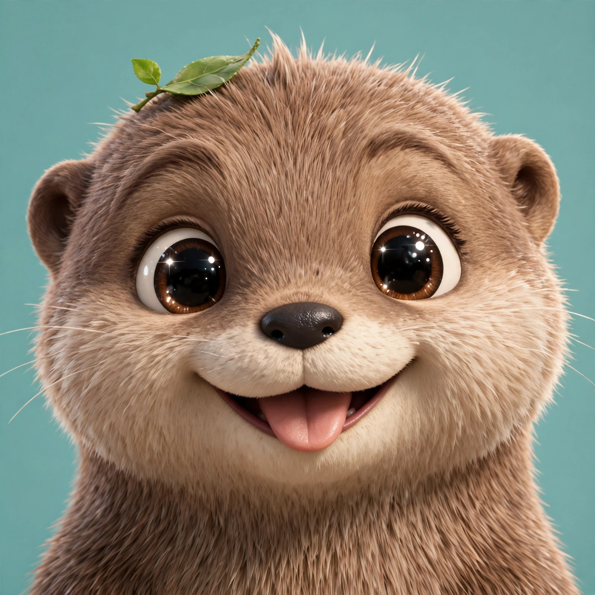
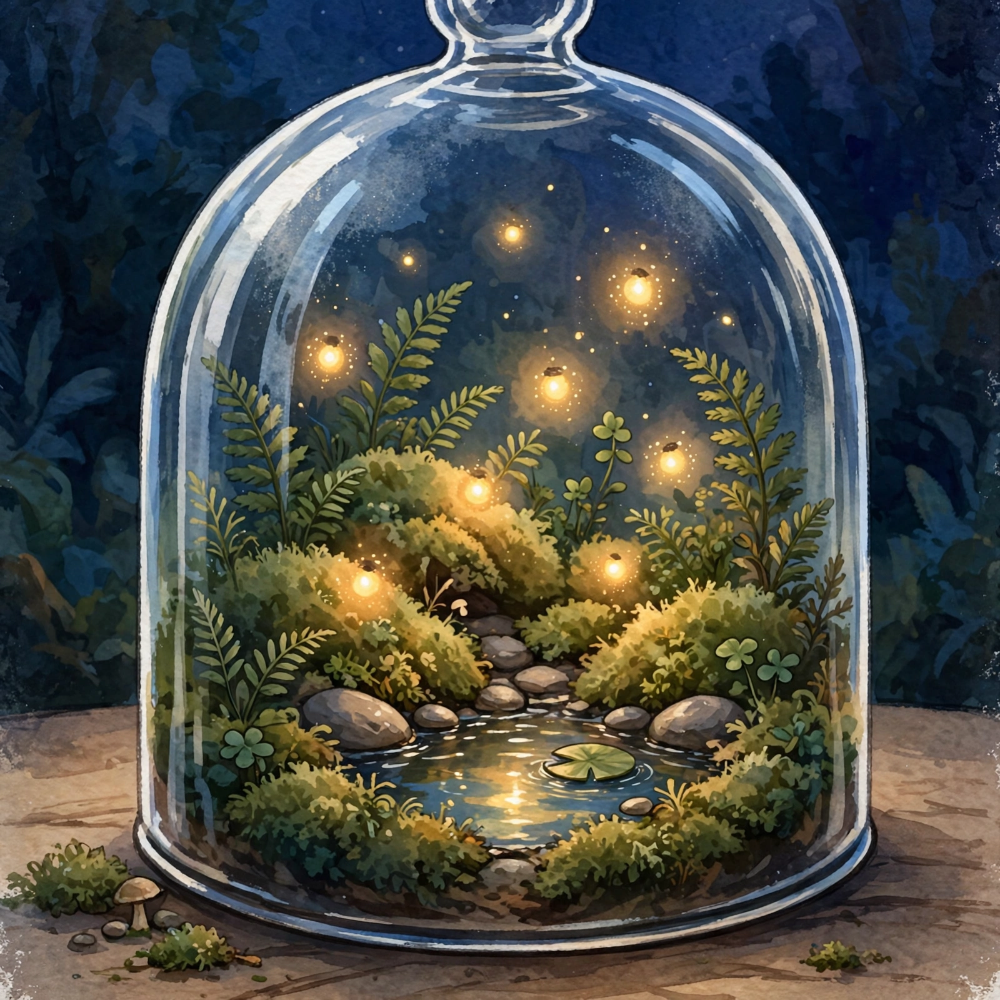

<!doctype html>
<html lang="en">
<head>
<meta charset="utf-8" />
<meta name="viewport" content="width=device-width, initial-scale=1, viewport-fit=cover" />
<meta name="color-scheme" content="light" />
<link rel="icon" href="data:," />
<title>P3 Learning App</title>
<link rel="preconnect" href="https://fonts.googleapis.com">
<link href="https://fonts.googleapis.com/css2?family=Fredoka:wght@500;600;700&family=Nunito:wght@400;600;700;800;900&display=swap" rel="stylesheet">
<style>
:root{
  color-scheme:light;
  /* Calm mint world (myKx review 2026-11-05): pale sage background,
     white cards, dark forest-green text, golden-yellow buttons,
     lavender/purple mascot accents, gold sparkles. */
  --bg:#eaf5e6; --bg2:#dcefd6; --panel:#ffffff; --panel2:#f0f7ec;
  --ink:#1e3a24; --ink-soft:#57705a; --line:#c9dcc6;
  --amber:#ffc94d; --amber-d:#7d6218; --teal:#3e8e52; --teal-soft:#dff2e2;
  --coral:#c0392b; --coral-soft:#fdeceb; --sky:#1d4ed8; --sky-soft:#dbeafe;
  --green:#2f7a3d; --green-soft:#dff2e2; --gold:#ffc94d;
  --nav:#1f4a2e; --nav-ink:#f5f1e6; --shadow:0 10px 30px rgba(30,60,35,.14);
  --card:#fffaf0; --card-text:#23402c;
  --tint:rgba(46,160,90,.30); --glow:#7be495;
  --radius:18px;
}
*{box-sizing:border-box}
html,body{margin:0;padding:0}
body{font-family:"Nunito",system-ui,sans-serif;background:var(--bg);color:var(--ink);min-height:100vh}
h1,h2,h3,.display{font-family:"Fredoka","Nunito",sans-serif}
button{font-family:inherit;cursor:pointer}
input,select,textarea{font-family:inherit}
a{color:var(--sky)}

/* ---------- Layout ---------- */
.app{display:flex;min-height:100vh}
.sidebar{width:228px;flex:0 0 228px;background:var(--nav);color:var(--nav-ink);display:flex;flex-direction:column;padding:18px 14px;position:sticky;top:0;height:100vh;z-index:30}
.brand{display:flex;align-items:center;gap:10px;padding:4px 8px 16px}
.brand .bname{font-family:"Fredoka";font-weight:800;font-size:1.15rem;line-height:1.1}
.brand .bsub{font-size:.72rem;opacity:.75;font-weight:700}
.navbtn{display:flex;align-items:center;gap:11px;width:100%;background:transparent;border:0;color:var(--nav-ink);padding:11px 12px;border-radius:12px;font-size:.98rem;font-weight:800;text-align:left;margin-bottom:4px}
.navbtn .nic{font-size:2rem;width:40px;text-align:center}
.navbtn:hover{background:rgba(255,255,255,.08)}
.navbtn.active{background:var(--amber);color:#231a02}
.sidebar .spacer{flex:1}
.doorlink{font-size:.8rem;opacity:.85;text-align:center;padding:8px}
.main{flex:1;min-width:0;display:flex;flex-direction:column}
.topbar{display:flex;align-items:center;gap:10px;padding:12px 20px;position:sticky;top:0;background:var(--bg);z-index:20;border-bottom:2px solid var(--line)}
.topbar .page-title{font-family:"Fredoka";font-weight:800;font-size:1.3rem}
.chip{display:inline-flex;align-items:center;gap:6px;background:var(--panel2);border:2px solid var(--line);border-radius:999px;padding:5px 12px;font-weight:900;font-size:.9rem}
/* Game timer chip: dark forest-green ink on solid white, so it stays
   readable on every game hero — the plain .chip inherits the Play
   route's cream text (#f5f1e6) on its pale-mint pill, which was
   nearly invisible (seen live 2026-11-07). */
.timechip{background:#fff;color:#1e3a24;border-color:#1e3a24}
.iconbtn{width:42px;height:42px;border-radius:50%;border:2px solid var(--line);background:var(--panel);font-size:1.1rem;display:inline-flex;align-items:center;justify-content:center}
.iconbtn.on{background:var(--amber);border-color:var(--amber)}
.avatarbtn{width:46px;height:46px;border-radius:50%;border:3px solid var(--amber);background:var(--panel);padding:0;overflow:hidden;display:inline-flex}
.content{padding:20px;max-width:1080px;width:100%;margin:0 auto}
.view{display:none}
.view.active{display:block;animation:fadein .25s ease}
@keyframes fadein{from{opacity:0;transform:translateY(6px)}to{opacity:1;transform:none}}
@media (prefers-reduced-motion: reduce){.view.active{animation:none}}

/* ---------- Generic ---------- */
.card{background:var(--panel);border:2px solid var(--line);border-radius:var(--radius);padding:18px;box-shadow:var(--shadow)}
.card h3{margin:0 0 6px}
.muted{color:var(--ink-soft)}
.small{font-size:.85rem}
.btn{display:inline-flex;align-items:center;gap:8px;background:var(--amber);color:#231a02;border:0;border-radius:999px;padding:11px 20px;font-weight:900;font-size:1rem;box-shadow:0 4px 0 var(--amber-d)}
.btn:active{transform:translateY(2px);box-shadow:0 2px 0 var(--amber-d)}
.btn.teal{background:var(--teal);color:#fff;box-shadow:0 4px 0 #2f6b3a}
.btn.ghost{background:var(--panel);color:var(--ink);border:2px solid var(--line);box-shadow:none}
.btn.coral{background:var(--coral);color:#fff;box-shadow:0 4px 0 #9f1239}
.btn:disabled{opacity:.5;cursor:not-allowed}
.grid{display:grid;gap:16px}
.grid.c2{grid-template-columns:repeat(2,1fr)}
.grid.c3{grid-template-columns:repeat(3,1fr)}
.grid.c4{grid-template-columns:repeat(4,1fr)}
.pill{display:inline-block;border-radius:999px;padding:3px 11px;font-size:.75rem;font-weight:900}
.pill.eng{background:var(--sky-soft);color:var(--sky)}
.pill.math{background:var(--panel2);color:var(--amber-d)}
.pill.sci{background:var(--green-soft);color:var(--green)}
.pill.chi{background:var(--coral-soft);color:var(--coral)}
.pill.done{background:var(--green-soft);color:var(--green)}
.pill.prog{background:var(--panel2);color:var(--amber-d)}
.progressbar{height:12px;background:var(--bg);border:2px solid var(--line);border-radius:999px;overflow:hidden}
.progressbar>div{height:100%;background:var(--teal);border-radius:999px;transition:width .4s}

/* ---------- Door ---------- */
.doorwrap{min-height:100vh;display:flex;align-items:center;justify-content:center;padding:20px;background:
  linear-gradient(rgba(16,15,44,.62),rgba(16,15,44,.62)), url(assets/terrarium.webp) center/cover no-repeat, var(--bg)}
.doorcard{max-width:560px;width:100%;text-align:center}
.doorcard h1{font-size:2.1rem;margin:8px 0 2px}
.codebubbles{display:flex;gap:12px;justify-content:center;margin:16px 0}
.codebubbles .bub{width:64px;height:64px;border-radius:50%;border:3px dashed var(--line);background:var(--panel);font-size:1.9rem;display:flex;align-items:center;justify-content:center}
.codebubbles .bub.filled{border-style:solid;border-color:var(--amber)}
.picgrid{display:grid;grid-template-columns:repeat(6,1fr);gap:10px;margin:14px 0}
.picbtn{font-size:1.8rem;padding:10px 0;border-radius:14px;border:2px solid var(--line);background:var(--panel)}
.picbtn:hover{border-color:var(--amber);transform:scale(1.06)}
.lvlpick{display:flex;gap:8px;flex-wrap:wrap;justify-content:center;margin:8px 0 4px}
.lvlbtn{font-size:1.05rem;font-weight:900;padding:10px 16px;border-radius:14px;border:2px solid var(--line);background:var(--panel);cursor:pointer}
.lvlbtn:hover{border-color:var(--amber);transform:scale(1.05)}
.lvlbtn.sel{border-color:var(--amber);background:#fff7d6;box-shadow:0 0 0 2px var(--amber)}
.explorerrow{display:flex;flex-wrap:wrap;gap:12px;justify-content:center;margin:14px 0}
.explorerchip{display:flex;flex-direction:column;align-items:center;gap:4px;background:var(--panel);border:2px solid var(--line);border-radius:16px;padding:12px 16px;font-weight:900}
.explorerchip:hover{border-color:var(--amber)}
.explorerchip .face{font-size:2rem}
.field{width:100%;padding:12px 14px;border-radius:12px;border:2px solid var(--line);background:var(--panel);color:var(--ink);font-size:1rem;font-weight:700}
label.flabel{display:block;font-weight:900;margin:12px 0 6px;text-align:left}

/* ---------- Home / Pip ---------- */
.hero{display:flex;gap:18px;align-items:center}
.pipwrap{flex:0 0 128px;text-align:center}
.pipwrap svg{width:128px;height:128px}
.pipname{font-family:"Fredoka";font-weight:800}
.speech{background:var(--panel2);border:2px solid var(--line);border-radius:16px;padding:12px 14px;position:relative;font-weight:700}
.badge{display:inline-flex;align-items:center;gap:6px;background:var(--panel2);border:2px solid var(--gold);color:var(--ink);border-radius:999px;padding:5px 12px;font-weight:900;font-size:.85rem;margin:3px}

/* ---------- Quiz ---------- */
.optbtn{display:block;width:100%;text-align:left;background:var(--panel);border:2.5px solid var(--line);border-radius:14px;padding:14px 16px;font-size:1.05rem;font-weight:800;color:var(--ink);margin-bottom:10px}
.optbtn:hover{border-color:var(--sky)}
.optbtn.picked{border-color:var(--sky);background:var(--sky-soft)}
.optbtn.right{border-color:var(--green);background:var(--green-soft);animation:pop .35s ease}
.optbtn.wrong{border-color:var(--coral);background:var(--coral-soft)}
@keyframes pop{0%{transform:scale(1)}40%{transform:scale(1.045)}100%{transform:scale(1)}}
.feedback{border-radius:14px;padding:14px 16px;font-weight:800;margin:10px 0}
.feedback.ok{background:var(--green-soft);color:#1e3a24}
.feedback.no{background:var(--coral-soft);color:#1e3a24}
.confetti{position:fixed;inset:0;pointer-events:none;z-index:90;overflow:hidden}
.confetti span{position:absolute;top:-40px;font-size:1.5rem;animation:fall linear forwards}
@keyframes fall{to{transform:translateY(110vh) rotate(340deg)}}
.trophy{font-size:4rem;animation:pop .5s ease infinite alternate;display:inline-block}
@keyframes bounce{0%,100%{transform:translateY(0)}50%{transform:translateY(-12px)}}
@keyframes fxHop{0%{transform:translateY(0) scale(1)}30%{transform:translateY(-26px) scale(1.05)}55%{transform:translateY(0) scale(1)}75%{transform:translateY(-12px)}100%{transform:translateY(0)}}
@keyframes fxWiggle{0%,100%{transform:rotate(0)}25%{transform:rotate(-5deg) scale(1.03)}75%{transform:rotate(5deg) scale(1.03)}}
@keyframes fxFloatUp{0%{opacity:0;transform:translateY(8px) scale(.6)}25%{opacity:1}100%{opacity:0;transform:translateY(-74px) scale(1.2)}}
.fx-hop{animation:fxHop .95s ease}
.fx-wiggle{animation:fxWiggle .9s ease-in-out}
.fx-float{position:absolute;bottom:12px;animation:fxFloatUp 1.4s ease-out forwards;pointer-events:none;font-size:1.7rem;z-index:2}
/* ---------- Live frog pond: the frog is layered SVG art that
   lives in its pond — it wanders, blinks, breathes and can be
   dragged. No WebGL, no raster sprite: depth comes from radial
   gradients, shading and a soft shadow, Pip-style. */
.pond{position:relative;height:280px;border-radius:14px;overflow:hidden;background:linear-gradient(180deg,#bfe9ff 0%,#8fd0ea 42%,#4aa88a 78%,#2f8f6d 100%);box-shadow:inset 0 0 0 2px rgba(255,255,255,.35)}
.pond-lily{position:absolute;border-radius:50%;background:radial-gradient(circle at 35% 30%,#8ed9a0,#3d9e57 70%);opacity:.92;z-index:1}
.pond-bubble{position:absolute;border-radius:50%;background:rgba(255,255,255,.4);z-index:1}
.frog-wrap{position:absolute;transform:translate(-50%,-50%);transition:left 1.3s ease-in-out,top 1.3s ease-in-out;cursor:grab;touch-action:none;z-index:3}
/* A bigger invisible grab zone: the frogspawn cluster is the
   smallest stage (150px), so the wrap gets a 16px halo that still
   catches a press — and the frog holds still on hover (bindCritter)
   so an aimed press lands on it instead of empty pond. */
.frog-wrap::before{content:'';position:absolute;inset:-16px}
/* During Play the frog must track the pointer, not drift — the
   1.3s wander transition is far too slow for a chase. */
.pond.playing .frog-wrap{transition:left .3s ease-out,top .3s ease-out}
.pond.dragging .frog-wrap{transition:none}
.pond.playing .pond-toy{transition:left .12s linear,top .12s linear}
.frog-wrap:active{cursor:grabbing}
.frog-bob{display:inline-block;transform-origin:50% 92%}
.frog-bob svg{height:100%;width:auto;display:block;filter:drop-shadow(0 10px 10px rgba(10,40,30,.25))}
.frog-eye{transform-box:fill-box;transform-origin:center;animation:frogBlink 4.6s infinite}
@keyframes frogBlink{0%,91%,100%{transform:scaleY(1)}94%{transform:scaleY(.08)}}
.frog-body{transform-box:fill-box;transform-origin:50% 100%;animation:frogBreathe 3.2s ease-in-out infinite}
@keyframes frogBreathe{0%,100%{transform:scale(1)}50%{transform:scale(1.03,1.05)}}
.frog-bubble{position:absolute;left:50%;top:10px;transform:translateX(-50%);max-width:88%;background:#fff;border:2px solid var(--line);border-radius:14px;padding:8px 12px;font-weight:800;font-size:.92rem;z-index:6;box-shadow:var(--shadow);white-space:nowrap;overflow:hidden;text-overflow:ellipsis}
.frog-bubble:after{content:'';position:absolute;left:50%;bottom:-9px;margin-left:-8px;border:8px solid transparent;border-top-color:#fff;border-bottom:0}
.dirt-spot{position:absolute;width:36px;height:28px;border-radius:50%;background:radial-gradient(circle at 35% 30%,#a9805a,#6b4a2a 70%);border:0;cursor:pointer;z-index:4;pointer-events:auto;box-shadow:inset 0 -3px 5px rgba(0,0,0,.3)}
.dirt-spot:hover{transform:scale(1.12)}
.pond-toy{position:absolute;font-size:2rem;z-index:4;pointer-events:none;transition:left .25s linear,top .25s linear;transform:translate(-50%,-50%)}
#pondDirt{position:absolute;inset:0;z-index:4;pointer-events:none}
@media (prefers-reduced-motion: reduce){.frog-eye,.frog-body,.frog-wrap{animation:none;transition:none}}
.bouncy{animation:bounce 1s ease infinite}
@media (prefers-reduced-motion: reduce){.trophy,.bouncy,.confetti span{animation:none}}

/* ---------- Play ---------- */
.memgrid{display:grid;grid-template-columns:repeat(4,1fr);gap:10px;max-width:440px}
.memcard{aspect-ratio:1;border-radius:14px;border:2.5px solid var(--line);background:var(--nav);color:#fff;font-size:1.7rem;display:flex;align-items:center;justify-content:center;font-weight:900;perspective:600px;padding:0}
.meminner{display:block;width:100%;height:100%;position:relative;transform-style:preserve-3d;transition:transform .45s ease}
.memcard.open .meminner,.memcard.matched .meminner{transform:rotateY(180deg)}
.memface{position:absolute;inset:0;display:flex;align-items:center;justify-content:center;border-radius:12px;backface-visibility:hidden;-webkit-backface-visibility:hidden}
.memfront{background:var(--nav);color:#fff}
.memback{background:var(--panel);color:var(--ink);transform:rotateY(180deg)}
.memcard.matched .memback{background:var(--green-soft)}
.memcard.matched{border-color:var(--green)}
@media (prefers-reduced-motion: reduce){.meminner{transition:none}}

/* ---------- Number Pop balloons + Speed Sort big tiles ---------- */
.balloonrow{display:flex;flex-wrap:wrap;gap:14px;justify-content:center;padding:18px 4px 6px;height:200px;overflow:hidden}
.balloon{position:relative;background:none;border:0;cursor:pointer;padding:0;width:104px;height:128px;animation:balloonRise var(--rise,10s) linear both}
.balloonwrap.done .balloon{animation:none;transform:none}
.balloonwrap.done .escapefill{animation-play-state:paused}
.escapebar{height:10px;background:#e8e2d5;border-radius:6px;overflow:hidden;margin:8px 0 2px}
.escapefill{height:100%;background:linear-gradient(90deg,#f59e0b,#ef4444);animation:escapeShrink var(--rise,10s) linear both}
@keyframes escapeShrink{from{width:100%}to{width:0%}}
.balloon .b-emoji{font-size:4.4rem;line-height:1;display:block;filter:drop-shadow(0 6px 6px rgba(10,40,30,.25))}
.balloon .b-num{position:absolute;left:50%;top:44%;transform:translate(-50%,-50%);font-size:1.15rem;font-weight:900;color:#3a2b00;font-family:'Fredoka'}
.balloon:disabled{cursor:default}
.balloon.right .b-emoji{filter:drop-shadow(0 0 14px rgba(143,209,139,.9))}
.balloon.wrong{opacity:.55}
.balloon.wrong .b-num{color:var(--coral)}
.balloon.popped{animation:balloonPop .45s ease-out both}
@keyframes balloonRise{from{transform:translateY(210px)}to{transform:translateY(-170px)}}
@keyframes balloonPop{0%{transform:scale(1)}40%{transform:scale(1.28) rotate(-7deg)}100%{transform:scale(1)}}
.sortgrid{display:grid;grid-template-columns:1fr 1fr;gap:14px;padding:10px 0 4px}
.sorttile{min-height:118px;border-radius:18px;border:3px solid var(--line);background:var(--panel);font-size:3rem;display:flex;align-items:center;justify-content:center;cursor:pointer;animation:tileIn .45s ease both;animation-delay:var(--d,0s)}
.sorttile:hover{border-color:var(--sky)}
.sorttile.right{border-color:var(--green);background:var(--green-soft);animation:pop .35s ease}
.sorttile.wrong{border-color:var(--coral);background:var(--coral-soft);opacity:.6}
.sorttile:disabled{cursor:default}
@keyframes tileIn{from{opacity:0;transform:translateY(16px) scale(.92)}to{opacity:1;transform:none}}
/* ---------- Word Scramble tiles + slots ---------- */
.scrslots{display:flex;gap:8px;justify-content:center;padding:12px 0 4px;flex-wrap:wrap}
.scrslot{width:52px;height:60px;border:3px dashed var(--line);border-radius:12px;display:flex;align-items:center;justify-content:center;font-size:1.8rem;font-weight:900;background:var(--panel);font-family:'Fredoka';cursor:pointer}
.scrslot.filled{border-style:solid;border-color:var(--sky);background:var(--sky-soft)}
.scrslot.right{border-color:var(--green);background:var(--green-soft)}
.scrslot.wrong{border-color:var(--coral);background:var(--coral-soft)}
.scrslot:disabled{cursor:default}
.scrtiles{display:flex;gap:10px;justify-content:center;flex-wrap:wrap;padding:10px 0}
.scrtile{min-width:52px;height:60px;border-radius:14px;border:3px solid var(--line);background:var(--panel);font-size:1.8rem;font-weight:900;cursor:pointer;font-family:'Fredoka';animation:tileIn .4s ease both;animation-delay:var(--d,0s)}
.scrtile:hover{border-color:var(--sky)}
.scrtile.used{opacity:.25;cursor:default}
.scrtile:disabled{cursor:default}
.scrbtns{display:flex;gap:8px;justify-content:center;flex-wrap:wrap;margin-top:6px}
.hintline{background:var(--sky-soft);border-radius:12px;padding:10px 14px;font-weight:800;margin:10px 0}
/* ---------- Maths Race track + countdown ---------- */
.racetrack{margin:10px 0 4px}
.racebar{height:14px;border-radius:8px;background:#e8e2d5;overflow:hidden}
.racebarfill{height:100%;background:linear-gradient(90deg,#f59e0b,#ef4444);transition:width 1s linear}
.racelane{position:relative;height:46px;margin-top:6px}
.racelab{position:absolute;left:0;top:12px;font-size:.8rem;font-weight:900;color:var(--ink)}
.racer{position:absolute;top:0;font-size:2rem;transition:left .6s ease;left:0}
.raceflag{position:absolute;right:0;top:4px;font-size:1.5rem}
@media (prefers-reduced-motion: reduce){.balloon{animation:none}.balloon.popped{animation:none}.escapefill{animation:none}.sorttile,.scrtile{animation:none}.racebarfill,.racer{transition:none}}
.bigq{font-size:1.5rem;font-weight:900;text-align:center;padding:10px}
.garden{background:#eaf7e9;border:2px solid #bfe3b4;border-radius:14px;padding:10px;margin:10px 0;text-align:center}
.gardenrow{display:flex;gap:6px;justify-content:center;font-size:1.9rem;line-height:1}
.gflower{display:inline-block;animation:flowerPop .45s ease}
@keyframes flowerPop{0%{transform:scale(.4)}60%{transform:scale(1.25)}100%{transform:scale(1)}}
/* ---------- Crossword Quest + Exit Parking ---------- */
.xwgrid{display:grid;grid-template-columns:repeat(5,1fr);gap:6px;max-width:340px;margin:14px auto}
.xwcell{aspect-ratio:1;border:2.5px solid var(--line);border-radius:10px;background:var(--panel);display:flex;align-items:center;justify-content:center;font-size:1.4rem;font-weight:900;position:relative;color:var(--ink)}
.xwcell.blank{border-color:transparent;background:transparent}
.xwcell.lit{background:var(--green-soft);border-color:var(--green)}
.xwcell.sel{background:#fff3c4;border-color:#d9a400}
.xwcell.cur{box-shadow:0 0 0 3px #f59e0b}
.xwcell.bad{background:#fee2e2;border-color:#dc2626;color:#991b1b}
.xwlet{pointer-events:none}
.xwclues{display:grid;gap:6px;margin-top:12px}
.xwclue{display:flex;gap:8px;align-items:baseline;text-align:left;width:100%;padding:10px 12px;border-radius:12px;border:2px solid var(--line);background:var(--panel);font-weight:700;color:var(--ink);cursor:pointer;font-family:inherit;font-size:.95rem}
.xwclue.active{border-color:#d9a400;background:#fff3c4}
.xwclue.done{opacity:.55}
.xwclue.done .xwclue-t{text-decoration:line-through}
.xwnum{position:absolute;top:2px;left:5px;font-size:.62rem;font-weight:900;color:var(--ink-soft)}
.parklot{position:relative;max-width:340px;margin:14px auto;aspect-ratio:1}
.parkcell{position:absolute;border:2px dashed var(--line);border-radius:12px;background:var(--panel2);display:flex;align-items:center;justify-content:center;font-size:1.3rem}
.parkcell.exit{border-style:solid;border-color:var(--amber);background:#fff7e0}
.parkcar{position:absolute;border-radius:12px;border:2.5px solid var(--line);font-size:1.7rem;display:flex;align-items:center;justify-content:center;cursor:pointer;transition:left .28s ease,top .28s ease;padding:0}
.parkcar.red{background:#ffe1e1;border-color:#d33}
.parkshake{animation:parkshake .3s ease}
@keyframes parkshake{0%,100%{transform:translateX(0)}25%{transform:translateX(-4px)}75%{transform:translateX(4px)}}
/* ---------- Sentence Builder tiles + build strip ---------- */
.sbstrip{display:flex;gap:8px;justify-content:center;flex-wrap:wrap;min-height:64px;padding:12px;border:3px dashed var(--line);border-radius:14px;background:var(--panel2);margin:12px 0}
.sbslot{min-width:64px;height:52px;border-radius:12px;border:2.5px solid var(--line);background:var(--panel);display:flex;align-items:center;justify-content:center;font-size:1.25rem;font-weight:900;font-family:'Fredoka';cursor:pointer}
.sbslot.empty{border-style:dashed;color:var(--ink-soft);cursor:default}
.sbslot.locked{background:var(--green-soft);border-color:var(--green);color:var(--green);cursor:default}
.sbbank{display:flex;gap:10px;justify-content:center;flex-wrap:wrap;padding:6px 0}
.sbtile{min-width:64px;height:52px;border-radius:12px;border:2.5px solid var(--line);background:var(--panel);font-size:1.25rem;font-weight:900;font-family:'Fredoka';cursor:pointer;animation:tileIn .35s ease both}
.sbtile:hover{border-color:var(--sky)}
.sbtile.used{opacity:.25;cursor:default}
.sbtile:disabled{cursor:default}
/* ---------- Crossword Quest progress dots ---------- */
.xwdots{display:flex;gap:6px;justify-content:center;margin:10px 0 2px}
.xwdot{width:14px;height:14px;border-radius:50%;border:2px solid var(--line);background:var(--panel)}
.xwdot.done{background:var(--green);border-color:var(--green)}

/* ---------- Ask Pip ---------- */
.threadrow{display:flex;justify-content:space-between;align-items:center;width:100%;text-align:left;background:var(--panel);border:2px solid var(--line);border-radius:14px;padding:12px 14px;font-weight:800;color:var(--ink);margin-bottom:8px}
.threadrow.active{border-color:var(--amber)}
.chatlog{display:flex;flex-direction:column;gap:10px;max-height:52vh;overflow-y:auto;padding:6px 2px}
.msg{max-width:82%;padding:11px 14px;border-radius:16px;font-weight:700;line-height:1.45;white-space:pre-wrap}
.msg.kid{align-self:flex-end;background:var(--sky);color:#fff;border-bottom-right-radius:4px}
.msg.pip{align-self:flex-start;background:var(--panel2);border:2px solid var(--line);border-bottom-left-radius:4px}
.chatbar{display:flex;gap:8px;margin-top:12px}
.chatbar input{flex:1}

/* ---------- Critter / Treasure ---------- */
.stage{display:flex;flex-direction:column;align-items:center;gap:4px;padding:12px 6px;border-radius:14px;border:2.5px solid var(--line);background:var(--panel);font-weight:900;font-size:.85rem;text-align:center}
.stage .se{font-size:2.2rem}
.stage.sel{border-color:var(--teal);background:var(--teal-soft)}
.treasure{display:flex;gap:14px;align-items:flex-start}
.treasure .te{font-size:2.4rem;flex:0 0 auto}

/* ---------- Parent ---------- */
table.ledger{width:100%;border-collapse:collapse}
table.ledger th,table.ledger td{padding:9px 10px;border-bottom:2px solid var(--line);text-align:left;font-weight:700}
.pinDots{display:flex;gap:10px;justify-content:center;margin:14px 0}
.pinDots .d{width:18px;height:18px;border-radius:50%;border:3px solid var(--ink-soft)}
.pinDots .d.f{background:var(--amber);border-color:var(--amber)}
.keypad{display:grid;grid-template-columns:repeat(3,72px);gap:10px;justify-content:center}
.keypad button{padding:14px 0;font-size:1.25rem;font-weight:900;border-radius:14px;border:2px solid var(--line);background:var(--panel);color:var(--ink)}

/* ---------- Menu / modal ---------- */
.menu{position:absolute;top:64px;right:16px;width:290px;background:var(--panel);border:2px solid var(--line);border-radius:18px;box-shadow:var(--shadow);padding:14px;z-index:60}
.menu button.mitem{display:flex;gap:10px;align-items:center;width:100%;background:var(--panel2);border:0;border-radius:12px;padding:13px;font-weight:900;font-size:.98rem;color:var(--ink);margin-bottom:8px;text-align:left}
.overlay{position:fixed;inset:0;background:rgba(8,10,30,.55);display:none;align-items:center;justify-content:center;z-index:80;padding:16px}
.overlay.open{display:flex}
.modal{background:var(--panel);border-radius:20px;max-width:480px;width:100%;padding:22px;max-height:90vh;overflow-y:auto;border:2px solid var(--line)}
.toast{position:fixed;bottom:92px;left:50%;transform:translateX(-50%);background:var(--nav);color:#fff;padding:11px 20px;border-radius:999px;font-weight:900;z-index:95;display:none;box-shadow:var(--shadow)}
.bottomnav{display:none}
.starsRow{font-size:1.6rem;letter-spacing:4px}

/* ---------- Pip: 3D animated otter (Mira-style) ---------- */
.otter3d{display:inline-block;animation:otterFloat 3.2s ease-in-out infinite;transform-style:preserve-3d;perspective:600px;vertical-align:middle}
.otter3d .otter-ring{display:block;width:100%;height:100%;border-radius:50%;overflow:hidden;position:relative;animation:otterTilt 5s ease-in-out infinite}
.otter3d img{width:100%;height:100%;object-fit:cover;object-position:50% 32%;display:block;transform:scale(1.22)}
.otter3d .otter-shine{position:absolute;inset:0;border-radius:50%;background:linear-gradient(125deg,rgba(255,255,255,.38) 0%,rgba(255,255,255,0) 42%);pointer-events:none}
@keyframes otterFloat{0%,100%{transform:translateY(0) rotate(-1.6deg)}50%{transform:translateY(-7px) rotate(1.6deg)}}
@keyframes otterTilt{0%,100%{transform:rotateY(-7deg) rotateX(3deg)}50%{transform:rotateY(7deg) rotateX(-3deg)}}
.otter3d .eye{transform-box:fill-box;transform-origin:center;animation:otterBlink 4.4s infinite}
@keyframes otterBlink{0%,92%,100%{transform:scaleY(1)}95%{transform:scaleY(.08)}}
.otter3d .pawwave{transform-box:fill-box;transform-origin:20% 85%;animation:otterWave 2.6s ease-in-out infinite}
@keyframes otterWave{0%,100%{transform:rotate(0deg)}50%{transform:rotate(-22deg)}}
.otter3d .leafsway{transform-box:fill-box;transform-origin:50% 100%;animation:leafSway 3s ease-in-out infinite}
@keyframes leafSway{0%,100%{transform:rotate(-4deg)}50%{transform:rotate(6deg)}}
.otter3d .earl{transform-box:fill-box;transform-origin:80% 80%;animation:earWig 5s ease-in-out infinite}
.otter3d .earr{transform-box:fill-box;transform-origin:20% 80%;animation:earWig 5s ease-in-out infinite reverse}
@keyframes earWig{0%,88%,100%{transform:rotate(0)}92%{transform:rotate(-9deg)}96%{transform:rotate(7deg)}}
.otter3d .tongue{transform-box:fill-box;transform-origin:50% 0;animation:tongueWig 3.4s ease-in-out infinite}
@keyframes tongueWig{0%,100%{transform:rotate(-2deg) scaleY(1)}50%{transform:rotate(3deg) scaleY(1.08)}}
@media (prefers-reduced-motion: reduce){.otter3d,.otter3d .eye,.otter3d .pawwave,.otter3d .leafsway,.otter3d .earl,.otter3d .earr,.otter3d .tongue{animation:none}}
/* ---------- Home: terrarium hero + weekly theme (mirrors the Muse version) ---------- */
.disc{border-radius:50%;display:inline-flex;align-items:center;justify-content:center;flex:0 0 auto}
.sidecritter{background:var(--panel);border-radius:var(--radius);padding:14px}
.homegrid{display:grid;gap:20px}
.cardrow{display:grid;gap:16px;margin-top:20px}
@media (min-width:900px){
  .homegrid{grid-template-columns:3fr 2fr}
  .cardrow{grid-template-columns:repeat(3,1fr)}
}
.heroT{position:relative;border-radius:20px;overflow:hidden;box-shadow:var(--shadow);min-height:340px;display:flex;flex-direction:column;justify-content:flex-end;color:#fff}
.heroT img.bg{position:absolute;inset:0;width:100%;height:100%;object-fit:cover}
.heroT .shade{position:absolute;inset:0;background:linear-gradient(to top,rgba(16,15,44,.95),rgba(16,15,44,.35) 55%,transparent)}
.heroT .tintwash{position:absolute;inset:0;background:linear-gradient(to top,var(--tint),transparent 70%);box-shadow:inset 0 0 90px var(--tint);transition:background .7s,box-shadow .7s}
.heroT .inner{position:relative;padding:22px}
.heroT .bubble{background:rgba(0,0,0,.35);border-radius:16px;padding:12px 14px;font-weight:600;color:#f5f1e6;max-width:460px}
.heroT .memory{background:rgba(0,0,0,.35);border-radius:16px;padding:10px 14px;font-weight:700;font-size:.9rem;color:#ffe9a8;max-width:460px;margin-top:8px}
.themeslabel{font-size:.75rem;font-weight:800;letter-spacing:.08em;text-transform:uppercase;color:rgba(245,241,230,.8)}
.themechip{border:0;border-radius:999px;padding:8px 15px;font-weight:700;font-size:.92rem;background:rgba(0,0,0,.4);color:#fff;transition:transform .15s;font-family:"Fredoka","Nunito",sans-serif}
.themechip.sel{background:var(--gold);color:#2a2753;transform:scale(1.05);box-shadow:0 0 0 2px rgba(255,255,255,.8)}
.themedots{display:inline-flex;gap:4px;margin-left:8px;vertical-align:middle}
.themedots i{width:9px;height:9px;border-radius:50%;display:inline-block;border:1px solid rgba(0,0,0,.18)}
/* Play and Treasure keep their own colours, but in the same light
   pastel family as the mint world (requested 2026-11-07 — the dark
   navy arcade and deep purple cave felt like different apps, and
   every dark route kept breaking text contrast). Play is a soft
   aqua, Treasure a soft lavender; cards stay white and text stays
   dark on both, so the plain .chip reads fine with no override. */
.app.route-play .main{background:#d8f1ea}
.app.route-play .topbar{background:#d8f1ea;border-bottom-color:#b5e3d5}
.app.route-treasure .main{background:#ece7f7}
.app.route-treasure .topbar{background:#ece7f7;border-bottom-color:#d8cdef}
/* Play Arcade layout: the game cards take the left, the leaderboards
   sit in a right-hand column (requested 2026-11-07). On narrow
   screens the boards stack underneath the games. */
.playwrap{display:flex;gap:16px;align-items:flex-start}
.playwrap .playmain{flex:1;min-width:0}
.playwrap .playside{flex:0 0 340px;max-width:340px;min-width:0}
.playwrap .playside>.card:first-child{margin-top:0!important}
@media (max-width:900px){
  .playwrap{flex-direction:column}
  .playwrap .playside{flex:1 1 auto;max-width:none;width:100%}
}
.app.route-treasure .main{background:#ece7f7}
.app.route-treasure .topbar{background:#ece7f7;border-bottom-color:#d8cdef}
/* Friend-request badge (requested 2026-11-07): a red count bubble
   on the Friends nav item, only while requests wait for a grown-up.
   In the sidebar it sits at the right end; in the bottom nav it
   centres under the label. */
.frbadge{display:inline-flex;align-items:center;justify-content:center;min-width:20px;height:20px;border-radius:999px;background:#dc2626;color:#fff;font-weight:900;font-size:.75rem;line-height:1;padding:0 6px}
.navbtn .frbadge{margin-left:auto}
.bottomnav .frbadge{margin-left:0}
.themeline{margin-top:10px;font-size:.92rem;font-weight:700;color:var(--glow)}
.questcard{background:var(--card);color:var(--card-text);border-radius:var(--radius);padding:20px;box-shadow:var(--shadow)}
.questcard .muted{color:#6d6899}
.questcard .progressbar{background:#e8e2d0;border-color:#e8e2d0}
.questcard .progressbar>div{background:#3e8e52}
.questcard .btn{background:#3e8e52;color:#fff;box-shadow:0 4px 0 #2f6b3a;width:100%;justify-content:center}
.questcard.done,.gamecard.done,.gamecard.locked{opacity:.55;filter:grayscale(.55)}
.btn:disabled{cursor:not-allowed;opacity:.75}
.swapbox{border-radius:16px;padding:10px 8px;text-align:center;font-family:"Fredoka","Nunito",sans-serif;font-weight:600;font-size:.92rem;border:0;width:100%}
.stageimg{width:100%;height:170px;object-fit:cover;border-radius:14px;display:block}
.cardimg{width:100%;height:144px;object-fit:cover;display:block}
.stage .simg{width:100%;height:64px;object-fit:cover;border-radius:10px}
.tilebtn{display:block;width:100%;text-align:left;background:var(--panel2);border:0;border-radius:16px;padding:12px 14px;color:var(--ink);font-family:"Fredoka","Nunito",sans-serif;font-weight:600;font-size:1rem}
.tilebtn span{display:block;font-family:"Nunito",sans-serif;font-size:.78rem;font-weight:700;color:var(--ink-soft);margin-top:2px}
.breathe{width:120px;height:120px;border-radius:50%;background:var(--teal);opacity:.75;margin:14px auto;transition:transform 4s ease-in-out}
/* ---------- Inner pages: same terrarium treatment as Home ---------- */
.pagehero{position:relative;border-radius:20px;overflow:hidden;box-shadow:var(--shadow);color:#fff;margin-bottom:18px}
.pagehero img.bg{position:absolute;inset:0;width:100%;height:100%;object-fit:cover}
.pagehero .shade{position:absolute;inset:0;background:linear-gradient(to top,rgba(16,15,44,.94),rgba(16,15,44,.45) 60%,rgba(16,15,44,.25))}
.pagehero .tintwash{position:absolute;inset:0;background:linear-gradient(to top,var(--tint),transparent 75%);box-shadow:inset 0 0 90px var(--tint)}
.pagehero .inner{position:relative;padding:20px;display:flex;gap:14px;align-items:center;flex-wrap:wrap}
.pagehero .heroicon{font-size:3.5rem;background:transparent;width:120px;height:120px;display:flex;align-items:center;justify-content:center;flex:0 0 auto}
.pagehero h2{margin:0;font-size:1.55rem;color:#fff;line-height:1.15}
.pagehero p{margin:5px 0 0;font-weight:700;color:#e9e5ff;max-width:540px}
.pagehero .herostat{background:rgba(0,0,0,.35);border-radius:14px;padding:8px 14px;font-weight:900;font-size:.92rem;color:#ffe9a8}
.flowhero{display:flex;gap:12px;align-items:center;background:var(--panel);border:2px solid var(--line);border-radius:var(--radius);padding:10px 14px;margin-bottom:14px;box-shadow:var(--shadow)}
.subjecthead{display:flex;align-items:center;gap:11px;margin:24px 0 12px}
.subjecthead .sdisc{width:44px;height:44px;border-radius:14px;display:inline-flex;align-items:center;justify-content:center;font-size:1.3rem;flex:0 0 auto}
.subjecthead h3{margin:0;font-size:1.25rem}
.subjecthead .small{font-weight:700}
.learncard{display:flex;flex-direction:column}
.learncard .iconrow{display:flex;align-items:center;gap:10px}
.learncard .qicon{width:72px;height:72px;background:transparent;display:inline-flex;align-items:center;justify-content:center;font-size:2.6rem;flex:0 0 auto}
.learn-timeline{border-left:3px solid var(--line);margin:6px 0 6px 14px;padding-left:18px}
.learn-topic{margin-bottom:10px}
.learn-topic-row{display:flex;gap:10px;align-items:center;width:100%;text-align:left;background:var(--card);border:2px solid var(--line);border-radius:14px;padding:12px 14px;font-family:inherit;font-size:1rem;color:var(--ink);cursor:pointer;box-shadow:var(--shadow)}
.learn-topic-row .tnode{font-size:1.15rem;flex:0 0 auto}
.learn-subs{list-style:none;margin:10px 0 0;padding:0 4px}
.learn-subs li{display:flex;justify-content:space-between;gap:10px;padding:8px 2px;border-bottom:2px solid var(--line);font-weight:700}
.learn-subs li:last-child{border-bottom:0}
.learn-subs .subnote{color:#6d6899;font-size:.85rem;white-space:nowrap}
.gamecard{padding:0;overflow:hidden;display:flex;flex-direction:column}
.gameband{height:124px;display:flex;align-items:center;justify-content:center;font-size:3.4rem}
.gamecard .gbody{padding:16px;display:flex;flex-direction:column;flex:1}
.gameband span{font-size:4.2rem;line-height:1}
.lbrow{display:flex;gap:10px;align-items:center;flex-wrap:wrap;padding:10px 0;border-bottom:2px solid var(--line);font-weight:800}
.lbrow:last-child{border-bottom:0}
/* Custom icon art sizes (2026-11-07, floating art 2026-11-07): the
   icons are glossy 3D objects on TRANSPARENT backgrounds — no tile,
   no square frame. They float, so the classes carry no
   border-radius or background, just a soft drop-shadow, and the art
   is shown big. .navic is the sidebar/bottom-nav icon, .gicon the
   big game-card band icon, .qicon img fills the quest card, .ic-sm
   is the inline size for pills and leaderboard headers, .heroart is
   the big section/game/quiz hero art. */
.navic{width:40px;height:40px;object-fit:contain;display:block;filter:drop-shadow(0 4px 8px rgba(15,20,50,.25))}
.bottomnav .navic{width:36px;height:36px}
.gicon{width:110px;height:110px;object-fit:contain;filter:drop-shadow(0 6px 10px rgba(15,20,50,.25))}
.qicon img{width:72px;height:72px;object-fit:contain;display:block;filter:drop-shadow(0 6px 10px rgba(15,20,50,.25))}
.ic-sm{width:2em;height:2em;object-fit:contain;vertical-align:-0.28em;filter:drop-shadow(0 3px 6px rgba(15,20,50,.22))}
.heroart{width:120px;height:120px;object-fit:contain;filter:drop-shadow(0 8px 14px rgba(15,20,50,.28))}
.lbcard{border:2px solid var(--line);border-radius:14px;margin-top:12px;overflow:hidden;background:#fff;color:#1e3a24}
.lbcard>h4{margin:0;padding:10px 12px;font-size:1rem;color:#1e3a24}
.lbcard .lbrow{padding:10px 12px}
.lbhead-eng{background:linear-gradient(135deg,#e6f4ea,#fff)}
.lbhead-math{background:linear-gradient(135deg,#fbe9ec,#fff)}
.lbhead-sci{background:linear-gradient(135deg,#e6eefb,#fff)}
.lbhead-chi{background:linear-gradient(135deg,#efe8f8,#fff)}
.flowhero.gametheme-word,.lbhead-word{background:linear-gradient(135deg,#e6f4ea,#fff)}
.flowhero.gametheme-number,.lbhead-number{background:linear-gradient(135deg,#fbe9ec,#fff)}
.flowhero.gametheme-memory,.lbhead-memory{background:linear-gradient(135deg,#e6eefb,#fff)}
.flowhero.gametheme-sort,.lbhead-sort{background:linear-gradient(135deg,#faf3dc,#fff)}
.flowhero.gametheme-scramble,.lbhead-scramble{background:linear-gradient(135deg,#efe8f8,#fff)}
.flowhero.gametheme-race,.lbhead-race{background:linear-gradient(135deg,#fbe7e7,#fff)}
.flowhero.gametheme-sentence,.lbhead-sentence{background:linear-gradient(135deg,#e2f2f5,#fff)}
.flowhero.gametheme-crossword,.lbhead-crossword{background:linear-gradient(135deg,#f5efe0,#fff)}
.flowhero.gametheme-parking,.lbhead-parking{background:linear-gradient(135deg,#e8edf2,#fff)}
.tdisc{width:62px;height:62px;border-radius:50%;background:var(--panel2);border:2px solid var(--line);display:flex;align-items:center;justify-content:center;font-size:1.9rem;flex:0 0 auto}
.tdisc.owned{border-color:var(--gold);box-shadow:0 0 0 3px rgba(255,201,77,.28)}
.flashcard{display:block;width:100%;background:var(--card);color:var(--card-text);border:0;border-radius:14px;padding:16px;font-weight:900;font-size:1.05rem;min-height:76px;box-shadow:var(--shadow);text-align:center}
.flashcard.back{background:#ffe9a8;color:#2a2753}
.flashcard .fside{display:block;font-size:.7rem;font-weight:900;letter-spacing:.08em;text-transform:uppercase;opacity:.6;margin-bottom:4px}
.plannerow{display:flex;gap:10px;align-items:center;background:var(--panel2);border:2px solid var(--line);border-radius:14px;padding:10px 12px;margin-bottom:8px;font-weight:800}
.plannerow .ptext{flex:1}
.plannerow.done .ptext{text-decoration:line-through;opacity:.65}
.tickbtn{width:34px;height:34px;border-radius:50%;border:2.5px solid var(--amber-d);background:transparent;color:var(--amber-d);font-weight:900;flex:0 0 auto;font-size:1rem;line-height:1}
.tickbtn.done{background:var(--teal);border-color:var(--teal);color:#fff}
.delbtn{background:transparent;border:0;color:var(--ink-soft);font-size:1.05rem;flex:0 0 auto;padding:4px}
@media (max-width:820px){
  .bottomnav button{font-size:.6rem}
  .bottomnav button .nic{font-size:1.7rem}
  .pagehero .inner{padding:16px}
  .pagehero h2{font-size:1.3rem}
}
@media (max-width:820px){
  .sidebar{display:none}
  .bottomnav{display:flex;position:fixed;bottom:0;left:0;right:0;background:var(--nav);z-index:40;padding:6px 4px calc(6px + env(safe-area-inset-bottom))}
  .bottomnav button{flex:1;background:transparent;border:0;color:var(--nav-ink);font-size:.66rem;font-weight:800;display:flex;flex-direction:column;align-items:center;gap:2px;padding:6px 0;border-radius:10px}
  .bottomnav button .nic{font-size:1.7rem}
  .bottomnav button.active{background:var(--amber);color:#231a02}
  .content{padding:16px 14px 96px}
  .grid.c2,.grid.c3,.grid.c4{grid-template-columns:1fr}
  .grid.c3.keep2{grid-template-columns:repeat(2,1fr)}
  .hero{flex-direction:column;text-align:center}
  .picgrid{grid-template-columns:repeat(4,1fr)}
  .topbar{padding:10px 14px}
  .topbar .page-title{font-size:1.1rem}
}
</style>
</head>
<body>
<div id="root"></div>
<div class="confetti" id="confetti" aria-hidden="true"></div>
<div class="toast" id="toast" role="status"></div>

<script>
/* ============================================================
   Jiyuna's Learning App — hosted version
   Progress is saved per explorer in browser storage AND synced
   to the server under a random 6-letter family sync code, so any
   device linked with that code shares the same family record.
   No child's real name is ever used as a server identifier.
   ============================================================ */

/* ---------- Cute funny otter Pip (hand-drawn SVG) ---------- */
function pipSVG(size, glow){
  glow = glow || '#ffb020';
  return '<span class="otter3d" style="width:'+size+'px;height:'+size+'px">'
   + '<span class="otter-ring" style="box-shadow:0 0 0 3px '+glow+', 0 12px 22px rgba(15,20,50,.35), inset 0 -14px 24px rgba(0,0,0,.18)">'
   + ''
   + '<span class="otter-shine"></span></span></span>';
}
/* ---------- Sound engine (WebAudio, no files) ---------- */
var AC=null;
function audio(){ if(!AC){ try{ AC=new (window.AudioContext||window.webkitAudioContext)(); }catch(e){} } if(AC&&AC.state==='suspended')AC.resume(); return AC; }
function isMuted(){ try{ return localStorage.getItem('jyn-muted')==='1'; }catch(e){ return false; } }
function toggleMute(){ var m=!isMuted(); try{ localStorage.setItem('jyn-muted', m?'1':'0'); }catch(e){} return m; }
function tone(freq,t0,dur,type,vol){
  if(isMuted())return;
  var ac=audio(); if(!ac)return;
  var o=ac.createOscillator(), g=ac.createGain();
  o.type=type||'sine'; o.frequency.value=freq;
  var s=ac.currentTime+t0;
  g.gain.setValueAtTime(0.0001,s); g.gain.exponentialRampToValueAtTime(vol||0.16,s+0.02);
  g.gain.exponentialRampToValueAtTime(0.0001,s+dur);
  o.connect(g); g.connect(ac.destination); o.start(s); o.stop(s+dur+0.05);
}
function slide(f0,f1,dur,type,vol){
  var ac=audio(); if(!ac||isMuted())return;
  var o=ac.createOscillator(), g=ac.createGain();
  o.type=type||'sine';
  o.frequency.setValueAtTime(Math.max(1,f0),ac.currentTime);
  o.frequency.exponentialRampToValueAtTime(Math.max(1,f1),ac.currentTime+dur);
  var s=ac.currentTime;
  g.gain.setValueAtTime(0.0001,s);
  g.gain.exponentialRampToValueAtTime(vol||0.14,s+0.02);
  g.gain.exponentialRampToValueAtTime(0.0001,s+dur);
  o.connect(g); g.connect(ac.destination);
  o.start(s); o.stop(s+dur+0.05);
}
function sndTick(n){ var f=880*Math.pow(2,Math.min(Math.max(n||0,0),12)/12); celesta(f,0,0.12); }
function sndCorrect(streak){
  var st=Math.max(0,Math.min(6,streak||0));
  var f=function(x){ return Math.round(x*Math.pow(2,st/12)*100)/100; };
  [523,659,784,1047].forEach(function(fr,i){ tone(f(fr),i*0.07,0.22,'triangle',0.18); });
  tone(f(1319),0.3,0.3,'sine',0.14); tone(f(1568),0.38,0.34,'sine',0.1);
}
function sndWrong(){ tone(220,0,0.18,'sine',0.1); tone(196,0.12,0.22,'sine',0.1); }
function sndFanfare(){ [523,659,784,1047,784,1047,1319].forEach(function(f,i){ tone(f,i*0.11,0.3,'triangle',0.18); }); [262,330,392].forEach(function(f){ tone(f,0.75,0.7,'sine',0.08); }); }
function sndPop(){ tone(880,0,0.09,'square',0.06); }
function sndThunk(){ slide(160,70,0.12,'triangle',0.3); }
function sndSlide(){ slide(300,700,0.18,'sine',0.08); }
/* A music-box celesta note: a pure sine plus a faint 4th harmonic
   that dies away quickly — the twinkling, magical-movie feel.
   The tune itself is original, written for Pip; it is not the
   Harry Potter film theme. */
function celesta(freq,t0,dur,vol){
  tone(freq,t0,dur,'sine',vol||0.12);
  tone(freq*4,t0,dur*0.4,'sine',(vol||0.12)*0.25);
}
/* Sidebar selection: a quick two-note music-box twinkle with a
   soft low shimmer — short, so navigation still feels instant. */
function sndMystery(){
  tone(110,0,0.5,'sine',0.05);
  celesta(987.77,0,0.5,0.12); celesta(1318.5,0.09,0.55,0.1);
  celesta(1567.98,0.18,0.45,0.06);
}
/* Magical grand entrance: a soft low pad, then a dreamy music-box
   phrase that rises and falls like a little lullaby, then a high
   sparkle shimmer — the Grand Door opening. About 2.3 seconds. */
function sndEntrance(){
  tone(130.81,0,2.0,'sine',0.06); tone(196,0,2.0,'sine',0.04);
  [523.25,659.25,783.99,1046.5,987.77,783.99,659.25,880].forEach(function(f,i){ celesta(f,0.15+i*0.14,0.6,0.13); });
  celesta(1318.5,1.35,0.9,0.12); celesta(1567.98,1.5,0.9,0.1); celesta(2093,1.65,1.0,0.07);
  [1046.5,1318.5,1568].forEach(function(f){ tone(f,1.35,0.9,'sine',0.04); });
}
/* Vibe Zone — two real audio tracks, played on loop.
   Forest Morning (the old synthesised pad + chirps) was removed
   2026-11-05 at Bryan's request and replaced with these two files
   he sent: a background-music track and jungle birdsong. */
var VIBES=[
 {id:'bg-music', name:'Background Music', icon:'🎵', file:'assets/vibe-background-music.mp3', blurb:'The gentle tune Bryan picked — soft and steady for study time.'},
 {id:'jungle-birds', name:'Jungle Birds', icon:'🐦', file:'assets/vibe-jungle-birds.mp3', blurb:'Birdsong in the jungle — chirps and rustles, like a morning in the trees.'}
];
var vibeId=null, vibeAudio=null, lastVibeId='bg-music';
function vibeById(id){ return VIBES.find(function(v){ return v.id===id; })||null; }
function vibeName(){ var v=vibeById(vibeId); return v?v.name:null; }
function startVibe(id){
  var v=vibeById(id)||VIBES[0]; if(!v)return;
  stopVibe(true);
  try{
    var a=new Audio(v.file); a.loop=true; a.volume=0.5;
    var p=a.play(); if(p&&p.catch)p.catch(function(){});
    vibeAudio=a; vibeId=v.id; lastVibeId=v.id;
  }catch(e){ vibeAudio=null; vibeId=null; }
}
function stopVibe(silent){
  if(vibeAudio){ try{ vibeAudio.pause(); }catch(e){} vibeAudio=null; }
  vibeId=null;
  if(!silent)renderTop();
}
/* Pip read-aloud: warmest available voice, sentence by sentence.
   iPhone Chrome was silent — three iOS quirks, all fixed here:
   1. getVoices() can stay empty and voiceschanged may never fire,
      so the old code waited forever for voices and never spoke.
      Now: speak anyway with the system default voice if none are
      listed yet.
   2. cancel() then speak() in the same tick swallows the utterance
      on iOS. Now: speak starts a beat after a cancel.
   3. Queued utterances stall on iOS. Now: sentences are chained
      one at a time — the next starts only when the previous ends. */
function speakPip(text){
  if(!('speechSynthesis' in window)){ toast('Sorry — this device has no read-aloud voice.'); return; }
  var isChi=/[\u4e00-\u9fff]/.test(text);
  var parts=(text.match(/[^.!?。！？]+[.!?。！？]*/g)||[text]).map(function(p){ return p.trim(); }).filter(Boolean);
  if(!parts.length)parts=[text];
  var warned=false;
  function pickVoice(){
    var voices=speechSynthesis.getVoices()||[];
    var vs=voices.filter(function(v){ return v.lang&&v.lang.toLowerCase().indexOf(isChi?'zh':'en')===0; });
    if(!vs.length)vs=voices;
    var good=isChi?['xiaoxiao','tingting','meijia','google']:['natural','neural','google','samantha','zira','jenny','aria'];
    for(var i=0;i<good.length;i++){ var m=vs.filter(function(v){ return v.name.toLowerCase().indexOf(good[i])>=0; }); if(m.length)return m[0]; }
    var bad=['fred','albert','bad news','organ','cellos','zarvox','trinoids','robot'];
    var ok=vs.filter(function(v){ var n=v.name.toLowerCase(); return !bad.some(function(b){ return n.indexOf(b)>=0; }); });
    return ok[0]||vs[0]||null;
  }
  function say(i){
    if(i>=parts.length)return;
    var u=new SpeechSynthesisUtterance(parts[i]);
    var v=pickVoice(); if(v)u.voice=v;
    u.lang=isChi?'zh-CN':'en-SG'; u.rate=0.98; u.pitch=1.12;
    u.onend=function(){ say(i+1); };
    u.onerror=function(ev){
      if(ev&&ev.error&&ev.error!=='canceled'&&ev.error!=='interrupted'){
        if(!warned){ warned=true; toast('No sound? Check the volume and the silent switch on the side of the phone.'); }
        say(i+1);
      }
    };
    speechSynthesis.speak(u);
  }
  if(speechSynthesis.speaking||speechSynthesis.pending){ speechSynthesis.cancel(); setTimeout(function(){ say(0); },150); }
  else say(0);
}
if('speechSynthesis' in window){ speechSynthesis.getVoices(); speechSynthesis.onvoiceschanged=function(){ speechSynthesis.getVoices(); }; }
</script>
<script>
/* ============================================================
   CONTENT — 14 Primary 3 topics. Each quest = 5 questions.
   warm = fresh warm-up bank (never repeats quest wording).
   retry = "cousin" questions for the Second Chance round.
   Q format: [question, [options], correctIndex, clue, pipJoke]
   ============================================================ */
function Q(q,o,a,c,j){return{q:q,o:o,a:a,c:c,j:j};}
var TOPICS=[
{id:'eng-story',img:'icons/topic-eng-story.webp',sub:'eng',subName:'English',icon:'📖',name:'Story Words',blurb:'Pick the best word to finish each mini story.',
 quest:[Q('Mina was so hungry she ate her noodles in two minutes. She was really ___.',['starving','sleepy','gentle','proud'],0,'Think: super, super hungry!','Why did the noodle blush? It saw the salad dressing! 🍜'),
 Q('The tortoise moved very slowly, but it never stopped. It was ___.',['lazy','steady','rude','shiny'],1,'It kept going and going, like a good MRT train.','Slow and steady — just like me chasing a fish!'),
 Q('“Please lower your voice,” whispered Miss Tan. “We are in the ___.”',['library','market','playground','beach'],0,'Shhh… where must we be extra quiet?','Libraries are my favourite quiet ponds!'),
 Q('After running 10 laps, Ben’s legs felt wobbly and ___.',['tired','hungry','itchy','loud'],0,'His legs did lots of work!','My legs get wobbly after otter aerobics too!'),
 Q('The puppy wagged its tail and licked Ana’s hand. It was very ___.',['fierce','friendly','grumpy','stormy'],1,'Wagging tails mean “I like you!”','Wagging tails and otter hugs — same team!')],
 warm:[Q('Which word means the opposite of “hot”?',['cold','warm','spicy','bright'],0,'','',''),
 Q('A baby cat is called a ___.',['cub','kitten','puppy','calf'],1,'','',''),
 Q('Which word describes a very big elephant?',['tiny','huge','thin','quiet'],1,'','',''),
 Q('We use our ___ to smell flowers.',['ears','nose','knees','elbows'],1,'','',''),
 Q('Which word means the opposite of “brave”?',['afraid','happy','strong','loud'],0,'',''),
 Q('The sun is shining and the sky is blue. It is a ___ day.',['sunny','stormy','dark','snowy'],0,'',''),
 Q('Which word means almost the same as “big”?',['large','tiny','short','thin'],0,'',''),
 Q('The kitten purred softly on the soft rug. It was very ___.',['happy','angry','noisy','cold'],0,'','')],
 retry:[Q('Raj finished all his homework and checked it twice. He was very ___.',['careful','careless','noisy','silly'],0,'He checked twice — that is the clue!',''),
 Q('The library book was so exciting that Sara could not stop reading. It was ___.',['boring','thrilling','empty','broken'],1,'Exciting books make your heart go thump!',''),
 Q('“Thank you for helping me,” said Tom ___.',['rudely','politely','angrily','lazily'],1,'Saying thank you nicely is…?',''),
 Q('After the long hike, Sara’s feet felt sore and ___.',['tired','sleepy','thirsty','proud'],0,'A long hike makes feet…',''),
 Q('The baby laughed and clapped her hands. She was very ___.',['sad','happy','angry','sleepy'],1,'Laughing and clapping means…',''),
 Q('The old bridge creaked in the wind. It looked very ___.',['new','shaky','bright','clean'],1,'A creaky bridge feels…','')],
 p4quest:[
Q('After climbing the steep hill, the hikers were completely ___.',['exhausted','excited','relaxed','cheerful'],0,'Exhausted means extremely tired.','Even otters get exhausted climbing hills!'),
Q('Which word means almost the same as “furious”?',['angry','happy','calm','sleepy'],0,'Furious means very angry.','Furious is angry turned up to the top!'),
Q('Mei was too shy to speak in front of the class. She felt very ___.',['confident','nervous','proud','cheerful'],1,'Nervous means worried about what might happen.','Butterflies in the tummy — that is nervous!'),
Q('The old temple was built hundreds of years ago. It is ___.',['modern','ancient','brand-new','tiny'],1,'Ancient means very, very old.','Ancient temples hold ancient secrets!'),
Q('“Don’t worry,” said Mum. “The spelling test will be a piece of cake.” What does “a piece of cake” mean?',['Something very easy','Something very sweet','A birthday treat','A hard job'],0,'It is an idiom — it means something is easy.','Easy as a piece of cake — yum!')
],
 p4fresh:[
Q('Which word is the opposite of “generous”?',['selfish','kind','brave','honest'],0,'Generous means giving; selfish means keeping everything for yourself.',''),
Q('The crowd cheered loudly when the singer finished her song. The hall was ___.',['silent','deafening','empty','dark'],1,'Deafening means extremely loud.',''),
Q('Raj practised his speech every night. On the day of the contest, he felt ___.',['unprepared','terrified','confident','bored'],2,'Practice makes you feel ready and sure of yourself.',''),
Q('Which word means almost the same as “huge”?',['enormous','tiny','short','narrow'],0,'Enormous means very, very big.',''),
Q('The little boy hid behind his mother because the thunderstorm was ___.',['gentle','frightening','boring','pleasant'],1,'Frightening means something that makes you feel scared.',''),
Q('Lina shared her umbrella with a stranger. She is very ___.',['thoughtful','rude','selfish','careless'],0,'Thinking of others is being thoughtful.',''),
Q('The gardener watered the plants gently. He was very ___.',['careless','patient','rough','hasty'],1,'Gentle and slow care is being patient.',''),
Q('Which word is the opposite of “ancient”?',['modern','old','historic','rare'],0,'Modern means new or of the present time.',''),
Q('The explorer shone his torch into the cave. It was pitch ___.',['dark','bright','noisy','warm'],0,'Pitch dark means completely dark.',''),
Q('“Break the ice” means to ___.',['smash frozen water','start a friendly conversation','feel very cold','slip and fall'],1,'It is an idiom — it means to help people relax and start talking.','')
],
 p4warm:[
Q('Which word means almost the same as “happy”?',['joyful','angry','tired','quiet'],0,'',''),
Q('Which word is the opposite of “polite”?',['rude','kind','gentle','friendly'],0,'',''),
Q('The whale was so big that the fishermen called it ___.',['tiny','gigantic','small','little'],1,'',''),
Q('Which word means “to look at something very carefully”?',['glance','stare','blink','wink'],1,'',''),
Q('The heavy rain flooded the field, so the match was ___.',['cancelled','finished','won','played'],0,'',''),
Q('Which word is the opposite of “remember”?',['forget','recall','remind','repeat'],0,'',''),
Q('He ran so fast that nobody could catch him. He was ___.',['speedy','slow','tired','late'],0,'',''),
Q('Which word means almost the same as “clever”?',['smart','silly','slow','lazy'],0,'','')
],
 p4retry:[
Q('The lion roared loudly, and all the animals ran away. It was ___.',['terrifying','gentle','friendly','quiet'],0,'A roaring lion makes animals feel scared.',''),
Q('Which word means the opposite of “victory”?',['defeat','success','triumph','win'],0,'Victory means winning; defeat means losing.',''),
Q('The scientist looked through the microscope carefully. She was very ___.',['careless','curious','bored','hasty'],1,'Curious means wanting to learn and find out more.',''),
Q('Which word means almost the same as “begin”?',['finish','start','stop','end'],1,'Begin and start mean the same thing.',''),
Q('When the storm came, the sea was rough and ___.',['calm','wild','gentle','quiet'],1,'A storm makes the sea wild.',''),
Q('Grandma told us stories every night. She was a wonderful ___.',['storyteller','singer','painter','runner'],0,'Someone who tells stories is a storyteller.','')
]},
{id:'eng-tense',img:'icons/topic-eng-tense.webp',sub:'eng',subName:'English',icon:'⏰',name:'Tenses Trek',blurb:'Yesterday, today or tomorrow? Pick the right verb.',
 quest:[Q('Yesterday, we ___ to the zoo by bus.',['go','goes','went','going'],2,'Yesterday = past tense. Go becomes…?','Past tense is like yesterday’s snacks — already eaten!'),
 Q('She ___ her teeth every morning.',['brush','brushes','brushed','brushing'],1,'Every morning = habit. She needs an -es!','Even otters brush… okay, we mostly splash.'),
 Q('Tomorrow, they ___ a kite at Marina Barrage.',['fly','flew','will fly','flies'],2,'Tomorrow = future. We add “will”.','Future kites! I call that tomorrow-wind!'),
 Q('Look! The monkey ___ a banana right now.',['eat','eats','is eating','ate'],2,'Right now = -ing time!','That monkey eats faster than me. Almost.'),
 Q('Last night, Dad ___ a yummy laksa.',['cook','cooked','cooks','cooking'],1,'Last night already happened.','Laksa last night? Lucky Dad!')],
 warm:[Q('He ___ football every Saturday.',['play','plays','played','playing'],1,'','',''),
 Q('We ___ a movie last Friday.',['watch','watches','watched','watching'],2,'','',''),
 Q('The baby ___ now, please be quiet.',['sleep','is sleeping','slept','sleeps'],1,'','',''),
 Q('Next week, I ___ Primary 4!',['am','will be','was','were'],1,'','',''),
 Q('I ___ my breakfast in the morning.',['eat','eats','ate','eating'],0,'',''),
 Q('She ___ her hands before lunch.',['wash','washes','washed','washing'],1,'',''),
 Q('Last Sunday, we ___ at the beach.',['play','plays','played','playing'],2,'',''),
 Q('Tomorrow, I ___ my grandma.',['visit','visits','visited','visiting'],0,'','')],
 retry:[Q('Yesterday, the class ___ a song together.',['sing','sings','sang','singing'],2,'Sing in the past becomes…?',''),
 Q('My sister ___ her homework after dinner every day.',['do','does','did','doing'],1,'Every day habit + sister = does.',''),
 Q('Right now, the birds ___ in the tree.',['is chirping','are chirping','chirped','chirp yesterday'],1,'Birds = they = are.',''),
 Q('Last week, we ___ to the museum by train.',['go','goes','went','going'],2,'Last week = past. Go becomes…?',''),
 Q('She ___ her shoes every night.',['clean','cleans','cleaned','cleaning'],1,'Every night = always. She…',''),
 Q('Look! The cat ___ up the tree right now.',['climb','climbs','is climbing','climbed'],2,'Right now = happening now!','')],
 p4quest:[
Q('By the time we reached the cinema, the movie ___ already started.',['has','had','have','is'],1,'Past perfect: “had started” happened before we arrived.','Had started — the movie began before we got there!'),
Q('I ___ just finished my homework, so now I can play.',['has','have','had','having'],1,'Present perfect: “have finished” — finished just now.','Have finished — homework done, play time!'),
Q('While I ___ my book, the phone rang.',['was reading','read','am reading','will read'],0,'Past continuous: an action going on when something else happened.','Reading along when — ring ring!'),
Q('Neither of the boys ___ coming to the party.',['is','are','were','be'],0,'“Neither” takes a singular verb — is.','Neither means not one nor the other — singular!'),
Q('Each of the pupils ___ a new book.',['has','have','are','were'],0,'“Each” takes a singular verb — has.','Each one has — every single pupil!')
],
 p4fresh:[
Q('They ___ in Singapore since 2020.',['has lived','have lived','had lived','are live'],1,'Present perfect with “since”: have lived.',''),
Q('By the time the teacher arrived, the pupils ___ the classroom.',['has cleaned','have cleaned','had cleaned','clean'],2,'Past perfect: cleaned before the teacher arrived.',''),
Q('At 8 o’clock last night, we ___ dinner.',['are having','were having','have','will have'],1,'Past continuous: an action going on at a time in the past.',''),
Q('She ___ three books this week.',['has read','have read','had read','reads yesterday'],0,'Present perfect: “has read” — this week, up to now.',''),
Q('The books on the shelf ___ all about animals.',['is','are','was','has'],1,'The subject is “books” — plural, so “are”.',''),
Q('While the children ___ in the park, it started to rain.',['were playing','are playing','played','play'],0,'Past continuous: playing when the rain started.',''),
Q('He ___ his keys. He cannot open the door now.',['has lost','had lost','loses','lost yesterday'],0,'Present perfect: lost before now, and it still matters now.',''),
Q('By 7 pm yesterday, Mum ___ dinner already.',['has cooked','had cooked','have cooked','is cook'],1,'Past perfect: the cooking happened before 7 pm yesterday.',''),
Q('Neither the teacher nor the pupils ___ in the classroom now.',['is','are','was','has'],1,'With “nor”, the verb agrees with the nearer subject — pupils, so “are”.',''),
Q('Have you ever ___ to the zoo?', ['went','gone','go','going'],1,'Present perfect: “Have you ever gone…?”','')
],
 p4warm:[
Q('He ___ his breakfast already. His plate is empty.',['has eaten','have eaten','had ate','eats yesterday'],0,'',''),
Q('While we ___ home, we saw a rainbow.',['were walking','are walking','walked','walks'],0,'',''),
Q('The cat ___ on the mat right now.',['is sleeping','sleeps','slept','sleep'],0,'',''),
Q('By the time I woke up, Mum ___ breakfast.',['has made','had made','makes','is make'],1,'',''),
Q('The basket of apples ___ on the table.',['is','are','were','have'],0,'',''),
Q('She ___ in the library since 3 o’clock.',['has been','have been','had being','is be'],0,'',''),
Q('Tomorrow, they ___ a play at the school hall.',['will perform','performed','perform','performing'],0,'',''),
Q('The pupils ___ their test when the bell rang.',['are writing','were writing','wrote','write'],1,'','')
],
 p4retry:[
Q('I ___ never seen a shooting star before.',['has','have','had','having'],1,'Present perfect with “never”: have seen.',''),
Q('While Dad ___ the car, it started to rain.',['was washing','is washing','washed','washes'],0,'Past continuous: washing when the rain started.',''),
Q('The pair of shoes ___ too small for me.',['is','are','were','have'],0,'“Pair” takes a singular verb — is.',''),
Q('She had ___ her lunch before the bell rang.',['eaten','ate','eat','eating'],0,'Past perfect uses the past participle: had eaten.',''),
Q('The children ___ excited about the trip.',['is','are','was','has'],1,'The subject is “children” — plural, so “are”.',''),
Q('We ___ to the museum twice this year.',['have been','has been','went','go'],0,'Present perfect with “twice this year”: have been.','')
]},
{id:'eng-story2',img:'icons/topic-eng-story2.webp',sub:'eng',subName:'English',icon:'✏️',name:'Finish the Story',blurb:'You are the author! Choose the best next sentence.',
 quest:[Q('Kai found a tiny door behind the library shelf. He pushed it open and…',['…the door was closed.','…saw a garden where books grew on trees!','…ate a sandwich.','…it was bedtime.'],1,'A magical story needs a magical surprise!','Books on trees? Leaf me alone, that’s amazing! 🌳'),
 Q('It started to rain heavily. Mei quickly…',['…took off her shoes to swim.','…opened her umbrella and ran to the void deck.','…watered the plants.','…wore her sunglasses.'],1,'Rain + smart move = stay dry!','Void deck to the rescue — Singapore style!'),
 Q('The little robot beeped sadly. Its battery was flat. So Zara…',['…plugged it in and waited kindly.','…threw it away at once.','…shouted at it.','…gave it a bath.'],0,'Kind Zara helps, not throws!','Be kind to robots. They remember. Beep.'),
 Q('“I can’t reach the top shelf!” said Ali. His big sister…',['…laughed and walked away.','…stood on a stool and got the book for him.','…hid the book.','…took a nap.'],1,'Good sisters help!','Stool + sister = shelf defeated!'),
 Q('The class plant finally grew a flower. Everyone…',['…cheered and took a photo.','…pulped it.','…forgot about it.','…painted it black.'],0,'A first flower is a celebration!','Hooray for tiny flowers!')],
 warm:[Q('Sam was late, so he…',['…ran to the bus stop.','…read a long book.','…planted a tree.','…fed the cat slowly.'],0,'','',''),
 Q('The soup was too hot. Lily…',['…blew on it gently.','…poured it on the floor.','…added ice cubes to her hair.','…ate it in one gulp.'],0,'','',''),
 Q('A stray kitten followed Ben home. Ben…',['…gave it some water.','…ran away screaming.','…taught it maths.','…sold his shoes.'],0,'','',''),
 Q('The wind blew stronger and stronger. The kite…',['…dove into the sea.','…climbed higher into the sky.','…turned into a fish.','…fell asleep.'],1,'','',''),
 Q('The cake was ready. Mum…',['…cut it into slices and shared them.','…put it in the freezer to freeze.','…threw it in the bin.','…hid it under the bed.'],0,'',''),
 Q('Jia saw a lost puppy at the park. She…',['…asked a grown-up for help.','…shouted at the puppy.','…ran away and hid.','…gave it her shoes.'],0,'',''),
 Q('It was a sunny day. The children…',['…played in the playground happily.','…stayed in bed all day.','…wore their raincoats.','…went to sleep at noon.'],0,'',''),
 Q('Dan dropped his ice cream. He…',['…asked for a new one politely.','…ate the ground.','…blamed the sun.','…threw his shoes away.'],0,'','')],
 retry:[Q('Hana lost her water bottle at recess. She…',['…checked the lost-and-found box.','…bought a new school.','…cried at the bottle.','…blamed the bottle.'],0,'Lost thing? First place to check!',''),
 Q('The baby bird fell from the nest. The children…',['…called a teacher to help it.','…kept it as a toy.','…hid it in a bag.','…painted it blue.'],0,'Wild babies need grown-up help.',''),
 Q('Omar practised piano every day. Soon he…',['…forgot all the songs.','…could play the song smoothly.','…ate the piano.','…sold his fingers.'],1,'Practice makes… smooth!',''),
 Q('Mei found a shiny key under the mat. She…',['…tried it in the old chest.','…ate the key.','…threw it in the sea.','…went to sleep at once.'],0,'A key opens something — what would you try?',''),
 Q('The kite got stuck in a tall tree. Tom…',['…asked his dad to help get it down.','…climbed the tree at once.','…bought a new tree.','…shouted at the kite.'],0,'Stuck kite? Ask a grown-up first!',''),
 Q('A plant in the classroom was very dry. The children…',['…watered it and put it in the sun.','…painted it blue.','…put it in the fridge.','…hid it under the bed.'],0,'Dry plants need…?','')],
 p4quest:[
Q('Lily wanted to join the race. However, she ___ her ankle the day before.',['had sprained','sprain','will sprain','is spraining'],0,'The injury happened before the race — past perfect “had sprained”.','Ouch! A sprained ankle stops any race.'),
Q('The rain was heavy. ___, the match went on as planned.',['Therefore','However','Because','Although'],1,'However shows a surprising contrast — the match went on despite the rain.','Rain or shine, the match went on!'),
Q('Ali saved his pocket money for months. ___, he could buy the bicycle he wanted.',['However','Finally','Although','Meanwhile'],1,'Finally shows the result after a long wait.','Saving pays off — finally!'),
Q('The baby was crying loudly. ___, her mother rushed over and picked her up.',['Therefore','Although','However','Unless'],0,'Therefore shows the result — the crying led to the mother picking her up.','Crying baby, caring mum — therefore a cuddle!'),
Q('___ it was late, the pupils stayed back to finish their art projects.',['Because','Although','Therefore','However'],1,'Although shows a contrast — late, but they stayed.','Late but still creating — although!')
],
 p4fresh:[
Q('The lift was out of order. ___, we climbed the stairs to the tenth floor.',['Therefore','Although','However','Because'],0,'Therefore shows the result of the lift breaking down.',''),
Q('Mei forgot her umbrella. ___, she got wet in the rain.',['However','Although','As a result','Meanwhile'],2,'“As a result” shows what happened because she forgot.',''),
Q('The old man walked for a long time. ___, he reached the market at last.',['However','Finally','Although','Because'],1,'“Finally” goes with “at last” — after a long time.',''),
Q('She practised the piano every day. ___, she won first prize at the competition.',['However','In the end','Although','Meanwhile'],1,'“In the end” shows the result of all that practice.',''),
Q('The road was closed for repairs. ___, the bus took a different route.',['So','Although','However','Unless'],0,'“So” shows the result.',''),
Q('___ the rain, the children played happily in the void deck.',['Despite','Because','Therefore','However'],0,'“Despite the rain” means even though it rained.',''),
Q('First, he washed his hands. ___, he sat down to eat.',['However','Then','Although','Because'],1,'“Then” shows the next step in a sequence.',''),
Q('The cat was hungry. ___, it meowed loudly at the kitchen door.',['Although','Therefore','However','Unless'],1,'Therefore shows the result — hunger led to meowing.',''),
Q('___ she was tired, Siti finished her homework before sleeping.',['Although','Because','Therefore','However'],0,'Although shows a contrast — tired, but she finished.',''),
Q('The sun was shining brightly. ___, the children wore their caps to the park.',['However','Although','Therefore','Because'],2,'Therefore shows the result of the bright sun.','')
],
 p4warm:[
Q('It was raining heavily. ___, we stayed at home.',['So','Although','However','Unless'],0,'',''),
Q('She was ill. ___, she stayed in bed all day.',['Therefore','Although','However','Because'],0,'',''),
Q('___ the noise, the baby slept soundly.',['Despite','Because','Therefore','However'],0,'',''),
Q('First, mix the flour and sugar. ___, add the eggs.',['However','Then','Although','Because'],1,'',''),
Q('He was afraid of heights. ___, he climbed the ladder slowly.',['However','Although','Therefore','Because'],0,'',''),
Q('The shop was closed. ___, we went to another shop.',['So','Although','However','Unless'],0,'',''),
Q('___ it was dark, the children carried on playing with their torches.',['Although','Because','Therefore','However'],0,'',''),
Q('The pupils worked hard all term. ___, they did well in their exams.',['However','In the end','Although','Meanwhile'],1,'','')
],
 p4retry:[
Q('The weather was perfect. ___, the family went for a picnic at East Coast Park.',['However','Although','Therefore','Because'],2,'Perfect weather, so they went for a picnic.',''),
Q('___ he was the youngest, Tom was the fastest runner in the class.',['Although','Because','Therefore','However'],0,'Although shows a contrast — youngest, yet fastest.',''),
Q('She locked the door. ___, she checked the windows before leaving.',['However','Then','Although','Because'],1,'“Then” shows the next step.',''),
Q('The book was very interesting. ___, I finished it in one evening.',['However','Although','Therefore','Because'],2,'Therefore shows the result of the book being interesting.',''),
Q('___ the heavy traffic, we arrived on time.',['Despite','Because','Therefore','However'],0,'“Despite” means even though there was heavy traffic.',''),
Q('He forgot his wallet at home. ___, he could not buy the drink.',['However','As a result','Although','Meanwhile'],1,'“As a result” shows what happened because he forgot.','')
]},
{id:'eng-punct',img:'icons/topic-eng-punct.webp',sub:'eng',subName:'English',icon:'❗',name:'Punctuation Pond',blurb:'Full stops, question marks and capital letters.',
 quest:[Q('Which sentence is correct?',['where is my pencil','Where is my pencil?','where is my pencil?','Where is my pencil'],1,'Questions start big and end with…?','Question marks are like hooks for answers!'),
 Q('Pick the missing mark: “Wow ___ That was an amazing goal!”',['.','?','!',','],2,'“Wow!” shows strong feeling!','WOW! See? Excitement needs the tall mark!'),
 Q('Which name needs a capital letter?',['singapore','table','apple','happy'],0,'Special names of places start BIG.','Singapore deserves a capital S!'),
 Q('Choose the correct sentence:',['I like apples oranges and bananas.','I like apples, oranges and bananas.','I like, apples oranges, and bananas','I like apples oranges and, bananas.'],1,'Lists use commas to separate items.','Commas are tiny pauses — breathe there!'),
 Q('“can you help me” — what is missing?',['Nothing','A capital letter and a question mark','Only a full stop','A comma'],1,'It is a question, and sentences start big.','Two fixes! Capital + question mark!')],
 warm:[Q('Every sentence starts with a ___ letter.',['small','capital','backwards','invisible'],1,'','',''),
 Q('A telling sentence ends with a ___.',['?','!','full stop',','],2,'','',''),
 Q('Which is a question?',['The cat is black.','Is the cat black?','The cat is black!','cat black the'],1,'','',''),
 Q('Names of people start with a ___ letter.',['capital','tiny','sleepy','round'],0,'','',''),
 Q('A sentence that asks something ends with a ___.',['full stop','question mark','comma','apostrophe'],1,'',''),
 Q('Where does a full stop go?',['At the start','At the end of a sentence','In the middle of a word','After a comma'],1,'',''),
 Q('Days of the week start with a ___ letter.',['small','capital','curly','invisible'],1,'',''),
 Q('We use a comma to ___.',['end a question','separate things in a list','shout loudly','start a sentence'],1,'','')],
 retry:[Q('Which sentence writes Priya’s name correctly?',['my friend is named Priya.','My friend is named priya.','My friend is named Priya.','my friend is named Priya'],2,'Two capitals needed here!',''),
 Q('Missing mark: “Stop ___ You dropped your wallet!”',['.','!','?',','],1,'Shouting a warning = strong feeling.',''),
 Q('Which shopping sentence uses commas correctly?',['I bought rice, eggs and milk.','I bought, rice eggs and milk','I bought rice eggs, and, milk.','I, bought rice eggs and milk.'],0,'Commas go between list items.',''),
 Q('Which sentence is written correctly?',['the dog is barking loudly.','The dog is barking loudly.','The dog is barking loudly?','the Dog is Barking loudly.'],1,'Starts big, ends with a full stop!',''),
 Q('Missing mark: “Help ___ I cannot open the door!”',['.','!','?',','],1,'Someone is shouting for help!',''),
 Q('Which sentence uses a question mark correctly?',['Are you coming with us?','Are you coming with us.','are you coming with us?','Are, you coming with us?'],0,'A question starts big and ends with ?','')],
 p4quest:[
Q('Choose the sentence with the correct commas: "After dinner ___ we watched a movie."',['After dinner we watched a movie.','After dinner, we watched a movie.','After dinner we, watched a movie.','After, dinner we watched a movie.'],1,'A comma comes after a fronted adverbial like "After dinner".','Fronted adverbial first, comma right after!'),
Q('Which sentence uses speech marks correctly?',['"Please sit down," said the teacher.','"Please sit down, said the teacher.','Please sit down," said the teacher.','"Please sit down" said the teacher.'],0,'Speech marks go around the exact words spoken.','Speech marks hug the spoken words!'),
Q('Mei has a red bag. Which sentence shows that the bag belongs to her?',['The girls bag is red.','The girl\'s bag is red.','The girls\' bag is red.','The girl bag is red.'],1,'One girl owns the bag, so we write girl\'s.','One girl, one bag — girl\'s!'),
Q('Which sentence uses a contraction correctly?',['Its raining today.','It\'s raining today.','Its\' raining today.','It\'s raining, today.'],1,'"It\'s" is short for "it is".','It\'s — it is, squashed together!'),
Q('Which sentence lists the food correctly?',['My favourite foods are chicken rice, laksa and roti prata.','My favourite foods are chicken, rice laksa and roti prata.','My favourite foods are chicken rice laksa, and roti prata.','My favourite foods, are chicken rice laksa and roti prata.'],0,'Commas separate the items in a list.','Commas keep the food list tidy!')
],
 p4fresh:[
Q('Choose the correct sentence: "Before school ___ we eat breakfast."',['Before school we eat breakfast.','Before school, we eat breakfast.','Before school we, eat breakfast.','Before, school we eat breakfast.'],1,'A comma comes after a fronted adverbial.',''),
Q('"I am coming!" shouted Ali. Which part is the speech?',['I am coming!','shouted Ali','I am coming! shouted Ali','Ali'],0,'The words inside the speech marks are the speech.',''),
Q('Which sentence shows that the dog belongs to Ahmad?',['Ahmad dog is brown.','Ahmads dog is brown.','Ahmad\'s dog is brown.','Ahmads\' dog is brown.'],2,'One owner — Ahmad\'s.',''),
Q('Which is the correct contraction of "cannot"?',['can\'t','cann\'t','can not','can\'nt'],0,'"Cannot" shortens to "can\'t".',''),
Q('Choose the sentence with correct commas: "In the morning ___ the birds sing."',['In the morning the birds sing.','In the morning, the birds sing.','In the morning the, birds sing.','In, the morning the birds sing.'],1,'A comma comes after the fronted adverbial "In the morning".',''),
Q('Which question is punctuated correctly?',['Where is the library.','Where is the library?','where is the library?','Where, is the library?'],1,'A question starts with a capital and ends with a question mark.',''),
Q('Which sentence uses an exclamation mark correctly?',['What a beautiful sunset.','What a beautiful sunset?','What a beautiful sunset!','what a beautiful sunset!'],2,'Strong feeling + capital start + exclamation mark.',''),
Q('The ___ books are on the table. (the books belong to the boys)',['boy','boys','boys\'','boy\'s'],2,'More than one boy owns them — boys\'.',''),
Q('Which sentence has the speech marks right?',['"Watch out!" cried Mum.','"Watch out! cried Mum.','Watch out!" cried Mum.','"Watch out"! cried Mum.'],0,'The exclamation mark stays inside the speech marks.',''),
Q('Choose the correct list: "For the party we bought balloons ___ cake and drinks."',['balloons cake, and drinks.','balloons, cake and drinks.','balloons cake and, drinks.','balloons, cake and drinks'],1,'Commas separate the items in the list.','')
],
 p4warm:[
Q('A comma after "After school" is used because it is a ___.',['fronted adverbial','question','contraction','speech mark'],0,'',''),
Q('Which word needs an apostrophe? "The ___ book is on the desk." (the book belongs to Tom)',['Toms','Tom\'s','Tomes','Toms\''],1,'',''),
Q('Which sentence has speech marks in the right place?',['"Come here," called Dad.','"Come here, called Dad.','Come here," called Dad.','"Come here" called Dad.'],0,'',''),
Q('We use an apostrophe in "don\'t" to show ___.',['possession','a missing letter','a question','a list'],1,'',''),
Q('Which sentence is an exclamation?',['The fireworks are bright.','Are the fireworks bright?','What bright fireworks!','The fireworks are bright,'],2,'',''),
Q('Choose the correct sentence: "On Saturday ___ we visit Grandma."',['On Saturday we visit Grandma.','On Saturday, we visit Grandma.','On Saturday we, visit Grandma.','On, Saturday we visit Grandma.'],1,'',''),
Q('Which contraction is correct?',['did\'nt','didn\'t','didnt\'','did\'n\'t'],1,'',''),
Q('The ___ coats are in the cupboard. (the coats belong to the children)',['childrens','children\'s','childrens\'','child\'s'],1,'','')
],
 p4retry:[
Q('Which sentence about lunch is correct?',['After lunch, we played football.','After lunch we played, football.','After, lunch we played football.','After lunch we played football,'],0,'A comma comes after "After lunch".',''),
Q('Which sentence shows the speech correctly?',['"I love this book!" said Sara.','"I love this book! said Sara.','I love this book!" said Sara.','"I love this book"! said Sara.'],0,'Speech marks go around the spoken words, with the mark inside.',''),
Q('Which sentence uses an apostrophe correctly?',['The cats tail is long.','The cat\'s tail is long.','The cats\' tail is long.','The cats tail\' is long.'],1,'One cat owns the tail — cat\'s.',''),
Q('Which is the correct contraction of "will not"?',['willn\'t','won\'t','will\'nt','wont\''],1,'"Will not" shortens to "won\'t".',''),
Q('Choose the correct list: "I need a pencil ___ a ruler and an eraser."',['a pencil a ruler, and an eraser.','a pencil, a ruler and an eraser.','a pencil, a ruler, and an eraser','a pencil a ruler and, an eraser.'],1,'Commas separate the list items.',''),
Q('Which sentence is a question?',['You are coming to the party.','You are coming to the party?','You are coming to the party!','you are coming to the party.'],1,'A question ends with a question mark.','')
]},
{id:'math-mrt',img:'icons/topic-math-mrt.webp',sub:'math',subName:'Maths',icon:'🚇',name:'MRT Numbers',blurb:'Count stations, add and subtract along the line.',
 quest:[Q('The train travels 14 stations, then 9 more. How many stations in all?',['21','23','25','19'],1,'14 + 9. Count on: 14, 15… or make 20 first!','All aboard the number train! Choo choo!'),
 Q('There were 46 passengers. 18 got off at Orchard. How many are left?',['26','28','32','24'],1,'46 − 18. Take away 10, then 8.','28 passengers still riding!'),
 Q('A ride costs $1.30. You pay with $2. Your change is…',['$0.60','$0.70','$0.80','$1.70'],1,'$2.00 − $1.30 = ?','Change jingles like tiny bells!'),
 Q('Trains come every 6 minutes. How many trains in 30 minutes?',['4','5','6','36'],1,'30 ÷ 6 = ? Count in sixes!','5 trains! Toot toot ×5!'),
 Q('Station A to B is 7 stops, B to C is 7 stops, C to D is 7 stops. A to D is…',['14 stops','21 stops','24 stops','10 stops'],1,'7 + 7 + 7 = 3 × 7.','Three sevens make twenty-one!')],
 warm:[Q('12 + 8 = ?',['18','20','22','19'],1,'','',''),
 Q('30 − 7 = ?',['21','22','23','24'],2,'','',''),
 Q('5 × 3 = ?',['12','15','18','8'],1,'','',''),
 Q('Half of 20 is…',['5','10','15','40'],1,'','',''),
 Q('9 + 6 = ?',['13','14','15','16'],2,'',''),
 Q('18 − 5 = ?',['11','12','13','14'],2,'',''),
 Q('4 × 2 = ?',['6','7','8','9'],2,'',''),
 Q('Half of 14 is…',['6','7','8','9'],1,'','')],
 retry:[Q('A bus carries 23 children, then picks up 17 more. Total children?',['38','40','42','36'],1,'23 + 17. Make 30 first: 23+7=30, +10 more.',''),
 Q('You have $5. A train card top-up costs $3.40. Change?',['$1.40','$1.60','$2.60','$0.60'],1,'$5.00 − $3.40.',''),
 Q('Every 4 minutes a bus leaves. How many in 20 minutes?',['4','5','6','24'],1,'20 ÷ 4.',''),
 Q('The train travels 12 stations, then 8 more. How many stations in all?',['18','19','20','22'],2,'12 + 8. Make 20 first!',''),
 Q('There were 35 passengers. 12 got off at City Hall. How many are left?',['21','22','23','24'],2,'35 − 12. Count back!',''),
 Q('A ride costs $1.50. You pay with $2. Your change is…',['$0.40','$0.50','$0.60','$1.50'],1,'$2.00 − $1.50.','')],
 p4quest:[
Q('In 47,386, what is the value of the digit 7?',['700','7,000','70,000','7'],1,'The 7 is in the thousands place, so it is worth 7,000.','Thousands place — seven thousand!'),
Q('Round 4,756 to the nearest hundred.',['4,700','4,800','4,760','5,000'],1,'56 is more than 50, so round the hundreds up: 4,800.','Rounding up the hundreds!'),
Q('A train carries 2,458 passengers in the morning and 1,367 in the afternoon. How many passengers in all?',['3,715','3,825','3,815','3,725'],1,'2,458 + 1,367 = 3,825. Remember to carry the tens!','All aboard — 3,825 riders!'),
Q('There are 5,024 seats in a stadium. 2,768 are taken. How many seats are empty?',['2,256','2,356','2,246','3,256'],0,'5,024 − 2,768 = 2,256. Borrow carefully from the thousands!','2,256 empty seats!'),
Q('What comes next? 2,850, 2,950, 3,050, 3,150, ___',['3,200','3,250','3,150','3,350'],1,'Each number grows by 100, so 3,150 + 100 = 3,250.','Counting in hundreds!')],
 p4fresh:[
Q('What is 10,000 more than 36,482?',['46,482','36,582','46,382','26,482'],0,'Only the ten-thousands digit changes: 3 becomes 4.',''),
Q('Which number is the greatest: 45,091, 45,901, 45,019, 45,910?',['45,091','45,901','45,019','45,910'],3,'Compare place by place — 45,910 has the biggest tens.',''),
Q('Round 28,465 to the nearest thousand.',['28,000','29,000','28,500','28,460'],0,'465 is less than 500, so round down to 28,000.',''),
Q('A station had 7,350 passengers on Monday and 6,485 on Tuesday. How many passengers altogether?',['13,835','13,735','13,925','12,835'],0,'7,350 + 6,485 = 13,835.',''),
Q('9,640 − 3,875 = ?',['5,765','5,865','5,675','6,765'],0,'9,640 − 3,875 = 5,765. Borrow from the tens!',''),
Q('What is the value of the digit 8 in 68,214?',['80','800','8,000','80,000'],2,'The 8 is in the thousands place, so it is worth 8,000.',''),
Q('Count on in 500s: 12,500, 13,000, 13,500, ___',['13,550','14,000','14,500','13,600'],1,'13,500 + 500 = 14,000.',''),
Q('An MRT line is 38,400 m long. A second line is 12,750 m longer. How long is the second line?',['51,150','50,150','51,050','49,150'],0,'38,400 + 12,750 = 51,150.',''),
Q('Which number is 1,000 less than 60,203?',['59,203','61,203','60,103','59,103'],0,'Take 1,000 away: 60,203 − 1,000 = 59,203.',''),
Q('Round 73,849 to the nearest ten thousand.',['70,000','80,000','73,000','74,000'],0,'3,849 is less than 5,000, so round down to 70,000.','')],
 p4warm:[
Q('30,000 + 5,000 = ?',['30,500','35,000','35,500','40,000'],1,'',''),
Q('What is the value of 9 in 19,406?',['90','900','9,000','90,000'],2,'',''),
Q('Round 4,320 to the nearest hundred.',['4,300','4,400','4,200','4,000'],0,'',''),
Q('2,400 + 1,800 = ?',['4,000','4,100','4,200','4,300'],2,'',''),
Q('7,000 − 2,500 = ?',['4,000','4,500','5,500','5,000'],1,'',''),
Q('Count on in 100s: 6,700, 6,800, 6,900, ___',['6,950','7,000','7,100','6,990'],1,'',''),
Q('Which is the smallest: 52,318, 52,813, 52,183, 52,381?',['52,318','52,813','52,183','52,381'],2,'',''),
Q('80,000 − 30,000 = ?',['40,000','50,000','60,000','45,000'],1,'','')],
 p4retry:[
Q('A concert hall seats 3,276 people. 1,489 seats are filled. How many seats are empty?',['1,787','1,887','1,697','2,787'],0,'3,276 − 1,489 = 1,787.',''),
Q('What is 5,000 more than 41,275?',['46,275','46,175','45,275','41,775'],0,'41,275 + 5,000 = 46,275.',''),
Q('Round 5,842 to the nearest thousand.',['5,000','6,000','5,800','5,900'],1,'842 is more than 500, so round up to 6,000.',''),
Q('In 82,659, the digit 2 is worth…',['20','200','2,000','20,000'],2,'The 2 is in the thousands place.',''),
Q('8,153 + 2,648 = ?',['10,801','10,701','10,811','9,801'],0,'8,153 + 2,648 = 10,801.',''),
Q('What comes next? 45,000, 44,500, 44,000, 43,500, ___',['43,000','43,400','42,500','44,000'],0,'Each number drops by 500, so 43,500 − 500 = 43,000.','')]},
{id:'math-hawker',img:'icons/topic-math-hawker.webp',sub:'math',subName:'Maths',icon:'🍜',name:'Hawker Change',blurb:'Chicken rice, roti prata and making change.',
 quest:[Q('Chicken rice costs $3.50 and a drink $1.50. Total?',['$4.50','$5.00','$5.50','$4.00'],1,'50 cents + 50 cents = $1!','$3 + $1 + $1 = $5. Yummy maths!'),
 Q('You pay $10 for a $6.80 meal. Your change is…',['$3.20','$4.20','$3.80','$2.20'],0,'$10 − $6.80. Start from $6.80 up to $10.','Count up: 6.80 → 7.00 → 10.00!'),
 Q('One roti prata costs $1.20. Three cost…',['$2.40','$3.20','$3.60','$4.20'],2,'$1.20 × 3. 12 × 3 = 36!','Three pratas! Flip flip flip!'),
 Q('A stall sells 8 plates an hour. In 5 hours it sells…',['35 plates','40 plates','45 plates','13 plates'],1,'8 × 5 = ?','40 plates — busy uncle!'),
 Q('Noodles $4.20, egg $0.80, teh $1.00. Total?',['$5.80','$6.00','$6.20','$5.00'],1,'Add the cents first: 20+80+0 = 100 cents = $1.','$4 + $1 + $1 = $6 exactly!')],
 warm:[Q('$2.50 + $2.50 = ?',['$4.00','$4.50','$5.00','$5.50'],2,'','',''),
 Q('$1 × 4 = ?',['$3','$4','$5','$14'],1,'','',''),
 Q('$10 − $2.50 = ?',['$7.00','$7.50','$8.00','$8.50'],1,'','',''),
 Q('Two drinks at $1 each cost…',['$1','$2','$3','$11'],1,'','',''),
 Q('$3.00 + $1.00 = ?',['$3.00','$4.00','$4.50','$5.00'],1,'',''),
 Q('$5 − $1.50 = ?',['$3.00','$3.50','$4.00','$4.50'],1,'',''),
 Q('$2 × 3 = ?',['$5','$6','$7','$8'],1,'',''),
 Q('Two bowls of soup at $2 each cost…',['$2','$3','$4','$5'],2,'','')],
 retry:[Q('Char kway teow $4.50 plus lime juice $1.50 totals…',['$5.50','$6.00','$6.50','$5.00'],1,'50 + 50 cents = $1 again!',''),
 Q('Pay $5 for a $3.60 snack. Change?',['$1.20','$1.40','$2.40','$0.40'],1,'$5.00 − $3.60.',''),
 Q('Satay is $0.90 a stick. Five sticks cost…',['$4.00','$4.50','$5.40','$3.60'],1,'9 × 5 = 45, so 90¢ × 5 = $4.50.',''),
 Q('Laksa costs $4.00 and a drink $1.00. Total?',['$4.50','$5.00','$5.50','$4.00'],1,'Add the dollars: $4 + $1!',''),
 Q('You pay $10 for a $7.50 meal. Your change is…',['$2.00','$2.50','$3.00','$3.50'],1,'$10.00 − $7.50.',''),
 Q('One curry puff costs $1.50. Two cost…',['$2.50','$3.00','$3.50','$2.00'],1,'$1.50 + $1.50 = $3.00!','')],
 p4quest:[
Q('Hokkien mee costs $4.60 and iced tea costs $1.80. How much do you pay in all?',['$6.20','$6.40','$6.60','$5.40'],1,'$4.60 + $1.80 = $6.40. Add the cents: 60 + 80 = 140 cents = $1.40.','$4 + $1 + $1.40 = $6.40. Slurp!'),
Q('You pay with a $50 note for a $36.75 meal. How much change do you get?',['$13.25','$12.25','$13.75','$14.25'],0,'$50.00 − $36.75 = $13.25. Count up from $36.75!','Count up: 36.75 → 37.00 → 50.00!'),
Q('One bowl of laksa costs $5.40. How much do 4 bowls cost?',['$20.60','$21.60','$21.40','$22.60'],1,'$5.40 × 4 = $21.60. 54 × 4 = 216!','Four bowls of spicy goodness!'),
Q('Six friends share a $42.00 bill equally. How much does each pay?',['$6.00','$7.00','$8.00','$6.50'],1,'$42 ÷ 6 = $7. Fair shares!','Seven dollars each!'),
Q('A plate of char kway teow costs $4.80. You pay with $10. What is your change?',['$5.20','$5.80','$4.20','$6.20'],0,'$10.00 − $4.80 = $5.20.','Five dollars and twenty cents back!')],
 p4fresh:[
Q('Nasi lemak costs $3.90, a drink costs $1.60 and an egg costs $0.90. What is the total?',['$6.40','$6.30','$6.50','$5.40'],0,'$3.90 + $1.60 + $0.90 = $6.40. Add the cents: 90+60+90 = 240 cents.',''),
Q('You have $20. You buy a $7.85 meal. How much money is left?',['$12.15','$12.85','$11.15','$13.15'],0,'$20.00 − $7.85 = $12.15.',''),
Q('One curry puff costs $1.60. How much do 7 curry puffs cost?',['$11.20','$10.20','$11.60','$12.20'],0,'$1.60 × 7 = $11.20. 16 × 7 = 112!',''),
Q('Four cups of teh cost $6.00 in all. How much is one cup of teh?',['$1.25','$1.50','$1.75','$2.00'],1,'$6.00 ÷ 4 = $1.50.',''),
Q('Roti prata costs $1.30 each. How much do 8 roti prata cost?',['$10.40','$9.40','$10.80','$8.40'],0,'$1.30 × 8 = $10.40. 13 × 8 = 104!',''),
Q('You pay $100 for groceries costing $64.55. How much change do you get?',['$35.45','$34.45','$36.45','$35.55'],0,'$100.00 − $64.55 = $35.45.',''),
Q('A family orders 3 plates of fried rice at $5.20 each. How much in all?',['$15.60','$15.20','$16.60','$14.60'],0,'$5.20 × 3 = $15.60.',''),
Q('Eight children share $32.80 equally. How much does each child get?',['$4.10','$4.80','$3.10','$4.00'],0,'$32.80 ÷ 8 = $4.10.',''),
Q('Satay costs $0.70 a stick. How much do 10 sticks cost?',['$7.00','$6.00','$7.70','$8.00'],0,'$0.70 × 10 = $7.00. Ten sticks, seven dollars!',''),
Q('Mee siam costs $4.25 and lime juice costs $1.75. You pay with $10. How much change do you get?',['$4.00','$3.00','$4.50','$3.50'],0,'$4.25 + $1.75 = $6.00, then $10.00 − $6.00 = $4.00.','')],
 p4warm:[
Q('$7.50 + $2.50 = ?',['$9.50','$10.00','$10.50','$9.00'],1,'',''),
Q('$20 − $6.40 = ?',['$13.60','$14.60','$12.60','$13.40'],0,'',''),
Q('$3.20 × 3 = ?',['$9.20','$9.60','$9.00','$10.60'],1,'',''),
Q('$12.00 ÷ 4 = ?',['$2.00','$3.00','$4.00','$2.50'],1,'',''),
Q('$8.75 + $1.25 = ?',['$9.75','$10.00','$10.25','$9.00'],1,'',''),
Q('$50 − $17.50 = ?',['$32.50','$33.50','$31.50','$32.00'],0,'',''),
Q('$2.40 × 5 = ?',['$11.00','$12.00','$12.40','$10.00'],1,'',''),
Q('$15.60 ÷ 3 = ?',['$5.20','$5.00','$5.60','$4.20'],0,'','')],
 p4retry:[
Q('Wanton mee costs $4.30 and a drink costs $1.70. How much in all?',['$5.90','$6.00','$6.10','$5.00'],1,'$4.30 + $1.70 = $6.00. 30 + 70 cents = $1.',''),
Q('You pay $20 for a $13.45 lunch. How much change do you get?',['$6.55','$6.45','$7.55','$5.55'],0,'$20.00 − $13.45 = $6.55.',''),
Q('One ice kacang costs $2.80. How much do 5 ice kacang cost?',['$13.00','$14.00','$14.80','$12.80'],1,'$2.80 × 5 = $14.00.',''),
Q('Five friends share a $25.00 bill equally. How much does each pay?',['$4.00','$5.00','$6.00','$4.50'],1,'$25 ÷ 5 = $5.',''),
Q('Fishball noodles cost $3.60, plus an extra egg for $0.70. How much in all?',['$4.20','$4.30','$4.40','$3.90'],1,'$3.60 + $0.70 = $4.30.',''),
Q('You have $50. You spend $18.25 on dinner. How much money is left?',['$31.75','$32.75','$30.75','$31.25'],0,'$50.00 − $18.25 = $31.75.','')]},
{id:'math-ntuc',img:'icons/topic-math-ntuc.webp',sub:'math',subName:'Maths',icon:'🛒',name:'NTUC Totals',blurb:'Shopping basket multiplication and totals.',
 quest:[Q('Apples come in bags of 6. You buy 4 bags. How many apples?',['18','20','24','30'],2,'6 × 4 = ? Count in sixes!','24 crunchy apples!'),
 Q('One carton of milk is $2. Three cartons cost…',['$5','$6','$7','$23'],1,'2 × 3. Easy-peasy!','Milk maths, mooo-velous!'),
 Q('A basket has 36 eggs shared equally into 4 trays. Each tray has…',['8 eggs','9 eggs','10 eggs','12 eggs'],1,'36 ÷ 4 = ? 4 × 9 = 36!','Nine per tray — no cracks!'),
 Q('Bread $1.80 + jam $3.20 = ?',['$4.80','$5.00','$5.20','$4.00'],1,'80 + 20 cents = $1.','$1 + $3 + $1 = $5!'),
 Q('There are 7 shelves with 8 cans each. Total cans?',['48','54','56','64'],2,'7 × 8. Remember: 56!','7 × 8 = 56 — a famous tricky one!')],
 warm:[Q('3 × 4 = ?',['10','12','14','7'],1,'','',''),
 Q('20 ÷ 5 = ?',['3','4','5','6'],1,'','',''),
 Q('9 + 9 + 9 = ?',['18','27','29','19'],1,'','',''),
 Q('100 cents = $___',['$0.10','$1','$10','$100'],1,'','',''),
 Q('2 × 5 = ?',['8','9','10','12'],2,'',''),
 Q('12 ÷ 3 = ?',['3','4','5','6'],1,'',''),
 Q('6 + 6 + 6 = ?',['12','16','18','20'],2,'',''),
 Q('50 cents + 50 cents = $___',['$0.50','$1','$2','$5'],1,'','')],
 retry:[Q('Oranges in bags of 5. Six bags hold…',['25','30','35','11'],1,'5 × 6 — count in fives!',''),
 Q('48 grapes shared by 6 friends. Each gets…',['6','7','8','9'],2,'48 ÷ 6. 6 × 8 = 48!',''),
 Q('Rice $4.60 + oil $2.40 = ?',['$6.80','$7.00','$7.20','$6.00'],1,'60 + 40 cents = $1.',''),
 Q('Pears come in bags of 4. You buy 5 bags. How many pears?',['16','18','20','24'],2,'4 × 5 — count in fours!',''),
 Q('One bottle of juice is $3. Two bottles cost…',['$5','$6','$7','$9'],1,'$3 + $3!',''),
 Q('A box has 24 biscuits shared equally into 3 plates. Each plate has…',['6','7','8','9'],2,'24 ÷ 3.','')],
 p4quest:[
Q('A shop packs 8 bottles into a carton. How many bottles are in 125 cartons?',['1,000','1,025','900','1,100'],0,'8 × 125 = 1,000. 125 × 8 is 1,000 — a handy fact!','One thousand bottles!'),
Q('Which number is a multiple of both 4 and 6?',['18','24','30','20'],1,'24 is in the 4 times table (4 × 6) and the 6 times table (6 × 4).','24 is a common multiple!'),
Q('There are 96 cans. They are packed 8 to a box. How many boxes are needed?',['11','12','13','14'],1,'96 ÷ 8 = 12.','Twelve boxes!'),
Q('Auntie May buys 6 packs of pens at $4 each, then a notebook for $7. How much does she spend in all?',['$31','$30','$28','$35'],0,'6 × $4 = $24, then $24 + $7 = $31. Two steps!','Thirty-one dollars in all!'),
Q('Estimate: 48 × 5 is closest to…',['200','250','300','150'],1,'48 is about 50, and 50 × 5 = 250.','About 250 — close to the real 240!')],
 p4fresh:[
Q('7 × 36 = ?',['242','252','262','212'],1,'7 × 30 = 210 and 7 × 6 = 42, so 210 + 42 = 252.',''),
Q('144 ÷ 12 = ?',['11','12','13','14'],1,'12 × 12 = 144.',''),
Q('Which of these is a factor of 24?',['7','8','9','11'],1,'24 ÷ 8 = 3 with nothing left over.',''),
Q('A farmer packs 135 eggs into trays of 9. How many trays does he fill?',['13','14','15','16'],2,'135 ÷ 9 = 15. 9 × 15 = 135.',''),
Q('Ben buys 4 notebooks at $6 each and 2 pens at $3 each. How much does he spend in all?',['$28','$30','$32','$26'],1,'4 × $6 = $24 and 2 × $3 = $6, then $24 + $6 = $30.',''),
Q('What is the smallest multiple of 8 that is more than 50?',['48','54','56','64'],2,'Multiples of 8 go 48, 56… so 56 is the first one past 50.',''),
Q('A shop sells 28 packets of rice a day. How many packets does it sell in 14 days?',['382','392','402','372'],1,'28 × 14 = 392. 28 × 10 = 280 and 28 × 4 = 112.',''),
Q('Estimate: 298 + 405 is about…',['600','700','800','750'],1,'298 is about 300 and 405 is about 400, so about 700.',''),
Q('5 × 48 = ?',['230','240','250','200'],1,'5 × 48 = 240. 50 × 5 = 250, take away 2 × 5.',''),
Q('There are 120 pupils. They sit in rows of 8. How many rows are there?',['14','15','16','12'],1,'120 ÷ 8 = 15.','')],
 p4warm:[
Q('6 × 7 = ?',['40','41','42','48'],2,'',''),
Q('72 ÷ 9 = ?',['7','8','9','6'],1,'',''),
Q('9 × 8 = ?',['70','71','72','81'],2,'',''),
Q('Which is a multiple of 5: 23, 35, 41 or 47?',['23','35','41','47'],1,'',''),
Q('4 × 25 = ?',['90','100','110','125'],1,'',''),
Q('90 ÷ 6 = ?',['12','15','16','18'],1,'',''),
Q('30 + 47 = ?',['76','77','87','67'],1,'',''),
Q('Which is a factor of 18: 4, 5, 6 or 7?',['4','5','6','7'],2,'','')],
 p4retry:[
Q('A box holds 9 muffins. How many muffins are in 23 boxes?',['197','207','217','187'],1,'9 × 23 = 207. 9 × 20 = 180 and 9 × 3 = 27.',''),
Q('180 ÷ 15 = ?',['11','12','13','10'],1,'15 × 12 = 180.',''),
Q('Mei buys 5 bags of apples at $4 each and 3 pineapples at $5 each. How much does she spend in all?',['$33','$35','$37','$30'],1,'5 × $4 = $20 and 3 × $5 = $15, then $20 + $15 = $35.',''),
Q('Which number is a multiple of both 3 and 8?',['16','24','32','18'],1,'24 is 3 × 8, so it is in both times tables.',''),
Q('Estimate: 61 × 4 is about…',['200','240','280','250'],1,'61 is about 60, and 60 × 4 = 240.',''),
Q('A shop has 105 oranges packed equally into 7 bags. How many oranges are in each bag?',['13','14','15','16'],2,'105 ÷ 7 = 15.','')]},
{id:'math-frac',img:'icons/topic-math-frac.webp',sub:'math',subName:'Maths',icon:'🍕',name:'Fractions Feast',blurb:'Halves, quarters and sharing fairly.',
 quest:[Q('A pizza is cut into 8 equal slices. You eat 2. What fraction did you eat?',['2/8','8/2','2/6','1/2'],0,'Eaten slices on top, total slices below!','2 out of 8 — still 6 left for me, right?'),
 Q('Which is bigger: 1/2 or 1/4 of the same cake?',['1/4','1/2','They are equal','Cannot tell'],1,'Fewer pieces = bigger pieces!','Half a cake beats a quarter — trust an otter!'),
 Q('3/4 of a ribbon is used. What fraction is left?',['1/4','2/4','3/4','4/4'],0,'4/4 − 3/4 = ?','One quarter left — a tiny tail of ribbon!'),
 Q('Which fraction means “one whole”?',['1/2','3/4','4/4','2/4'],2,'Top equals bottom = whole!','4/4 = the whole yummy thing!'),
 Q('Half of 16 muffins is…',['6','7','8','9'],2,'16 ÷ 2.','8 muffins! Share? Please?')],
 warm:[Q('A cake cut in 2 equal parts: each part is…',['1/4','1/2','1/3','2/2'],1,'','',''),
 Q('Which shows quarters?',['Cut into 2','Cut into 3','Cut into 4 equal parts','Cut into 5'],2,'','',''),
 Q('1/2 + 1/2 = ?',['1/4','2/2 = 1 whole','1/2','2/4 only'],1,'','',''),
 Q('Half of 10 is…',['2','4','5','20'],2,'','',''),
 Q('A roti is cut into 4 equal parts. Each part is…',['1/2','1/3','1/4','1/5'],2,'',''),
 Q('Which shows halves?',['Cut into 2 equal parts','Cut into 3 equal parts','Cut into 4 equal parts','Cut into 6 equal parts'],0,'',''),
 Q('1/4 + 1/4 = ?',['1/8','2/4','1/6','3/4'],1,'',''),
 Q('Half of 12 is…',['4','5','6','7'],2,'','')],
 retry:[Q('A watermelon is cut into 6 equal pieces. You eat 1. Fraction eaten?',['1/6','6/1','1/5','5/6'],0,'One out of six total.',''),
 Q('Which is smaller: 1/3 or 1/2 of the same pie?',['1/2','1/3','Equal','1/3 is bigger'],1,'More pieces = smaller slices!',''),
 Q('You use 1/2 of a string. Left over is…',['1/4','3/4','1/2','2/2'],2,'Whole (2/2) minus 1/2.',''),
 Q('A chocolate bar is cut into 10 equal squares. You eat 3. What fraction did you eat?',['3/10','10/3','3/7','1/3'],0,'Eaten squares on top, total below!',''),
 Q('Which is bigger: 1/3 or 1/4 of the same cake?',['1/4','1/3','They are equal','Cannot tell'],1,'Fewer pieces = bigger pieces!',''),
 Q('2/5 of a rope is used. What fraction is left?',['1/5','3/5','2/5','5/5'],1,'5/5 − 2/5.','')],
 p4quest:[
Q('Which of these is equal to 3/4?',['6/8','2/4','3/5','4/6'],0,'6/8 = 3/4. Halve the top and bottom: 6 ÷ 2 = 3, 8 ÷ 2 = 4.','Six eighths is three quarters!'),
Q('Which is the greatest: 2/3, 3/4, 1/2 or 5/6?',['2/3','3/4','1/2','5/6'],3,'5/6 is nearly a whole — bigger than 3/4, 2/3 and 1/2.','Five sixths wins!'),
Q('3/8 + 2/8 = ?',['5/8','5/16','1/8','6/8'],0,'Same bottom number: just add the tops, 3 + 2 = 5.','Five eighths!'),
Q('What is 3/4 of 20?',['12','15','16','10'],1,'First find 1/4 of 20, which is 5. Then 3 × 5 = 15.','Fifteen!'),
Q('7/5 is the same as…',['1 1/5','1 2/5','2 1/5','1 1/2'],1,'7/5 = 5/5 + 2/5 = 1 2/5.','One and two fifths!')],
 p4fresh:[
Q('Which fraction is the same as 2/3?',['4/6','2/5','3/4','4/5'],0,'4/6 = 2/3. Halve the top and bottom.',''),
Q('Which is the smallest: 1/3, 1/4, 1/5 or 1/2?',['1/3','1/4','1/5','1/2'],2,'The most pieces means the smallest pieces — 1/5 is smallest.',''),
Q('5/6 − 2/6 = ?',['3/6','3/0','7/6','2/6'],0,'Same bottom number: just take away the tops, 5 − 2 = 3.',''),
Q('What is 2/5 of 30?',['10','12','15','6'],1,'First find 1/5 of 30, which is 6. Then 2 × 6 = 12.',''),
Q('1 1/2 + 1/2 = ?',['1','2','2 1/2','1 1/4'],1,'1 1/2 + 1/2 makes 2 wholes.',''),
Q('Which fraction is greater than 1/2?',['1/4','2/5','3/5','1/3'],2,'3/5 is more than half; the others are less than half.',''),
Q('4/7 + 2/7 = ?',['6/7','6/14','2/7','1'],0,'Same bottom number: add the tops, 4 + 2 = 6.',''),
Q('A cake is cut into 12 equal slices. You eat 1/4 of the cake. How many slices did you eat?',['2','3','4','6'],1,'1/4 of 12 is 12 ÷ 4 = 3 slices.',''),
Q('9/4 is the same as…',['2 1/4','2 1/2','1 3/4','3 1/4'],0,'9/4 = 8/4 + 1/4 = 2 1/4.',''),
Q('Which is bigger: 4/5 or 7/10?',['4/5','7/10','They are equal','Cannot tell'],0,'4/5 = 8/10, and 8/10 is bigger than 7/10.','')],
 p4warm:[
Q('1/2 of 18 is…',['8','9','10','6'],1,'',''),
Q('5/5 is the same as…',['1/5','1 whole','1/2','5 wholes'],1,'',''),
Q('1/3 + 1/3 = ?',['2/3','2/6','1/6','1/3'],0,'',''),
Q('What is 1/4 of 16?',['2','4','8','6'],1,'',''),
Q('Which is bigger: 2/5 or 3/5?',['2/5','3/5','Equal','Cannot tell'],1,'',''),
Q('3/4 − 1/4 = ?',['2/4','4/4','1/4','2/8'],0,'',''),
Q('2/2 of a pizza is…',['half a pizza','a whole pizza','two pizzas','no pizza'],1,'',''),
Q('What is 3/5 of 25?',['10','12','15','20'],2,'','')],
 p4retry:[
Q('Which fraction is the same as 1/3?',['2/6','1/4','3/4','2/5'],0,'2/6 = 1/3. Halve the top and bottom.',''),
Q('7/8 − 3/8 = ?',['4/8','4/0','10/8','3/8'],0,'Same bottom number: 7 − 3 = 4, so 4/8.',''),
Q('What is 3/4 of 24?',['16','18','20','12'],1,'1/4 of 24 is 6, then 3 × 6 = 18.',''),
Q('11/3 is the same as…',['3 2/3','3 1/3','2 2/3','4 1/3'],0,'11/3 = 9/3 + 2/3 = 3 2/3.',''),
Q('Which is the smallest: 3/4, 5/6, 2/3 or 7/8?',['3/4','5/6','2/3','7/8'],2,'2/3 is the smallest — the others are all 3/4 or more.',''),
Q('A rope is 20 m long. You use 2/5 of it. How many metres did you use?',['6','8','10','4'],1,'1/5 of 20 is 4, then 2 × 4 = 8 m.','')]},
{id:'sci-frog',img:'icons/topic-sci-frog.webp',sub:'sci',subName:'Science',icon:'🐸',name:'Frog Life Cycle',blurb:'From egg to frog — how living things grow.',
 quest:[Q('What is the correct order of a frog’s life cycle?',['Frog → egg → tadpole','Egg → tadpole → froglet → frog','Tadpole → egg → frog','Egg → frog → tadpole'],1,'It starts as a tiny egg in water!','Ribbit! I cheer for every tadpole!'),
 Q('A tadpole breathes using its…',['lungs','gills','nose','skin only'],1,'Tadpoles live in water like fish!','Gills are underwater breathing gear!'),
 Q('What does a young tadpole mostly eat?',['Insects','Plants and algae','Other frogs','Sand'],1,'Tiny tadpoles munch green plant bits.','Salad days for baby tadpoles!'),
 Q('When a tadpole grows legs, it becomes a…',['fish','froglet','snake','duck'],1,'Legs + shrinking tail = froglet!','Almost a frog — keep hopping!'),
 Q('Adult frogs breathe with…',['gills only','lungs and skin','feathers','roots'],1,'Grown frogs use lungs, and skin helps too!','Frogs are amazing double-breathers!')],
 warm:[Q('Frog eggs are laid in…',['trees','water','sand dunes','nests in the sky'],1,'','',''),
 Q('A tadpole has a long ___ for swimming.',['tail','wing','horn','shell'],0,'','',''),
 Q('Frogs are in the animal group called…',['birds','amphibians','insects','fish'],1,'','',''),
 Q('Baby frogs are called…',['cubs','tadpoles','chicks','pups'],1,'','',''),
 Q('A frog starts its life as a tiny ___.',['egg','bird','fish','seed'],0,'',''),
 Q('Tadpoles live in ___.',['trees','water','sand','nests'],1,'',''),
 Q('A froglet is a young ___.',['fish','frog','bird','snake'],1,'',''),
 Q('Frogs catch food with their long ___.',['tongue','tail','nose','foot'],0,'','')],
 retry:[Q('Which stage comes right after egg?',['Frog','Froglet','Tadpole','Cocoon'],2,'It hatches into a swimmer with a tail!',''),
 Q('As a froglet grows, its tail gets…',['longer','shorter','feathered','striped'],1,'The tail shrinks away in the end.',''),
 Q('An adult frog mostly lives…',['only deep in the sea','on land and in water','only in the desert','only underground'],1,'Amphibians do both!',''),
 Q('What comes right after a tadpole?',['Egg','Froglet','Tadpole','Fish'],1,'Legs grow, tail shrinks!',''),
 Q('A tadpole uses its tail to ___.',['fly','swim','jump','dig'],1,'It wiggles to move in water!',''),
 Q('Which is the correct order?',['Tadpole → froglet → frog → egg','Egg → tadpole → froglet → frog','Frog → froglet → tadpole → egg','Egg → frog → tadpole → froglet'],1,'It starts as a tiny egg in water!','')],
 p4quest:[
Q('Which animal goes through metamorphosis like a frog?',['Butterfly','Chicken','Dog','Goldfish'],0,'A butterfly also changes its whole body shape as it grows!','Metamorphosis means a big body change!'),
Q('How many stages are there in a butterfly’s life cycle?',['Three','Four','Two','Five'],1,'Egg, caterpillar, pupa, butterfly — four stages!','Four stages, just like a frog!'),
Q('The caterpillar is a butterfly’s…',['egg','larva','pupa','adult'],1,'The larva is the feeding, growing stage!','Larva means the young feeding stage!'),
Q('In a pond, algae is eaten by tadpoles, tadpoles are eaten by frogs, and frogs are eaten by snakes. Which is the producer in this food chain?',['Algae','Tadpole','Frog','Snake'],0,'Producers make their own food — plants and algae do!','Producers start every food chain!'),
Q('Why do animals reproduce?',['To make their kind continue to live','To grow bigger legs','To find more food','To sleep longer'],0,'Reproduction makes young ones so the species survives!','Young ones grow up and have young of their own!')],
 p4fresh:[
Q('Which of these animals does NOT go through metamorphosis?',['Frog','Butterfly','Chicken','Mosquito'],2,'A chick looks like a small hen — it just grows bigger!','No big body change for chicks!'),
Q('What is the pupa stage of a butterfly called?',['Chrysalis','Caterpillar','Tadpole','Froglet'],0,'Inside the chrysalis, the caterpillar changes into a butterfly!','A quiet shell with big changes inside!'),
Q('Which is the correct order of a butterfly’s life cycle?',['Egg → caterpillar → pupa → butterfly','Egg → butterfly → caterpillar → pupa','Caterpillar → egg → butterfly → pupa','Egg → pupa → caterpillar → butterfly'],0,'Egg, larva, pupa, adult — in that order!','Four stages in the right order!'),
Q('A froglet is different from a tadpole because it has…',['gills and a tail only','legs and lungs starting to work','wings and feathers','a shell'],1,'Legs grow, the tail shrinks, and lungs start working!','A froglet is halfway to being a frog!'),
Q('Which food chain is correct?',['Grass → grasshopper → frog → snake','Snake → frog → grasshopper → grass','Frog → grass → grasshopper → snake','Grasshopper → grass → snake → frog'],0,'Food chains start with a plant and end with a hunter!','Energy flows from plants to animals!'),
Q('What does a frog eat that helps farmers?',['Insects that eat crops','Grass and leaves','Seeds and nuts','Small stones'],0,'Frogs eat pests that damage crops!','Frogs are the farmer’s little helpers!'),
Q('How is a young chicken different from a young frog?',['The chick looks like a small adult, the tadpole does not','The chick lives in water','The chick has gills','The chick eats only insects'],0,'Chicks grow bigger but keep the same shape!','Some young look like their parents, some don’t!'),
Q('Which stage comes after the pupa in a mosquito’s life cycle?',['Egg','Larva','Adult mosquito','Tadpole'],2,'Egg, larva, pupa, adult — the adult comes last!','Mosquitoes change shape too!'),
Q('In a food chain, what happens if all the frogs disappear?',['Snakes lose their food and insects increase','Plants grow less','Tadpoles grow faster','Nothing changes at all'],0,'Every living thing in a food chain depends on the others!','One missing link shakes the whole chain!'),
Q('A plant’s life cycle and a frog’s life cycle are alike because both…',['have young that grow into adults','start as tadpoles','need a pond to live','have four legs'],0,'All living things grow from young into adults!','Life cycles: young ones grow up!')],
 p4warm:[
Q('A butterfly starts its life as a tiny ___.',['egg','frog','leaf','worm'],0,'',''),
Q('A caterpillar eats lots of ___ to grow big.',['leaves','stones','fish','seeds'],0,'',''),
Q('In a food chain, the frog is food for the ___.',['snake','grass','algae','sun'],0,'',''),
Q('Which animal lays eggs in water?',['Frog','Chicken','Dog','Cat'],0,'',''),
Q('A tadpole grows into a froglet when it grows ___.',['legs','wings','feathers','horns'],0,'',''),
Q('Animals that eat plants in a food chain are called ___.',['consumers','producers','flowers','seeds'],0,'',''),
Q('A hen lays an egg and a ___ hatches out.',['chick','tadpole','caterpillar','froglet'],0,'',''),
Q('A snake eats frogs, so the snake is a ___ of the frog.',['predator','baby','friend','egg'],0,'','')],
 p4retry:[
Q('Which of these young animals looks LEAST like its adult?',['Tadpole','Chick','Puppy','Kitten'],0,'A tadpole looks nothing like a frog!',''),
Q('What does the word ‘metamorphosis’ mean?',['A big change in body shape as an animal grows','A way animals sleep','A way animals find food','A change in colour only'],0,'Frogs and butterflies both change shape completely!',''),
Q('Which is a food chain in a pond?',['Algae → small fish → heron','Heron → small fish → algae','Small fish → algae → heron','Algae → heron → small fish'],0,'It starts with the plant and ends with the biggest hunter!',''),
Q('Why must a frog’s life cycle happen near water?',['Frog eggs and tadpoles need water to live','Frogs cannot jump on land','Frogs only eat in water','Frogs sleep in water all day'],0,'Eggs are laid in water and tadpoles swim there!',''),
Q('A butterfly lays its eggs on ___.',['leaves','stones','water','sand'],0,'The caterpillars hatch and munch the leaves!',''),
Q('Which two animals both have four stages in their life cycle?',['Frog and butterfly','Chicken and dog','Frog and chicken','Butterfly and dog'],0,'Both change shape completely as they grow!','')]},
{id:'sci-magnet',img:'icons/topic-sci-magnet.webp',sub:'sci',subName:'Science',icon:'🧲',name:'Magnet Lab',blurb:'What sticks, what doesn’t, and pushing poles.',
 quest:[Q('Which of these will a magnet attract?',['Plastic ruler','Iron nail','Wooden block','Rubber eraser'],1,'Magnets love iron and steel!','Nails stick, rubbers don’t — magnet rules!'),
 Q('Two north poles of magnets pushed together will…',['stick tightly','push away (repel)','melt','disappear'],1,'Same poles push away!','Like two otters wanting the same fish — push!'),
 Q('A paperclip is made of steel. A magnet will…',['repel it','attract it','make it float forever','turn it blue'],1,'Steel is magnetic!','Click! Paperclip captured!'),
 Q('Which is the best way to test if something is magnetic?',['Taste it','Bring a magnet near it','Drop it','Shake it hard'],1,'Scientists test with the real tool!','Test it like a real scientist!'),
 Q('The ends of a magnet are called its…',['tips','poles','corners','handles'],1,'North pole and south pole!','Poles are the magnet’s strong hands!')],
 warm:[Q('A magnet can attract a…',['glass cup','steel spoon','paper book','candle'],1,'','',''),
 Q('Opposite poles (N and S) will…',['repel','attract','sing','sleep'],1,'','',''),
 Q('Which object is magnetic?',['Coin made of iron','Leaf','Plastic cup','Sock'],0,'','',''),
 Q('Magnets work through…',['nothing','paper and thin card','thick concrete only','water never'],1,'','',''),
 Q('A magnet can pick up a ___.',['rubber band','iron nail','wooden spoon','paper cup'],1,'',''),
 Q('A compass needle points north because it is a tiny ___.',['magnet','battery','mirror','bell'],0,'',''),
 Q('Plastic, wood and glass are all ___ to magnets.',['attracted','not attracted','pulled','glued'],1,'',''),
 Q('Iron, nickel and cobalt are all ___.',['magnetic','wooden','plastic','soft'],0,'','')],
 retry:[Q('Which will NOT stick to a magnet?',['Safety pin','Iron screw','Aluminium foil ball','Steel needle'],2,'Aluminium is a sneaky non-magnetic metal!',''),
 Q('If two south poles meet, they…',['attract','repel','stick forever','become one pole'],1,'Same poles = repel. Always!',''),
 Q('A fridge magnet sticks because the fridge door has…',['glue','steel inside','ice','batteries'],1,'Steel inside the door!',''),
 Q('A magnet will attract a ___.',['plastic spoon','wooden ruler','iron key','rubber duck'],2,'Magnets love iron and steel!',''),
 Q('A north pole and a south pole pushed together will…',['push away','pull together (attract)','melt','break'],1,'Opposites pull together!',''),
 Q('What is the best way to find out if a coin is magnetic?',['Taste it','Hold a magnet near it','Drop it in water','Shake it'],1,'Bring a magnet close and watch!','')],
 p4quest:[
Q('Mei Ling puts a magnet near four objects. Which one will NOT move towards it?',['Iron key','Steel paperclip','Copper coin','Nickel coin'],2,'Copper is not magnetic — only iron, steel, nickel and cobalt are!','Copper stays put!'),
Q('A magnet is broken into two pieces. What happens?',['Each piece has its own north and south pole','One piece has only a north pole','One piece has only a south pole','Both pieces stop being magnets'],0,'You can never get a magnet with only one pole!','Every magnet piece has two poles!'),
Q('How can you make a steel nail into a temporary magnet?',['Stroke it with a magnet in one direction many times','Heat it in a fire','Drop it on the floor','Paint it red'],0,'Stroking lines up the tiny magnets inside the steel!','Stroke, stroke — now it sticks!'),
Q('What is an electromagnet?',['A magnet made by wrapping wire around iron and connecting a battery','A magnet that works only at night','A magnet made of plastic','A magnet that never loses its power'],0,'Electric current makes the iron nail magnetic — switch it off and the power stops!','Electricity + iron = a magnet you can switch off!'),
Q('Why does a compass needle always point north?',['The Earth acts like a giant magnet','The needle is pushed by the wind','The needle is made of glass','The needle follows the sun'],0,'Earth’s magnetic field pulls the needle’s north pole towards the north!','Earth is the biggest magnet around!')],
 p4fresh:[
Q('Which material will block a magnet from attracting a paperclip?',['A sheet of paper','A sheet of iron','A sheet of glass','A sheet of plastic'],1,'Iron is magnetic, so it shields the paperclip from the pull!','Paper and glass let the pull through — iron blocks it!'),
Q('Where is a magnet the weakest?',['At its poles','In the middle','At its ends','At its corners'],1,'The pull is strongest at the poles and weakest in the middle!','Middle means weakest!'),
Q('How can you make an electromagnet stronger?',['Use fewer coils of wire','Wrap more coils of wire around the nail','Use a longer nail only','Turn the battery upside down'],1,'More coils means a stronger magnetic pull!','More coils, more power!'),
Q('Which of these uses a magnet?',['A fridge door that stays shut','A wooden chair','A paper book','A glass of water'],0,'A magnet inside the door catch holds it closed!','Magnets hold doors shut!'),
Q('What is the area around a magnet where its pull can be felt called?',['Magnetic field','Electric field','Force field of light','Wind field'],0,'Iron filings sprinkled near a magnet show its field!','An invisible zone of pull!'),
Q('A magnet is held near a pile of pins. Which pin will it pick up?',['A copper pin','An iron pin','A plastic pin','A wooden pin'],1,'Only magnetic materials are pulled in!','Iron pins jump to the magnet!'),
Q('Why does a magnet lose its magnetism when it is dropped many times?',['The tiny magnets inside get knocked out of line','It gets too cold','It gets wet','It becomes too heavy'],0,'Banging shakes the lined-up parts out of order!','Treat magnets gently!'),
Q('Which pair of poles will push each other away?',['North and north','North and south','South and north','North and east'],0,'Like poles always repel!','Same sides push away!'),
Q('A toy crane in a scrapyard uses a big electromagnet to…',['lift old cars made of steel','lift wooden boxes','paint the cars','count the cars'],0,'Switch it on to lift steel, switch it off to drop it!','A giant magnet for giant jobs!'),
Q('Which of these is magnetic?',['A gold ring','A silver spoon','A cobalt coin','An aluminium can'],2,'Cobalt is one of the four magnetic metals!','Iron, steel, nickel, cobalt — the magnetic four!')],
 p4warm:[
Q('The strongest parts of a magnet are its ___.',['poles','middle','sides','bottom'],0,'',''),
Q('Magnets can pull objects without ___ them.',['touching','seeing','lifting','holding'],0,'',''),
Q('Which of these is made of a magnetic metal?',['Wooden ruler','Steel scissors','Plastic bottle','Rubber band'],1,'',''),
Q('A magnet’s pull can pass through ___.',['a sheet of iron','a glass window','a steel door','a nickel coin'],1,'',''),
Q('An electromagnet can be switched ___.',['on and off','up and down','red and blue','hot and cold'],0,'',''),
Q('A compass helps you find ___.',['north','the time','the weather','your height'],0,'',''),
Q('Which magnet shape has its two poles close together?',['Bar magnet','Horseshoe magnet','Ring magnet','Flat magnet'],1,'',''),
Q('Which of these objects can a magnet lift?',['A steel key','A plastic cup','A wooden block','A paper bag'],0,'','')],
 p4retry:[
Q('Which of these is a use of a magnet in your home?',['Holding a note on the fridge','Holding water in a cup','Keeping food cold','Cutting paper'],0,'Fridge magnets use magnetic pull!',''),
Q('What happens to a paperclip when a magnet is moved away from it?',['It follows the magnet as long as it is close enough','It floats in the air','It becomes a magnet forever','It melts'],0,'The pull gets weaker as the gap grows!',''),
Q('Which of these objects is magnetic?',['A rubber duck','A glass marble','A steel bottle cap','A paper plane'],2,'Steel is magnetic!',''),
Q('Why can a magnet attract a paperclip through a sheet of paper?',['Paper is not magnetic, so the pull passes through','Paper makes the magnet stronger','Paper is magnetic','The paperclip jumps through the paper'],0,'Magnetic force passes through non-magnetic materials!',''),
Q('What do you need to make an electromagnet?',['A battery, wire and an iron nail','A battery and a wooden stick','A magnet and a piece of paper','Wire and a plastic ruler'],0,'Coil the wire around the nail and connect the battery!',''),
Q('A magnet is put near a steel spoon and a wooden spoon. What happens?',['Both spoons move','Only the steel spoon moves','Only the wooden spoon moves','Neither spoon moves'],1,'Only the magnetic spoon is pulled!','')]},
{id:'sci-plants',img:'icons/topic-sci-plants.webp',sub:'sci',subName:'Science',icon:'🌱',name:'Garden & Plants',blurb:'Void-deck gardens, roots, leaves and sunlight.',
 quest:[Q('Plants make their own food using…',['moonlight only','sunlight, water and air','soil as food','insects only'],1,'Photosynthesis needs sun + water + air.','Plants are tiny chefs cooking with sunlight!'),
 Q('The part of the plant that drinks water from the soil is the…',['flower','leaf','root','fruit'],2,'Underground drinker!','Roots are the plant’s straws!'),
 Q('A plant kept in a dark cupboard will most likely…',['grow faster','turn yellow and weak','make more flowers','grow bigger leaves'],1,'No sunlight = no food-making!','Plants need their sunny breakfast!'),
 Q('Seeds need ___ to start growing (germinate).',['water and warmth','only darkness','ice','wind only'],0,'A drink and cosy warmth wake seeds up!','Wake up, little seed!'),
 Q('Bees help flowers by…',['eating all the leaves','carrying pollen between flowers','watering them','singing to them'],1,'Pollination! Bees are flower postmen.','Buzz buzz — pollen delivery!')],
 warm:[Q('Leaves are usually green because of…',['paint','chlorophyll','soil','rain'],1,'','',''),
 Q('Plants give us ___ to breathe.',['smoke','oxygen','dust','steam'],1,'','',''),
 Q('The stem’s job is to…',['hold the plant up','eat insects','make seeds sleep','drink rain'],0,'','',''),
 Q('A tiny shoot grows from a…',['stone','seed','twig of plastic','bubble'],1,'','',''),
 Q('A flower’s job is to make ___.',['seeds','roots','leaves','water'],0,'',''),
 Q('Roots grow ___ the ground.',['above','under','beside','over'],1,'',''),
 Q('What do plants need to grow big and strong?',['Sunlight and water','Darkness and ice','Sugar and salt','Loud music'],0,'',''),
 Q('Leaves catch sunlight to make ___.',['food','flowers','seeds','soil'],0,'','')],
 retry:[Q('To help a wilting plant, first give it…',['more darkness','water','a loud song','ice cream'],1,'Wilting usually means thirsty!',''),
 Q('Which plant part makes seeds?',['Root','Flower','Trunk','Thorn'],1,'Flowers lead to fruits and seeds!',''),
 Q('A plant on a sunny window grows towards the…',['floor','light','door','cat'],1,'Plants lean to the light!',''),
 Q('Plants make food using sunlight, water and ___.',['soil','air','sand','milk'],1,'The air gives a gas called carbon dioxide!',''),
 Q('The part that holds the plant up and carries water is the ___.',['root','stem','leaf','petal'],1,'It stands tall like a straw!',''),
 Q('A seed kept in a cold, dry box will most likely…',['sprout quickly','stay asleep (not germinate)','grow flowers at once','turn into a tree'],1,'Seeds need water and warmth to wake up!','')],
 p4quest:[
Q('During photosynthesis, a plant takes in carbon dioxide through tiny holes in its leaves. What are these holes called?',['Stomata','Roots','Petals','Veins'],0,'Stomata are tiny mouths under the leaf!','Tiny holes, big job!'),
Q('What does chlorophyll do in a leaf?',['Traps sunlight energy for making food','Drinks water from the soil','Carries seeds to new places','Makes the flower smell sweet'],0,'Chlorophyll is the green pigment that catches sunlight!','Green means food-making power!'),
Q('Which is the correct order for seed dispersal by animals?',['Animal eats fruit → seed passes out in droppings → seed grows in a new place','Seed grows → animal eats fruit → droppings','Animal eats leaf → seed falls → flower grows','Fruit falls → animal sleeps → seed grows'],0,'Seeds travel inside animals and grow where they drop!','Animals are seed couriers!'),
Q('Why do plants spread their seeds far from the parent plant?',['So young plants do not fight the parent for sunlight, water and space','So the seeds can sleep longer','So the parent plant grows taller','So animals cannot find them'],0,'Less crowding means more light, water and room to grow!','Room to grow, please!'),
Q('Which part of the flower becomes the fruit?',['The petal','The ovary','The stem','The leaf'],1,'After pollination, the ovary swells up and becomes a fruit!','Flowers turn into fruits!')],
 p4fresh:[
Q('Which of these shows that photosynthesis has happened?',['Oxygen bubbles come out of a water plant in sunlight','The plant turns yellow','The plant stops growing','The leaves fall off'],0,'Oxygen is given out during photosynthesis!','Bubbles mean food-making is happening!'),
Q('Which seed is spread by water?',['Coconut','Dandelion','Balsam','Mango'],0,'Coconuts float across the sea to new beaches!','Sail away, coconut!'),
Q('Which seed is spread by splitting open with a burst?',['Balsam (touch-me-not)','Coconut','Dandelion','Mango'],0,'The ripe pod pops open and flings its seeds out!','Pop! Seeds everywhere!'),
Q('What is the job of a flower’s petals?',['To attract insects for pollination','To make food','To drink water','To hold the plant up'],0,'Bright petals and sweet nectar bring the pollinators!','Pretty petals have a job!'),
Q('After pollination, what happens next?',['The flower makes seeds inside the ovary','The plant stops growing','The leaves fall off','The roots die'],0,'Pollen joins with the ovule and seeds begin to form!','Pollination leads to seeds!'),
Q('Which part of a plant carries food from the leaves to the rest of the plant?',['Root','Stem','Flower','Seed'],1,'The stem is a two-way road — water goes up, food goes down!','The stem delivers food everywhere!'),
Q('What is inside a seed that helps it grow into a new plant?',['A baby plant and stored food','A flower and a fruit','Water and soil','A root and a leaf'],0,'The baby plant uses the stored food until it can make its own!','A lunchbox inside every seed!'),
Q('Why are leaves usually flat and broad?',['To catch as much sunlight as possible','To hold more water','To look pretty','To keep insects away'],0,'A big flat surface catches more light for photosynthesis!','Big flat leaves catch more sun!'),
Q('Which plant does NOT reproduce by seeds?',['Mango tree','Fern','Sunflower','Papaya tree'],1,'Ferns make tiny spores instead of seeds!','Ferns use spores, not seeds!'),
Q('A seed needs water, air and warmth to germinate. What is germination?',['When a seed starts to grow','When a plant makes flowers','When a fruit ripens','When leaves fall off'],0,'Germination is the seed waking up and sprouting!','Wake up, little seed!')],
 p4warm:[
Q('The green part in a leaf that catches sunlight is called ___.',['chlorophyll','pollen','nectar','stomata'],0,'',''),
Q('Seeds that float on the wind have ___ to help them fly.',['heavy shells','fluffy hairs or wings','sharp thorns','sticky sap'],1,'',''),
Q('A coconut can travel far because it ___.',['floats on water','flies in the wind','bursts open','sticks to fur'],0,'',''),
Q('Tiny hairs on roots help the plant to ___.',['catch insects','absorb water and mineral salts','make flowers','climb walls'],1,'',''),
Q('Why do flowers make sweet nectar?',['To attract insects that carry pollen','To feed the roots','To make the plant taller','To keep the flower warm'],0,'',''),
Q('What happens to a plant if its stem is cut?',['Water cannot reach the leaves and it wilts','It grows faster','It makes more flowers','Nothing happens'],0,'',''),
Q('Which of these fruits helps its seeds travel by being eaten?',['Mango','Coconut','Dandelion','Balsam'],0,'',''),
Q('A new plant grows from a seed in a process called ___.',['pollination','germination','photosynthesis','dispersal'],1,'','')],
 p4retry:[
Q('Which gas is given out by a plant during photosynthesis?',['Carbon dioxide','Oxygen','Nitrogen','Hydrogen'],1,'Plants breathe out oxygen — the air we need!',''),
Q('Which is the best way to show that a plant needs sunlight to make food?',['Keep one plant in sunlight and one in darkness, then compare them','Water one plant more than the other','Put both plants in the dark','Give both plants more soil'],0,'A fair test changes only one thing — the light!',''),
Q('How do seeds with hooks travel?',['They stick to animal fur and drop off far away','They float on water','They burst open','They fly like helicopters'],0,'Hooky seeds hitch a ride on passing animals!',''),
Q('Which stage comes right after the flower in a plant’s life cycle?',['Seed','Fruit','Seedling','Root'],1,'The flower becomes a fruit with seeds inside!',''),
Q('Why do most plants have green leaves?',['Chlorophyll in the leaves traps sunlight','Leaves are painted green','Green leaves keep insects away','Green leaves drink more water'],0,'Chlorophyll is green and catches light energy!',''),
Q('What will happen to a leaf if you cover it with black paper for a week?',['It will turn yellow because it cannot make food','It will turn darker green','It will grow bigger','It will make more food'],0,'No light means no photosynthesis in that leaf!','')]},
{id:'chi-listen',img:'icons/topic-chi-listen.webp',sub:'chi',subName:'Chinese',icon:'👂',name:'听一听 Listening',blurb:'Tap Listen, hear the word, pick the right picture word.',
 quest:[Q('Listen: mā ma（妈妈）means…',['father','mother','teacher','friend'],1,'“Mā ma” — the first word many babies say!','妈妈 is the warmest word!'),
 Q('Listen: píng guǒ（苹果）is a…',['banana 香蕉','apple 苹果','orange 橙子','grape 葡萄'],1,'Red, round and crunchy!','An apple a day keeps Pip playful!'),
 Q('Listen: xiè xie（谢谢）means…',['hello','goodbye','thank you','sorry'],2,'We say it when someone helps us!','Say 谢谢 with a big smile!'),
 Q('Listen: xué xiào（学校）is a…',['school','library','park','shop'],0,'Where you learn every day!','学校 — see you at the gate!'),
 Q('Listen: dà（大）means…',['small','big','fast','happy'],1,'大 looks like a person stretching wide!','Stretch your arms — 大!')],
 warm:[Q('你好 (nǐ hǎo) means…',['good night','hello','thank you','goodbye'],1,'','',''),
 Q('水 (shuǐ) is…',['fire','water','rice','milk'],1,'','',''),
 Q('一、二、三 — the next number is…',['四 (sì)','九 (jiǔ)','十 (shí)','七 (qī)'],0,'','',''),
 Q('猫 (māo) is a…',['dog','cat','bird','fish'],1,'','',''),
 Q('月亮 (yuè liang) is…',['the sun','the moon','a star','the sky'],1,'',''),
 Q('谢谢 (xiè xie) means…',['hello','thank you','goodbye','sorry'],1,'',''),
 Q('大 (dà) is…',['big','small','tall','long'],0,'',''),
 Q('早上 (zǎo shang) means…',['morning','night','noon','evening'],0,'','')],
 retry:[Q('Listen: bà ba（爸爸）means…',['mother','grandfather','father','brother'],2,'Bà ba is dad!',''),
 Q('Listen: zài jiàn（再见）means…',['goodbye','please','yes','come here'],0,'We say it when we leave school!',''),
 Q('Listen: kuài lè（快乐）means…',['sad','happy','tired','hungry'],1,'乐 looks joyful already!',''),
 Q('Listen: gǒu（狗）is a…',['cat','dog','bird','fish'],1,'汪汪 (wāng wāng) says the dog!',''),
 Q('Listen: hóng（红）means…',['blue','green','red','yellow'],2,'红 is the colour of a red apple!',''),
 Q('Listen: shū（书）is a…',['pen','book','bag','cup'],1,'书 — open it and read!','')],
 p4quest:[
Q('Listen: 今天早上，小华和妈妈去巴刹买菜。他们买了青菜、鱼和苹果。Question: 小华和妈妈去哪里？',['学校','巴刹 (bā shā)','图书馆','公园'],1,'他们去巴刹买菜。','巴刹 is where we buy fresh food!'),
Q('Listen: 小丽很喜欢看书。她每天晚上看半个小时的书。Question: 小丽每天晚上做什么？',['看电视','看书','写字','唱歌'],1,'她每天晚上看半个小时的书。','半个小时 = 30 minutes!'),
Q('Listen: 下雨了，小明没有带雨伞，他跑回家。Question: 小明为什么跑回家？',['因为下雨了','因为他很开心','因为他要去学校','因为他饿了'],0,'因为下雨了，他没有带雨伞。','因为……所以…… — because!'),
Q('Listen: 妈妈对我说：“你要认真读书，长大以后做一个有用的人。” Question: 妈妈希望我做什么？',['认真读书','每天玩游戏','不去学校','早点睡觉'],0,'妈妈希望我认真读书。','认真 = serious and earnest!'),
Q('Listen: 非常 (fēi cháng) means…',['very / extremely','a little','not at all','sometimes'],0,'非常 = very, very much!','非常大 = very big!')],
 p4fresh:[
Q('Listen: 今天是星期五，明天是星期六，学校放假。Question: 明天是星期几？',['星期五','星期六','星期天','星期四'],1,'明天是星期六。',''),
Q('Listen: 小红的书包里有三本书、一个铅笔盒和一个水壶。Question: 小红的书包里有什么？',['三本书','一个水壶','一本书','三本书、铅笔盒和水壶'],3,'她有三本书、一个铅笔盒和一个水壶。',''),
Q('Listen: 爸爸每天早上六点起床跑步。Question: 爸爸每天早上几点起床？',['五点','六点','七点','八点'],1,'爸爸六点起床。',''),
Q('Listen: 请你把桌子上的苹果 ___ 给弟弟。(qǐng nǐ bǎ zhuō zi shàng de píng guǒ ___ gěi dì di)',['拿 (ná)','吃 (chī)','看 (kàn)','听 (tīng)'],0,'拿给弟弟 = take it and give it to little brother.',''),
Q('Listen: 漂亮 (piào liang) means…',['ugly','beautiful / pretty','dirty','old'],1,'漂亮 = beautiful!',''),
Q('Listen: 小明和小华在操场上踢足球，他们玩得很开心。Question: 他们在哪里踢足球？',['教室里','操场上','图书馆里','家里'],1,'他们在操场上踢足球。',''),
Q('Listen: 因为今天天气很热，所以小丽喝了很多水。Question: 小丽为什么喝了很多水？',['因为天气很热','因为她很冷','因为她生病了','因为她很累'],0,'因为天气很热。',''),
Q('Listen: 伤心 (shāng xīn) means…',['happy','sad','angry','tired'],1,'伤心 = sad.',''),
Q('Listen: 姐姐每天帮妈妈做家务，她是一个好孩子。Question: 姐姐每天帮妈妈做什么？',['做家务','做功课','看电视','玩游戏'],0,'姐姐每天帮妈妈做家务。',''),
Q('Listen: 明天我们要去动物园看大象。Question: 明天我们要去哪里？',['动物园','植物园','游乐场','电影院'],0,'明天我们要去动物园。','')],
 p4warm:[
Q('困难 (kùn nan) means…',['easy','difficult','happy','fast'],1,'',''),
Q('马上 (mǎ shàng) means…',['right away','slowly','yesterday','never'],0,'',''),
Q('一起 (yì qǐ) means…',['alone','together','sometimes','quietly'],1,'',''),
Q('安静 (ān jìng) means…',['noisy','quiet','busy','bright'],1,'',''),
Q('热闹 (rè nao) means…',['quiet','lively / bustling','cold','dark'],1,'',''),
Q('小心 (xiǎo xīn) means…',['be careful','be happy','be quick','be late'],0,'',''),
Q('开始 (kāi shǐ) means…',['to finish','to begin / start','to stop','to rest'],1,'',''),
Q('准备 (zhǔn bèi) means…',['to prepare','to forget','to lose','to borrow'],0,'','')],
 p4retry:[
Q('Listen: 今天天气很好，我们一家人去公园玩。Question: 我们去哪里玩？',['公园','学校','商场','家里'],0,'一家人去公园玩。',''),
Q('Listen: 小明生病了，他今天不能去学校。Question: 小明为什么不能去学校？',['因为他生病了','因为他很开心','因为他要去公园','因为他没有功课'],0,'生病了 = he is sick.',''),
Q('Listen: 干净 (gān jìng) means…',['dirty','clean','messy','wet'],1,'干净 = clean!',''),
Q('Listen: 请你 ___ 坐在椅子上，认真听老师讲课。(qǐng nǐ ___ zuò zài yǐ zi shàng)',['站 (zhàn)','坐 (zuò)','跑 (pǎo)','跳 (tiào)'],1,'坐 = sit down.',''),
Q('Listen: 弟弟还小，他不会自己穿衣服。Question: 弟弟为什么不会自己穿衣服？',['因为他还小','因为他很大','因为他不喜欢衣服','因为他没有衣服'],0,'他还小 = he is still little.',''),
Q('Listen: 告诉 (gào su) means…',['to listen','to tell','to ask','to forget'],1,'告诉我 = tell me!','')]},
{id:'chi-family',img:'icons/topic-chi-family.webp',sub:'chi',subName:'Chinese',icon:'🏠',name:'家庭 Family Words',blurb:'Words for the people at home.',
 quest:[Q('哥哥 (gē ge) is your…',['younger sister','elder brother','father','uncle'],1,'哥 is for the big brother!','Elder brother = 哥哥!'),
 Q('妹妹 (mèi mei) is your…',['elder sister','mother','younger sister','aunt'],2,'妹 is the little sister.','妹妹 loves story time!'),
 Q('奶奶 (nǎi nai) is your…',['grandmother (father’s side)','teacher','cousin','neighbour'],0,'Nǎi nai makes the best soup!','Grandma’s soup wins every time!'),
 Q('姐姐 (jiě jie) is your…',['elder sister','younger brother','grandmother','friend'],0,'姐 is big sister!','姐姐 to the rescue!'),
 Q('弟弟 (dì di) is your…',['elder brother','father','younger brother','grandfather'],2,'弟 is the little brother.','弟弟 = little brother!')],
 warm:[Q('家 (jiā) means…',['school','home / family','car','book'],1,'','',''),
 Q('妈妈 (mā ma) is…',['mother','father','sister','baby'],0,'','',''),
 Q('爸爸 (bà ba) is…',['uncle','father','brother','grandpa'],1,'','',''),
 Q('我 (wǒ) means…',['you','I / me','he','we'],1,'','',''),
 Q('阿姨 (ā yí) is your…',['aunt','mother','sister','cousin'],0,'',''),
 Q('叔叔 (shū shu) is your…',['uncle','father','brother','grandpa'],0,'',''),
 Q('我们 (wǒ men) means…',['you','we / us','they','he'],1,'',''),
 Q('外婆 (wài pó) is your…',['grandmother (mother’s side)','aunt','mother','sister'],0,'','')],
 retry:[Q('爷爷 (yé ye) is your…',['grandfather (father’s side)','uncle','brother','teacher'],0,'Yé ye tells great stories!',''),
 Q('朋友 (péng you) means…',['family','friend','classmate only','stranger'],1,'朋 has two moons together!',''),
 Q('爱 (ài) means…',['to eat','to love','to run','to read'],1,'爱 is a big warm word!',''),
 Q('外公 (wài gōng) is your…',['grandfather (mother’s side)','uncle','father','teacher'],0,'外公 tells great stories too!',''),
 Q('表姐 (biǎo jiě) is your…',['elder cousin sister','younger brother','aunt','mother'],0,'表 means cousin!',''),
 Q('我的家有爸爸、妈妈和我。“家” means…',['a home','a school','a shop','a park'],0,'家 is where your family lives!','')],
 p4quest:[
Q('伯母 (bó mǔ) is your…',['father’s elder brother’s wife','mother’s sister','father’s sister','mother’s brother’s wife'],0,'伯母 is dad’s elder brother’s wife.','伯母 makes yummy dumplings!'),
Q('我的家里有五口人：爷爷、奶奶、爸爸、妈妈和我。“五口人” means…',['five family members','five houses','five rooms','five friends'],0,'口 is the measure word for people in a family!','我家有四口人 — how many in yours?'),
Q('姨妈 (yí mā) is your…',['mother’s sister','father’s sister','mother’s brother','father’s brother'],0,'姨妈 is mum’s sister.','姨妈和阿姨 are both aunts!'),
Q('爸爸的姐姐是我的…(bà ba de jiě jie shì wǒ de…)',['姑姑 (gū gu)','阿姨 (ā yí)','舅舅 (jiù jiu)','叔叔 (shū shu)'],0,'爸爸的姐姐 = 姑姑!','Dad’s sister is 姑姑!'),
Q('每天晚上，爸爸陪我做功课，妈妈给我讲故事。爸爸妈妈都很___我。(bà ba mā ma dōu hěn ___ wǒ)',['关心 (guān xīn)','讨厌 (tǎo yàn)','忘记 (wàng jì)','害怕 (hài pà)'],0,'关心 = care for, look after!','爸爸妈妈关心我 — they care for me!')],
 p4fresh:[
Q('伯父 (bó fù) is your…',['father’s elder brother','mother’s brother','father’s sister','younger uncle'],0,'伯父 is dad’s elder brother — like 伯伯!',''),
Q('外甥 (wài sheng) means…',['nephew (sister’s son)','cousin','grandson','uncle'],0,'外甥 is your sister’s son.',''),
Q('弟弟还小，妈妈每天___他穿衣服。(mā ma měi tiān ___ tā chuān yī fu)',['帮 (bāng)','教 (jiāo)','看 (kàn)','听 (tīng)'],0,'帮 = to help.',''),
Q('一家人 (yì jiā rén) means…',['one person','a family / the whole family','a friend','a neighbour'],1,'一家人 = the whole family together!',''),
Q('我的表姐今年十岁，她比我大两岁。表姐比我___。(biǎo jiě bǐ wǒ ___)',['大 (dà)','小 (xiǎo)','高 (gāo)','矮 (ǎi)'],0,'表姐比我大两岁 = two years older than me.',''),
Q('“我家有三___人” — which measure word fits?',['口 (kǒu)','个 (gè)','只 (zhī)','条 (tiáo)'],0,'口 is for counting family members!',''),
Q('奶奶的生日到了，我们给奶奶买了一个大蛋糕。Question: 我们为什么买蛋糕？',['因为奶奶的生日到了','因为今天下雨了','因为爸爸生病了','因为明天要考试'],0,'给奶奶过生日!',''),
Q('亲人 (qīn rén) means…',['relatives / family members','friends','classmates','neighbours'],0,'亲人 = the people closest to you.',''),
Q('爸爸的弟弟是我的…(bà ba de dì di shì wǒ de…)',['叔叔 (shū shu)','舅舅 (jiù jiu)','姑姑 (gū gu)','伯伯 (bó bo)'],0,'爸爸的弟弟 = 叔叔!',''),
Q('我有两个表姐，一个表哥，他们都是我的___。(tā men dōu shì wǒ de ___)',['表亲 (biǎo qīn)','同学 (tóng xué)','朋友 (péng you)','邻居 (lín jū)'],0,'表亲 = cousins!','')],
 p4warm:[
Q('照顾 (zhào gù) means…',['to look after / care for','to forget','to shout at','to leave'],0,'',''),
Q('辛苦 (xīn kǔ) means…',['hard-working / toilsome','lazy','happy','easy'],0,'',''),
Q('团圆 (tuán yuán) means…',['family reunion','a fight','a trip','a meal'],0,'',''),
Q('过年 (guò nián) means…',['to celebrate Chinese New Year','to go to school','to sleep','to work'],0,'',''),
Q('孝顺 (xiào shùn) means…',['to be filial / care for parents','to be naughty','to be noisy','to be brave'],0,'',''),
Q('邻居 (lín jū) means…',['neighbour','teacher','cousin','friend'],0,'',''),
Q('帮忙 (bāng máng) means…',['to help','to play','to eat','to sleep'],0,'',''),
Q('一起吃饭 (yì qǐ chī fàn) means…',['eat together','eat alone','cook alone','eat quickly'],0,'','')],
 p4retry:[
Q('爷爷的爸爸是我的…(yé ye de bà ba shì wǒ de…)',['太爷爷 (tài yé ye)','外公 (wài gōng)','叔叔 (shū shu)','哥哥 (gē ge)'],0,'太爷爷 is great-grandfather!',''),
Q('姑姑的孩子是我的…(gū gu de hái zi shì wǒ de…)',['表姐 / 表哥 (cousin)','弟弟 (dì di)','叔叔 (shū shu)','奶奶 (nǎi nai)'],0,'姑姑的孩子 = 表亲 (cousin)!',''),
Q('一本书 (yì běn shū) — “本” is the measure word for…',['books','people','animals','cars'],0,'一本书 = one book!',''),
Q('三个人 (sān gè rén) — “个” is the measure word for…',['books','people','fish','flowers'],1,'三个人 = three people!',''),
Q('我的哥哥每天陪我玩，还教我写字。哥哥对我很___。(gē ge duì wǒ hěn ___)',['好 (hǎo)','坏 (huài)','凶 (xiōng)','冷 (lěng)'],0,'哥哥对我很好 — big brother is kind to me!',''),
Q('我们一家人每个星期天都去爷爷奶奶家吃饭。每个星期天 means…',['every Sunday','every Monday','every day','every month'],0,'每个星期天 = every Sunday!','')]},
{id:'chi-school',img:'icons/topic-chi-school.webp',sub:'chi',subName:'Chinese',icon:'🎒',name:'学校 School Day',blurb:'Classroom words and weekly spelling practice.',
 quest:[Q('老师 (lǎo shī) means…',['student','teacher','principal','librarian'],1,'We greet 老师 every morning!','老师好! Say it brightly!'),
 Q('书包 (shū bāo) is your…',['pencil','school bag','textbook','water bottle'],1,'书 (book) + 包 (bag)!','Pack your 书包 tonight!'),
 Q('读书 (dú shū) means…',['to write','to read','to draw','to sing'],1,'书 is book — so 读书 is…?','Reading = 读书!'),
 Q('今天星期三，我们有华文课。“华文” is…',['Maths','Chinese language','Science','Art'],1,'华文 is your Chinese lesson!','Wednesday is 华文 day!'),
 Q('听写 (tīng xiě) means…',['free play','spelling test (listen & write)','story time','nap time'],1,'听 = listen, 写 = write!','Listen carefully, write neatly!')],
 warm:[Q('同学 (tóng xué) is a…',['teacher','classmate','cook','driver'],1,'','',''),
 Q('笔 (bǐ) is a…',['pen / pencil','book','ruler','bag'],0,'','',''),
 Q('早上好 (zǎo shang hǎo) means…',['good night','good morning','thank you','see you'],1,'','',''),
 Q('作业 (zuò yè) is…',['homework','breakfast','a game','a song'],0,'','',''),
 Q('课本 (kè běn) is a…',['textbook','pencil','school bag','water bottle'],0,'',''),
 Q('铅笔 (qiān bǐ) is a…',['pen','pencil','ruler','eraser'],1,'',''),
 Q('明天 (míng tiān) means…',['today','tomorrow','yesterday','tonight'],1,'',''),
 Q('下午好 (xià wǔ hǎo) means…',['good afternoon','good morning','good night','goodbye'],0,'','')],
 retry:[Q('写字 (xiě zì) means…',['to write words','to read aloud','to count','to draw pictures'],0,'写 = write, 字 = words!',''),
 Q('朋友借给我一本书。这本书是 ___.',['a song','a book 本书','a bag','a pen'],1,'书 always means book!',''),
 Q('上课 (shàng kè) means…',['class starts / attend class','go home','eat lunch','play outside'],0,'课 is a lesson!',''),
 Q('尺子 (chǐ zi) is a…',['ruler','pencil','book','bag'],0,'尺子 helps you draw straight lines!',''),
 Q('橡皮 (xiàng pí) is an…',['eraser','pen','ruler','book'],0,'Rub, rub — the mistake is gone!',''),
 Q('下课 (xià kè) means…',['class ends / break time','class starts','eat lunch','go home'],0,'下课 — time to play!','')],
 p4quest:[
Q('数学课 (shù xué kè) is…',['Chinese lesson','Maths lesson','Science lesson','Art lesson'],1,'数学 = Maths!','数学课上我们学加减乘除！'),
Q('今天是星期一，第一节是华文课，第二节是数学课。Question: 第二节是什么课？',['华文课','数学课','科学课','体育课'],1,'第二节是数学课。','第一节、第二节 — first, second period!'),
Q('科学 (kē xué) is…',['Science','Music','English','PE'],0,'科学 = Science!','科学课上我们做实验！'),
Q('美术课 (měi shù kè) is…',['Music lesson','Art lesson','PE lesson','Computer lesson'],1,'美术 = Art!','美术课上我们画画！'),
Q('虽然我今天生病了，但是我还是来上学了。Question: 我今天怎么了？',['我生病了','我很开心','我去公园了','我睡过头了'],0,'虽然生病了，但是我还是来上学了。','虽然……但是…… — although… but…!')],
 p4fresh:[
Q('体育课 (tǐ yù kè) is…',['PE lesson','Music lesson','Art lesson','English lesson'],0,'体育 = PE, exercise!',''),
Q('音乐课 (yīn yuè kè) is…',['Music lesson','Art lesson','Science lesson','Maths lesson'],0,'音乐 = music!',''),
Q('英文课 (yīng wén kè) is…',['Chinese lesson','English lesson','Maths lesson','Science lesson'],1,'英文 = English!',''),
Q('电脑课 (diàn nǎo kè) is…',['Computer lesson','Art lesson','PE lesson','Music lesson'],0,'电脑 = computer!',''),
Q('今天下午我们有一节美术课和一节音乐课。Question: 今天下午我们有几节课？',['一节','两节','三节','四节'],1,'一节美术课和一节音乐课 = 两节课。',''),
Q('我的课本放在书包里，铅笔盒放在桌子上。Question: 我的课本在哪里？',['在书包里','在桌子上','在家里','在图书馆里'],0,'课本在书包里。',''),
Q('如果明天下雨，我们就不去动物园了。Question: 如果明天下雨，我们会去动物园吗？',['会去','不会去','一定去','不知道'],1,'如果下雨，我们就不去动物园了。',''),
Q('上课的时候，我们要认真听讲，不可以讲话。Question: 上课的时候我们不可以做什么？',['认真听讲','讲话','写字','读书'],1,'上课不可以讲话!',''),
Q('桌子 (zhuō zi) is…',['desk / table','chair','blackboard','door'],0,'我们坐在桌子前面上课。',''),
Q('粉笔 (fěn bǐ) is…',['chalk','pen','pencil','ruler'],0,'老师用粉笔在黑板上写字。','')],
 p4warm:[
Q('课程表 (kè chéng biǎo) means…',['timetable','textbook','homework','school bag'],0,'',''),
Q('值日 (zhí rì) means…',['to be on class duty','to be late','to study','to play'],0,'',''),
Q('复习 (fù xí) means…',['to revise / review','to forget','to copy','to sleep'],0,'',''),
Q('成绩 (chéng jì) means…',['result / grade','homework','question','answer'],0,'',''),
Q('画画 (huà huà) means…',['to draw','to sing','to dance','to run'],0,'',''),
Q('唱歌 (chàng gē) means…',['to sing','to draw','to read','to write'],0,'',''),
Q('做运动 (zuò yùn dòng) means…',['to exercise','to sleep','to eat','to study'],0,'',''),
Q('借书 (jiè shū) means…',['to borrow a book','to buy a book','to read a book','to write a book'],0,'','')],
 p4retry:[
Q('我的学校很大，有图书馆、操场和食堂。食堂 is the…',['library','canteen','school field','classroom'],1,'食堂 = canteen — where we eat lunch!',''),
Q('每天中午，我们在食堂吃午饭。午饭 means…',['breakfast','lunch','dinner','snack'],1,'午饭 = lunch!',''),
Q('上课的时候，老师叫我的名字，我站起来回答问题。站起来 means…',['to stand up','to sit down','to run','to jump'],0,'站起来 = stand up!',''),
Q('小明每天七点半到学校，他从来不迟到。迟到 means…',['to be late','to be early','to be on time','to be sick'],0,'迟到 = arrive late!',''),
Q('我们的教室很干净，桌椅都很整齐。整齐 means…',['neat and tidy','messy','dirty','noisy'],0,'整齐 = neat and tidy!',''),
Q('因为我每天都认真做功课，所以我的成绩很好。Question: 我的成绩为什么很好？',['因为我每天认真做功课','因为我每天看电视','因为我不喜欢读书','因为我每天玩游戏'],0,'因为……所以…… — because I do my homework carefully!','')]}
];
/* ============================================================
   FRESH DAILY BANK — extra questions for EVERY one of the 14
   topics (10 each). Once a quest is finished, Pip pulls a fresh
   set of 5 for it every morning from quest + fresh combined,
   so finished quests never just repeat yesterday's questions.
   Quests still in progress are never touched — their saved set
   stays exactly as it was. Warm-up and Second Chance questions
   stay in their own banks, so they never repeat quest questions.
   ============================================================ */
var FRESH_BANK={
'eng-story':[Q('When the thunder crashed, little Zoe hid under her blanket. She felt ___.',['brave','frightened','proud','hungry'],1,'Thunder can be scary!',''),
Q('Sam carried his grandmother’s heavy bag all the way home. He is very ___.',['helpful','selfish','sleepy','rude'],0,'Helping carry = helpful.',''),
Q('The cake smelled so good that everyone wanted a slice. It was ___.',['awful','delicious','broken','silent'],1,'Yummy smell, yummy taste!',''),
Q('After practising every day, Lily played the piano piece without a single mistake. She felt ___.',['proud','ashamed','bored','lost'],0,'Doing something well makes us…?',''),
Q('The old bridge shook in the strong wind. It did not look ___.',['safe','wet','new','tall'],0,'Shaking bridges are scary to cross.',''),
Q('Ben found a wallet on the floor and handed it to the teacher. He was ___.',['sneaky','honest','greedy','lazy'],1,'Giving back what is not yours = honest.',''),
Q('The movie was so funny that the whole class kept giggling. It was ___.',['boring','hilarious','silent','scary'],1,'Super funny = hilarious!',''),
Q('It was past midnight but Arun was still wide awake reading. He was not ___ at all.',['sleepy','thirsty','noisy','late'],0,'Wide awake is the opposite of…?',''),
Q('Mei’s little brother drew on her homework and she had to redo it. She felt ___.',['delighted','annoyed','grateful','relaxed'],1,'Having to redo work is annoying!',''),
Q('The baby bird was too weak to fly, so the children built it a soft nest. They were ___.',['cruel','gentle','careless','proud'],1,'Soft and caring = gentle.','')],
'eng-tense':[Q('Right now, the children ___ in the pool.',['swim','swims','are swimming','swam'],2,'Right now = -ing with are.',''),
Q('Last Sunday, we ___ a sandcastle at East Coast.',['build','builds','built','building'],2,'Past of build is built!',''),
Q('My mother ___ rice every Friday.',['cook','cooks','cooked','will cook'],1,'Every Friday habit + mother = -s.',''),
Q('Tomorrow morning, I ___ my teeth before school.',['brush','brushed','will brush','brushes'],2,'Tomorrow = will.',''),
Q('Look! The cat ___ up the tree!',['climb','is climbing','climbed','climbs yesterday'],1,'Happening right now!',''),
Q('Yesterday, the rain ___ all afternoon.',['fall','falls','fell','falling now'],2,'Past of fall is fell.',''),
Q('He ___ his bag to school every day.',['carry','carries','carried','carrying yesterday'],1,'Habit + he = carries.',''),
Q('Next year, she ___ in Primary 4.',['is','was','will be','were'],2,'Next year = future.',''),
Q('Last night, the baby ___ for an hour.',['cry','cries','cried','crying'],2,'Last night = past.',''),
Q('At this moment, Dad ___ dinner in the kitchen.',['cook','cooks','is cooking','cooked'],2,'At this moment = -ing.','')],
'eng-story2':[Q('The treasure map showed an X under the big rain tree. So the children…',['…went home to sleep.','…started digging carefully under the tree.','…threw the map into the sea.','…forgot about it.'],1,'X marks the spot — dig!',''),
Q('Sarah’s ice cream was melting fast in the hot sun. She…',['…ate it quickly before it dripped everywhere.','…put it in her pocket.','…watched it melt slowly for fun.','…gave it a jacket.'],0,'Hot sun + ice cream = hurry!',''),
Q('The lift stopped between floors. Mr Lim stayed calm and…',['…pressed the alarm bell and waited for help.','…kicked the doors angrily.','…took a nap on the floor.','…climbed out through the roof.'],0,'Stay calm and press the bell.',''),
Q('“Your shoelaces are untied,” Nina told her friend. Her friend…',['…ran even faster.','…stopped to tie them before walking on.','…took off her shoes and threw them away.','…ignored her and tripped on purpose.'],1,'Untied laces? Tie them first!',''),
Q('The class hamster escaped from its cage! Everyone…',['…searched the classroom corners quietly.','…screamed and ran out of school.','…fed it to the cat.','…opened all the windows wider.'],0,'Quiet searching finds hamsters.',''),
Q('It was Grandpa’s birthday. The grandchildren…',['…hid his cake.','…sang him a birthday song together.','…ate all his presents.','…switched off all the lights forever.'],1,'Birthdays need songs!',''),
Q('The library book was due tomorrow. After finishing it, Ravi…',['…packed it into his school bag to return it.','…drew moustaches on every page.','…hid it under his bed.','…used it as an umbrella.'],0,'Due tomorrow = return it.',''),
Q('Strong waves pushed the little boat towards the rocks. The fisherman…',['…jumped into the sea.','…steered hard away from the rocks.','…took photos calmly.','…went to sleep.'],1,'Steer away from danger!',''),
Q('Mei Ling had practised her speech many times. On stage, she…',['…forgot to walk up.','…spoke clearly and smiled at the audience.','…hid behind the curtain.','…read her friend’s speech instead.'],1,'Practice makes her ready!',''),
Q('The seedling bent towards the window every day. It was reaching for…',['…the television.','…the sunlight.','…a glass of milk.','…the doorbell.'],1,'Plants reach for light!','')],
'eng-punct':[Q('Which sentence about the rainbow is correct?',['what a beautiful rainbow','What a beautiful rainbow!','what a beautiful Rainbow','What a beautiful, rainbow'],1,'Strong feeling + capital start!',''),
Q('Pick the missing mark: “Hurry ___ The bus is leaving!”',['.','?','!',','],2,'Hurrying shows urgency!',''),
Q('Which word needs a capital letter?',['tuesday','chair','river','song'],0,'Days of the week start BIG.',''),
Q('Which sentence lists my pets correctly?',['My pets are a cat a dog and a fish.','My pets are a cat, a dog and a fish.','My pets, are a cat a dog, and a fish','My pets are a cat a dog, and fish.'],1,'Commas separate list items.',''),
Q('“where do you live” needs…',['nothing','a capital letter and a question mark','only a comma','an exclamation mark'],1,'It asks something + starts a sentence.',''),
Q('Which is a telling sentence?',['The door is closed.','Is the door closed?','What a loud door!','door the close'],0,'A telling sentence ends with a full stop.',''),
Q('Pick the correct sentence:',['her name is Aisha.','Her name is aisha.','Her name is Aisha.','her Name is Aisha.'],2,'Person names start BIG too.',''),
Q('Missing mark: “Ouch ___ That stone was sharp!”',['.','?','!',','],2,'Ouch shows strong feeling!',''),
Q('Which sentence uses commas correctly?',['For lunch I had rice soup, and bread','For lunch, I had rice soup and bread.','For lunch I had, rice, soup and, bread.','For lunch I had rice, soup and bread.'],3,'Commas go between the food items.',''),
Q('A question always ends with a ___.',['full stop','comma','question mark','capital letter'],2,'Questions end with…?','')],
'math-mrt':[
Q('A ride costs $1.80. You pay with $5. Your change is…',['$3.20','$3.80','$2.80','$4.20'],0,'$5.00 − $1.80.',''),
Q('The train travels 11 stations, then 13 more. How many stations in all?',['22','24','26','13'],1,'11 + 13.',''),
Q('There were 63 passengers. 25 got off at the next stop. How many are left?',['36','38','40','88'],1,'63 − 25.',''),
Q('Trains come every 4 minutes. How many trains in 32 minutes?',['6','7','8','9'],2,'32 ÷ 4.',''),
Q('One trip takes 7 minutes. Six trips take…',['35 min','42 min','49 min','13 min'],1,'7 × 6.',''),
Q('From station 9, you ride 11 stops. You reach station…',['19','20','21','2'],1,'9 + 11.',''),
Q('You wait 4 minutes, then ride 18 minutes, then walk 7 minutes. Total time?',['27 min','29 min','31 min','22 min'],1,'4 + 18 + 7.',''),
Q('A train card has $10. A $3.20 ride is taken. Left on the card?',['$6.80','$7.80','$6.20','$3.20'],0,'$10.00 − $3.20.',''),
Q('A carriage has 5 rows of 8 seats. Total seats?',['13','35','40','48'],2,'5 × 8.',''),
Q('There are 45 children on a train. 17 more board. Total now?',['52','62','72','28'],1,'45 + 17.','')],
'math-hawker':[
Q('Laksa costs $4.80 and a drink $1.10. Total?',['$5.70','$5.90','$6.10','$4.90'],1,'80 + 10 cents = 90 cents.',''),
Q('You pay $10 for a $8.30 meal. Your change is…',['$1.70','$2.70','$1.30','$2.30'],0,'$10.00 − $8.30.',''),
Q('One curry puff costs $1.40. Five cost…',['$5.40','$6.40','$7.00','$7.40'],2,'$1.40 × 5. 14 × 5 = 70!',''),
Q('A stall sells 6 bowls an hour. In 7 hours it sells…',['36','42','48','13'],1,'6 × 7 = ?',''),
Q('Wanton mee $3.90, dumpling $0.60, kopi $1.20. Total?',['$5.50','$5.70','$6.10','$4.90'],1,'Cents: 90 + 60 + 20 = 170 = $1.70.',''),
Q('Ice kacang costs $2.20. You pay with $5. Your change is…',['$2.80','$3.80','$2.20','$3.20'],0,'$5.00 − $2.20.',''),
Q('Three friends share a $12 bill equally. Each pays…',['$3','$4','$6','$12'],1,'12 ÷ 3.',''),
Q('A drink costs $1.50. Eight cups cost…',['$9.50','$10.50','$12.00','$8.00'],2,'$1.50 × 8.',''),
Q('One roti prata costs $1.30. Two cost…',['$2.30','$2.60','$3.60','$1.60'],1,'$1.30 × 2.',''),
Q('Bak chor mee $4.60 plus chilli $0.40 totals…',['$4.80','$5.00','$5.20','$4.60'],1,'60 + 40 cents = $1.','')],
'math-ntuc':[
Q('Grapes come in bags of 4. You buy 7 bags. How many grapes?',['24','28','32','11'],1,'4 × 7.',''),
Q('One carton of juice is $3.50. Two cartons cost…',['$6.00','$6.50','$7.00','$5.00'],2,'$3.50 × 2.',''),
Q('42 cookies are shared equally by 6 friends. Each gets…',['6','7','8','36'],1,'42 ÷ 6.',''),
Q('Butter $3.60 + bread $2.40 = ?',['$5.80','$6.00','$6.20','$5.00'],1,'60 + 40 cents = $1.',''),
Q('There are 8 shelves with 6 tins each. Total tins?',['42','48','54','14'],1,'8 × 6.',''),
Q('A watermelon costs $7. You pay with $10. Your change is…',['$2','$3','$4','$17'],1,'10 − 7.',''),
Q('Noodles $1.90 + sauce $1.10 = ?',['$2.80','$3.00','$3.20','$2.00'],1,'90 + 10 cents = $1.',''),
Q('45 oranges are packed into bags of 5. How many bags?',['8','9','10','40'],1,'45 ÷ 5.',''),
Q('One apple costs $0.90. Six apples cost…',['$4.90','$5.40','$6.40','$5.00'],1,'90 × 6 = 540 cents = $5.40.',''),
Q('Milo was $8.50, now $1.50 off. New price?',['$6.50','$7.00','$7.50','$10.00'],1,'8.50 − 1.50.','')],
'math-frac':[
Q('A chocolate bar is cut into 8 equal pieces. You eat 3. What fraction did you eat?',['3/8','8/3','3/5','1/8'],0,'Eaten pieces on top, total below!',''),
Q('Which is smaller: 1/4 or 1/8 of the same cake?',['1/4','1/8','They are equal','Cannot tell'],1,'More pieces = smaller slices!',''),
Q('2/3 of a pizza is eaten. What fraction is left?',['1/3','2/3','3/3','1/2'],0,'3/3 − 2/3 = ?',''),
Q('3/8 of a chocolate bar is eaten. What fraction is left?',['3/8','5/8','8/8','2/8'],1,'8/8 − 3/8.',''),
Q('A quarter of 24 cupcakes is…',['6','8','12','4'],0,'24 ÷ 4.',''),
Q('A cake is cut into 6 equal slices. You eat 1 slice and your friend eats 2. What fraction is left?',['3/6','2/6','1/6','6/6'],0,'6 − 1 − 2 = 3 slices left.',''),
Q('Which is bigger: 2/4 or 1/4 of the same pie?',['1/4','2/4','They are equal','Cannot tell'],1,'Same bottom number — bigger top wins!',''),
Q('One third of 27 stickers is…',['3','6','9','12'],2,'27 ÷ 3.',''),
Q('A pizza has 6 slices. You eat 2. What fraction is left?',['2/6','4/6','6/6','1/6'],1,'6 − 2 = 4 slices left, out of 6.',''),
Q('Half of 24 grapes is…',['8','10','12','6'],2,'24 ÷ 2.','')],
'sci-frog':[
Q('Frog eggs are joined in a jelly-like clump called…',['frogspawn','a nest','a cocoon','a shell'],0,'It looks like jelly with black dots.','Jelly eggs — wibble wobble!'),
Q('The big change from a tadpole into a frog is called…',['metamorphosis','photosynthesis','hibernation','migration'],0,'It means a big change in body shape!',''),
Q('How does a frog catch a fly?',['With its long, sticky tongue','With its front legs','With its sharp teeth','By jumping on it'],0,'Flick! Out comes a fast tongue.','Flick and gulp — dinner is served!'),
Q('A frog’s long back legs help it to…',['jump far','swim slowly','climb trees','dig holes'],0,'Frogs are champion jumpers!',''),
Q('How many legs does an adult frog have?',['Two','Four','Six','Eight'],1,'Count them — two in front, two at the back.',''),
Q('A frog’s skin must stay ___ so it can breathe through it.',['dry','wet','hairy','hard'],1,'Wet skin lets air pass through.','A dry frog is an unhappy frog!'),
Q('What do adult frogs mostly eat?',['Insects','Leaves only','Seeds','Small stones'],0,'They snap up flies and bugs.',''),
Q('Frog eggs look like…',['tiny black dots in clear jelly','white feathers','small brown nuts','red berries'],0,'Look closely — jelly with dots!',''),
Q('Why are a frog’s eyes on top of its head?',['So it can see while sitting in the water','So it can see the stars','So it can sleep with its eyes open','So birds cannot find it'],0,'Only its eyes poke out of the water!','Peek-a-boo, froggy!'),
Q('A tadpole looks most like a…',['small fish','baby bird','tiny snake','little lizard'],0,'It has a tail and swims in water.','')],
'sci-magnet':[
Q('Where is a magnet the strongest?',['At its poles (the ends)','In the middle','At its corners','Everywhere the same'],0,'The ends pull the hardest!',''),
Q('Can a magnet attract a paperclip through water?',['Yes','No','Only in hot water','Only if the water is cold'],0,'Water does not block magnets!',''),
Q('Which of these metals will a magnet NOT attract?',['Iron','Steel','Copper','Nickel'],2,'Copper coins and wires do not stick!',''),
Q('A magnet attracts things made of…',['iron, steel and nickel','every metal','wood and plastic','glass and paper'],0,'Only some metals are magnetic!',''),
Q('A magnet can pull a paperclip towards it…',['without touching it','only if it is wet','only at night','only if it is painted'],0,'The pull works across a small gap!','Invisible pulling power!'),
Q('A horseshoe magnet is shaped like a…',['U','circle','triangle','star'],0,'It looks like a horse’s shoe!',''),
Q('Why do magnets stick to the whiteboard in class?',['The board has steel inside','The board is sticky with glue','The board is wet','The board is magic'],0,'Boards are made with steel!',''),
Q('A compass needle always points to the…',['South','North','East','West'],1,'Earth is like a giant magnet!','Never lost with a compass!'),
Q('Earth acts like a giant…',['magnet','battery','mirror','balloon'],0,'That is why compasses work!',''),
Q('If you spill steel pins on the floor, a magnet can help you…',['pick them up quickly','count them','paint them','make them bigger'],0,'Pins are steel — magnets love them!','')],
'sci-plants':[
Q('Which part of the plant makes food?',['Root','Stem','Leaf','Flower'],2,'The green kitchen of the plant!','Leaves are little chefs!'),
Q('After a flower is pollinated, it can grow into a…',['fruit','root','leaf','stem'],0,'Flowers turn into fruits with seeds inside!',''),
Q('Roots also help a plant by…',['holding it firmly in the soil','making flowers','catching insects','making the stem green'],0,'Roots are anchors too!',''),
Q('Where do you find seeds?',['Inside fruits','On the leaves','In the soil only','On the stem'],0,'Open a fruit and look inside!',''),
Q('The stem carries water from the roots up to the…',['leaves','flowers only','seeds only','soil'],0,'It is like a pipe for water!',''),
Q('A young plant that just grew from a seed is called a…',['seedling','tree','flower','root'],0,'It is a baby plant!',''),
Q('Plants take in ___ from the air to make food.',['oxygen','carbon dioxide','nitrogen','smoke'],1,'We breathe it out, plants breathe it in!',''),
Q('How do dandelion seeds travel to new places?',['By wind','By swimming in rivers','By being carried by ants only','They do not move'],0,'They float on fluffy parachutes!',''),
Q('The thick stem of a tree is called its…',['trunk','branch','twig','leaf'],0,'It holds up the whole tree!',''),
Q('What is the correct order of a plant’s life cycle?',['Seed → seedling → adult plant → flower','Flower → seed → adult plant','Adult plant → seedling → seed','Seedling → seed → flower'],0,'It starts with a tiny seed!','')],
'chi-listen':[
Q('Listen: which animal is gǒu（狗）?',['cat','dog','bird','fish'],1,'狗 says “woof woof”!',''),
Q('Listen: niǎo（鸟）is a…',['fish','dog','cat','bird'],3,'鸟 can fly in the sky!',''),
Q('Listen: yú（鱼）is a…',['fish','dog','cat','bird'],0,'鱼 swims in the water!',''),
Q('Listen: what colour is hóng（红）?',['blue','green','red','yellow'],2,'红 is the colour of an apple.',''),
Q('Listen: lán（蓝）means…',['red','blue','yellow','green'],1,'蓝 is the colour of the sky.',''),
Q('Listen: huáng（黄）means…',['green','red','blue','yellow'],3,'黄 is the colour of a banana.',''),
Q('Listen: lǜ（绿）means…',['green','yellow','red','blue'],0,'绿 is the colour of grass.',''),
Q('Listen: mǐ fàn（米饭）means…',['noodles','bread','cooked rice','porridge'],2,'We eat 米饭 with our meals!',''),
Q('Listen: miàn bāo（面包）means…',['rice','cake','noodles','bread'],3,'面包 is yummy for breakfast!',''),
Q('Listen: niú nǎi（牛奶）means…',['water','juice','milk','tea'],2,'牛奶 helps you grow strong!','')],
'chi-family':[
Q('Who is your 外公 (wài gōng)?',['uncle','grandfather (father’s side)','grandfather (mother’s side)','great-grandfather'],2,'外公 is mum’s father.',''),
Q('舅舅 (jiù jiu) is your…',['father’s brother','mother’s brother','cousin','grandfather'],1,'舅舅 is mum’s brother.',''),
Q('Who is your 阿姨 (ā yí)?',['grandmother','father’s sister','teacher','mother’s sister'],3,'阿姨 is mum’s sister.',''),
Q('Who is your 表姐 (biǎo jiě)?',['elder female cousin','younger sister','aunt','grandmother'],0,'表姐 is an older girl cousin.',''),
Q('表弟 (biǎo dì) is your…',['elder brother','uncle','younger male cousin','grandfather'],2,'表弟 is a younger boy cousin.',''),
Q('表妹 (biǎo mèi) is your…',['elder sister','younger female cousin','mother','aunt'],1,'表妹 is a younger girl cousin.',''),
Q('兄弟 (xiōng dì) means…',['sisters','cousins','parents','brothers'],3,'兄 is elder brother, 弟 is younger brother.',''),
Q('孩子 (hái zi) means…',['adult','child','teacher','baby'],1,'孩子 is a young child.',''),
Q('父母 (fù mǔ) means…',['parents','children','grandparents','friends'],0,'父 is father, 母 is mother.',''),
Q('孙子 (sūn zi) means…',['granddaughter','nephew','grandson','cousin'],2,'孙子 is a grandson.','')],
'chi-school':[
Q('课室 (kè shì) is the…',['classroom','library','canteen','office'],0,'We learn in the 课室 every day!',''),
Q('饭堂 (fàn táng) is the…',['classroom','library','canteen','toilet'],2,'We eat lunch at the 饭堂.',''),
Q('考试 (kǎo shì) means…',['homework','test / exam','break time','story time'],1,'考试 is a test — stay calm and do your best!',''),
Q('橡皮 (xiàng pí) is a…',['pencil','pen','ruler','eraser'],3,'橡皮 rubs away pencil marks!',''),
Q('What is a 尺子 (chǐ zi)?',['eraser','ruler','pencil','book'],1,'尺子 helps you draw straight lines!',''),
Q('What does 下课 (xià kè) mean?',['class ends / break time','class starts','go home','eat lunch'],0,'下课 — time to rest and play!',''),
Q('放学 (fàng xué) means…',['go to school','start class','take a test','school ends / go home'],3,'放学 — school is over for today!',''),
Q('数学 (shù xué) means…',['Chinese language','Science','Maths','Art'],2,'数学 is numbers and sums!',''),
Q('黑板 (hēi bǎn) is the…',['whiteboard','blackboard','desk','door'],1,'老师 writes on the 黑板.',''),
Q('学习 (xué xí) means…',['to study / learn','to play','to sleep','to eat'],0,'学习 is how we grow smarter every day!','')]
};
FRESH_BANK['math-mrt']=[Q('The train travels 12 stations, then 15 more. How many stations in all?',['25','27','29','17'],1,'12 + 15.',''),
Q('There were 52 passengers. 24 got off. How many are left?',['26','28','30','76'],1,'52 − 24.',''),
Q('A ride costs $1.60. You pay with $5. Your change is…',['$3.40','$3.60','$4.40','$2.40'],0,'$5.00 − $1.60.',''),
Q('Buses come every 5 minutes. How many buses in 35 minutes?',['5','6','7','40'],2,'35 ÷ 5.',''),
Q('One trip takes 9 minutes. Four trips take…',['13 min','27 min','36 min','45 min'],2,'9 × 4.',''),
Q('38 children are on a bus. 19 more board. Total now?',['47','57','67','19'],1,'38 + 19.',''),
Q('A platform has 6 rows of 7 chairs. Total chairs?',['13','36','42','47'],2,'6 × 7.',''),
Q('You wait 3 minutes, then ride 21 minutes, then walk 6 minutes. Total time?',['27 min','30 min','33 min','18 min'],1,'3 + 21 + 6.',''),
Q('A train card has $8. A $2.50 ride is taken. Left on the card?',['$5.50','$6.50','$5.00','$10.50'],0,'$8.00 − $2.50.',''),
Q('From station 14, you ride 8 stops. You reach station…',['20','21','22','6'],2,'14 + 8.','')];
FRESH_BANK['math-hawker']=[Q('Nasi lemak costs $3.80 and a drink $1.20. Total?',['$4.80','$5.00','$5.20','$4.00'],1,'80 + 20 cents = $1.',''),
Q('You pay $10 for a $7.40 meal. Change?',['$2.40','$2.60','$3.60','$3.40'],1,'$10 − $7.40.',''),
Q('One prata costs $1.50. Four cost…',['$4.50','$5.00','$6.00','$6.50'],2,'$1.50 × 4.',''),
Q('A stall sells 9 plates an hour. In 6 hours…',['15 plates','45 plates','54 plates','60 plates'],2,'9 × 6.',''),
Q('Mee goreng $4.50, egg $0.70, drink $1.30. Total?',['$6.50','$6.00','$5.50','$7.50'],0,'Cents: 50+70+30 = 150 = $1.50.',''),
Q('Satay is $0.80 a stick. Six sticks cost…',['$4.20','$4.80','$5.40','$4.00'],1,'8 × 6 = 48.',''),
Q('You have $5. Lunch costs $3.90. Change?',['$1.10','$2.10','$1.90','$0.90'],0,'$5.00 − $3.90.',''),
Q('Two aunties share a $9 bill equally. Each pays…',['$3.50','$4.00','$4.50','$5.50'],2,'9 ÷ 2.',''),
Q('A drink stall sells cups at $1.20. Ten cups earn…',['$10','$11','$12','$1.20'],2,'$1.20 × 10.',''),
Q('Chicken rice $3.50 plus extra rice $0.50 plus cucumber $0.30 totals…',['$4.00','$4.30','$4.50','$3.80'],1,'50 + 30 cents = 80 cents.','')];
FRESH_BANK['math-ntuc']=[Q('Eggs come in trays of 10. You buy 3 trays. Total eggs?',['13','20','30','33'],2,'10 × 3.',''),
Q('One packet of biscuits is $3. Four packets cost…',['$7','$12','$13','$34'],1,'3 × 4.',''),
Q('24 stickers shared equally by 8 children. Each gets…',['2','3','4','16'],1,'24 ÷ 8.',''),
Q('Shampoo $5.40 + soap $1.60 = ?',['$6.80','$7.00','$7.20','$6.00'],1,'40 + 60 cents = $1.',''),
Q('There are 9 rows with 5 bottles each. Total bottles?',['14','40','45','95'],2,'9 × 5.',''),
Q('A bag of rice costs $6. You pay with $20. Change?',['$12','$13','$14','$26'],2,'20 − 6.',''),
Q('Toothpaste $2.80, toothbrush $2.20. Total?',['$4.80','$5.00','$5.20','$4.00'],1,'80 + 20 cents = $1.',''),
Q('56 plums packed into boxes of 7. Boxes needed?',['7','8','9','49'],1,'56 ÷ 7.',''),
Q('One toy costs $4. Mia buys 5 toys and pays…',['$9','$15','$20','$45'],2,'4 × 5.',''),
Q('Detergent was $9.90, now $2 off. New price?',['$7.90','$8.90','$11.90','$7.00'],0,'9.90 − 2.','')];
FRESH_BANK['math-frac']=[Q('A cake is cut into 4 equal slices. You eat 1. Fraction eaten?',['1/4','4/1','1/3','3/4'],0,'One out of four.',''),
Q('Which is bigger: 1/3 or 1/2 of the same pie?',['1/3','1/2','Equal','Cannot tell'],1,'Fewer pieces = bigger pieces.',''),
Q('You drink 2/5 of a bottle. What fraction is left?',['2/5','3/5','5/5','1/5'],1,'5/5 − 2/5.',''),
Q('Which fraction is the same as one half?',['2/4','1/4','3/4','4/2'],0,'2 out of 4 = half.',''),
Q('A quarter of 20 stickers is…',['4','5','10','2'],1,'20 ÷ 4.',''),
Q('A rope is cut into 3 equal parts. Each part is…',['1/2','1/3','3/1','2/3'],1,'Three equal parts = thirds.',''),
Q('Which shows three quarters shaded?',['1/4 shaded','2/4 shaded','3/4 shaded','4/4 shaded'],2,'Three out of four parts.',''),
Q('Half of a pizza plus half of the same pizza makes…',['half a pizza','one whole pizza','two pizzas','a quarter pizza'],1,'1/2 + 1/2 = 1.',''),
Q('6/6 of a pie is…',['half the pie','one whole pie','no pie','six pies'],1,'Top equals bottom = whole.',''),
Q('A third of 18 marbles is…',['3','6','9','2'],1,'18 ÷ 3.','')];
FRESH_BANK['sci-frog']=[Q('Frogspawn are protected by a coat of…',['shell','jelly','fur','scales'],1,'The eggs sit in clear jelly.',''),
Q('A tadpole swims using its…',['legs','tail','wings','fins on its head'],1,'It wiggles its long tail.',''),
Q('Which animal is also an amphibian?',['Toad','Duck','Fish','Snail'],0,'Toads are amphibians too.',''),
Q('A froglet’s lungs help it breathe…',['underwater only','air on land','through its tail','in the egg'],1,'Lungs are for breathing air.',''),
Q('Adult frogs catch insects with their…',['long sticky tongue','sharp teeth','claws','beak'],0,'Out flicks the sticky tongue!',''),
Q('Why do frogs live near water?',['To watch boats','Their eggs and babies need water','To drink coffee','To hide from rain'],1,'Eggs and tadpoles live in water.',''),
Q('A tadpole’s gills take in ___ from the water.',['sand','oxygen','sunlight','pollen'],1,'Tadpoles breathe oxygen from water.',''),
Q('The change from tadpole to frog is called…',['hibernation','metamorphosis','photosynthesis','pollination'],1,'A big body change = metamorphosis.',''),
Q('Which frog stage has no legs at all?',['Froglet','Adult frog','Young tadpole','Every stage'],2,'Legs only grow later!',''),
Q('Frogs are good for gardens because they eat…',['flowers','pests like mosquitoes','soil','seeds only'],1,'Frogs are pest controllers!','')];
FRESH_BANK['sci-magnet']=[Q('Which of these can a magnet attract?',['Gold ring','Steel scissors','Plastic comb','Wooden spoon'],1,'Steel is magnetic.',''),
Q('A north pole and a south pole put together will…',['repel','attract','melt','float away'],1,'Opposites attract!',''),
Q('Which material lets a magnet still work through it?',['Thick steel plate','Thin paper','A brick wall','A metal door'],1,'Magnets work through thin paper and card.',''),
Q('A compass needle points north because Earth acts like a giant…',['battery','magnet','mirror','spring'],1,'Earth is like a huge magnet!',''),
Q('If a magnet is broken into two pieces, each piece will have…',['only a north pole','only a south pole','both a north and a south pole','no poles at all'],2,'Every piece gets both poles.',''),
Q('Which is a use of magnets at home?',['Cooking rice','Holding a fridge door shut','Growing plants','Making rain'],1,'Fridge doors use magnets!',''),
Q('To pick up many pins quickly, the best tool is a…',['magnet','ruler','sponge','mirror'],0,'Pins are steel — magnet time!',''),
Q('Two magnets snap together suddenly. Their facing poles must be…',['the same','opposite','broken','painted'],1,'Opposites attract and snap!',''),
Q('Which should you keep away from strong magnets?',['Iron nail','Bank card with a stripe','Paperclip','Steel spoon'],1,'Magnets can spoil card stripes.',''),
Q('The strongest parts of a bar magnet are at its…',['middle','ends (the poles)','top surface','paint'],1,'The poles are at the ends.','')];
FRESH_BANK['sci-plants']=[Q('Which part of the plant makes seeds?',['Root','Stem','Flower','Leaf vein'],2,'Flowers lead to seeds.',''),
Q('A plant’s leaves are important because they…',['make food for the plant','drink water from the soil','hold seeds underground','scare insects away'],0,'Leaves cook food with sunlight.',''),
Q('What do plants take in from the air for making food?',['Smoke','Carbon dioxide','Dust','Steam'],1,'Plants breathe in carbon dioxide.',''),
Q('A seed planted in dry soil with no water will most likely…',['grow at once','not germinate','turn into a tree overnight','make flowers'],1,'Seeds need water to wake up.',''),
Q('Which is the best place for a potted plant?',['Dark storeroom','Sunny corridor','Closed box','Under a bed'],1,'Plants need sunlight.',''),
Q('Roots grow downwards to find…',['sunlight','water and minerals','insects','wind'],1,'Roots hunt for water below.',''),
Q('Fruits are important to a plant because they…',['look pretty','protect and carry the seeds','make leaves green','drink rain'],1,'Seeds travel inside fruits.',''),
Q('A plant that gets water but NO light for weeks will…',['grow taller and greener','become weak and pale','make many more seeds','grow roots in the air'],1,'No light = no food-making.',''),
Q('Which helps spread a dandelion’s seeds?',['Wind','Fish','Magnets','Frogs'],0,'Fluffy seeds ride the wind!',''),
Q('We can eat the roots of which plant?',['Carrot','Rose','Grass','Fern'],0,'Carrots are roots!','')];
FRESH_BANK['chi-listen']=[Q('Listen: shū（书）means…',['book','bag','pen','desk'],0,'书 is in 读书 and 书包!',''),
Q('Listen: péng you（朋友）means…',['teacher','friend','family','doctor'],1,'朋友 = friend.',''),
Q('Listen: zǎo shang（早上）means…',['night','morning','afternoon','evening'],1,'早上好 = good morning!',''),
Q('Listen: xiǎo（小）means…',['big','small','tall','new'],1,'小 is the opposite of 大.',''),
Q('Listen: māo（猫）is a…',['dog','bird','cat','fish'],2,'猫 says “meow”!',''),
Q('Listen: kàn shū（看书）means…',['to sing','to read a book','to write','to draw'],1,'看 = look, 书 = book.',''),
Q('Listen: hǎo chī（好吃）means…',['yummy / tasty','hungry','thirsty','sleepy'],0,'吃 = eat, 好吃 = tasty!',''),
Q('Listen: xià yǔ（下雨）means…',['it is sunny','it is raining','it is windy','it is snowing'],1,'雨 = rain.',''),
Q('Listen: kāi xīn（开心）means…',['angry','tired','happy','afraid'],2,'开心 = a happy, open heart!',''),
Q('Listen: huí jiā（回家）means…',['go to school','go home','go shopping','go to sleep'],1,'家 = home.','')];
FRESH_BANK['chi-family']=[Q('伯伯 (bó bo) is your…',['father’s elder brother','mother','younger sister','son'],0,'伯伯 is dad’s elder brother.',''),
Q('叔叔 (shū shu) is your…',['grandmother','father’s younger brother','cousin','teacher'],1,'叔叔 is dad’s younger brother.',''),
Q('姑姑 (gū gu) is your…',['father’s sister','mother’s brother','elder brother','baby'],0,'姑姑 is dad’s sister.',''),
Q('外婆 (wài pó) is your…',['grandmother (mother’s side)','aunt','sister','neighbour'],0,'外婆 is mum’s mother.',''),
Q('表哥 (biǎo gē) is your…',['elder male cousin','father','younger brother','grandpa'],0,'表哥 is an older boy cousin.',''),
Q('宝宝 (bǎo bao) means…',['baby','teacher','friend','doctor'],0,'宝宝 is a little baby.',''),
Q('儿子 (ér zi) means…',['daughter','son','nephew','uncle'],1,'儿子 is a son.',''),
Q('女儿 (nǚ ér) means…',['son','daughter','mother','sister'],1,'女 = girl.',''),
Q('家人 (jiā rén) means…',['classmates','family members','neighbours','teachers'],1,'家 + 人 = family people.',''),
Q('双胞胎 (shuāng bāo tāi) means…',['twins','cousins','friends','classmates'],0,'双 = double!','')];
FRESH_BANK['chi-school']=[Q('同学 (tóng xué) means…',['teacher','classmate','principal','cook'],1,'同 = same, 学 = learn.',''),
Q('校长 (xiào zhǎng) is the…',['principal','librarian','student','janitor'],0,'校长 leads the school.',''),
Q('课本 (kè běn) is a…',['textbook','school bag','pencil case','timetable'],0,'课本 is your lesson book.',''),
Q('休息 (xiū xi) means…',['to rest / take a break','to run','to write','to sing'],0,'休息 is rest time.',''),
Q('问题 (wèn tí) means…',['answer','question / problem','homework','story'],1,'有问题 = have a question.',''),
Q('回答 (huí dá) means…',['to ask','to answer','to read','to draw'],1,'回答问题 = answer a question.',''),
Q('图书馆 (tú shū guǎn) is the…',['canteen','school hall','library','office'],2,'书 = books — a place full of books.',''),
Q('操场 (cāo chǎng) is the…',['school field','classroom','library','toilet'],0,'We exercise at the 操场.',''),
Q('铅笔 (qiān bǐ) is a…',['pen','pencil','eraser','ruler'],1,'铅笔 has a wooden body.',''),
Q('认真 (rèn zhēn) means…',['careless','serious and earnest','lazy','noisy'],1,'认真学习 = study earnestly.','')];
TOPICS.forEach(function(t){ t.fresh=FRESH_BANK[t.id]||[]; });
var SUBJECTS={eng:'English',math:'Maths',sci:'Science',chi:'Chinese'};
var PRAISE=['Brilliant work, superstar! 🌟','You did it! Pip is doing a happy otter wiggle!','Fantastic! Your brain just levelled up!','Woohoo! High-five from Pip! ✋','Amazing effort — I am so proud of you!','You are on fire (the good, learning kind)! 🔥'];
var ENCOURAGE=['Oops — even otters drop fish sometimes! Try again!','Good try! Mistakes are brain-growing seeds. 🌱','Nearly there! Have another splash at it!','That was brave! Brave tries make smart brains.'];
var TREASURE_CATS=[
 {id:'helpers',e:'🦦',name:'Pip’s Helpers',blurb:'Tools that help you learn, focus and remember.'},
 {id:'fun',e:'🎉',name:'Fun & Stories',blurb:'Jokes, stories, riddles and play ideas from Pip.'},
 {id:'gear',e:'🎒',name:'Explorer Gear',blurb:'Kit for spotting, exploring and challenges out and about.'},
 {id:'calm',e:'🌿',name:'Calm & Kindness',blurb:'Breathing, quiet time and small kind missions.'},
 {id:'sg',e:'🇸🇬',name:'Singapore Specials',blurb:'Treasures inspired by Singapore — MRT, hawker food, orchids and parks.'}];
var TREASURES=[
 {id:'shell',cat:'helpers',e:'🐚',name:'Listening Shell',cost:10,purpose:'Unlocks Pip’s Story Time — Pip reads a mini story aloud in Ask Pip.',use:'Ask Pip to tell you a story in Ask Pip — the Listening Shell is what lets Pip read it aloud with the Listen button.'},
 {id:'magnifier',cat:'helpers',e:'🔍',name:'Wonder Magnifier',cost:12,purpose:'Reveals one hidden nature fun fact every day.',use:'Today’s magnifier fact: a dragonfly can fly forwards, backwards and sideways — like a tiny helicopter with wings!'},
 {id:'compass',cat:'gear',e:'🧭',name:'Star Compass',cost:15,purpose:'Points to your best next quest on the Home page.',use:'Look on Home — the Star Compass line under Today’s Quest points to a great next quest for you.'},
 {id:'stone',cat:'calm',e:'💚',name:'Kindness Stone',cost:16,purpose:'Gives you one small kindness mission for today.',use:'Today’s kindness mission: say thank you to someone who helps you — a bus driver, a cleaner, a teacher or someone at home — and watch for their smile.'},
 {id:'storybook',cat:'fun',e:'📚',name:'Story Crystal',cost:18,purpose:'Unlocks a brand-new mini story prompt from Pip.',use:'Story prompt: one rainy evening, your umbrella whispered, “Take me somewhere I have never been…” What happens next? Tell or write 3 more sentences!'},
 {id:'pearl',cat:'fun',e:'🔮',name:'Joke Pearl',cost:20,purpose:'Unlocks a brand-new silly joke from Pip every day on Home.',use:'Your Joke Pearl joke lives on Home — a new giggle appears there every day.'},
 {id:'wand',cat:'helpers',e:'🪄',name:'Word Wizard Wand',cost:22,purpose:'Gives you a tricky new word to try in a sentence each day.',use:'Today’s wizard word: “enormous” — bigger than big! Try it: “The enormous elephant… ” Now finish the sentence your way.'},
 {id:'binoculars',cat:'gear',e:'🔭',name:'Explorer Binoculars',cost:24,purpose:'Unlocks a spot-it challenge you can play anywhere.',use:'Spot-it challenge: find 3 round things, 2 green things and 1 thing that makes a sound — at home, at the void deck or in a park.'},
 {id:'lantern',cat:'calm',e:'🏮',name:'Focus Lantern',cost:25,purpose:'Unlocks a 2-minute calm breathing break in Vibe.',use:'Head to the Vibe Zone — your Focus Lantern breathing circle is waiting there whenever you need a calm pause.'},
 {id:'orchid',cat:'sg',e:'🌺',name:'Orchid Charm',cost:26,purpose:'Unlocks a Singapore flower fact and a drawing prompt.',use:'Singapore fact: the Vanda Miss Joaquim is Singapore’s national flower, chosen because it blooms all year round. Drawing prompt: draw it with pink-purple petals!'},
 {id:'riddle',cat:'fun',e:'🧩',name:'Riddle Ruby',cost:28,purpose:'Unlocks a daily riddle — guess before you peek at the answer.',use:'Today’s riddle: I have keys but open no locks. What am I? … A piano! Try asking this one at dinner tonight.'},
 {id:'map',cat:'sg',e:'🗺️',name:'MRT Treasure Map',cost:30,purpose:'Unlocks bonus MRT maths challenges in Learn.',use:'Try the MRT Numbers quest in Learn — count the stations between two stops on a real journey you know, like home to the library.'},
 {id:'backpack',cat:'gear',e:'🎒',name:'Adventure Backpack',cost:32,purpose:'Unlocks a packing-checklist game for trips and school days.',use:'Packing game: for a rainy park trip, pack 5 things in your head — then check: did you remember water and a cap? Play it again for a beach trip!'},
 {id:'feather',cat:'calm',e:'🪶',name:'Calm Feather',cost:36,purpose:'Unlocks a 1-minute quiet listening exercise.',use:'Quiet listening: sit still for 1 minute and count every different sound you can hear — birds, fan, voices, rain. How many did you find?'},
 {id:'song',cat:'fun',e:'🥁',name:'Rhythm Drum',cost:38,purpose:'Unlocks a clap-along rhythm pattern to copy and invent.',use:'Copy Pip’s rhythm: clap-clap, stomp, clap-clap, stomp! Now invent your own 4-beat pattern and teach it to someone.'},
 {id:'bookmark',cat:'helpers',e:'🔖',name:'Golden Bookmark',cost:40,purpose:'Saves your favourite Ask Pip answers so you can re-read them anytime.',use:'In any Ask Pip chat, tap Save on a Pip answer — it will be kept under your Golden Bookmark on the Ask Pip page.'},
 {id:'timer',cat:'helpers',e:'⏳',name:'Focus Timer Gem',cost:45,purpose:'Unlocks a 5-minute focus sprint for homework time.',use:'Focus sprint: pick one small task, work on only that for 5 minutes, then take a stretch. Small sprints finish big homework, step by step.'},
 {id:'torch',cat:'gear',e:'🔦',name:'Firefly Torch',cost:48,purpose:'Unlocks a shadow-play challenge for a wall at home.',use:'Shadow play: shine a light on a wall and make a frog shadow with your hands. Can you make it hop? Can you make a butterfly?'},
 {id:'merlion',cat:'sg',e:'🦁',name:'Merlion Medal',cost:50,purpose:'Unlocks a Singapore story prompt about the Merlion.',use:'Story prompt: the Merlion has a lion’s head and a fish’s body. If it could talk for one day, what would it tell visitors about Singapore?'},
 {id:'theatre',cat:'fun',e:'🎭',name:'Puppet Theatre Ticket',cost:55,purpose:'Unlocks a play idea — act out a quest with toys or puppets.',use:'Play idea: pick two toys. One is the teacher, one is the student. Act out today’s quest — the student must explain the answer out loud!'},
 {id:'kite',cat:'gear',e:'🪁',name:'Sky Kite',cost:60,purpose:'Unlocks a wind-watching challenge and a sky story prompt.',use:'Wind watching: look at leaves, flags and clouds. Is today a kite day, a calm day or a stormy day? How can you tell just by watching?'},
 {id:'hawker',cat:'sg',e:'🍜',name:'Hawker Hero Badge',cost:65,purpose:'Unlocks a hawker-centre counting challenge for your next meal out.',use:'Hawker challenge: next meal out, count how many stalls sell drinks, and work out the change from $10 for your meal — real hawker maths!'},
 {id:'rainbow',cat:'calm',e:'🌈',name:'Rainbow Ribbon',cost:70,purpose:'Unlocks a gratitude prompt — name 3 good things about today.',use:'Gratitude moment: name 3 good things about today — one you saw, one you tasted, and one someone did for you. Say them out loud like a rainbow list.'},
 {id:'gardenleaf',cat:'sg',e:'🌳',name:'Gardens Explorer Leaf',cost:80,purpose:'Unlocks a nature-walk bingo for your next park visit.',use:'Nature bingo for your next park visit: spot a butterfly, a smooth leaf, a rough bark tree, a bird sound and something red. Five finds wins!'}];
/* ---------- Critters to discover ----------
   A whole collection beyond the companion frog, grouped by where
   they live. Which critters are “visiting this week” rotates
   automatically every Monday from the calendar, so there is
   always something new to spot without an app update. */
var CRITTER_CATS=[
 {id:'pond',e:'💧',name:'Pond Pals',blurb:'Critters that live in and around pond water.'},
 {id:'garden',e:'🌼',name:'Garden Guests',blurb:'Critters in gardens, void-deck planters and parks.'},
 {id:'sky',e:'🌙',name:'Sky & Night Flyers',blurb:'Critters that fly, glide or come out at dusk.'}];
var CRITTERS=[
 {id:'dragonfly',cat:'pond',e:'🪰',name:'Scarlet Dragonfly',habitat:'Pond edges and drains with plants',fact:'Dragonflies have lived on Earth since before the dinosaurs! Their babies live underwater and climb out when they are ready to fly.',spot:'Look for red or blue dragonflies resting on sticks and leaves beside a pond on a sunny morning.'},
 {id:'slider',cat:'pond',e:'🐢',name:'Red-eared Slider',habitat:'Ponds and reservoirs',fact:'This turtle loves to bask in the sun on rocks and logs to warm up. It slides quickly into the water when it is surprised — splash!',spot:'Spot them sunbathing in a neat row on rocks at places like MacRitchie or a neighbourhood pond.'},
 {id:'kingfisher',cat:'pond',e:'🐦',name:'Common Kingfisher',habitat:'Rivers, canals and pond banks',fact:'A tiny, brilliant blue bird that dives like an arrow to catch fish. Its long beak works like a pair of chopsticks!',spot:'Watch a quiet canal railing — kingfishers sit very still, then dive in a flash of blue.'},
 {id:'pondsnail',cat:'pond',e:'🐌',name:'Pond Snail',habitat:'On pond plants and rocks',fact:'Pond snails carry their spiral home on their back and munch algae, helping to keep the pond clean.',spot:'Peek at leaves just under the water surface — tiny spiral shells are snail homes.'},
 {id:'tilapia',cat:'pond',e:'🐟',name:'Tilapia',habitat:'Ponds and reservoirs',fact:'Tilapia parents are amazing — some carry their babies in their mouth to keep them safe!',spot:'Look for groups of grey fish fanning the water near a pond edge.'},
 {id:'ottercr',cat:'pond',e:'🦦',name:'Smooth-coated Otter',habitat:'Rivers and reservoirs around Singapore',fact:'Singapore’s famous otters travel in family groups, hold paws while they rest, and chirp to talk to each other — just like Pip!',spot:'Otter families are sometimes seen along the Singapore River and Bishan-Ang Mo Kio Park early in the morning.'},
 {id:'butterfly',cat:'garden',e:'🦋',name:'Common Mormon Butterfly',habitat:'Gardens with lime and curry leaf plants',fact:'Its caterpillars munch on lime leaves, then rest in a chrysalis before bursting out as a big black-and-white butterfly.',spot:'Check garden plants on a sunny day — big slow butterflies are often Mormon butterflies.'},
 {id:'bee',cat:'garden',e:'🐝',name:'Asian Honey Bee',habitat:'Flower gardens and park trees',fact:'One bee visits about 50 to 100 flowers on a single trip, carrying pollen that helps make fruits and seeds.',spot:'Watch a flowering bush and count how many flowers one bee visits in a minute.'},
 {id:'ladybird',cat:'garden',e:'🐞',name:'Ladybird Beetle',habitat:'Garden leaves and stems',fact:'A ladybird is a gardener’s best friend — it can eat hundreds of tiny plant pests in one day.',spot:'Look under leaves in a planter — red-and-black dots that move are ladybirds at work.'},
 {id:'caterpillar',cat:'garden',e:'🐛',name:'Lime Caterpillar',habitat:'Lime and citrus leaves',fact:'This green caterpillar looks like bird poo when it is tiny — a clever disguise! Later it becomes a beautiful swallowtail butterfly.',spot:'Gently check lime leaves for a fat green caterpillar — look, but please do not touch.'},
 {id:'grasshopper',cat:'garden',e:'🦗',name:'Grasshopper',habitat:'Grassy fields and garden lawns',fact:'Grasshoppers hear with ears on their tummy, and their back legs work like springs for super jumps.',spot:'Walk slowly through grass and watch for little green jumpers springing away.'},
 {id:'weaverant',cat:'garden',e:'🐜',name:'Weaver Ant',habitat:'Trees in parks and gardens',fact:'Weaver ants sew leaves together using silk from their babies, building a leafy nest high in a tree.',spot:'Look up into mango or rain trees for balls of leaves stitched together — but give the ants their space, they can bite!'},
 {id:'sunbird',cat:'sky',e:'🐤',name:'Olive-backed Sunbird',habitat:'Gardens and parks with flowers',fact:'Singapore’s tiny sunbird hovers like a hummingbird and sips nectar with a long curved beak. The male has a shiny blue-black throat.',spot:'Listen for a high, squeaky song near red flowers like hibiscus and ixora.'},
 {id:'owl',cat:'sky',e:'🦉',name:'Collared Scops Owl',habitat:'Park trees, comes out at night',fact:'This tiny owl is only about as tall as a water bottle! It sleeps in trees in the day, perfectly hidden by its bark-coloured feathers.',spot:'At dusk in a big park, listen for a soft, single “woop” repeated every few seconds.'},
 {id:'fruitbat',cat:'sky',e:'🦇',name:'Fruit Bat',habitat:'Roosts in trees, flies at dusk',fact:'Fruit bats are gardeners of the night — as they fly between trees they spread seeds and pollen for durian, mango and many other plants.',spot:'Just after sunset, watch the sky for large, slow, flapping silhouettes between trees.'},
 {id:'firefly',cat:'sky',e:'✨',name:'Firefly',habitat:'Dark, damp places near mangroves',fact:'A firefly’s glow is a light it makes inside its own body — no battery needed! Each kind flashes its own special pattern.',spot:'Fireflies need real darkness, so they are rare in bright Singapore — mangrove walks at night are the best chance.'},
 {id:'seaeagle',cat:'sky',e:'🦅',name:'White-bellied Sea Eagle',habitat:'Coasts and reservoirs',fact:'One of Singapore’s biggest birds of prey, with wings wider than a grown-up is tall. It swoops down to snatch fish from the water.',spot:'Look up on a coastal walk at East Coast or Woodlands — a huge white-and-grey bird soaring in circles.'},
 {id:'squirrel',cat:'sky',e:'🐿️',name:'Plantain Squirrel',habitat:'Park trees and garden branches',fact:'Not a flyer, but a champion leaper! It races along branches and leaps between trees, using its bushy tail as a balance pole.',spot:'In any park, watch the branches — a quick orange-brown squirrel with a stripe is probably this one.'}];
function critterWeekNum(){ return Math.floor(Date.now()/(7*24*3600*1000)); }
function visitingCritters(){
  var w=critterWeekNum(), out=[], used={};
  for(var k=0;k<3;k++){ var idx=(w*3+k*5)%CRITTERS.length; var guard=0; while(used[idx]&&guard<CRITTERS.length){ idx=(idx+1)%CRITTERS.length; guard++; } used[idx]=1; out.push(CRITTERS[idx]); }
  return out;
}
function daysToMonday(){ var d=new Date(); var add=(8-d.getDay())%7; return add===0?7:add; }
/* ============================================================
   INTEGRATED PLAN — school schedule + Primary 4 study timetable
   + this app, as one system. The timetable decides each day's
   Today's quest subjects; the school schedule lives in the
   planner and shapes Pip's nudges; the HCL spelling routine
   (Tue learn → Wed test → Fri redo missed → Sun recap) runs in
   Learn. All of it is computed from the calendar, so it rolls
   forward by itself week after week.
   ============================================================ */
var SCHOOL_EVENTS={
 '11-09':{e:'🪔',name:'Deepavali — school closed',kind:'closure',note:'No school today. A gentle family day — reading and play are enough.'},
 '11-11':{e:'🗂️',name:'Admin Day — school closed',kind:'closure',note:'No school today. Teachers are planning; explorers can play, read and rest.'},
 '11-18':{e:'💻',name:'Post-Learning Journey SLS package due',kind:'due',note:'The SLS package is due today — keep the afternoon light once it is handed in.'},
 '11-19':{e:'🎓',name:'P6 Graduation — school closed',kind:'closure',note:'No school today for the younger levels. Light play and reading only.'},
 '11-20':{e:'🎒',name:'P1 Orientation — school closed',kind:'closure',note:'No school today — the school is welcoming next year’s P1 children.'}};
function mdKey(d){ return String(d.getMonth()+1).padStart(2,'0')+'-'+String(d.getDate()).padStart(2,'0'); }
function schoolEventFor(d){ return SCHOOL_EVENTS[mdKey(d)]||null; }
var MONTHS=['Jan','Feb','Mar','Apr','May','Jun','Jul','Aug','Sep','Oct','Nov','Dec'];
var DOWS=['Sun','Mon','Tue','Wed','Thu','Fri','Sat'];
function fmtDate(d){ return DOWS[d.getDay()]+' '+d.getDate()+' '+MONTHS[d.getMonth()]; }
function nextSchoolEvents(n){
  var out=[], now=new Date(), today=new Date(now.getFullYear(),now.getMonth(),now.getDate());
  Object.keys(SCHOOL_EVENTS).forEach(function(k){ var p=k.split('-'); var occ=new Date(now.getFullYear(),+p[0]-1,+p[1]); if(occ<today)occ=new Date(now.getFullYear()+1,+p[0]-1,+p[1]); out.push({date:occ,ev:SCHOOL_EVENTS[k]}); });
  out.sort(function(a,b){ return a.date-b.date; }); return out.slice(0,n||5);
}
var STUDY_PLAN={
 0:{label:'Sunday review',subs:[],review:true,study:'30–45 min gentle review',note:'Recap the week in Learn and redo any missed 听写 words.'},
 1:{label:'English + Maths',subs:['eng','math'],study:'Study 3:00–4:30pm',note:'School ends ~2pm, then lunch and a shower before study time.'},
 2:{label:'Science + Chinese',subs:['sci','chi'],study:'Study 3:00–4:30pm',note:'Chinese day — start learning this week’s 听写 list in Learn.'},
 3:{label:'Light study, then Higher Chinese',subs:['chi'],light:true,study:'Light study 3:00–4:00pm · Higher Chinese 5:00–7:00pm',note:'Keep it light before HCL class — and do the quick 听写 self-test first.'},
 4:{label:'Maths + Science',subs:['math','sci'],study:'Study 3:00–4:30pm',note:'School ends ~2pm, then lunch and a shower before study time.'},
 5:{label:'English + Chinese + weekly review',subs:['eng','chi'],study:'Study 3:00–4:30pm',note:'Redo any missed 听写 words, then a quick review of the whole week.'},
 6:{label:'Dance & art day',subs:[],rest:true,study:'Dance 12:00–1:00pm · Art 1:30–3:00pm',note:'No extra study after dance and art — play a game or visit your critter instead!'}};
function studyPlanFor(dow){ return STUDY_PLAN[dow]; }
function planTopics(plan){
  if(plan.rest)return [];
  if(plan.review||!plan.subs.length)return TOPICS.slice();
  return TOPICS.filter(function(t){ return plan.subs.indexOf(t.sub)>=0; });
}
var HCL_WORDS=[{w:'听写',p:'tīng xiě',m:'spelling — listen & write'},{w:'老师',p:'lǎo shī',m:'teacher'},{w:'学校',p:'xué xiào',m:'school'},{w:'书包',p:'shū bāo',m:'school bag'},{w:'读书',p:'dú shū',m:'to read books'},{w:'作业',p:'zuò yè',m:'homework'},{w:'同学',p:'tóng xué',m:'classmate'},{w:'认真',p:'rèn zhēn',m:'serious & earnest'}];
function hclStepFor(dow, e){
  var missed=(e&&e.hclMissed&&e.hclMissed.length)?HCL_WORDS.filter(function(x){ return e.hclMissed.indexOf(x.w)>=0; }):[];
  if(dow===2)return {key:'learn',title:'Tuesday — learn the list',text:'Listen to each word, say it out loud 3 times, then write it once. Slow and neat wins!',words:HCL_WORDS,test:false};
  if(dow===3)return {key:'test',title:'Wednesday — quick self-test before HCL class (5–7pm)',text:'A fast check before class: hear each word, say it, write it. Tap “Missed it” honestly — Pip keeps those words safe for Friday.',words:HCL_WORDS,test:true};
  if(dow===5)return {key:'redo',title:'Friday — redo the missed words',text:missed.length?'These are the words marked missed earlier this week. Crack these and the week is yours!':'No missed words saved this week — do a quick victory lap through the whole list!',words:missed.length?missed:HCL_WORDS,test:true};
  if(dow===0)return {key:'recap',title:'Sunday — spelling recap',text:missed.length?'One gentle recap of the missed words, then the spelling week is done.':'Full-list recap — say each word out loud like a spelling champion.',words:missed.length?missed:HCL_WORDS,test:true};
  return {key:'next',title:'Spelling routine: Tue learn → Wed test → Fri redo → Sun recap',text:'Today is a listening day: tap any word to hear it and say it out loud. The next step in the routine is coming up this week.',words:HCL_WORDS,test:false};
}
var hclTest=null;
function planSectionHTML(e, plan, ev){
  if(!e.mood)e.mood={};
  var tk=todayKey(), mood=e.mood[tk]||'';
  var tmr=new Date(); tmr.setDate(tmr.getDate()+1); var tEv=schoolEventFor(tmr);
  var monday=new Date(); monday.setDate(monday.getDate()-((monday.getDay()+6)%7)); monday.setHours(0,0,0,0);
  var weekCells='';
  for(var i=0;i<7;i++){ var d=new Date(monday); d.setDate(monday.getDate()+i); var p=studyPlanFor(d.getDay()); var wev=schoolEventFor(d); var isToday=d.toDateString()===new Date().toDateString();
    weekCells+='<div style="flex:1;min-width:86px;background:'+(isToday?'var(--panel2)':'var(--panel)')+';border:2px solid '+(isToday?'var(--amber)':'var(--line)')+';border-radius:14px;padding:9px 10px"><div style="font-weight:900;font-size:.8rem">'+DOWS[d.getDay()]+' '+d.getDate()+(isToday?' · today':'')+'</div><div class="small" style="font-weight:700;margin-top:3px">'+esc(p.rest?'🌴 Dance & art — no study':p.label)+'</div>'+(wev?'<div class="small" style="font-weight:800;color:var(--amber);margin-top:3px">'+wev.e+' '+esc(wev.name)+'</div>':'')+'</div>';
  }
  var moodBtns=[['😀','Great'],['🙂','Okay'],['😐','Meh'],['😟','Wobbly']].map(function(m){ return '<button type="button" class="themechip" data-mood="'+m[1]+'" aria-pressed="'+(mood===m[1])+'" style="background:'+(mood===m[1]?'var(--gold)':'var(--panel2)')+';color:'+(mood===m[1]?'#2a2753':'var(--ink)')+';border:2px solid var(--line)">'+m[0]+' '+m[1]+'</button>'; }).join('');
  return '<section class="card" style="margin-top:20px"><div class="themeslabel" style="color:var(--ink-soft)">📅 My week — one plan for school, study & play</div>'
   +'<h3 style="margin:6px 0 4px;font-size:1.3rem">Today: '+esc(plan.label)+'</h3>'
   +'<p style="font-weight:700;margin:0">🏫 School ends ~2:00pm → 🍽️ lunch & shower → 📚 '+esc(plan.study)+'</p>'
   +'<p class="small muted" style="font-weight:700;margin:6px 0 0">'+esc(plan.note)+' Today’s quest above is picked from today’s study subjects, so the app and the timetable are the same plan.</p>'
   +(ev?'<div class="feedback '+(ev.kind==='closure'?'ok':'no')+'" style="margin-top:12px">'+ev.e+' <b>'+esc(ev.name)+'</b> — '+esc(ev.note)+'</div>':'')
   +(!ev&&tEv&&tEv.kind==='due'?'<div class="feedback no" style="margin-top:12px">💻 <b>Tomorrow: '+esc(tEv.name)+'.</b> Pip’s nudge: do a short revision game today — not a full quiz — so tomorrow feels easy.</div>':'')
   +(plan.rest?'<div class="feedback ok" style="margin-top:12px">🌴 <b>No extra study today.</b> Dance (12–1pm) and art (1:30–3pm) are the day’s adventures. If you feel like it, play a game in Play or say hello to your critter — that is all Pip asks!</div>':'')
   +'<div style="display:flex;gap:8px;flex-wrap:wrap;margin-top:14px">'+weekCells+'</div>'
   +'<div style="margin-top:16px;border-top:2px dashed var(--line);padding-top:12px"><b>🌈 How are you feeling today?</b><div style="display:flex;gap:8px;flex-wrap:wrap;margin-top:8px">'+moodBtns+'</div>'+(mood?'<p class="small" style="font-weight:800;margin:8px 0 0">Pip noted: feeling '+esc(mood)+' today. '+(mood==='Wobbly'?'A breathing break in Vibe might help — and tell a grown-up too. 💛':'Lovely — Pip will remember for the evening summary.')+'</p>':'<p class="small muted" style="font-weight:700;margin:8px 0 0">Tap one — Pip shares it in the grown-ups’ evening summary.</p>')+'</div>'
   +'</section>';
}
function schoolScheduleHTML(e){
  var ups=nextSchoolEvents(5);
  return '<div class="card" style="margin-bottom:16px"><h3 style="margin-top:0">🗓️ School schedule — what’s coming</h3>'
   +'<p class="muted" style="font-weight:700;margin:0 0 10px">School dates live here in your planner, so the app knows what is coming — a closure means a gentle day, and an SLS due date means Pip nudges a short revision game the day before, not a full quiz.</p>'
   + ups.map(function(u){ var txt=fmtDate(u.date)+' — '+u.ev.name; var added=e.planner.some(function(p){ return p.t===txt; });
     return '<div class="plannerow"><span style="font-size:1.3rem">'+u.ev.e+'</span><span class="ptext">'+esc(fmtDate(u.date))+' — '+esc(u.ev.name)+'<span class="small muted" style="display:block;font-weight:700">'+esc(u.ev.note)+'</span></span>'+(added?'<span class="pill done">In planner ✔</span>':'<button type="button" class="btn" data-addplan="'+esc(txt)+'" style="padding:7px 14px;font-size:.85rem;flex:0 0 auto">Add to planner</button>')+'</div>'; }).join('')
   +'<p class="small" style="font-weight:800;margin:10px 0 0">Weekly enrichment: ✏️ Higher Chinese — Wednesdays 5:00–7:00pm · 💃 Dance — Saturdays 12:00–1:00pm · 🎨 Art — Saturdays 1:30–3:00pm</p></div>';
}
function learnPlanBannerHTML(e){
  var plan=studyPlanFor(new Date().getDay()); var ev=schoolEventFor(new Date());
  var tmr=new Date(); tmr.setDate(tmr.getDate()+1); var tEv=schoolEventFor(tmr);
  return '<div class="card" style="margin-bottom:16px"><h3 style="margin-top:0">📅 Today’s study plan — '+esc(plan.label)+'</h3>'
   +'<p style="font-weight:700;margin:0">'+esc(plan.study)+'. Quests in today’s subjects wear a <span class="pill done">Today’s plan</span> tag — start with those, they ARE today’s study block.</p>'
   +(ev?'<p style="font-weight:800;margin:8px 0 0">'+ev.e+' '+esc(ev.name)+' — '+esc(ev.note)+'</p>':'')
   +(!ev&&tEv&&tEv.kind==='due'?'<p style="font-weight:800;margin:8px 0 0">💻 Tomorrow: '+esc(tEv.name)+'. Pip suggests a short Play revision game after today’s quests — not another full quiz.</p>':'')
   +(plan.rest?'<p style="font-weight:800;margin:8px 0 0">🌴 It’s dance & art day — no study quests needed. Anything you play today is pure bonus!</p>':'')
   +'</div>';
}
function hclCardHTML(e){
  if(!e.hclMissed)e.hclMissed=[];
  var step=hclStepFor(new Date().getDay(), e);
  var head='<div class="card" style="margin-bottom:16px"><button class="btn ghost" id="hclBack" style="margin-bottom:10px">← Back to Learn</button><h3 style="margin-top:0">✏️ 听写 Spelling routine — Higher Chinese</h3><p style="font-weight:800;margin:0">'+esc(step.title)+'</p><p class="muted" style="font-weight:700;margin:6px 0 0">'+esc(step.text)+'</p>';
  if(hclTest){
    if(hclTest.idx>=hclTest.words.length){
      return head+'<div class="feedback ok" style="margin-top:12px">🎉 Self-test finished! '+(e.hclMissed.length?'Words to redo on Friday / Sunday: <b>'+esc(e.hclMissed.join('、'))+'</b>':'No missed words — perfect list!')+'</div><button class="btn" id="hclDone" style="margin-top:6px">Done ✔</button></div>';
    }
    var w=hclTest.words[hclTest.idx];
    return head+'<div style="text-align:center;margin-top:14px"><div style="font-size:2.6rem;font-weight:900;font-family:\'Fredoka\'">'+esc(w.w)+'</div><div class="muted" style="font-weight:800">'+esc(w.p)+' · '+esc(w.m)+'</div>'
     +'<p style="font-weight:700">Word '+(hclTest.idx+1)+' of '+hclTest.words.length+' — listen, say it out loud, write it down, then be honest:</p>'
     +'<div style="display:flex;gap:8px;justify-content:center;flex-wrap:wrap"><button class="btn teal" data-hcllisten="'+esc(w.w)+'">🔊 Listen & say it</button><button class="btn" id="hclGot">✔ I got it</button><button class="btn coral" id="hclMiss">Missed it</button></div></div></div>';
  }
  return head+'<div style="display:flex;flex-wrap:wrap;gap:8px;margin-top:12px">'
   + step.words.map(function(w){ return '<span class="chip" style="padding:7px 10px">'+esc(w.w)+' <span class="small muted">'+esc(w.p)+'</span> <button type="button" class="delbtn" data-hcllisten="'+esc(w.w)+'" aria-label="Listen to '+esc(w.w)+'">🔊</button></span>'; }).join('')
   +'</div>'
   +(e.hclMissed.length?'<p class="small" style="font-weight:800;margin:10px 0 0">📌 Missed words saved for Friday & Sunday: '+esc(e.hclMissed.join('、'))+'</p>':'')
   +(step.test?'<div style="margin-top:12px"><button class="btn" id="hclStart">▶ Start the self-test</button></div>':'<p class="small muted" style="font-weight:700;margin:10px 0 0">Routine: <b style="color:var(--ink)">Tue</b> learn · <b style="color:var(--ink)">Wed</b> quick test before HCL · <b style="color:var(--ink)">Fri</b> redo missed · <b style="color:var(--ink)">Sun</b> recap.</p>')
   +'</div>';
}
/* Spelling entry card on the Learn page: the routine itself lives
   on its own sub-view (route 'spelling'), so its Back button has a
   real page to return to. */
function hclEntryHTML(e){
  if(!e.hclMissed)e.hclMissed=[];
  var step=hclStepFor(new Date().getDay(), e);
  return '<div class="card" style="margin-bottom:16px"><h3 style="margin-top:0">✏️ 听写 Spelling routine — Higher Chinese</h3><p style="font-weight:800;margin:0">'+esc(step.title)+'</p><p class="muted" style="font-weight:700;margin:6px 0 0">'+esc(step.text)+'</p>'
   +(e.hclMissed.length?'<p class="small" style="font-weight:800;margin:10px 0 0">📌 Missed words saved for Friday & Sunday: '+esc(e.hclMissed.join('、'))+'</p>':'')
   +'<div style="margin-top:12px"><button class="btn" id="hclOpen">Open spelling routine →</button></div></div>';
}
function spellingHTML(){ var e=ex(); return hclCardHTML(e); }
var JOKES=['Why did the frog sit on the MRT? It wanted to go ribbit-ing fast!','What do otters use to e-mail? Their otter-space!','Why was the maths book sad? Too many problems!','What room has no doors? A mushroom!','Why did the student eat her homework? The teacher said it was a piece of cake!','What do you call a sleeping bull? A bull-dozer!'];
var PIC_CHOICES=['🦊','🐢','🦉','🐠','🦋','🐞','🍓','⭐','🌙','🚀','🎈','🍕'];
var GLOWS=['#ffb020','#2dd4bf','#fb7185','#7db4ff','#4ade80','#facc15','#c084fc','#f97316','#84cc16','#38bdf8','#f472b6','#a3e635'];

</script>
<script>
/* ============================================================
   SKILLS v1 + SPECIALIST AGENTS — generated from lib/skills.js
   and lib/agents.js (same source the server uses). Skills, not
   search: Pip opens the EXACT method below for the child's level.
   Models explain; code decides — scoring lives in lib/rules.js
   and is tested in tests/. 19 specialists, 17 on Meta Muse —
   the video's exact list (Kix Tutor, Ask Kix, Vibe Zone maker,
   Talk to Kix, Sidekick Studio, Critter Keeper, Memory Keeper,
   Screen-time guardian, Tonight, Guardian Brief, Home Reader,
   Who's who, Outing Scout, Outing Planner, Past-paper scout,
   Content Curator, Skill Editor, Reviewer, Judge).
   Live today: 11. Ready (video's word): Reviewer + Judge.
   Placeholders: Talk to Kix, Sidekick Studio, Home Reader,
   Who's who, Outing Scout, Content Curator — their models
   (voice / image / SAM / vision / web search / files) have no
   key yet. No location tracking, no camera — ever.
   ============================================================ */
var SKILL_PACK = {"version":"skills-v1","skills":[{"id":"vocab-story","topicId":"eng-story","subject":"English","name":"Story Words","method":"Read the whole sentence, then pick the word that fits what happened.","keywords":["story","word","vocabulary","hungry","tired","friendly","adjective"]},{"id":"tenses","topicId":"eng-tense","subject":"English","name":"Tenses Trek","method":"Find the time word first (yesterday / every day / tomorrow / now), then pick the verb for that time.","keywords":["tense","yesterday","tomorrow","verb","past","present","future","went","brushes","goes"]},{"id":"story-next","topicId":"eng-story2","subject":"English","name":"Finish the Story","method":"Pick the next sentence that is kind, sensible and keeps the story going.","keywords":["tell me a story","story","next","author","ending","sentence"]},{"id":"punctuation","topicId":"eng-punct","subject":"English","name":"Punctuation Pond","method":"Every sentence starts with a capital letter and ends with the right mark: full stop for telling, ? for asking, ! for strong feeling.","keywords":["punctuation","capital","full stop","question mark","comma","sentence","sentence is correct"]},{"id":"add-subtract","topicId":"math-mrt","subject":"Maths","name":"MRT Numbers — Add & Subtract","method":"Make a round number first, then add the rest. For subtraction, count up from the smaller number.","keywords":["add","plus","subtract","minus","mrt","train","stations","change","total"]},{"id":"money-change","topicId":"math-hawker","subject":"Maths","name":"Hawker Change","method":"Add the dollars first, then the cents. 50 cents + 50 cents = $1.","keywords":["money","change","hawker","chicken rice","dollar","cents","price","cost","$","total"]},{"id":"times-tables","topicId":"math-ntuc","subject":"Maths","name":"Times Tables","method":"Count in groups, and learn the famous tricky ones by heart: 7 × 8 = 56, 6 × 7 = 42.","keywords":["times","multiply","multiplication","table","7 x 8","7 × 8","groups","bags"]},{"id":"fractions","topicId":"math-frac","subject":"Maths","name":"Fractions Feast","method":"Bottom number = how many equal pieces. Top number = how many you have. Fewer pieces = bigger pieces.","keywords":["fraction","half","quarter","pizza","slice","share"]},{"id":"life-cycle-frog","topicId":"sci-frog","subject":"Science","name":"Frog Life Cycle","method":"Egg → tadpole → froglet → frog. Each stage lives differently.","keywords":["frog","tadpole","froglet","egg","amphibian","hop"]},{"id":"life-cycle-butterfly","topicId":null,"subject":"Science","name":"Butterfly Life Cycle","method":"Egg → caterpillar (larva) → chrysalis (pupa) → butterfly. This is metamorphosis — a big change of body.","keywords":["butterfly","caterpillar","chrysalis","pupa","metamorphosis","larva","cocoon","moth"]},{"id":"magnets","topicId":"sci-magnet","subject":"Science","name":"Magnet Lab","method":"Test with a real magnet. Magnets attract iron and steel only. Same poles repel, opposite poles attract.","keywords":["magnet","attract","repel","pole","iron","steel","paperclip"]},{"id":"plants","topicId":"sci-plants","subject":"Science","name":"Garden & Plants","method":"Plants make food with sunlight, water and air. Roots drink, leaves cook.","keywords":["plant","photosynthesis","leaf","root","seed","flower","sunlight","bee"]},{"id":"chinese-listening","topicId":"chi-listen","subject":"Chinese","name":"听一听 Listening","method":"Listen first, say it out loud, then pick. Your ears teach your brain.","keywords":["chinese","华文","listen","听","妈妈","mama","baba","pinyin","苹果"]},{"id":"chinese-family","topicId":"chi-family","subject":"Chinese","name":"家庭 Family Words","method":"Learn family words in pairs: big brother 哥哥, little brother 弟弟, big sister 姐姐, little sister 妹妹.","keywords":["family","哥哥","弟弟","姐姐","妹妹","奶奶","爷爷","家庭","mama","baba","mother","father","brother","sister"]},{"id":"chinese-school","topicId":"chi-school","subject":"Chinese","name":"学校 School Day","method":"School words + the weekly 听写 routine: Tue learn, Wed test, Fri redo missed, Sun recap.","keywords":["school","学校","老师","听写","spelling","书包","读书","同学"]},{"id":"spelling-lscwc","topicId":null,"subject":"English","name":"Spelling — Look, Say, Cover, Write, Check","method":"Look–Say–Cover–Write–Check, one word at a time. Never copy while looking.","keywords":["spelling","spell","lscwc","look say cover","write","word"]},{"id":"check-work","topicId":null,"subject":"English","name":"Check Your Work","method":"Finish, then check: read the question twice, underline the key words, and check backwards.","keywords":["score","well","exam","test","check","study","revise","practice","practise"]}],"agents":[{"id":"kix-tutor","name":"Kix Tutor","feature":"Question player","model":"muse-spark-1.3","status":"live","keywords":["math","plus","minus","times","fraction","money","mrt","add","subtract","multiply","english","tense","verb","punctuation","sentence","story","word","past","future","went","yesterday","science","frog","tadpole","magnet","plant","leaf","root","seed","sky","sun","moon","earth","rain","water","air","chinese","华文","妈妈","mama","baba","听写","拼音","pinyin","老师","spell","spelling","listen","hear","听"],"modelNote":""},{"id":"ask-kix","name":"Ask Kix","feature":"Ask Kix","model":"muse-spark-vision","status":"live","keywords":["what is","what are","why is","why do","how do","tell me","explain","what does","who is","where is"],"modelNote":"Video model: Muse Spark – vision. Vision input not wired yet; text answers run on Muse Spark 1.3."},{"id":"vibe-zone-maker","name":"Vibe Zone maker","feature":"Vibe Zone","model":"muse-spark-1.3","status":"live","keywords":["vibe","music","calm","relax","calm sounds","jungle birds","play some music","soothing","sleepy"],"modelNote":""},{"id":"talk-to-kix","name":"Talk to Kix","feature":"Talk to Kix","model":"muse-voice-transcribe","status":"placeholder","keywords":["voice","speak","talk to","read aloud","transcribe","hear me","say it","voice chat"],"modelNote":""},{"id":"sidekick-studio","name":"Sidekick Studio","feature":"Sidekick Studio","model":"muse-image-sam-3.1","status":"placeholder","keywords":["sidekick","change my look","change pip","draw","picture","image","show me a picture","avatar","make a picture"],"modelNote":""},{"id":"critter-keeper","name":"Critter Keeper","feature":"Critter Lab","model":"muse-spark-1.3","status":"live","keywords":["critter lab","feed my tadpole","feed my frog","my critter","raise a frog","my tadpole","critter care","pet"],"modelNote":""},{"id":"memory-keeper","name":"Memory Keeper","feature":"Kix’s Notebook","model":"muse-spark-1.3","status":"live","keywords":["notebook","flashcard","remember this","my notes","memory","revise my words"],"modelNote":""},{"id":"screen-time-guardian","name":"Screen-time guardian","feature":"Breaks and balance","model":"code-rules","status":"live","keywords":["screen time","too much screen","take a break","break time","time limit","screen-time"],"modelNote":""},{"id":"tonight","name":"Tonight","feature":"Tonight","model":"muse-spark-1.3","status":"live","keywords":["tonight","evening summary","what did i learn today","what did she learn","parent summary","progress report","how is she doing"],"modelNote":""},{"id":"guardian-brief","name":"Guardian Brief","feature":"Location","model":"muse-spark-1.3","status":"live","keywords":["guardian brief","where is my child","where am i","location","is she home","pick up"],"modelNote":""},{"id":"home-reader","name":"Home Reader","feature":"Sentry","model":"muse-spark-vision","status":"placeholder","keywords":["home reader","sentry","look at my work","check my homework","photo of my work","my drawing"],"modelNote":"Video model: Muse Spark – vision. No camera, no picture sent."},{"id":"whos-who","name":"Who’s who","feature":"Sentry","model":"sam-3.1","status":"placeholder","keywords":["who is in the photo","who’s who","whos who","who is that","who is in this picture"],"modelNote":""},{"id":"outing-scout","name":"Outing Scout","feature":"Do something together","model":"muse-spark-web-search","status":"placeholder","keywords":["outing","do something together","where should we go","find a place","places to go","weekend outing","find somewhere"],"modelNote":""},{"id":"outing-planner","name":"Outing Planner","feature":"Do something together","model":"muse-spark-1.3","status":"live","keywords":["plan our outing","plan tomorrow","plan the weekend","timetable","schedule","homework plan","plan a trip"],"modelNote":""},{"id":"past-paper-scout","name":"Past-paper scout","feature":"New exam papers","model":"code-rules","status":"live","keywords":["past paper","exam paper","new exam","practice paper","test paper"],"modelNote":""},{"id":"content-curator","name":"Content Curator","feature":"New exam papers","model":"muse-spark-files","status":"placeholder","keywords":["curate","new questions","content curator","make new questions","from the exam paper"],"modelNote":""},{"id":"skill-editor","name":"Skill Editor","feature":"Skill packs","model":"muse-spark-1.3","status":"live","keywords":["skill pack","skill editor","the method","which method","skill for"],"modelNote":""},{"id":"reviewer","name":"Reviewer","feature":"Feedback loop","model":"muse-spark-open","status":"ready","keywords":["wrong","mistake","flag","incorrect","that answer is wrong","you are wrong","review this"],"modelNote":""},{"id":"judge","name":"Judge","feature":"Feedback loop","model":"muse-spark-open","status":"ready","keywords":["judge","should this ship","is the fix good","judge this fix"],"modelNote":""}]};
function skillForQuestionClient(text){
  var q=String(text||'').toLowerCase();
  if(/\d\s*[x\u00d7*]\s*\d/.test(q))return SKILL_PACK.skills.find(function(x){return x.id==='times-tables';});
  if(/\d\s*[+\-]\s*\d/.test(q))return SKILL_PACK.skills.find(function(x){return x.id==='add-subtract';});
  var best=null, bestScore=0;
  SKILL_PACK.skills.forEach(function(sk){
    var sc=0; sk.keywords.forEach(function(kw){ if(q.indexOf(kw.toLowerCase())>=0)sc+=kw.length>4?2:1; });
    if(sc>bestScore){ bestScore=sc; best=sk; }
  });
  return bestScore>0?best:null;
}
function recordFlag(question, pipAnswer, correction, skillId, live, agentId){
  if(!DB.flags)DB.flags=[];
  var tc={id:'flag-'+Date.now().toString(36)+'-'+Math.random().toString(36).slice(2,8),
    title:'Flagged: '+String(question).slice(0,80), question:question, pipAnswer:pipAnswer,
    correction:correction||null, expected:correction||'Pip\u2019s corrected answer should match the skill method, not the flagged answer.',
    skillId:skillId||null, agentId:agentId||null, status:'open', createdAt:new Date().toISOString(),
    regression:{assertNot:pipAnswer, assertSkillId:skillId||null, assertContains:correction?correction.slice(0,60):null}};
  DB.flags.unshift(tc); if(DB.flags.length>50)DB.flags.length=50;
  save();
  try{ fetch('/api/flag',{method:'POST',headers:{'Content-Type':'application/json'},body:JSON.stringify({question:question,pipAnswer:pipAnswer,correction:correction||'',skillId:skillId||'',agentId:agentId||'',live:!!live,code:DB.syncCode||''})}).catch(function(){}); }catch(e){}
  toast('Flagged \u2014 Pip will learn from this. A test was made from it. \u2697\ufe0f');
  return tc;
}
</script>
<script>
/* ============================================================
   STATE — saved per explorer, in browser storage and synced to
   the server under the family sync code (see the sync block below)
   ============================================================ */
var LSKEY='jiyuna-learning-web-v1';
var DB=null;
/* Hosted: server sync. Device id is a random UUID in this browser only — no
   child's name is ever sent to the server. If the server is not configured
   (/api/progress answers configured:false) everything still works locally. */
/* --- Family sync code: the key that links devices -----------------
   A short random 6-letter code (no ambiguous 0/O, 1/I/L). It is NOT a
   name and it is NOT a password — anyone who knows it can pull the
   family progress, so grown-ups keep it like a house key and only
   share it with the family's own devices. The device UUID below is
   kept only as a fallback key for devices that have never been given
   a sync code. */
var SYNC_ALPHABET='ABCDEFGHJKMNPQRSTUVWXYZ23456789';
function makeSyncCode(){
  var c=''; for(var i=0;i<6;i++){ c+=SYNC_ALPHABET[Math.floor(Math.random()*SYNC_ALPHABET.length)]; } return c;
}
function normalizeSyncCode(v){ return String(v||'').toUpperCase().replace(/[\s\-]/g,''); }
function syncCodeValid(v){ return /^[A-Z2-9]{6}$/.test(String(v||'')) && String(v).split('').every(function(ch){ return SYNC_ALPHABET.indexOf(ch)>=0; }); }
function ensureSyncCode(){
  if(!DB)return null;
  if(!syncCodeValid(DB.syncCode))DB.syncCode=makeSyncCode();
  return DB.syncCode;
}
var DEVICE_ID=null;
try{ DEVICE_ID=localStorage.getItem('p3-device-id'); if(!DEVICE_ID){ DEVICE_ID='d-'+Date.now().toString(36)+'-'+Math.random().toString(36).slice(2,10); localStorage.setItem('p3-device-id',DEVICE_ID); } }catch(e){}
/* The server key: the family sync code when one exists, else the
   per-device fallback id. Every linked device shares the code, so
   they all read/write the same server row. */
function syncKey(){ return (DB&&syncCodeValid(DB.syncCode))?DB.syncCode:(DEVICE_ID||null); }
var syncTimer=null;
/* Guard shared by the pull and upload paths: while a pull is in
   flight, no second pull starts, and an upload requested in the
   meantime is queued once instead of starting a parallel pull. */
var syncPulling=false, syncUploadPending=false;
/* A save whose 800ms debounce fired while a pull was in flight was
   queued (syncUploadPending) — but only uploadAfterPull's own done()
   ever drained that flag, and a plain pull (syncFromServer) never
   did, so the save was silently lost unless a later save happened.
   That is how a brand-new explorer could never reach the server.
   Drain the flag here, on both the success and the failure path of
   every pull: if an upload was queued while this pull ran, start it
   now. It goes through syncToServer (debounced pull-then-upload),
   never a bare POST. */
function drainPendingUpload(){
  if(syncUploadPending){ syncUploadPending=false; syncToServer(); }
}
/* Bounded retries for a POST the server answers non-OK: a couple of
   more chances, then stop — an endless retry loop on a persistent
   server error would be worse than a lost save (the next save or
   auto-pull retries anyway). Reset on any successful POST. */
var postRetryCount=0;
function saveLocal(){ try{ localStorage.setItem(LSKEY, JSON.stringify(DB)); }catch(e){} }
/* Direct POST of the current local DB — no GET first. Used only by
   syncFromServer() after it has already pulled and merged, so a
   pull can never trigger another pull (no re-entrancy loop).
   The response is CHECKED now: a POST the server answers non-OK
   used to vanish silently, so a brand-new explorer could sit on
   this device forever looking synced. On a non-OK answer, log it
   and queue a bounded retry through syncToServer; a network error
   keeps the old fire-and-forget catch (the next save or auto-pull
   retries). */
function postToServer(key){
  if(!key||!DB)return;
  try{
    fetch('/api/progress',{method:'POST',headers:{'Content-Type':'application/json'},body:JSON.stringify({code:key,device:DEVICE_ID,data:DB})}).then(function(r){
      if(r.ok){ postRetryCount=0; return; }
      if(typeof console!=='undefined'&&console.warn)console.warn('postToServer: server answered '+r.status+' — queuing a retry');
      if(postRetryCount<2){ postRetryCount++; syncToServer(); }
    }).catch(function(){});
  }catch(e){}
}
/* Pull-then-upload: before uploading, GET the server record and
   union-merge it into the local DB (mergeFamilyDB — never
   last-write-wins), so an upload can never overwrite newer progress
   made on another linked device with a stale local snapshot. If the
   server is unconfigured, unreachable, or has no data for this code,
   fall back to POSTing the local DB exactly as before. Offline /
   unlinked behaviour is unchanged: localStorage only, no error
   shown to the user. */
function syncToServer(){
  var key=syncKey(); if(!key||!DB)return;
  clearTimeout(syncTimer);
  syncTimer=setTimeout(uploadAfterPull,800);
}
function uploadAfterPull(){
  var key=syncKey(); if(!key||!DB)return;
  if(syncPulling){ syncUploadPending=true; return; }
  syncPulling=true;
  var done=function(){
    syncPulling=false;
    postToServer(key);
    /* One queued upload at most: a save that arrived while the pull
       was in flight gets exactly one more pull-then-upload, then
       the queue is clear — this cannot loop on its own. */
    if(syncUploadPending){ syncUploadPending=false; syncToServer(); }
  };
  try{
    fetch('/api/progress?code='+encodeURIComponent(key)).then(function(r){ return r.json(); }).then(function(j){
      try{
        if(j&&j.configured&&j.data&&j.data.explorers){
          var before=JSON.stringify(DB);
          if(!DB.explorers||!DB.explorers.length){ DB=JSON.parse(JSON.stringify(j.data)); ensureSyncCode(); }
          else { DB=mergeFamilyDB(DB, j.data); ensureSyncCode(); }
          DB.updatedAt=j.updatedAt||DB.updatedAt||null;
          if(JSON.stringify(DB)!==before){
            saveLocal();
            /* The merge REPLACES the DB object, so every live closure
               still holding the old explorer (Ask Pip's send handler
               included) now points at a detached copy: a question or
               reply written through it is silently lost when save()
               serialises the new DB. Re-render when safe so all
               handlers re-bind to the fresh explorer. */
            if(safeToRender())render();
          }
        }
      }catch(e){}
      done();
    }, function(){ done(); });
  }catch(e){ done(); }
}
/* Merge a server family record with the local one — a UNION, never a
   last-write-wins overwrite. Progress in this app only ever grows
   (stars, completed quests, badges, treasures, critter stage), so for
   an explorer that exists in both copies we keep the richer value of
   each field; an explorer that exists only on one side is kept. That
   way a device left open (whose per-minute screen-time save keeps
   bumping its timestamp) can never wipe out progress made on another
   device, and linking a device never deletes progress made on it
   before linking. */
function unionArr(a,b){ var out=(a||[]).slice(); (b||[]).forEach(function(x){ if(out.indexOf(x)<0)out.push(x); }); return out; }
function unionObjMax(a,b){ var o={}; Object.keys(a||{}).forEach(function(k){ o[k]=a[k]; }); Object.keys(b||{}).forEach(function(k){ o[k]=(o[k]==null?b[k]:Math.max(o[k],b[k])); }); return o; }
function unionObjLatest(a,b){ var o={}; Object.keys(a||{}).forEach(function(k){ o[k]=a[k]; }); Object.keys(b||{}).forEach(function(k){ o[k]=(o[k]==null?b[k]:(o[k]>b[k]?o[k]:b[k])); }); return o; }
/* Merge two copies of the same Ask Pip thread list. A thread that
   exists in both copies must keep BOTH sides' messages: the server
   copy is usually an older snapshot (greeting only), and the local
   copy has the questions and answers since. The old code kept only
   the first copy's version of a shared thread, so every
   pull-then-upload / auto-pull silently wiped the messages asked
   since the last upload — the chat looked fine while typing, then
   "all chat gone" a moment later. Messages merge by prefix when one
   copy is an older snapshot of the other (the normal case, and it
   keeps repeated identical questions as separate messages), and by
   who+text union otherwise; a real question title wins over the
   "New chat N" placeholder. */
/* A "Pip is thinking…" bubble is transient UI state, never a real
   message: it must never survive a merge. It used to be saved and
   synced like a real reply, so the server's copy resurrected it on
   every sync — the fallback answer arrived, but the thinking bubble
   stayed on screen forever alongside it. */
function isThinkingMsg(m){ return m&&m.who==='pip'&&typeof m.text==='string'&&m.text.indexOf('Pip is thinking')===0; }
function mergeThreads(aThreads,bThreads){
  var out=(aThreads||[]).map(function(t){ var c=JSON.parse(JSON.stringify(t)); c.msgs=(c.msgs||[]).filter(function(m){ return !isThinkingMsg(m); }); return c; });
  function sameMsg(m,n){ return m&&n&&m.who===n.who&&m.text===n.text; }
  function isPrefix(shorter,longer){ if(shorter.length>longer.length)return false; for(var i=0;i<shorter.length;i++)if(!sameMsg(shorter[i],longer[i]))return false; return true; }
  (bThreads||[]).forEach(function(t){
    var i=-1; out.forEach(function(x,ix){ if(x.id===t.id)i=ix; });
    if(i<0){ var nt=JSON.parse(JSON.stringify(t)); nt.msgs=(nt.msgs||[]).filter(function(m){ return !isThinkingMsg(m); }); out.push(nt); return; }
    var cur=out[i], am=cur.msgs||[], bm=(t.msgs||[]).filter(function(m){ return !isThinkingMsg(m); });
    if(isPrefix(am,bm))cur.msgs=JSON.parse(JSON.stringify(bm));
    else if(!isPrefix(bm,am)){
      var seen={}; am.forEach(function(m){ seen[m.who+'\u0000'+m.text]=1; });
      bm.forEach(function(m){ var k=m.who+'\u0000'+m.text; if(!seen[k]){ seen[k]=1; cur.msgs.push(JSON.parse(JSON.stringify(m))); } });
    }
    if(cur.title&&cur.title.indexOf('New chat')===0&&t.title&&t.title.indexOf('New chat')!==0)cur.title=t.title;
  });
  return out;
}
/* A critter rename must win by WHEN it happened, not by length:
   the old "longer name wins" rule reverted a rename to a shorter
   name (Teddy lost to Splash) on the next sync. Each side carries
   the time it was last renamed; the later rename wins. Names with
   no timestamp (never renamed) fall back to the old rule. */
function pickCritterName(a,b){
  var aAt=Date.parse((a&&a.critterNameAt)||'')||0, bAt=Date.parse((b&&b.critterNameAt)||'')||0;
  if(bAt>aAt)return {name:b.critterName, at:b.critterNameAt};
  if(aAt>bAt)return {name:a.critterName, at:a.critterNameAt};
  if(aAt&&bAt){
    /* Same instant, different names: one side is stale — the rename
       made on THIS device (b, the local copy) wins. Never fall
       through to the longer-name rule here: it crowns the old name
       while keeping the new rename's timestamp, and that poisoned
       pair (old name + new timestamp) then beats every later
       rename. Seen live: server held 'Splash' stamped with the
       rename-to-'Ted' time, so 'Ted' could never win again. */
    return {name:b.critterName, at:b.critterNameAt};
  }
  var an=(a&&a.critterName)||'', bn=(b&&b.critterName)||'';
  /* No timestamps on either side (legacy records): longer name wins,
     but a timestamp travels ONLY with the name it was stamped for —
     never borrowed from the losing side. */
  if(an&&bn)return an.length>=bn.length?{name:an, at:(a&&a.critterNameAt)||null}:{name:bn, at:(b&&b.critterNameAt)||null};
  return {name:an||bn, at:(an?(a&&a.critterNameAt):(b&&b.critterNameAt))||null};
}
/* Merge two typed-letter maps: a union, so a letter typed on one
   device is never lost — when both sides typed a different letter
   in the same cell, the side with the later elapsed time wins. */
function mergeLetters(a,b){
  var out={}; Object.keys(b||{}).forEach(function(k){ out[k]=b[k]; }); Object.keys(a||{}).forEach(function(k){ out[k]=a[k]; }); return out;
}
/* Star ledger (reported 2026-11-07 — unlocking a treasure never
   deducted stars): stars are earned on many devices and spent on
   treasures, and the sync merge kept only the HIGHER balance
   (Math.max) — so every spend was undone by the next sync, because
   the server still held the pre-spend balance. Stars are now a
   ledger: starsEarned (lifetime, only grows) minus starsSpent
   (lifetime, only grows). Both counters merge by max, so an earn on
   one device and a spend on another both survive; the balance is
   always earned minus spent. Legacy explorers (no ledger) migrate
   on first touch: earned = their current balance, spent = 0. */
function ensureStarsLedger(e){
  if(!e)return e;
  if(e.starsEarned==null){ e.starsEarned=e.stars||0; e.starsSpent=0; }
  if(e.starsSpent==null)e.starsSpent=0;
  e.stars=Math.max(0,(e.starsEarned||0)-(e.starsSpent||0));
  return e;
}
function earnStars(e,n){ ensureStarsLedger(e); e.starsEarned=(e.starsEarned||0)+n; e.stars=Math.max(0,e.starsEarned-(e.starsSpent||0)); }
function spendStars(e,n){ ensureStarsLedger(e); e.starsSpent=(e.starsSpent||0)+n; e.stars=Math.max(0,e.starsEarned-(e.starsSpent||0)); }
function mergeExplorer(a,b){
  var e=JSON.parse(JSON.stringify(a||b));
  if(!a)return JSON.parse(JSON.stringify(b)); if(!b)return JSON.parse(JSON.stringify(a));
  /* Stars merge by ledger, not by max balance (see ensureStarsLedger):
     a spend must survive the merge, so earned and spent merge by max
     separately and the balance is their difference. A side without a
     ledger contributes its balance as its earned total. */
  var earnA=(a.starsEarned!=null?a.starsEarned:(a.stars||0)), earnB=(b.starsEarned!=null?b.starsEarned:(b.stars||0));
  e.starsEarned=Math.max(earnA,earnB); e.starsSpent=Math.max(a.starsSpent||0,b.starsSpent||0);
  e.stars=Math.max(0,e.starsEarned-e.starsSpent);
  e.critterStage=Math.max(a.critterStage||0,b.critterStage||0);
  e.badges=unionArr(a.badges,b.badges);
  e.treasures=unionArr(a.treasures,b.treasures);
  e.discoveredCritters=unionArr(a.discoveredCritters,b.discoveredCritters);
  e.completed=unionObjMax(a.completed,b.completed);
  e.completedDay=unionObjLatest(a.completedDay,b.completedDay);
  e.playDoneDay=unionObjLatest(a.playDoneDay,b.playDoneDay);
  e.hclMissed=unionArr(a.hclMissed,b.hclMissed);
  e.favAnswers=unionArr(a.favAnswers,b.favAnswers);
  var prog={}; Object.keys(a.progress||{}).forEach(function(k){ prog[k]=a.progress[k]; });
  Object.keys(b.progress||{}).forEach(function(k){ var x=prog[k], y=b.progress[k]; prog[k]=(!x?y:{idx:Math.max(x.idx||0,y.idx||0),score:Math.max(x.score||0,y.score||0),wrong:unionArr(x.wrong,y.wrong),picked:x.picked||y.picked,answered:x.answered||y.answered,pool:x.pool||y.pool,fresh:x.fresh||y.fresh,elapsed:Math.max(x.elapsed||0,y.elapsed||0)}); });
  /* A finished run's progress must not come back from the server:
     a delete does not sync, so the server's copy would resurrect
     a finished quest at its last question. Drop any ORIGINAL-run
     (non-fresh) progress for a topic that has a completion day.
     A fresh-set replay in progress (fresh:true) is kept. */
  Object.keys(prog).forEach(function(k){ var dd=(a.completedDay&&a.completedDay[k])||(b.completedDay&&b.completedDay[k]); if(dd&&prog[k]&&!prog[k].fresh)delete prog[k]; });
  e.progress=prog;
  var play={}; Object.keys(a.playProgress||{}).forEach(function(k){ play[k]=a.playProgress[k]; });
  Object.keys(b.playProgress||{}).forEach(function(k){ var x=play[k], y=b.playProgress[k]; play[k]=(!x?y:{idx:Math.max(x.idx||0,y.idx||0),score:Math.max(x.score||0,y.score||0),seed:x.seed||y.seed,matched:unionArr(x.matched,y.matched),moves:Math.max(x.moves||0,y.moves||0),won:x.won||y.won,deck:x.deck||y.deck,round:x.round||y.round,flips:x.flips||y.flips,open:((y.elapsed||0)>=(x.elapsed||0)?(y.open||[]):(x.open||[])),cars:((x.idx||0)>(y.idx||0)?(x.cars||y.cars):(y.cars||x.cars)),v:x.v||y.v,filled:((x.idx||0)>(y.idx||0)?(x.filled||y.filled):(y.filled||x.filled)),gridId:((x.idx||0)>(y.idx||0)?(x.gridId!=null?x.gridId:y.gridId):(y.gridId!=null?y.gridId:x.gridId)),letters:((x.elapsed||0)>=(y.elapsed||0)?mergeLetters(x.letters,y.letters):mergeLetters(y.letters,x.letters)),elapsed:Math.max(x.elapsed||0,y.elapsed||0),answered:((x.idx||0)>(y.idx||0)?x.answered:((y.idx||0)>(x.idx||0)?y.answered:(x.answered||y.answered))),picked:((x.idx||0)>(y.idx||0)?x.picked:((y.idx||0)>(x.idx||0)?y.picked:((x.score||0)>=(y.score||0)?(x.picked!=null?x.picked:y.picked):y.picked))),built:((x.idx||0)>(y.idx||0)?(x.built||y.built):(y.built||x.built)),locked:((x.idx||0)>(y.idx||0)?(x.locked||y.locked):(y.locked||x.locked)),punct:((x.idx||0)>(y.idx||0)?(x.punct||y.punct):(y.punct||x.punct)),done:((x.idx||0)>(y.idx||0)?x.done:((y.idx||0)>(x.idx||0)?y.done:(x.done||y.done))),sent:((x.idx||0)>(y.idx||0)?(x.sent||y.sent):(y.sent||x.sent))}); });
  e.playProgress=play;
  /* Fastest game times: keep the smaller secs per game (best ever). The
     day tag follows the winning side, so the board shows when the best
     run happened. */
  var pb={}; Object.keys(a.playBest||{}).forEach(function(k){ pb[k]={secs:a.playBest[k].secs, day:a.playBest[k].day}; });
  Object.keys(b.playBest||{}).forEach(function(k){ var x=pb[k], y=b.playBest[k]; if(!x) pb[k]={secs:y.secs, day:y.day}; else if((y.secs||1e9)<(x.secs||1e9)) pb[k]={secs:y.secs, day:y.day}; });
  e.playBest=pb;
  /* Fastest quest times: same rule as game times — smaller secs
     wins, and the day tag follows the winning side. */
  var lb={}; Object.keys(a.learnBest||{}).forEach(function(k){ lb[k]={secs:a.learnBest[k].secs, day:a.learnBest[k].day}; });
  Object.keys(b.learnBest||{}).forEach(function(k){ var x=lb[k], y=b.learnBest[k]; if(!x) lb[k]={secs:y.secs, day:y.day}; else if((y.secs||1e9)<(x.secs||1e9)) lb[k]={secs:y.secs, day:y.day}; });
  e.learnBest=lb;
  var daily={}; Object.keys(a.daily||{}).forEach(function(k){ daily[k]=a.daily[k]; });
  Object.keys(b.daily||{}).forEach(function(k){ daily[k]=Math.max(daily[k]||0,b.daily[k]); });
  e.daily=daily; e.totalMinutes=Math.max(a.totalMinutes||0,b.totalMinutes||0);
  /* Play minutes merge per day by max, same as e.daily: the device
     that played the most today wins the day's count, so minutes
     can never be lost (or double-counted) across linked devices. */
  var pd={}; Object.keys(a.playDaily||{}).forEach(function(k){ pd[k]=a.playDaily[k]; });
  Object.keys(b.playDaily||{}).forEach(function(k){ pd[k]=Math.max(pd[k]||0,b.playDaily[k]); });
  e.playDaily=pd;
  e.mood=Object.assign({},b.mood||{},a.mood||{});
  e.stuckCount=unionObjMax(a.stuckCount,b.stuckCount);
  /* Weak-topic boost records (2026-11-07): one record per topic,
     {at, flagScore, prevScore, lastScore, lastDay, missed:{q,a},
     lastBoost:{score,day}, clearedAt, dismissedAt, starDay}.
     at = when the flag was set (first time two stuck quest runs in
     a row, or a re-flag after a clear/dismiss); flagScore = the
     quest score that set it; prevScore/lastScore = the last two
     QUEST scores (boost scores never touch them); missed = the
     first question missed in the run that set the flag; lastBoost =
     the most recent boost drill result; clearedAt = a boost score
     of 4/5+ cleared it; dismissedAt = a parent dismissed it;
     starDay = the day boost stars were last awarded.
     Merge rules, per topic: at/flagScore follow the later at;
     prevScore/lastScore/missed follow the later lastDay (a tie goes
     to b, the local side); lastBoost follows the later day (tie to
     b); clearedAt/dismissedAt/starDay take the later value (max).
     Records are NEVER deleted — a delete does not sync, so a clear
     or dismiss is a timestamp on the record, and a fresh at after
     that timestamp re-flags the topic. */
  var _bst={}; Object.keys(a.boost||{}).forEach(function(k){ _bst[k]=JSON.parse(JSON.stringify(a.boost[k])); });
  Object.keys(b.boost||{}).forEach(function(k){ var _x=_bst[k], _y=b.boost[k]; if(!_x){ _bst[k]=JSON.parse(JSON.stringify(_y)); return; }
    if((_y.at||'')>(_x.at||'')){ _x.at=_y.at; if(_y.flagScore!=null)_x.flagScore=_y.flagScore; }
    if((_y.lastDay||'')>=(_x.lastDay||'')){ _x.prevScore=_y.prevScore; _x.lastScore=_y.lastScore; _x.lastDay=_y.lastDay; if(_y.missed)_x.missed=JSON.parse(JSON.stringify(_y.missed)); }
    if(((_y.lastBoost||{}).day||'')>=((_x.lastBoost||{}).day||'')){ if(_y.lastBoost)_x.lastBoost=JSON.parse(JSON.stringify(_y.lastBoost)); }
    if((_y.clearedAt||'')>(_x.clearedAt||''))_x.clearedAt=_y.clearedAt;
    if((_y.dismissedAt||'')>(_x.dismissedAt||''))_x.dismissedAt=_y.dismissedAt;
    if((_y.starDay||'')>(_x.starDay||''))_x.starDay=_y.starDay;
  });
  e.boost=_bst;
  /* Legacy e.stuck (pre-boost array, never merged — finishRound
     stopped writing it): union both sides, then drop any topic the
     boost record says is cleared or dismissed, so a cleared flag
     can never come back from a stale device. Topics with no boost
     record yet stay flagged until their next quest finish. */
  e.stuck=unionArr(a.stuck||[],b.stuck||[]).filter(function(id){ var _r=_bst[id]; if(!_r)return true; var _act=_r.lastScore<3&&_r.prevScore!=null&&_r.prevScore<3&&!(_r.dismissedAt&&_r.at&&_r.dismissedAt>=_r.at)&&!(_r.clearedAt&&_r.at&&_r.clearedAt>=_r.at); return _act; });
  /* Ask Pip threads merge by id, NOT by title: two chats are often
     both titled "New chat 1", and merging by title silently dropped
     the newer one — so a fresh chat's id vanished from DB and Ask
     did nothing when tapped. A "Clear all chats" leaves two markers
     so a later pull-then-upload / auto-pull can never resurrect the
     cleared chats from the server, and can never delete a chat made
     after the clear: (1) deletedThreadIds — the exact ids that were
     cleared, dropped wherever they show up; (2) threadsClearedAt —
     a backstop for chats that were on the server at clear time but
     not on the clearing device, dropping only threads created more
     than 10 seconds before the clear, so clock skew between two
     linked devices (or a chat made in the same moment on the other
     device) can never wipe out a fresh chat. */
  var clearedAt=Math.max(Date.parse(a.threadsClearedAt||'')||0, Date.parse(b.threadsClearedAt||'')||0);
  if(clearedAt)e.threadsClearedAt=new Date(clearedAt).toISOString();
  e.deletedThreadIds=unionArr(a.deletedThreadIds,b.deletedThreadIds);
  e.threads=mergeThreads(a.threads,b.threads);
  if(e.deletedThreadIds.length)e.threads=e.threads.filter(function(t){ return e.deletedThreadIds.indexOf(t.id)<0; });
  if(clearedAt)e.threads=e.threads.filter(function(t){ var ts=parseInt(String(t.id||'').slice(1),10); return !(ts&&ts<=clearedAt-10000); });
  /* Flashcards merge by front+back: the old check compared a field
     cards never had ({f,b}), so both sides were undefined and every
     local card after the first was dropped on sync. Deleted cards are
     tombstoned so the server copy cannot resurrect them. */
  e.deletedFlashcards=unionArr(a.deletedFlashcards,b.deletedFlashcards);
  e.flashcards=(a.flashcards||[]).concat((b.flashcards||[]).filter(function(f){ return !(a.flashcards||[]).some(function(x){ return x.f===f.f && x.b===f.b; }); }));
  if(e.deletedFlashcards.length)e.flashcards=e.flashcards.filter(function(f){ return e.deletedFlashcards.indexOf(f.f+'\u0000'+f.b)<0; });
  /* Planner merges by title with done = either side done: the old
     keep-server-only rule reverted a local tick (server d:false beat
     local d:true). Deleted plans are tombstoned so the server copy
     cannot resurrect them. */
  e.deletedPlanner=unionArr(a.deletedPlanner,b.deletedPlanner);
  var _pl=(a.planner||[]).map(function(p){ return {t:p.t,d:!!p.d}; });
  (b.planner||[]).forEach(function(p){ var i=-1; _pl.forEach(function(x,ix){ if(x.t===p.t)i=ix; }); if(i<0)_pl.push({t:p.t,d:!!p.d}); else _pl[i].d=_pl[i].d||!!p.d; });
  if(e.deletedPlanner.length)_pl=_pl.filter(function(p){ return e.deletedPlanner.indexOf(p.t)<0; });
  e.planner=_pl;
  /* Friends: friendCode is the explorer's stable shareable identity
     (never the family sync code). A code is assigned once by
     genFriendCode and never changes, so keep a's code when it has
     one and take b's when a has none — no validation helper needed
     here, because mergeExplorer is also eval'd standalone by tests
     and must not call helpers outside its own chunk. The friends
     list merges by union, minus any code a parent removed
     (deletedFriends tombstone, same pattern as deletedFlashcards)
     so a stale device can never resurrect a removed friend. */
  if(!e.friendCode&&b.friendCode)e.friendCode=b.friendCode;
  e.deletedFriends=unionArr(a.deletedFriends,b.deletedFriends);
  e.friends=unionArr(a.friends,b.friends).filter(function(c){ return e.deletedFriends.indexOf(c)<0; });
  /* Explorer name/look: the old merge started from the server copy and
     never took the local name/glow/badge, so a rename reverted on the
     next sync. Later timestamp wins; a tie goes to b (local), same as
     the critter rename rule; with no timestamps on either side the
     server copy stays (legacy explorers). */
  var _nAtA=Date.parse((a&&a.nameAt)||'')||0, _nAtB=Date.parse((b&&b.nameAt)||'')||0;
  if(_nAtB>_nAtA){ if(b.name!=null)e.name=b.name; e.nameAt=b.nameAt; } else if(_nAtA>_nAtB){ if(a.name!=null)e.name=a.name; e.nameAt=a.nameAt; } else if(_nAtA&&_nAtB&&_nAtB===_nAtA){ if(b.name!=null)e.name=b.name; e.nameAt=b.nameAt; }
  var _lAtA=Date.parse((a&&a.lookAt)||'')||0, _lAtB=Date.parse((b&&b.lookAt)||'')||0;
  if(_lAtB>_lAtA){ if(b.glow!=null)e.glow=b.glow; if(b.badge!=null)e.badge=b.badge; if(b.face!=null)e.face=b.face; e.lookAt=b.lookAt; } else if(_lAtA>_lAtB){ if(a.glow!=null)e.glow=a.glow; if(a.badge!=null)e.badge=a.badge; if(a.face!=null)e.face=a.face; e.lookAt=a.lookAt; } else if(_lAtA&&_lAtB&&_lAtB===_lAtA){ if(b.glow!=null)e.glow=b.glow; if(b.badge!=null)e.badge=b.badge; if(b.face!=null)e.face=b.face; e.lookAt=b.lookAt; }
  /* Weekly theme: same later-timestamp-wins rule as name/look. The
     merge used to rebuild the explorer from the server copy and
     never took the local theme, so tapping a theme chip changed
     nothing — save() reverted it on the spot (seen live 2026-11-07). */
  var _tAtA=Date.parse((a&&a.themeAt)||'')||0, _tAtB=Date.parse((b&&b.themeAt)||'')||0;
  if(_tAtB>_tAtA){ if(b.theme!=null)e.theme=b.theme; e.themeAt=b.themeAt; } else if(_tAtA>_tAtB){ if(a.theme!=null)e.theme=a.theme; e.themeAt=a.themeAt; } else if(_tAtA&&_tAtB&&_tAtB===_tAtA){ if(b.theme!=null)e.theme=b.theme; e.themeAt=b.themeAt; }
  /* Picture code: same later-timestamp-wins rule. The merge used to
     rebuild the explorer from the server copy and never took the
     local code, so a reset in the parent page was reverted by the
     very save that stored it (seen live 2026-11-07). */
  var _cAtA=Date.parse((a&&a.codeAt)||'')||0, _cAtB=Date.parse((b&&b.codeAt)||'')||0;
  if(_cAtB>_cAtA){ if(b.code!=null)e.code=b.code; e.codeAt=b.codeAt; } else if(_cAtA>_cAtB){ if(a.code!=null)e.code=a.code; e.codeAt=a.codeAt; } else if(_cAtA&&_cAtB&&_cAtB===_cAtA){ if(b.code!=null)e.code=b.code; e.codeAt=b.codeAt; }
  /* Primary level: same later-timestamp-wins rule. levelAt is a
     millisecond timestamp (Date.now()), not an ISO string like
     themeAt/codeAt, so the comparison is numeric. */
  var _lAtA=(a&&a.levelAt)||0, _lAtB=(b&&b.levelAt)||0;
  if(_lAtB>_lAtA){ if(b.level!=null)e.level=b.level; e.levelAt=b.levelAt; } else if(_lAtA>_lAtB){ if(a.level!=null)e.level=a.level; e.levelAt=a.levelAt; } else if(_lAtA&&_lAtB&&_lAtB===_lAtA){ if(b.level!=null)e.level=b.level; e.levelAt=b.levelAt; }
  var cn=pickCritterName(a,b); e.critterName=cn.name; e.critterNameAt=cn.at;
  e.care=mergeCare(a.care,b.care);
  e.careGrewDay=((a.careGrewDay||'')>(b.careGrewDay||''))?a.careGrewDay:b.careGrewDay;
  return e;
}
function mergeFamilyDB(local, server){
  if(!server||!server.explorers)return local;
  if(!local||!local.explorers||!local.explorers.length)return JSON.parse(JSON.stringify(server));
  var merged=JSON.parse(JSON.stringify(server));
  merged.syncCode=server.syncCode||local.syncCode||null;
  merged.parentPin=server.parentPin||local.parentPin||null;
  merged.dailyLimit=(server.dailyLimit!=null?server.dailyLimit:(local.dailyLimit!=null?local.dailyLimit:30));
  merged.playLimit=(server.playLimit!=null?server.playLimit:(local.playLimit!=null?local.playLimit:20));
  merged.stageV=server.stageV||local.stageV||null;
  merged.updatedAt=(server.updatedAt&&local.updatedAt)?(server.updatedAt>local.updatedAt?server.updatedAt:local.updatedAt):(server.updatedAt||local.updatedAt||null);
  var byId={}; merged.explorers.forEach(function(e){ byId[e.id]=e; });
  (local.explorers||[]).forEach(function(e){
    if(byId[e.id]){ var i=merged.explorers.indexOf(byId[e.id]); merged.explorers[i]=mergeExplorer(byId[e.id], e); }
    else merged.explorers.push(JSON.parse(JSON.stringify(e)));
  });
  /* The active explorer is DEVICE state, not family state: which
     explorer this device is signed in as must never change because
     another device uploaded. (Seen live: entering Ask Pip switched
     the greeting to the first explorer on the family after a sync
     pull, because the merged record started as the server's copy.) */
  if(local.activeId&&merged.explorers.some(function(e){return e.id===local.activeId;}))merged.activeId=local.activeId;
  else if(!merged.explorers.some(function(e){return e.id===merged.activeId;}))merged.activeId=merged.explorers[0].id;
  return merged;
}
function syncFromServer(opts){
  opts=opts||{};
  var key=syncKey(); if(!key)return Promise.resolve(false);
  /* A pull is already in flight (e.g. an upload's pull-then-upload):
     skip this one — the next auto-pull / save will pick the change up.
     This also keeps a pull from ever starting a second pull. */
  if(syncPulling)return Promise.resolve(false);
  syncPulling=true;
  return fetch('/api/progress?code='+encodeURIComponent(key)).then(function(r){return r.json();}).then(function(j){
    syncPulling=false; drainPendingUpload();
    if(!j||!j.configured||!j.data||!j.data.explorers)return false;
    var server=j.data, localEmpty=!DB.explorers||!DB.explorers.length;
    /* Upload the merged result with a direct POST (postToServer),
       NOT syncToServer(): syncToServer pulls first, and calling it
       here would start another pull from inside a pull. */
    if(localEmpty){ DB=JSON.parse(JSON.stringify(server)); ensureSyncCode(); DB.updatedAt=j.updatedAt||DB.updatedAt||null; saveLocal(); postToServer(key); return true; }
    /* Always union-merge: timestamps are NOT trusted as a winner,
       because an open device's per-minute screen-time save keeps
       bumping its local timestamp. The merge keeps the richer side
       of every field, so nothing either device did is lost. */
    var before=JSON.stringify(DB);
    DB=mergeFamilyDB(DB, server); ensureSyncCode(); DB.updatedAt=j.updatedAt||DB.updatedAt||null;
    var changed=JSON.stringify(DB)!==before;
    if(changed){ saveLocal(); postToServer(key); }
    return changed;
  }).catch(function(){ syncPulling=false; drainPendingUpload(); return false; });
}
/* Live sync: pull the server record on a timer and when the tab
   becomes visible again, but re-render only when it is safe to do
   so — never mid-question, mid-warm-up or mid-game, and never over
   an open modal. When it is not safe, the merge still happens
   silently in the background and the next safe render shows it. */
function isModalOpen(){ var o=document.getElementById('overlay'); return !!(o&&o.classList.contains('open')); }
function safeToRender(){ return typeof route!=='undefined'&&route!=='quiz'&&route!=='warmup'&&route!=='game'&&!isModalOpen(); }
function autoPull(){
  if(typeof document==='undefined'||document.visibilityState!=='visible')return;
  refreshFriendBadge();
  if(!ex()||!DB||!syncCodeValid(DB.syncCode))return;
  syncFromServer({}).then(function(changed){ if(changed&&safeToRender())render(); });
}
/* Link this device to a family: pull the family record for the code
   and merge it with anything already on this device, then keep it
   in sync under that code from now on. Returns a promise<boolean>. */
function linkDevice(rawCode){
  var code=normalizeSyncCode(rawCode);
  if(!syncCodeValid(code)){ toast('That code does not look right — it should be 6 letters, like ABC2DE.'); return Promise.resolve(false); }
  return fetch('/api/progress?code='+encodeURIComponent(code)).then(function(r){return r.json();}).then(function(j){
    if(!j||!j.configured){ toast('Sync is not set up on the server yet — ask a grown-up to finish the Supabase setup first.'); return false; }
    if(!j.data||!j.data.explorers||!j.data.explorers.length){ toast('No family found for that code. Check the code and try again.'); return false; }
    DB=mergeFamilyDB(DB, j.data); DB.syncCode=code; DB.updatedAt=j.updatedAt||new Date().toISOString();
    saveLocal(); syncToServer(); return true;
  }).catch(function(){ toast('Could not reach the server. Check the connection and try again.'); return false; });
}
/* Cross-tab convergence: two tabs share one localStorage key, but
   each tab keeps its own in-memory DB and save() used to write that
   DB straight over the stored copy — so a stale tab's routine save
   (the 60s screen-time tick, or any tap) silently wiped an explorer
   another tab had just created, and the wipe then reached the server
   on the next upload (seen live 2026-11-07: new explorers vanished
   after a delayed reload and never appeared in the other tab).
   Before writing, merge whatever is already stored into the
   in-memory DB — explorers only (parent PIN and the daily limit stay
   the local tab's own values; the server merge is the authority for
   those). The merge is a union, so it can only add, never remove. */
function mergeStoredIntoDB(){
  if(!DB)return false;
  var raw=null;
  try{ raw=localStorage.getItem(LSKEY); }catch(e){ return false; }
  if(!raw)return false;
  var stored=null;
  try{ stored=JSON.parse(raw); }catch(e){ return false; }
  if(!stored||!stored.explorers||!stored.explorers.length)return false;
  var before=JSON.stringify(DB.explorers);
  var byId={}; DB.explorers.forEach(function(e){ byId[e.id]=e; });
  stored.explorers.forEach(function(se){
    if(byId[se.id]){ var i=DB.explorers.indexOf(byId[se.id]); DB.explorers[i]=mergeExplorer(se,byId[se.id]); }
    else DB.explorers.push(JSON.parse(JSON.stringify(se)));
  });
  return JSON.stringify(DB.explorers)!==before;
}
function save(){ if(!DB)return; DB.updatedAt=new Date().toISOString(); mergeStoredIntoDB(); saveLocal(); syncToServer(); }
function load(){
  try{ var raw=localStorage.getItem(LSKEY); if(raw){ DB=JSON.parse(raw); if(!DB.flags)DB.flags=[]; if(!syncCodeValid(DB.syncCode))DB.syncCode=makeSyncCode(); migrateStages(); return; } }catch(e){}
  DB={explorers:[], parentPin:null, dailyLimit:30, playLimit:20, activeId:null, syncCode:makeSyncCode(), updatedAt:null, flags:[]};
  save();
}
/* One-time, in-place remap: the Critter Lab now uses the Muse version's
   4 life-cycle stages (was 5). Progress, stars and badges are untouched —
   only the stage index is translated, once, and the data is saved back
   under the same key. */
function migrateStages(){
  if(!DB||DB.stageV===2)return;
  var map={0:0,1:1,2:2,3:2,4:3};
  (DB.explorers||[]).forEach(function(e){
    if(typeof e.critterStage==='number')e.critterStage=(map[e.critterStage]!=null?map[e.critterStage]:0);
    if(e.visitedStages)e.visitedStages=e.visitedStages.map(function(i){ return map[i]!=null?map[i]:0; }).filter(function(v,i,a){ return a.indexOf(v)===i; });
  });
  DB.stageV=2; save();
}
/* Friend codes: a stable, shareable 6-character code that identifies
   ONE explorer — never the family sync code, which must never be
   shared through the friends flow. Same unambiguous alphabet as the
   family sync code (no I/L/O/0/1). Friends see only this explorer's
   stars and fastest game times — never chats or full progress. */
function genFriendCode(){
  var c=''; for(var i=0;i<6;i++){ c+=SYNC_ALPHABET[Math.floor(Math.random()*SYNC_ALPHABET.length)]; } return c;
}
function friendCodeValid(v){ return syncCodeValid(v); }
/* Lazy code for explorers created before friend codes existed:
   give the active explorer (or the one passed in) a code the first
   time it is needed, and persist it locally. Idempotent — a valid
   code is never replaced. Called from render(), so every page load
   and navigation covers it. */
function ensureFriendCode(e){
  if(!e){ if(!DB||!DB.explorers)return null; e=ex(); }
  if(!e)return null;
  if(!friendCodeValid(e.friendCode)){ e.friendCode=genFriendCode(); try{ saveLocal(); }catch(err){} }
  return e.friendCode;
}
function newExplorer(name, code, level){
  return { id:'e'+Date.now()+Math.floor(Math.random()*999), name:name, code:code, codeAt:null, level:(level||'P3'), levelAt:Date.now(), friendCode:genFriendCode(), friends:[], nameAt:null, lookAt:null,
    face:'🦦', glow:'#ffb020', badge:'⭐', stars:0, starsEarned:0, starsSpent:0, badges:[], completed:{}, completedDay:{}, progress:{},
    playProgress:{}, playFresh:{}, playDoneDay:{}, playDaily:{}, critterName:'Splash', critterNameAt:null, critterStage:0, care:{}, careGrewDay:null, discoveredCritters:[], theme:'Frog Pond', themeAt:null, treasures:[],
    threads:[], deletedThreadIds:[], threadSeq:0, daily:{}, totalMinutes:0, lastTopic:null, favAnswers:[], swapIdx:0, hclMissed:[], mood:{}, stuckCount:{}, boost:{},
    flashcards:[], deletedFlashcards:[], deletedPlanner:[], planner:[{t:'Finish today’s quest',d:false},{t:'Read a story for 10 minutes',d:false},{t:'Practise this week’s 听写 words',d:false}], flags:[], created:Date.now() };
}
function ex(){ return DB.explorers.find(function(e){return e.id===DB.activeId;})||null; }
function topicById(id){ return TOPICS.find(function(t){return t.id===id;}); }
function todayKey(){ var d=new Date(); return d.getFullYear()+'-'+String(d.getMonth()+1).padStart(2,'0')+'-'+String(d.getDate()).padStart(2,'0'); }
/* One state rule for every quest and quiz (Learn quests and Play
   games alike):
     not-started     — nothing attempted yet: "Start quest" / "Play"
     in-progress     — some questions answered, not all: "Resume"
     completed-today — all questions done today: "✔ Completed",
                       card greyed out, with a ↻ Replay button
     fresh-today     — finished on an earlier day: "Start quest" /
                       "Play" with today's fresh set of questions
   A quest finished today is done for the day; tomorrow morning it
   becomes a fresh quest again. Completed-today always wins over a
   leftover in-progress record (e.g. synced from another device). */
function questState(e, topicId, dayKey){
  if(e.completedDay&&e.completedDay[topicId]===dayKey)return 'completed-today';
  if(e.progress&&e.progress[topicId])return 'in-progress';
  return (e.completed&&e.completed[topicId])?'fresh-today':'not-started';
}
function gameState(e, gameId, dayKey, doneG){
  if(e.playDoneDay&&e.playDoneDay[gameId]===dayKey)return 'completed-today';
  var p=e.playProgress&&e.playProgress[gameId];
  if(p&&!doneG)return 'in-progress';
  return doneG?'fresh-today':'not-started';
}
function addMinutes(n){ var e=ex(); if(!e)return; var k=todayKey(); e.daily[k]=(e.daily[k]||0)+n; e.totalMinutes=(e.totalMinutes||0)+n; }
function playLimit(){ return DB.playLimit||20; }
function playMinutesToday(e){ return (e&&e.playDaily&&e.playDaily[todayKey()])||0; }
function canPlay(e){ return playMinutesToday(e)<playLimit(); }
function awardBadge(id,label){ var e=ex(); if(!e||e.badges.indexOf(id)>=0)return false; e.badges.push(id); toast('New badge: '+label); return true; }
function toast(msg){ var t=document.getElementById('toast'); t.textContent=msg; t.style.display='block'; setTimeout(function(){t.style.display='none';},2600); }
function esc(s){ return String(s==null?'':s).replace(/[&<>"']/g,function(c){return{'&':'&amp;','<':'&lt;','>':'&gt;','"':'&quot;',"'":'&#39;'}[c];}); }
function confettiStars(){
  var c=document.getElementById('confetti'); c.innerHTML='';
  var syms=['⭐','✨','🌟','💫','🎉'];
  for(var i=0;i<36;i++){ var s=document.createElement('span'); s.textContent=syms[i%syms.length];
    s.style.left=(Math.random()*98)+'%'; s.style.animationDuration=(1.4+Math.random()*1.4)+'s'; s.style.animationDelay=(Math.random()*0.5)+'s';
    c.appendChild(s); }
  setTimeout(function(){ c.innerHTML=''; },3600);
}

/* ============================================================
   ROUTER / SHELL
   ============================================================ */
var route='door', parentUnlocked=false, sessionStart=Date.now();
var NAV=[['home','🏠','Home','icons/nav-home.webp'],['learn','📚','Learn','icons/nav-learn.webp'],['ask','💬','Ask Pip','icons/nav-ask.webp'],['play','✨','Play','icons/nav-play.webp'],['trivia','🎲','Trivia','icons/nav-trivia.webp'],['friends','👥','Friends','icons/nav-friends.webp'],['create','🎨','Create','icons/nav-create.webp'],['critter','🐸','Critter Lab','icons/nav-critter.webp'],['treasure','💎','Treasure','icons/nav-treasure.webp'],['vibe','🎵','Vibe','icons/nav-vibe.webp']];
/* Custom icon art (2026-11-07): glossy 3D icons in public/icons/,
   replacing the flat emoji in the nav, game cards and quest cards.
   ic() renders the image, and falls back to the emoji if the file
   ever fails to load, so a missing file never leaves a blank hole. */
function ic(src,emo,cls){ return src?'':emo; }
var PAGE_TITLES={home:'My Terrarium',learn:'Learn',spelling:'Spelling Routine',ask:'Ask Pip',play:'Play Arcade',trivia:'Trivia Time',friends:'My Friends',create:'Create Studio',critter:'Critter Lab',treasure:'Treasure Realm',vibe:'Vibe Zone',parent:'Grown-ups',quiz:'Quest Time',warmup:'Brain Warm-up',game:'Arcade'};
function go(r){ var _prevRoute=route; route=r; if(r==='learn'&&_prevRoute!=='learn'&&typeof learnView!=='undefined'){ learnView.subject=null; learnView.openTopic=null; } window.scrollTo(0,0); render();
  /* Parent page: pull the latest family record first, so a parent
     opening the app on their own phone sees the child's newest
     progress, not a stale copy from this device. */
  if(r==='parent'){ setTimeout(function(){ syncFromServer({}).then(function(changed){ if(changed)render(); }); },0); }
}
function render(){
  ensureFriendCode();
  var root=document.getElementById('root');
  /* Every visit starts at the Grand Door: route 'door' always shows
     the Door (enter a family code, or pick an existing explorer and
     tap their picture code), even when this device already has an
     explorer saved from a previous visit. Previously a saved active
     explorer fell through to the app shell with no page for 'door',
     so a fresh load showed an empty screen instead of the Door. */
  /* The parent page is reachable from the Grand Door itself (the
     'Grown-ups' button, PIN-gated), so route 'parent' must render
     even when no explorer is active yet — otherwise the Door would
     swallow it and a parent who forgot the picture code could never
     reach the parent page. The shell below needs an explorer, so a
     parent without one gets a minimal shell instead. */
  if(route==='door'||(!ex()&&route!=='parent')){ root.innerHTML=doorHTML(); bindDoor(); return; }
  if(route==='parent'&&!ex()){ root.innerHTML='<div class="app"><div class="main"><div class="content" id="content"></div></div></div>'; var pc=document.getElementById('content'); pc.innerHTML=parentHTML(); bindParent(); return; }
  var navBtns=NAV.map(function(n){ return '<button class="navbtn '+(route===n[0]?'active':'')+'" data-go="'+n[0]+'"><span class="nic">'+ic(n[3],n[1],'navic')+'</span>'+n[2]+(n[0]==='friends'?friendBadgeHTML():'')+'</button>'; }).join('');
  var btm=NAV.map(function(n){ return '<button class="'+(route===n[0]?'active':'')+'" data-go="'+n[0]+'"><span class="nic">'+ic(n[3],n[1],'navic')+'</span>'+n[2]+(n[0]==='friends'?friendBadgeHTML():'')+'</button>'; }).join('');
  /* Route class on the shell: the mint world has two departures (myKx
     review) — the Play Arcade stays dark navy/neon and the Treasure
     Realm stays a purple crystal cave. The 'game' route is arcade. */
  var routeCls=(route==='play'||route==='game')?'play':route;
  root.innerHTML='<div class="app route-'+routeCls+'">'
   +'<aside class="sidebar"><div class="brand"><div class="disc" style="width:44px;height:44px;background:'+ex().glow+';font-size:1.35rem">'+ex().face+'</div><div><div class="bname">My Terrarium</div><div class="bsub">Primary 3 · '+esc(ex().name)+' '+(ex().badge||'⭐')+'</div></div></div>'
   + navBtns
   +'<div class="spacer"></div><div class="sidecritter"><div class="small" style="color:var(--ink);font-weight:800">Critter stage</div><div style="font-family:\'Fredoka\';font-weight:600;font-size:1.12rem;margin-top:2px;color:var(--ink)">'+esc(ex().critterName)+' the '+STAGES[ex().critterStage][1]+'</div><div class="progressbar" style="margin-top:8px"><div style="width:'+Math.round(ex().critterStage/3*100)+'%"></div></div><div class="small" style="color:var(--ink);font-weight:700;margin-top:4px">Stage '+(ex().critterStage+1)+' of 4</div></div><div class="doorlink">'+(DB.syncCode?'🔗 Synced across linked devices · family code '+esc(DB.syncCode):'Progress is saved on this device only.')+'</div></aside>'
   +'<div class="main"><div class="topbar"><div style="display:flex;align-items:center;gap:8px">'+pipSVG(34,ex().glow)+'<span class="page-title">'+(PAGE_TITLES[route]||'My Terrarium')+'</span></div><div style="flex:1"></div>'
   +'<button class="chip" id="tbStars" title="See your stars in the Treasure Realm" aria-label="Open the Treasure Realm">⭐ '+ex().stars+'</button>'
   +'<button class="chip" id="tbMute" title="Sound on or off" aria-label="Toggle sound">'+(isMuted()?'🔇':'🔊')+'</button>'
   +'<button class="iconbtn '+(vibeId?'on':'')+'" id="tbMusic" title="Background music" aria-label="Toggle background music">🎵</button>'
   +'<button class="avatarbtn" id="tbProfile" aria-label="Open profile menu">'+pipSVG(40,ex().glow)+'</button>'
   +'<div id="menuHolder"></div></div>'
   +'<div class="content" id="content"></div></div></div>'
   +'<nav class="bottomnav">'+btm+'</nav>';
  document.querySelectorAll('[data-go]').forEach(function(b){ b.addEventListener('click',function(){ sndMystery(); go(b.getAttribute('data-go')); }); });
  /* The star count in the top bar jumps to the Treasure Realm
     (requested 2026-11-07) — tapping your stars shows what they buy. */
  var tbStars=document.getElementById('tbStars'); if(tbStars)tbStars.addEventListener('click',function(){ sndPop(); go('treasure'); });
  var tbMute=document.getElementById('tbMute'); if(tbMute)tbMute.addEventListener('click',function(){ toggleMute(); renderTop(); });
  document.getElementById('tbMusic').addEventListener('click',function(){ if(vibeId){ stopVibe(); } else { startVibe(lastVibeId); } renderTop(); });
  document.getElementById('tbProfile').addEventListener('click',toggleMenu);
  var c=document.getElementById('content');
  if(route==='home')c.innerHTML=homeHTML(),bindHome();
  else if(route==='learn')c.innerHTML=learnHTML(),bindLearn();
  else if(route==='spelling')c.innerHTML=spellingHTML(),bindSpelling();
  else if(route==='play')c.innerHTML=playHTML(),bindPlay();
  else if(route==='trivia')c.innerHTML=triviaHTML(),bindTrivia();
  else if(route==='friends')c.innerHTML=friendsListHTML(),bindFriends();
  else if(route==='ask')c.innerHTML=askHTML(),bindAsk();
  else if(route==='critter')c.innerHTML=critterHTML(),bindCritter();
  else if(route==='treasure')c.innerHTML=treasureHTML(),bindTreasure();
  else if(route==='vibe')c.innerHTML=vibeHTML(),bindVibe();
  else if(route==='create')c.innerHTML=createHTML(),bindCreate();
  else if(route==='parent')c.innerHTML=parentHTML(),bindParent();
  else if(route==='quiz')c.innerHTML=quizHTML(),bindQuiz();
  else if(route==='warmup')c.innerHTML=warmupHTML(),bindWarmup();
  else if(route==='game')c.innerHTML=gameHTML(),bindGame();
}
function renderTop(){ render(); }
function toggleMenu(){
  var h=document.getElementById('menuHolder'); if(!h)return;
  if(h.innerHTML){ h.innerHTML=''; return; }
  var e=ex();
  if(e&&!e.friendCode){ e.friendCode=genFriendCode(); save(); }
  h.innerHTML='<div class="menu"><div style="display:flex;gap:10px;align-items:center;margin-bottom:10px">'+pipSVG(52,e.glow)
   +'<div><div style="font-family:\'Fredoka\';font-weight:800;font-size:1.1rem">'+esc(e.name)+' '+(e.badge||'⭐')+'</div><div class="small" style="font-weight:800;margin-top:2px">🔑 Friend code: <span id="mFriendCode" style="cursor:pointer;text-decoration:underline">'+esc(e.friendCode||'—')+'</span> <span class="muted" style="font-weight:600">· tap code to copy</span></div><div class="small muted">Primary 3 explorer · Sound: '+(vibeName()||'Quiet')+'</div></div></div>'
   +'<button class="mitem" id="mLook">🎨 Change my name &amp; look</button>'
   +'<button class="mitem" id="mSwitch">🔀 Switch explorer</button>'
   +'<button class="mitem" id="mAdd">➕ Add another explorer</button>'
   +'<button class="mitem" id="mParent">🌙 Grown-ups: evening summary</button>'
   +'<button class="mitem" id="mClose" style="background:transparent">✕ Close menu</button></div>';
  document.getElementById('mClose').onclick=function(){h.innerHTML='';};
  document.getElementById('mSwitch').onclick=function(){ DB.activeId=null; save(); parentUnlocked=false; go('door'); };
  document.getElementById('mAdd').onclick=function(){ DB.activeId=null; save(); doorMode='create'; go('door'); };
  document.getElementById('mParent').onclick=function(){ h.innerHTML=''; go('parent'); };
  document.getElementById('mLook').onclick=function(){ h.innerHTML=''; openLookModal(); };
  var fc=document.getElementById('mFriendCode'); if(fc)fc.onclick=function(){ var live=ex(); var code=live&&live.friendCode?live.friendCode:''; if(!code)return; function done(){ toast('Friend code copied — share it so a friend can add '+live.name+'!'); } if(navigator.clipboard&&navigator.clipboard.writeText){ navigator.clipboard.writeText(code).then(done,function(){ toast('Friend code: '+code); }); } else { var ta=document.createElement('textarea'); ta.value=code; document.body.appendChild(ta); ta.select(); try{ document.execCommand('copy'); done(); }catch(err){ toast('Friend code: '+code); } document.body.removeChild(ta); } };
}
function openLookModal(){
  var e=ex();
  openModal('<h3 style="margin-top:0">Change my name &amp; look 🎨</h3>'
   +'<label class="flabel">Magic name</label><input class="field" id="lkName" value="'+esc(e.name)+'" maxlength="20">'
   +'<label class="flabel">My animal friend</label><div style="display:flex;gap:8px;flex-wrap:wrap">'+['🦦','🐸','🦋','🐱','🐶','🐰','🦁','🐼','🦊','🐢','🐷','🐵'].map(function(a){return '<button class="iconbtn facePick" data-f="'+a+'" style="font-size:1.2rem;'+(e.face===a?'outline:3px solid var(--ink)':'')+'">'+a+'</button>';}).join('')+'</div>'
   +'<label class="flabel">Pip’s glow colour</label><div style="display:flex;gap:8px;flex-wrap:wrap">'+GLOWS.map(function(g){return '<button class="iconbtn glowPick" data-g="'+g+'" style="background:'+g+';'+(e.glow===g?'outline:3px solid var(--ink)':'')+'" aria-label="Glow '+g+'"></button>';}).join('')+'</div>'
   +'<label class="flabel">My badge</label><div style="display:flex;gap:8px;flex-wrap:wrap">'+['⭐','🦦','🌈','🚀','🍓','⚡','🐸','🦋','🌟','💎','🎨','🏆','🌸','🍀','🎵','❤️'].map(function(b){return '<button class="iconbtn badgePick" data-b="'+b+'" style="font-size:1.2rem;'+(e.badge===b?'outline:3px solid var(--amber)':'')+'">'+b+'</button>';}).join('')+'</div>'
   +'<div style="display:flex;gap:10px;margin-top:18px"><button class="btn" id="lkSave">Save my look</button><button class="btn ghost" onclick="closeModal()">Cancel</button></div>');
  /* Glow/badge/animal taps must NEVER rebuild the modal: rebuilding it from the
     saved name threw away a name the child had just typed but not saved
     yet. Update only the outlines in place, and keep the typed name.
     They must also NEVER write to the explorer captured when the modal
     opened: the background sync (~800ms after a save) replaces the
     whole DB object, so that captured copy is detached and a write to
     it is silently lost. Resolve the live explorer fresh on every tap. */
  document.querySelectorAll('.facePick').forEach(function(b){ b.onclick=function(){ var live=ex(); if(!live)return; var keepEl=document.getElementById('lkName'); var keep=keepEl?keepEl.value:''; var f=b.getAttribute('data-f'); if(live.face!==f){ live.face=f; live.lookAt=new Date().toISOString(); save(); } document.querySelectorAll('.facePick').forEach(function(x){ x.style.outline=(x===b?'3px solid var(--ink)':''); }); if(keepEl)keepEl.value=keep; }; });
  document.querySelectorAll('.glowPick').forEach(function(b){ b.onclick=function(){ var live=ex(); if(!live)return; var keepEl=document.getElementById('lkName'); var keep=keepEl?keepEl.value:''; var g=b.getAttribute('data-g'); if(live.glow!==g){ live.glow=g; live.lookAt=new Date().toISOString(); save(); } document.querySelectorAll('.glowPick').forEach(function(x){ x.style.outline=(x===b?'3px solid var(--ink)':''); }); if(keepEl)keepEl.value=keep; }; });
  document.querySelectorAll('.badgePick').forEach(function(b){ b.onclick=function(){ var live=ex(); if(!live)return; var keepEl=document.getElementById('lkName'); var keep=keepEl?keepEl.value:''; var bd=b.getAttribute('data-b'); if(live.badge!==bd){ live.badge=bd; live.lookAt=new Date().toISOString(); save(); } document.querySelectorAll('.badgePick').forEach(function(x){ x.style.outline=(x===b?'3px solid var(--amber)':''); }); if(keepEl)keepEl.value=keep; }; });
  document.getElementById('lkSave').onclick=function(){ var live=ex(); if(!live)return; var v=document.getElementById('lkName').value.trim(); if(v&&v!==live.name){ live.name=v; live.nameAt=new Date().toISOString(); } save(); closeModal(); render(); toast('Looking great, '+live.name+'!'); };
}
function openModal(html){
  var o=document.getElementById('overlay'); if(!o){ o=document.createElement('div'); o.className='overlay'; o.id='overlay'; document.body.appendChild(o); }
  o.innerHTML='<div class="modal">'+html+'</div>'; o.classList.add('open');
  o.onclick=function(ev){ if(ev.target===o)closeModal(); };
}
function closeModal(){ var o=document.getElementById('overlay'); if(o)o.classList.remove('open'); }

/* ============================================================
   GRAND DOOR — magic name + 3-picture code
   ============================================================ */
var doorMode='pick', doorSel=null, doorCode=[], doorLevel='P3';
function doorHTML(){
  var h='<div class="doorwrap"><div class="doorcard card">'
   + pipSVG(120,'#ffb020')
   +'<h1>The Grand Door</h1><p class="muted" style="font-weight:600;margin:2px 0 6px">Every explorer who enters the terrarium has a <b style="color:var(--ink)">magic name</b> and a <b style="color:var(--ink)">picture code</b> — no email needed. Pip the otter keeps the door.</p>';
  if(doorMode==='pick'){
    if(DB.explorers.length){
      h+='<p style="font-weight:800">Who is exploring today? Tap your name, then tap your 3 secret pictures in order.</p>'
       +'<div class="explorerrow">'+DB.explorers.map(function(e){ return '<button class="explorerchip" data-ex="'+e.id+'"><span class="face">'+e.face+'</span>'+esc(e.name)+' '+(e.badge||'⭐')+'<span class="small muted">⭐ '+e.stars+'</span></button>'; }).join('')+'</div>'
       +'<div id="doorCodeArea"></div>'
       +'<button class="btn ghost" id="doorNew">➕ I’m new — create my explorer</button>'
       +'<button class="btn ghost" id="doorLink" style="margin-left:8px">🔗 Link this device with a family code</button>';
    } else {
      h+='<p style="font-weight:800">Welcome, explorer! Let’s create your very first explorer.</p><button class="btn" id="doorNew">Start creating ✨</button>'
       +'<div style="margin-top:12px"><button class="btn ghost" id="doorLink">🔗 Link this device with a family code</button></div>'
       +'<p class="small muted" style="margin-top:8px">Already have a family? Tap “Link this device” and type your 6-letter family sync code to pull down your progress.</p>';
    }
  } else if(doorMode==='link'){
    h+='<p style="font-weight:800">Link this device to your family</p>'
     +'<p class="muted" style="font-weight:700">Ask a grown-up for the 6-letter family sync code (it is on the parent page, under “Family sync”). Type it here and this device will pull down the family’s progress and keep in sync.</p>'
     +'<label class="flabel">Family sync code</label><input class="field" id="linkCode" placeholder="e.g. ABC2DE" maxlength="7" style="text-align:center;text-transform:uppercase;letter-spacing:2px;font-weight:900">'
     +'<div style="display:flex;gap:10px;justify-content:center;flex-wrap:wrap;margin-top:12px"><button class="btn" id="linkBtn">Link this device 🔗</button><button class="btn ghost" id="doorBack">Back</button></div>';
  } else {
    h+='<label class="flabel">Choose your magic name</label><input class="field" id="newName" placeholder="e.g. MightyOtter" maxlength="20">'
     +'<label class="flabel">Which primary level are you in?</label><div class="lvlpick" id="newLevel">'+LEVELS.map(function(l){ return '<button type="button" class="lvlbtn'+(l===doorLevel?' sel':'')+'" data-lvl="'+l+'">'+l+'</button>'; }).join('')+'</div>'
     +'<label class="flabel">Pick 3 secret pictures for your picture code (remember the order!)</label>'
     +'<div class="codebubbles" id="newBubbles"></div>'
     +'<div class="picgrid">'+PIC_CHOICES.map(function(p){ return '<button class="picbtn" data-pic="'+p+'">'+p+'</button>'; }).join('')+'</div>'
     +'<div style="display:flex;gap:10px;justify-content:center;flex-wrap:wrap"><button class="btn" id="createBtn">Open my door 🚪</button><button class="btn ghost" id="doorBack">Back</button></div>';
  }
  h+='<p class="small muted" style="margin-top:16px">Grown-ups: tap “Grown-ups” below to open the parent page with your PIN — no picture code needed. Progress syncs across devices linked with your family code — or stays on this device if you never link it.</p>'
   +'<div style="margin-top:10px"><button class="btn ghost" id="doorGrownups">🌙 Grown-ups</button></div></div></div>';
  return h;
}
function renderBubbles(el, arr){
  el.innerHTML=[0,1,2].map(function(i){ return '<div class="bub '+(arr[i]?'filled':'')+'">'+(arr[i]||'·')+'</div>'; }).join('');
}
function bindDoor(){
  var nb=document.getElementById('doorNew');
  if(nb)nb.onclick=function(){ doorMode='create'; doorCode=[]; render(); };
  var lk=document.getElementById('doorLink');
  if(lk)lk.onclick=function(){ doorMode='link'; doorCode=[]; render(); };
  /* Grown-ups entry (fix 6c): straight to the PIN screen, no picture
     code needed — the PIN is the grown-up gate. */
  var dg=document.getElementById('doorGrownups');
  if(dg)dg.onclick=function(){ sndPop(); go('parent'); };
  /* Back must work on EVERY door screen. It used to be bound after
     the link-mode early return below, so on the link screen it had
     no handler at all and the button did nothing (fix 6b). */
  var back=document.getElementById('doorBack');
  if(back)back.onclick=function(){ doorMode='pick'; doorSel=null; doorCode=[]; render(); };
  if(doorMode==='link'){
    document.getElementById('linkBtn').onclick=function(){
      var v=document.getElementById('linkCode').value;
      linkDevice(v).then(function(ok){ if(ok){ doorMode='pick'; toast('This device is linked! Welcome to the family terrarium. 🔗'); render(); } });
    };
    return;
  }
  if(doorMode==='create'){
    renderBubbles(document.getElementById('newBubbles'), doorCode);
    document.querySelectorAll('[data-lvl]').forEach(function(b){ b.onclick=function(){ doorLevel=b.getAttribute('data-lvl'); document.querySelectorAll('[data-lvl]').forEach(function(x){ x.classList.toggle('sel',x===b); }); sndPop(); }; });
    document.querySelectorAll('[data-pic]').forEach(function(b){ b.onclick=function(){ sndMystery(); if(doorCode.length<3){ doorCode.push(b.getAttribute('data-pic')); } else { doorCode=[b.getAttribute('data-pic')]; } renderBubbles(document.getElementById('newBubbles'), doorCode); }; });
    document.getElementById('createBtn').onclick=function(){
      var name=document.getElementById('newName').value.trim();
      if(!name){ toast('Pick a magic name first!'); return; }
      if(doorCode.length!==3){ toast('Pick exactly 3 pictures for your code!'); return; }
      var e=newExplorer(name, doorCode.slice(), doorLevel);
      DB.explorers.push(e); DB.activeId=e.id; doorMode='pick'; doorCode=[]; doorLevel='P3'; save();
      sndEntrance(); toast('Welcome, '+name+'! The Grand Door opens! 🚪✨'); go('home');
    };
  } else {
    document.querySelectorAll('[data-ex]').forEach(function(b){ b.onclick=function(){ doorSel=b.getAttribute('data-ex'); doorCode=[]; showDoorCode(); }; });
  }
}
function showDoorCode(){
  var area=document.getElementById('doorCodeArea'); if(!area)return;
  var target=DB.explorers.find(function(e){return e.id===doorSel;});
  area.innerHTML='<p style="font-weight:900">Hello, '+esc(target.name)+'! Tap your 3 secret pictures:</p>'
   +'<div class="codebubbles" id="loginBubbles"></div>'
   +'<div class="picgrid">'+PIC_CHOICES.map(function(p){ return '<button class="picbtn" data-lpic="'+p+'">'+p+'</button>'; }).join('')+'</div>'
   +'<button class="btn ghost" id="loginCancel">Cancel</button>';
  renderBubbles(document.getElementById('loginBubbles'), doorCode);
  document.querySelectorAll('[data-lpic]').forEach(function(b){ b.onclick=function(){
    sndMystery(); doorCode.push(b.getAttribute('data-lpic'));
    renderBubbles(document.getElementById('loginBubbles'), doorCode);
    if(doorCode.length===3){
      if(JSON.stringify(doorCode)===JSON.stringify(target.code)){ DB.activeId=target.id; save(); doorSel=null; doorCode=[]; sndEntrance(); toast('The Grand Door opens! Welcome back, '+target.name+'!'); go('home'); }
      else { sndWrong(); toast('Hmm, those pictures don’t match. Try again!'); doorCode=[]; setTimeout(showDoorCode,600); }
    }
  }; });
  document.getElementById('loginCancel').onclick=function(){ doorSel=null; doorCode=[]; render(); };
}
</script>
<script>
/* ============================================================
   WEEKLY THEMES — picking one visibly re-skins Home + accents,
   and the choice is saved per explorer.
   ============================================================ */
/* The same five weekly themes as the Muse version: picking one tints
   the Home terrarium scene and shows the theme's line in its glow colour. */
var THEMES={
 'Frog Pond':{tint:'rgba(46,160,90,.30)',glow:'#7be495',line:'Splash! This week we hop around the Frog Pond.',dots:['#bfe3c0','#7be495','#2f7a3d']},
 'Magnet Lab':{tint:'rgba(214,64,84,.28)',glow:'#ff9d8a',line:'Snap! This week we experiment in the Magnet Lab.',dots:['#ffd9d2','#ff9d8a','#d64054']},
 'Star Garden':{tint:'rgba(240,178,60,.30)',glow:'#ffd97a',line:'Twinkle! This week we grow ideas in the Star Garden.',dots:['#fdeecb','#ffd97a','#e0a92e']},
 'Ocean Deep':{tint:'rgba(38,116,210,.34)',glow:'#7cc4ff',line:'Whoosh! This week we dive into the Ocean Deep.',dots:['#cfe4ff','#7cc4ff','#2674d2']},
 'Sky Castle':{tint:'rgba(140,96,220,.30)',glow:'#c9a8ff',line:'Wheee! This week we float up to the Sky Castle.',dots:['#e3d9ff','#c9a8ff','#8c60dc']}
};
/* Themes saved by older web builds keep working — they resolve to the
   matching Muse-version theme, so no saved choice is ever lost. */
var THEME_ALIAS={'Ocean Dive':'Ocean Deep','Garden Party':'Star Garden','Space Adventure':'Sky Castle','Dino Discovery':'Magnet Lab'};
function themeName(e){ var n=e&&e.theme; if(THEME_ALIAS[n])n=THEME_ALIAS[n]; return THEMES[n]?n:'Frog Pond'; }
function themeOf(e){ return THEMES[themeName(e)]; }
function applyTheme(){
  var e=ex(); if(!e)return; var t=themeOf(e);
  document.documentElement.style.setProperty('--tint', t.tint);
  document.documentElement.style.setProperty('--glow', t.glow);
}
function greeting(){ var h=new Date().getHours(); return h<12?'Good morning':(h<18?'Good afternoon':'Good evening'); }
var PIP_SAYS=['Warm up with a quick game in Play? It wakes your brain right up!','Your frog friend is waiting in Critter Lab. One good visit helps it grow!','One quest question at a time. Small hops make a big frog!','Feeling wobbly or sparkling today? A calm sound in the Vibe Zone helps.','Try today’s quest — finishing all 5 questions earns a big celebration!'];

/* Compact terrarium hero for inner pages — same photo, shade, theme
   tint and Pip treatment as the Home hero, so every page feels like
   the same terrarium. */
function pageHero(art, emo, title, sub, stat){
  return '<section class="pagehero"><div class="shade"></div><div class="tintwash"></div>'
   +'<div class="inner"><div class="heroicon">'+(art?ic(art,emo,'heroart'):emo)+'</div><div style="flex:1;min-width:220px"><h2>'+title+'</h2><p>'+sub+'</p></div>'
   +(stat?'<div class="herostat">'+stat+'</div>':'')
   + pipSVG(64, ex().glow)
   +'</div></section>';
}

/* ============================================================ HOME */
function homeHTML(){
  var e=ex(), t=themeOf(e), tname=themeName(e);
  var doneCount=Object.keys(e.completed).length;
  var unfinished=TOPICS.filter(function(x){return !e.completed[x.id];});
  /* The study timetable IS the daily plan: Today's quest is picked
     from today's study subjects (Mon English+Maths, Tue Science+
     Chinese, Wed light/Chinese, Thu Maths+Science, Fri English+
     Chinese+review). Sunday reviews anything unfinished — or, if
     all is done, a finished quest's fresh set. Saturday is rest. */
  var todayPlan=studyPlanFor(new Date().getDay());
  var todayEvent=schoolEventFor(new Date());
  var planPool=planTopics(todayPlan).filter(function(x){return !e.completed[x.id];});
  if(todayPlan.review&&!planPool.length)planPool=TOPICS.slice();
  var poolForPick=planPool.length?planPool:unfinished;
  var picks=todayPlan.rest?[]:[poolForPick[e.swapIdx%Math.max(poolForPick.length,1)], poolForPick[(e.swapIdx+1)%Math.max(poolForPick.length,1)]].filter(Boolean);
  if(!picks.length&&!todayPlan.rest)picks=[TOPICS[e.swapIdx%TOPICS.length]];
  var quest=picks[0], alt=picks[1];
  var nextTreasure=TREASURES.find(function(x){return e.treasures.indexOf(x.id)<0;});
  var dayIdx=Math.floor(Date.now()/86400000);
  var pipSays=PIP_SAYS[dayIdx%PIP_SAYS.length];
  var memory='';
  if(e.lastTopic&&topicById(e.lastTopic)&&e.completed[e.lastTopic])memory='Pip remembers: you finished '+esc(topicById(e.lastTopic).name)+' — what a superstar!';
  else if(e.treasures.length){ var lt=TREASURES.filter(function(x){return e.treasures.indexOf(x.id)>=0;}).slice(-1)[0]; if(lt)memory='Pip remembers the day you unlocked the '+esc(lt.name)+'!'; }
  var st=STAGES[e.critterStage];
  var qprog=quest?(e.progress[quest.id]?e.progress[quest.id].idx:0):0;
  var qstate=quest?questState(e,quest.id,todayKey()):'';
  var qdone=qstate==='completed-today';
  var qfresh=qstate==='fresh-today';
  var compass=e.treasures.indexOf('compass')>=0&&quest? '<p class="small" style="font-weight:800;margin-top:10px">🧭 Star Compass points to: <b>'+esc(quest.name)+'</b> — a great next quest!</p>':'';
  var badgeHTML=e.badges.map(function(b){ var m={'brave':'🦁 Brave Tryer','comeback':'🏆 Comeback Kid','first':'🌟 First Quest','perfect':'💯 Perfect Quest','critter':'🐸 Critter Friend','player':'🎮 Arcade Star','spotter':'🔍 Critter Spotter','naturalist':'🌿 Young Naturalist'}; return m[b]?'<span class="badge">'+m[b]+'</span>':''; }).join('');
  var hero='<section class="heroT"><div class="shade"></div><div class="tintwash"></div>'
   +'<div class="inner"><div style="display:flex;gap:16px;align-items:flex-end;flex-wrap:wrap"><div>'+pipSVG(88,e.glow)+'</div>'
   +'<div style="flex:1;min-width:230px"><h1 style="margin:0;font-size:2rem;line-height:1.15;color:#fff">'+greeting()+', '+esc(e.name)+' '+(e.badge||'⭐')+'!</h1>'
   +'<div class="bubble" style="margin-top:8px">Pip says: “'+pipSays+'”</div>'
   +(memory?'<div class="memory">'+memory+'</div>':'')
   +'<div class="bubble" style="margin-top:8px">You have finished <b>'+doneCount+' of 14 quests</b> and collected <b>⭐ '+e.stars+' stars</b>. '+(doneCount>=14?'You finished EVERYTHING — legendary explorer!':'Ready for today’s adventure?')+'</div>'
   +'</div></div>'
   +'<div style="margin-top:18px"><div class="themeslabel">This week’s theme: '+esc(tname)+'</div>'
   +'<div style="display:flex;flex-wrap:wrap;gap:8px;margin-top:8px" role="group" aria-label="Pick this week’s theme">'
   + Object.keys(THEMES).map(function(name){ var th=THEMES[name]; return '<button type="button" class="themechip '+(tname===name?'sel':'')+'" data-theme="'+esc(name)+'" aria-pressed="'+(tname===name)+'">'+esc(name)+'<span class="themedots" aria-hidden="true">'+(th.dots||[]).map(function(c){ return '<i style="background:'+c+'"></i>'; }).join('')+'</span></button>'; }).join('')
   +'</div><div class="themeline">'+t.line+'</div></div>'
   +'</div></section>';
  var questCard='<section class="questcard'+(qdone?' done':'')+'"><div class="themeslabel" style="color:#8a6d1f">🍃 Today’s quest</div>'
   +(quest? '<h2 style="margin:8px 0 2px;font-size:1.55rem">'+ic(quest.img,quest.icon,'ic-sm')+' '+esc(quest.name)+'</h2>'
    +'<p style="font-weight:800;margin:2px 0 0;color:#2f7a3d">🐸 Frog Quest — quest '+(doneCount+1)+' of 14: we\'re saving a frog tonight, one question at a time!</p>'
    +'<p class="muted" style="font-weight:700;margin:0">'+esc(quest.subName)+' · 5 questions'+((todayPlan.subs.indexOf(quest.sub)>=0||todayPlan.review)?' · <span class="pill done">📅 In today’s plan: '+esc(todayPlan.label)+'</span>':'')+'</p>'
    +'<div style="margin-top:14px"><div style="display:flex;justify-content:space-between;font-weight:800;font-size:.92rem"><span>Quest progress</span><span>'+(qdone?5:qprog)+' / 5</span></div>'
    +'<div class="progressbar" style="margin-top:6px"><div style="width:'+Math.round((qdone?5:qprog)/5*100)+'%"></div></div></div>'
    +(qdone? '<p style="margin-top:14px;background:#e5f4e3;border-radius:16px;padding:12px 14px;font-weight:700;color:#2f7a3d">✔ Quest complete — amazing exploring!</p><p style="font-weight:700;color:#2f7a3d;margin:10px 0 0">A fresh set of questions returns tomorrow morning — or replay today’s set right now if you like!</p><button class="btn" data-quest="'+quest.id+'" style="margin-top:10px">↻ Replay this quest</button>'
      : qfresh? '<p style="margin-top:14px;background:#e5f4e3;border-radius:16px;padding:12px 14px;font-weight:700;color:#2f7a3d">🏆 You finished this one before — today’s fresh set is ready!</p><button class="btn" data-quest="'+quest.id+'" style="margin-top:10px">▶ Start today’s fresh set</button>'
      : '<button class="btn" data-quest="'+quest.id+'" style="margin-top:14px">'+(qprog>0?'Continue the quest':'Start today’s quest')+'</button>')
    +'<p style="margin-top:12px;color:#5b5785;font-weight:600">'+esc(quest.blurb)+'</p>'
    + compass
    +(alt? '<div style="margin-top:14px;border-top:2px dashed #e8e2d0;padding-top:12px"><p style="font-weight:700;color:#6d6899;margin:0 0 8px">Or pick today’s adventure — your call!</p><div style="display:grid;grid-template-columns:1fr 1fr;gap:8px"><span class="swapbox" style="background:#e5f4e3;color:#2f7a3d">'+esc(quest.name)+'<span style="display:block;font-size:.75rem;font-weight:700">Today’s pick</span></span><button type="button" class="swapbox" id="swapAlt" style="background:#efe9dc;color:#2a2753;cursor:pointer">'+esc(alt.name)+'<span style="display:block;font-size:.75rem;font-weight:700;color:#6d6899">Swap to this one</span></button></div></div>':'')
    : '<p style="margin-top:8px;font-weight:700">Today’s quest is being planted… check back in a moment.</p>')
   +'</section>';
  if(todayPlan.rest){
    questCard='<section class="questcard"><div class="themeslabel" style="color:#8a6d1f">🌴 Today — rest day</div>'
     +'<h2 style="margin:8px 0 2px;font-size:1.55rem">No quest today — it’s dance & art day!</h2>'
     +'<p style="font-weight:700;margin:8px 0 0">💃 Dance 12:00–1:00pm · 🎨 Art 1:30–3:00pm. The timetable says <b>no extra study</b> after that, and Pip agrees. If you’d like a little terrarium time, play a game or visit your critter — purely for fun.</p>'
     +'<div style="display:grid;grid-template-columns:1fr 1fr;gap:8px;margin-top:14px"><button type="button" class="btn" data-go2="play">✨ Play a game</button><button type="button" class="btn" data-go2="critter" style="background:#efe9dc;color:#2a2753;box-shadow:0 4px 0 #d8d0ba">🐸 Visit my critter</button></div></section>';
  } else if(todayEvent&&todayEvent.kind==='closure'){
    questCard=questCard.replace('🍃 Today’s quest','🍃 Today’s quest — school is closed today, so this one is gentle & optional');
  }
  var critterCard='<button type="button" data-go2="critter" style="text-align:left;background:var(--panel);border:0;border-radius:var(--radius);overflow:hidden;box-shadow:var(--shadow);padding:0;color:var(--ink)"><div style="padding:16px"><div class="themeslabel" style="color:var(--ink-soft)">Your companion critter</div><div style="font-family:\'Fredoka\';font-weight:600;font-size:1.25rem;margin-top:4px">'+esc(e.critterName)+' the '+esc(st[1])+'</div><p class="small muted" style="font-weight:600;margin:6px 0 0">'+esc(st[2])+'</p><p class="small" style="font-weight:800;margin:8px 0 0">🔍 Critters discovered: '+((e.discoveredCritters||[]).length)+' of '+CRITTERS.length+' — new visitors every week in Critter Lab!</p>'+(badgeHTML?'<div style="margin-top:10px">'+badgeHTML+'</div>':'')+'</div></button>';
  var treasureCard='<button type="button" data-go2="treasure" style="text-align:left;background:var(--panel);border:0;border-radius:var(--radius);box-shadow:var(--shadow);padding:16px;color:var(--ink)"><div class="themeslabel" style="color:var(--ink-soft)">Treasure Realm</div><div style="font-family:\'Fredoka\';font-weight:600;font-size:1.25rem;margin-top:4px">'+e.treasures.length+' of '+TREASURES.length+' collected</div>'
   +(nextTreasure? '<p class="small muted" style="font-weight:600;margin:6px 0 0">Next: <b style="color:var(--ink)">'+nextTreasure.e+' '+esc(nextTreasure.name)+'</b> — '+esc(nextTreasure.purpose)+' Unlocks at '+nextTreasure.cost+' stars — you have '+e.stars+'. '+(e.stars>=nextTreasure.cost?'You can unlock it now!':'Just '+(nextTreasure.cost-e.stars)+' more to go!')+'</p>' : '<p class="small muted" style="font-weight:600;margin:6px 0 0">You collected every treasure. Amazing exploring!</p>')
   +'<div class="progressbar" style="margin-top:12px"><div style="width:'+Math.round(e.treasures.length/TREASURES.length*100)+'%"></div></div></button>';
  var creativeCard='<div class="card"><div class="themeslabel" style="color:var(--ink-soft)">Creative zone</div><div style="font-family:\'Fredoka\';font-weight:600;font-size:1.25rem;margin-top:4px">Make it your own</div>'
   +'<div style="display:grid;grid-template-columns:1fr 1fr;gap:8px;margin-top:12px"><button type="button" class="tilebtn" data-go2="create">Create Studio<span>Your own flashcards &amp; planner</span></button><button type="button" class="tilebtn" data-go2="play">Play Arcade<span>Neon Strike, Memory Match &amp; more games</span></button><button type="button" class="tilebtn" data-go2="ask">Ask Pip<span>Questions, jokes &amp; Story Time</span></button><button type="button" class="tilebtn" data-go2="vibe">Vibe Zone<span>Calm sounds &amp; the breathing bubble</span></button></div></div>';
  var jokeLine=e.treasures.indexOf('pearl')>=0? '<div class="card" style="margin-top:16px"><h3>🔮 Joke Pearl — today’s giggle</h3><p style="font-weight:700">'+JOKES[new Date().getDate()%JOKES.length]+'</p></div>':'';
  /* Explorers created before levels existed (or synced from an old
     device) get one friendly prompt — it never blocks the rest of
     Home, and picking a level makes it disappear for good. */
  var lvlPrompt=!e.level?'<div class="card" style="margin-bottom:16px;text-align:center"><h3 style="margin-top:0">🎒 Which primary level are you in?</h3><p style="font-weight:700">Pick your level so every quest, question and game fits you just right. You can change it later in the parent page.</p><div class="lvlpick">'+LEVELS.map(function(l){ return '<button type="button" class="lvlbtn" data-home-lvl="'+l+'">'+l+'</button>'; }).join('')+'</div></div>':'';
  /* Weak-topic boost (2026-11-07): topics flagged after two stuck
     quest runs in a row. Child wording stays kind — "Needs a boost",
     never "weak" or "fail". Legacy explorers may carry e.stuck with
     no boost record yet; those count as flagged until the next quest
     finish rebuilds the record. (Twin of the checks in learnHTML
     and parentHTML — same rule, kept inline so the page functions
     stay self-contained for the standalone test harnesses.) */
  var boostTopics=TOPICS.filter(function(t){ var r=(e.boost||{})[t.id]; if(r){ return r.lastScore<3&&r.prevScore!=null&&r.prevScore<3&&!(r.dismissedAt&&r.at&&r.dismissedAt>=r.at)&&!(r.clearedAt&&r.at&&r.clearedAt>=r.at); } return e.stuck&&e.stuck.indexOf(t.id)>=0; }).slice(0,2);
  var boostCard=boostTopics.length?'<div class="card" style="margin-bottom:16px;background:#e5f4e3"><h3 style="margin-top:0">🌱 Pip’s Boost — a little extra practice, Pip’s idea!</h3>'+boostTopics.map(function(t){ var r=(e.boost||{})[t.id]; return '<p style="font-weight:700;margin:6px 0">'+ic(t.img,t.icon,'ic-sm')+' <b>'+esc(t.name)+'</b>'+(r&&r.lastScore!=null&&r.prevScore!=null?' — last two quests '+r.prevScore+'/5 then '+r.lastScore+'/5':'')+' — the tricky bits need a few more tries, and that’s okay! Pip has 5 quick questions ready.</p><button class="btn" data-boost="'+t.id+'" style="margin-bottom:8px">▶ Start my boost</button>'; }).join('')+'<p class="small muted" style="font-weight:700;margin:4px 0 0">Just 5 quick questions — no big quest, and it never blocks your normal quests.</p></div>':'';
  return lvlPrompt+'<div class="homegrid">'+hero+questCard+'</div>'
   + boostCard
   + planSectionHTML(e, todayPlan, todayEvent)
   +'<div class="cardrow">'+critterCard+treasureCard+creativeCard+'</div>'
   + jokeLine;
}
function bindHome(){
  document.querySelectorAll('[data-theme]').forEach(function(b){ b.onclick=function(){
    var name=b.getAttribute('data-theme'); var e=ex(); if(e.theme!==name){ e.theme=name; e.themeAt=new Date().toISOString(); }
    save(); applyTheme(); sndCorrect();
    toast('Theme changed to '+name+'!'); render();
  }; });
  document.querySelectorAll('[data-home-lvl]').forEach(function(b){ b.onclick=function(){ var e=ex(); e.level=b.getAttribute('data-home-lvl'); e.levelAt=Date.now(); save(); sndCorrect(); toast('Primary level set to '+e.level+' — quests and games will fit you now!'); render(); }; });
  document.querySelectorAll('[data-quest]').forEach(function(b){ b.onclick=function(){ startQuestFlow(b.getAttribute('data-quest')); }; });
  document.querySelectorAll('[data-boost]').forEach(function(b){ b.onclick=function(){ startBoostFlow(b.getAttribute('data-boost')); }; });
  document.querySelectorAll('[data-go2]').forEach(function(b){ b.onclick=function(){ sndPop(); go(b.getAttribute('data-go2')); }; });
  var sw=document.getElementById('swapAlt'); if(sw)sw.onclick=function(){ ex().swapIdx+=1; save(); sndPop(); render(); };
  document.querySelectorAll('[data-mood]').forEach(function(b){ b.onclick=function(){ var e=ex(); if(!e.mood)e.mood={}; e.mood[todayKey()]=b.getAttribute('data-mood'); save(); sndCorrect(); toast('Pip noted how you feel today 💛'); render(); }; });
}

/* ============================================================ LEARN + WARM-UP + QUIZ */
/* myKx Learn structure (2026-11-07): the 4 subjects, 34 topics and 161
   sub-topics of the Singapore MOE P3 syllabus, copied from the myKx
   guest Learn page (live check) and the myKx repo skill packs
   (content/skills/p3-STAR/skill.json). See mykx-p3-syllabus.md.
   Layout here is myKx's; the mint styling stays ours.
   Each sub-topic: id (myKx skill id), name (the live page's human
   name), map (our TOPICS id whose bank covers it, or null), cov:
     'yes'     — our bank covers it at P3 (quest/fresh/warm/retry)
     'partial' — our bank touches it only (some questions, no dedicated set)
     'p4'      — covered only by the P4 bank (level 4+); at P3 it is "on the way"
     'no'      — no bank at any level yet; content job still to do
   Each myKx topic lists its Practise quests (our TOPICS ids). A topic
   with no quests has no Practise link, like myKx's locked Chinese
   topics. One exception where we are AHEAD of myKx: Chinese Listening
   (chi-listen) — myKx lists it as "Questions on the way", we have a
   full bank for it, so it is unlocked here.
   P4 uses this same structure (myKx has no P4 packs); banks switch
   via the existing bankFor routing, and 'p4' sub-topics switch on
   at level 4+. No new persisted fields: learnView is session-only
   (never saved, never synced); "topics started" is derived from the
   existing e.progress / e.completed records. */
var MYKX_SUBJECTS=[
{id:'eng',name:'English',icon:'📖',art:'icons/topic-eng-story.webp',head:'#1e3a5f',blurb:'Story words, tenses & punctuation',topics:[
 {id:'eng-grammar',name:'Grammar',quests:['eng-tense','eng-punct'],subs:[
  {id:'tense_simple_present',name:'Tense simple present',map:'eng-tense',cov:'yes'},
  {id:'tense_simple_past',name:'Tense simple past',map:'eng-tense',cov:'yes'},
  {id:'tense_continuous',name:'Tense continuous',map:'eng-tense',cov:'yes'},
  {id:'tense_future',name:'Tense future',map:'eng-tense',cov:'yes'},
  {id:'tense_perfect',name:'Tense perfect',map:'eng-tense',cov:'p4'},
  {id:'verb_form',name:'Verb form',map:'eng-tense',cov:'partial'},
  {id:'sva',name:'Subject-verb agreement',map:'eng-tense',cov:'partial'},
  {id:'pronoun_subject_object',name:'Pronoun subject object',map:null,cov:'no'},
  {id:'pronoun_possessive',name:'Pronoun possessive',map:null,cov:'no'},
  {id:'pronoun_reflexive',name:'Pronoun reflexive',map:null,cov:'no'},
  {id:'demonstratives',name:'Demonstratives',map:null,cov:'no'},
  {id:'quantifiers',name:'Quantifiers',map:null,cov:'no'},
  {id:'prepositions',name:'Prepositions',map:null,cov:'no'},
  {id:'connectors',name:'Connectors',map:'eng-story2',cov:'p4'},
  {id:'question_tags',name:'Question tags',map:null,cov:'no'},
  {id:'wh_questions',name:'Wh-questions',map:null,cov:'no'},
  {id:'modals',name:'Modals',map:null,cov:'no'},
  {id:'indefinites',name:'Indefinites',map:null,cov:'no'},
  {id:'punctuation',name:'Punctuation',map:'eng-punct',cov:'yes'}]},
 {id:'eng-vocab',name:'Vocabulary',quests:['eng-story'],subs:[
  {id:'context_clues',name:'Context clues',map:'eng-story',cov:'partial'},
  {id:'similes',name:'Similes',map:null,cov:'no'},
  {id:'phrasal_verbs',name:'Phrasal verbs',map:null,cov:'no'},
  {id:'collective_nouns',name:'Collective nouns',map:null,cov:'no'},
  {id:'confusables',name:'Confusables',map:null,cov:'no'},
  {id:'word_class',name:'Word class',map:null,cov:'no'}]},
 {id:'eng-spelling',name:'Spelling',quests:[],subs:[
  {id:'spelling',name:'Spelling',map:null,cov:'no'}]},
 {id:'eng-synthesis',name:'Synthesis and word order',quests:['eng-story2'],subs:[
  {id:'synthesis',name:'Synthesis',map:'eng-story2',cov:'partial'},
  {id:'word_order',name:'Word order',map:'eng-story2',cov:'partial'}]},
 {id:'eng-visual',name:'Visual text',quests:[],subs:[
  {id:'vt_purpose',name:'Visual text purpose',map:null,cov:'no'},
  {id:'vt_details',name:'Visual text details',map:null,cov:'no'},
  {id:'vt_traps',name:'Visual text traps',map:null,cov:'no'}]},
 {id:'eng-comprehension',name:'Comprehension',quests:['eng-story2'],subs:[
  {id:'comp_literal',name:'Literal',map:'eng-story2',cov:'partial'},
  {id:'comp_true_false',name:'True / false',map:null,cov:'no'},
  {id:'comp_sequence',name:'Sequence',map:'eng-story2',cov:'partial'},
  {id:'comp_vocab',name:'Vocabulary',map:'eng-story2',cov:'partial'},
  {id:'comp_referent',name:'Referent',map:null,cov:'no'},
  {id:'comp_phrase',name:'Phrase',map:null,cov:'no'},
  {id:'comp_feelings',name:'Feelings',map:'eng-story2',cov:'partial'},
  {id:'comp_inference',name:'Inference',map:'eng-story2',cov:'partial'}]}
]},
{id:'math',name:'Maths',icon:'🔢',art:'icons/topic-math-mrt.webp',head:'#4a3a10',blurb:'MRT numbers, hawker change & fractions',topics:[
 {id:'math-numbers',name:'Numbers up to 10 000',quests:['math-mrt'],subs:[
  {id:'place_value',name:'Place value',map:'math-mrt',cov:'p4'},
  {id:'numerals_words',name:'Numerals & words',map:'math-mrt',cov:'p4'},
  {id:'compare_order',name:'Compare & order',map:'math-mrt',cov:'p4'},
  {id:'number_patterns',name:'Number patterns',map:'math-mrt',cov:'p4'},
  {id:'digit_value',name:'Digit value',map:'math-mrt',cov:'p4'}]},
 {id:'math-addsub',name:'Addition and subtraction',quests:['math-mrt','math-ntuc'],subs:[
  {id:'algorithm_4digit',name:'Algorithm (4-digit)',map:'math-mrt',cov:'p4'},
  {id:'missing_number',name:'Missing number',map:'math-mrt',cov:'partial'},
  {id:'missing_digit',name:'Missing digit',map:null,cov:'no'},
  {id:'fewer_more_than',name:'Fewer / more than',map:null,cov:'no'},
  {id:'two_step',name:'Two step',map:'math-mrt',cov:'partial'},
  {id:'part_whole_model',name:'Part-whole model',map:null,cov:'no'},
  {id:'sum_difference_model',name:'Sum-difference model',map:null,cov:'no'},
  {id:'working_backwards',name:'Working backwards',map:null,cov:'no'}]},
 {id:'math-muldiv',name:'Multiplication and division',quests:['math-ntuc'],subs:[
  {id:'tables_6_9',name:'Tables 6 to 9',map:'math-ntuc',cov:'partial'},
  {id:'multiply_3d_by_1d',name:'Multiply 3-digit by 1-digit',map:'math-ntuc',cov:'p4'},
  {id:'divide_3d_by_1d',name:'Divide 3-digit by 1-digit',map:'math-ntuc',cov:'p4'},
  {id:'division_remainder',name:'Division remainder',map:null,cov:'no'},
  {id:'equal_groups',name:'Equal groups',map:'math-ntuc',cov:'yes'},
  {id:'two_step_mul_div',name:'Two step multiplication & division',map:'math-ntuc',cov:'p4'},
  {id:'comparison_model_times',name:'Comparison model (times)',map:null,cov:'no'},
  {id:'comparison_model_extra',name:'Comparison model (extra)',map:null,cov:'no'},
  {id:'before_after',name:'Before / after',map:null,cov:'no'},
  {id:'simultaneous_compare',name:'Simultaneous compare',map:null,cov:'no'}]},
 {id:'math-money',name:'Money',quests:['math-hawker'],subs:[
  {id:'add_money',name:'Add money',map:'math-hawker',cov:'yes'},
  {id:'subtract_money',name:'Subtract money',map:'math-hawker',cov:'yes'},
  {id:'change',name:'Change',map:'math-hawker',cov:'yes'},
  {id:'multiply_price',name:'Multiply price',map:'math-hawker',cov:'yes'},
  {id:'best_buy_grouping',name:'Best buy grouping',map:'math-hawker',cov:'partial'}]},
 {id:'math-fractions',name:'Fractions',quests:['math-frac'],subs:[
  {id:'equivalent_fractions',name:'Equivalent fractions',map:'math-frac',cov:'partial'},
  {id:'simplest_form',name:'Simplest form',map:'math-frac',cov:'partial'},
  {id:'compare_order_unlike',name:'Compare & order (unlike)',map:'math-frac',cov:'yes'},
  {id:'number_line',name:'Number line',map:null,cov:'no'},
  {id:'add_related',name:'Add (related)',map:'math-frac',cov:'yes'},
  {id:'subtract_related',name:'Subtract (related)',map:'math-frac',cov:'yes'},
  {id:'subtract_from_whole',name:'Subtract from whole',map:'math-frac',cov:'yes'}]},
 {id:'math-length',name:'Length, mass and volume',quests:[],subs:[
  {id:'convert_length',name:'Convert length',map:null,cov:'no'},
  {id:'convert_mass',name:'Convert mass',map:null,cov:'no'},
  {id:'convert_volume',name:'Convert volume',map:null,cov:'no'},
  {id:'compound_units',name:'Compound units',map:null,cov:'no'},
  {id:'read_scale',name:'Read scale',map:null,cov:'no'},
  {id:'measure_word_problem',name:'Measure word problem',map:null,cov:'no'},
  {id:'routes_compare',name:'Routes compare',map:null,cov:'no'}]},
 {id:'math-time',name:'Time',quests:[],subs:[
  {id:'convert_h_min',name:'Convert hours and minutes',map:null,cov:'no'},
  {id:'tell_time_24h',name:'Tell time (24-hour)',map:null,cov:'no'},
  {id:'duration',name:'Duration',map:null,cov:'no'},
  {id:'end_time',name:'End time',map:null,cov:'no'},
  {id:'start_time',name:'Start time',map:null,cov:'no'},
  {id:'across_midnight',name:'Across midnight',map:null,cov:'no'},
  {id:'two_step_time',name:'Two step time',map:null,cov:'no'}]},
 {id:'math-area',name:'Area and perimeter',quests:[],subs:[
  {id:'area_counting_squares',name:'Area — counting squares',map:null,cov:'no'},
  {id:'area_rectangle_square',name:'Area — rectangle & square',map:null,cov:'no'},
  {id:'perimeter_rectangle_square',name:'Perimeter — rectangle & square',map:null,cov:'no'},
  {id:'perimeter_rectilinear',name:'Perimeter — rectilinear',map:null,cov:'no'},
  {id:'area_vs_perimeter',name:'Area vs perimeter',map:null,cov:'no'},
  {id:'wire_reshaped',name:'Wire reshaped',map:null,cov:'no'}]},
 {id:'math-angles',name:'Angles; perpendicular and parallel lines',quests:[],subs:[
  {id:'right_acute_obtuse',name:'Right, acute, obtuse',map:null,cov:'no'},
  {id:'count_angles_in_figure',name:'Count angles in a figure',map:null,cov:'no'},
  {id:'identify_parallel',name:'Identify parallel',map:null,cov:'no'},
  {id:'identify_perpendicular',name:'Identify perpendicular',map:null,cov:'no'},
  {id:'draw_parallel',name:'Draw parallel',map:null,cov:'no'},
  {id:'draw_perpendicular',name:'Draw perpendicular',map:null,cov:'no'}]},
 {id:'math-bargraphs',name:'Bar graphs',quests:[],subs:[
  {id:'read_scale',name:'Read scale',map:null,cov:'no'},
  {id:'read_minor_gridlines',name:'Read minor gridlines',map:null,cov:'no'},
  {id:'difference_between_bars',name:'Difference between bars',map:null,cov:'no'},
  {id:'double_bar_compare',name:'Double bar compare',map:null,cov:'no'},
  {id:'total_from_graph',name:'Total from graph',map:null,cov:'no'},
  {id:'graph_to_money',name:'Graph to money',map:null,cov:'no'}]}
]},
{id:'sci',name:'Science',icon:'🔬',art:'icons/topic-sci-frog.webp',head:'#1e4034',blurb:'Frogs, magnets & garden plants',topics:[
 {id:'sci-diversity-lnl',name:'Diversity of living and non-living things',quests:['sci-plants'],subs:[
  {id:'characteristics',name:'Characteristics',map:null,cov:'no'},
  {id:'needs',name:'Needs',map:'sci-plants',cov:'partial'},
  {id:'lnl_identify',name:'Living or non-living: identify',map:null,cov:'no'},
  {id:'needs_experiment',name:'Needs experiment',map:'sci-plants',cov:'p4'}]},
 {id:'sci-classification',name:'Classification of living things',quests:[],subs:[
  {id:'plant_fungi_groups',name:'Plant & fungi groups',map:null,cov:'no'},
  {id:'fungi_bacteria',name:'Fungi & bacteria',map:null,cov:'no'},
  {id:'animal_groups',name:'Animal groups',map:null,cov:'no'},
  {id:'insect_or_not',name:'Insect or not',map:null,cov:'no'},
  {id:'chart_heading',name:'Chart heading',map:null,cov:'no'}]},
 {id:'sci-materials',name:'Diversity of materials',quests:[],subs:[
  {id:'material_types',name:'Material types',map:null,cov:'no'},
  {id:'strength',name:'Strength',map:null,cov:'no'},
  {id:'flexibility',name:'Flexibility',map:null,cov:'no'},
  {id:'waterproof',name:'Waterproof',map:null,cov:'no'},
  {id:'absorbency',name:'Absorbency',map:null,cov:'no'},
  {id:'transparency',name:'Transparency',map:null,cov:'no'},
  {id:'float_sink',name:'Float / sink',map:null,cov:'no'},
  {id:'property_to_use',name:'Property to use',map:null,cov:'no'},
  {id:'fair_test',name:'Fair test',map:null,cov:'no'}]},
 {id:'sci-plants-life',name:'Life cycle of plants',quests:['sci-plants'],subs:[
  {id:'plant_stages',name:'Plant stages',map:'sci-plants',cov:'yes'},
  {id:'germination',name:'Germination',map:'sci-plants',cov:'yes'},
  {id:'plant_cycle_reasoning',name:'Plant cycle reasoning',map:'sci-plants',cov:'partial'}]},
 {id:'sci-animals-life',name:'Life cycle of animals',quests:['sci-frog'],subs:[
  {id:'three_stage',name:'Three stage',map:'sci-frog',cov:'partial'},
  {id:'four_stage',name:'Four stage',map:'sci-frog',cov:'yes'},
  {id:'cycle_diagram',name:'Cycle diagram',map:'sci-frog',cov:'partial'},
  {id:'stage_features',name:'Stage features',map:'sci-frog',cov:'yes'},
  {id:'duration_graph',name:'Duration graph',map:null,cov:'no'},
  {id:'mosquito_control',name:'Mosquito control',map:'sci-frog',cov:'p4'}]},
 {id:'sci-magnet-props',name:'Properties of magnets',quests:['sci-magnet'],subs:[
  {id:'poles',name:'Poles',map:'sci-magnet',cov:'yes'},
  {id:'attract_repel',name:'Attract / repel',map:'sci-magnet',cov:'yes'},
  {id:'pole_puzzle',name:'Pole puzzle',map:'sci-magnet',cov:'p4'},
  {id:'magnetic_materials',name:'Magnetic materials',map:'sci-magnet',cov:'yes'},
  {id:'magnet_vs_magnetic',name:'Magnet vs magnetic',map:'sci-magnet',cov:'partial'},
  {id:'north_south',name:'North / south',map:'sci-magnet',cov:'yes'},
  {id:'strength_test',name:'Strength test',map:'sci-magnet',cov:'partial'}]},
 {id:'sci-magnet-make',name:'Making and using magnets',quests:['sci-magnet'],subs:[
  {id:'stroke_method',name:'Stroke method',map:'sci-magnet',cov:'p4'},
  {id:'electrical_method',name:'Electrical method',map:'sci-magnet',cov:'p4'},
  {id:'makeable_materials',name:'Makeable materials',map:'sci-magnet',cov:'partial'},
  {id:'uses',name:'Uses',map:'sci-magnet',cov:'yes'}]}
]},
{id:'chi',name:'Chinese',icon:'🀄',art:'icons/topic-chi-listen.webp',head:'#4c2a33',blurb:'Listening, family & school words',topics:[
 {id:'chi-lesson-words',name:'Lesson words 识读字 / 识写字',quests:['chi-family','chi-school'],subs:[
  {id:'recognise',name:'Recognise 识读字',map:'chi-family',cov:'yes'},
  {id:'write',name:'Write 识写字',map:'chi-family',cov:'partial'}]},
 {id:'chi-char-choice',name:'辨字测验',quests:[],subs:[
  {id:'char_choice',name:'Character choice',map:null,cov:'no'}]},
 {id:'chi-word-choice',name:'词语选择',quests:['chi-family','chi-school'],subs:[
  {id:'word_choice',name:'Word choice',map:'chi-family',cov:'partial'}]},
 {id:'chi-picture-word',name:'看图选词',quests:[],subs:[
  {id:'picture_word',name:'Picture word',map:null,cov:'no'}]},
 {id:'chi-collocation',name:'词语搭配',quests:[],subs:[
  {id:'collocation',name:'Collocation',map:null,cov:'no'}]},
 {id:'chi-sequencing',name:'组句成段',quests:[],subs:[
  {id:'sequencing',name:'Sequencing',map:null,cov:'no'}]},
 {id:'chi-sentence-work',name:'扩写／仿写／组合句子',quests:[],subs:[
  {id:'expand',name:'Expand 扩写',map:null,cov:'no'},
  {id:'imitate',name:'Imitate 仿写',map:null,cov:'no'},
  {id:'combine',name:'Combine 组合',map:null,cov:'no'}]},
 {id:'chi-reading',name:'阅读理解',quests:[],subs:[
  {id:'rc_mcq',name:'Reading: choices',map:null,cov:'no'},
  {id:'rc_open',name:'Reading: written',map:null,cov:'no'}]},
 {id:'chi-composition',name:'作文 看图写段',quests:[],subs:[
  {id:'picture_composition',name:'Picture composition',map:null,cov:'no'}]},
 {id:'chi-oral',name:'口试',quests:[],subs:[
  {id:'reading_aloud',name:'Reading aloud',map:null,cov:'no'},
  {id:'picture_talk',name:'Picture talk',map:null,cov:'no'},
  {id:'conversation',name:'Conversation',map:null,cov:'no'}]},
 {id:'chi-listening',name:'听力',quests:['chi-listen'],subs:[
  {id:'listening',name:'Listening',map:'chi-listen',cov:'yes'}]}
]}
];
/* Learn navigation state — session-only (never persisted, never
   synced). go('learn') from any other route resets it to the
   subject cards, so the sidebar always lands on the myKx-style
   subject list. */
var learnView={subject:null,openTopic:null};
function mykxSubject(id){ return MYKX_SUBJECTS.find(function(s){ return s.id===id; })||null; }
function mykxTopic(subjId, topicId){ var s=mykxSubject(subjId); if(!s)return null; return s.topics.find(function(t){ return t.id===topicId; })||null; }
/* Distinct questions ready for one myKx topic: the daily pool
   (quest + fresh) of each mapped quest, counted once per quest —
   a quest mapped to two topics (e.g. MRT Numbers) is one set of
   questions, not two. */
function mykxTopicPool(tp, level){ var seen={}, n=0; (tp.quests||[]).forEach(function(qid){ if(seen[qid])return; seen[qid]=1; var t=topicById(qid); if(t)n+=poolQuestions(t, level).length; }); return n; }
function mykxTopicStarted(e, tp){ return (tp.quests||[]).some(function(qid){ return (e.progress&&e.progress[qid])||(e.completed&&e.completed[qid]); }); }
function mykxSubReady(sub, level){ if(!sub.map||sub.cov==='no')return false; if(sub.cov==='p4'&&level<4)return false; var t=topicById(sub.map); return !!t&&poolQuestions(t, level).length>0; }
function mykxSubNote(e, sub, level){
  if(!mykxSubReady(sub, level))return 'Questions on the way';
  if(sub.cov==='partial')return 'Some questions ready';
  /* "Practised" is a per-topic proxy, not per-sub-topic evidence:
     the mapped quest was completed at least once. It never claims a
     sub-topic was mastered on its own. */
  if(e.completed&&e.completed[sub.map])return 'Practised ✓';
  return 'Not yet assessed';
}
/* Subject-card counts, myKx style: "X of N topics started · N
   questions ready". Started = a myKx topic with any mapped quest
   started. Ready = distinct questions across the subject's mapped
   quests (a quest shared by two topics counts once). quests =
   distinct mapped quests — one per session round, 5 questions each. */
function mykxSubjectCounts(e, subj, level){
  var started=0, ready=0, seen={};
  subj.topics.forEach(function(tp){
    if(mykxTopicStarted(e, tp))started++;
    (tp.quests||[]).forEach(function(qid){ if(seen[qid])return; seen[qid]=1; var t=topicById(qid); if(t)ready+=poolQuestions(t, level).length; });
  });
  return {started:started, total:subj.topics.length, ready:ready, quests:Object.keys(seen).length};
}
/* First quest of today's session: the first distinct mapped quest
   (myKx topic order) not finished today; if all are done, the first
   one again (a replay). */
function mykxSessionFirst(e, subj, level){
  var day=todayKey(), cands=[];
  subj.topics.forEach(function(tp){ (tp.quests||[]).forEach(function(qid){ if(cands.indexOf(qid)<0)cands.push(qid); }); });
  if(!cands.length)return null;
  var open=cands.filter(function(qid){ return !(e.completedDay&&e.completedDay[qid]===day); });
  return open[0]||cands[0];
}
function learnHTML(){
  var e=ex();
  var doneCount=Object.keys(e.completed).length;
  var lvl=levelNum(e);
  var subj=learnView.subject?mykxSubject(learnView.subject):null;
  /* myKx Learn restructure (2026-11-07): Learn is subject cards
     → subject page (topics on a vertical timeline) → expand a
     topic for its sub-topics → Practise the mapped quest(s).
     The expanded topic's quest cards are computed FIRST in source
     order: an existing icons test slices the first 2500 characters
     of this function and expects the quest-card ic() call inside
     that window, and the quest-state / boost checks below also read
     this function, so the card map stays inline here — it is the
     same markup Learn has always rendered, only reached through a
     myKx topic instead of a flat subject list. */
  var openCards='';
  var openT=null;
  if(subj&&learnView.openTopic){
    openT=mykxTopic(subj.id,learnView.openTopic);
    if(openT){
      openCards=openT.quests.map(function(qid){ var t=topicById(qid); if(!t)return '';
       var st=questState(e,t.id,todayKey()); var done=e.completed[t.id]; var prog=e.progress[t.id];
       var lb=(e.learnBest||{})[t.id];
       /* Boost flag for this card (twin of the home/parent checks). */
       var _r=(e.boost||{})[t.id]; var bB=_r?(_r.lastScore<3&&_r.prevScore!=null&&_r.prevScore<3&&!(_r.dismissedAt&&_r.at&&_r.dismissedAt>=_r.at)&&!(_r.clearedAt&&_r.at&&_r.clearedAt>=_r.at)):((e.stuck||[]).indexOf(t.id)>=0);
       var bestLine=lb?('⏱ Best: '+fmtPlaySecs(lb.secs)):('⏱ No time yet — be the first!');
       var pct=st==='completed-today'?100:(done?Math.round(done/5*100):(prog?Math.round(prog.idx/5*100):0));
       var count=st==='completed-today'?'5 / 5':(done?done+' / 5':(prog?prog.idx+' / 5':'0 / 5'));
       var label=st==='completed-today'?'✔ Completed':(st==='in-progress'?'Quest progress':(st==='fresh-today'?'Best score':'Not started'));
       return '<div class="questcard learncard'+(st==='completed-today'?' done':'')+'"><div class="iconrow"><span class="qicon">'+ic(t.img,t.icon,'qic')+'</span><div><span class="pill '+t.sub+'">'+t.subName+'</span><h3 style="margin:4px 0 0">'+esc(t.name)+'</h3></div></div>'
       +'<p class="muted" style="font-weight:700;margin:10px 0 0">'+esc(t.blurb)+'</p>'
       +'<p class="small muted" style="font-weight:800;margin:6px 0 0">'+bestLine+'</p>'
       +'<div style="margin-top:12px"><div style="display:flex;justify-content:space-between;font-weight:800;font-size:.85rem;color:#6d6899"><span>'+label+'</span><span>'+count+'</span></div>'
       +'<div class="progressbar" style="margin-top:5px"><div style="width:'+pct+'%"></div></div></div>'
       +(studyPlanFor(new Date().getDay()).subs.indexOf(t.sub)>=0?'<p style="margin:10px 0 0"><span class="pill done">📅 Today’s study plan</span></p>':'')
       +(st==='in-progress'?'<p style="margin:10px 0 0"><span class="pill prog">In progress — tap to resume at question '+(prog.idx+1)+'</span></p>':'')
       +(t.sub==='chi'?'<p class="small muted" style="margin:10px 0 0">🔊 This quest has a Listen button — hear it, then say it out loud!</p>':'')
       +(t.id===LIVE_GEN_TOPIC?'<p class="small muted" style="margin:10px 0 0">✨ Fresh from Pip — this quest tries live-made questions (experiment).</p>':'')
       +(st==='completed-today'?'<p style="margin:10px 0 0"><span class="pill done">✔ Completed — replay any time!</span></p>':'')
       +(st==='fresh-today'?'<p style="margin:10px 0 0"><span class="pill done">🌅 Fresh questions for today — a brand-new set</span></p>':'')
       +(bB?'<p style="margin:10px 0 0"><span class="pill prog">🌱 Needs a boost — 5 quick questions with Pip</span></p><button class="btn teal" data-boost="'+t.id+'" style="margin-top:8px">🌱 Start my boost</button>':'')
       +'<button class="btn" data-quest="'+t.id+'" style="margin-top:12px">'+(st==='completed-today'?'↻ Replay':(st==='in-progress'?'▶ Resume quest':'▶ Start quest'))+'</button></div>'; }).join('');
    }
  }
  if(subj){
    var counts=mykxSubjectCounts(e,subj,lvl);
    var firstQ=mykxSessionFirst(e,subj,lvl);
    var firstT=firstQ?topicById(firstQ):null;
    var sessionQ=counts.quests*5, sessionMin=counts.quests*3;
    return pageHero(subj.art,subj.icon,'P'+lvl+' '+subj.name,esc(subj.blurb)+' — every topic, every sub-topic, Singapore MOE syllabus.','🎒 P'+levelNum(e)+' · '+counts.started+' of '+counts.total+' topics started')
     +'<div class="card" style="margin-bottom:16px"><div style="display:flex;gap:10px;align-items:flex-start"><div>'+pipSVG(56,e.glow)+'</div><div><b>Today’s '+esc(subj.name)+' session</b><p style="font-weight:700;margin:6px 0 0">'+sessionQ+' questions · about '+sessionMin+' minutes · 5 questions per quest.</p><p class="small muted" style="font-weight:700;margin:6px 0 0">'+(counts.started?(firstT?'Pip suggests starting with '+esc(firstT.name)+' today.':''):'No evidence yet: your first session starts it.')+'</p></div></div>'
     +(firstQ?'<button class="btn" data-learn-start="'+subj.id+'" style="margin-top:12px">▶ Start session</button>':'<p class="small muted" style="font-weight:700;margin:10px 0 0">Questions for this subject are on the way.</p>')
     +'</div>'
     +'<button class="btn ghost" data-learn-back style="margin-bottom:12px">← All subjects</button>'
     +'<div class="learn-timeline">'
     +subj.topics.map(function(tp){
       var pool=mykxTopicPool(tp,lvl);
       var hasQ=pool>0;
       var started=mykxTopicStarted(e,tp);
       var isOpen=learnView.openTopic===tp.id;
       var isSessionStart=!!(firstQ&&tp.quests.indexOf(firstQ)>=0);
       return '<div class="learn-topic"><button type="button" class="learn-topic-row" data-learn-topic="'+tp.id+'"><span class="tnode">'+(hasQ?'▶':'🔒')+'</span><span style="flex:1;text-align:left"><b>'+esc(tp.name)+'</b><span class="small muted" style="display:block;font-weight:700">'+tp.subs.length+' sub-topics · '+(hasQ?pool+' questions ready':'Questions on the way')+'</span></span>'
       +(started?'<span class="pill done">Started ✓</span>':'')
       +(isSessionStart?'<span class="pill prog">Today’s session starts here</span>':'')
       +'<span class="small muted">'+(isOpen?'▾':'▸')+'</span></button>'
       +(isOpen?'<ul class="learn-subs">'+tp.subs.map(function(sb){ return '<li><span>'+esc(sb.name)+'</span><span class="subnote">'+mykxSubNote(e,sb,lvl)+'</span></li>'; }).join('')+'</ul>'
         +(openCards?'<p style="font-weight:800;margin:12px 0 0">Practise '+esc(tp.name)+':</p>'+openCards:'<p class="small muted" style="font-weight:700;margin:10px 0 0">No questions yet: on the way.</p>'):'')
       +'</div>';
     }).join('')
     +'</div>'
     +(typeof learnBoardHTML==='function'?learnBoardHTML():'');
  }
  return pageHero('icons/nav-learn.webp','📚','Learn — pick a quest','Every quest is just 5 questions, with a 60-second brain warm-up first. Finish quests to earn stars for the Treasure Realm. ✅ A quest you finish today greys out as completed — tap ↻ Replay to play it again, or come back tomorrow for a fresh set. Quests you have not finished stay exactly where you left them. 🐸 Every quest is one more hop on our Frog Quest — each one helps Pip\'s frog friends find their way home!', doneCount+' of 14 quests finished · ⭐ '+e.stars+' · 🎒 P'+lvl)
   + learnPlanBannerHTML(e)
   + hclEntryHTML(e)
   + '<div class="grid c2">'
   + MYKX_SUBJECTS.map(function(sj){
    var c=mykxSubjectCounts(e,sj,lvl);
    return '<div class="questcard learncard"><div class="iconrow"><span class="qicon">'+ic(sj.art,sj.icon,'qic')+'</span><div><span class="pill '+sj.id+'">'+esc(sj.name)+'</span><h3 style="margin:4px 0 0">P'+lvl+' '+esc(sj.name)+'</h3></div></div>'
     +'<p class="muted" style="font-weight:700;margin:10px 0 0">'+esc(sj.blurb)+'</p>'
     +'<p class="small" style="font-weight:800;margin:8px 0 0">'+c.started+' of '+c.total+' topics started · '+c.ready+' questions ready</p>'
     +'<p class="small muted" style="font-weight:700;margin:6px 0 0">Today’s '+esc(sj.name)+' session: '+(c.quests*5)+' questions · about '+(c.quests*3)+' minutes — open the subject to start it.</p>'
     +'<button class="btn" data-learn-subject="'+sj.id+'" style="margin-top:12px">Open '+esc(sj.name)+' →</button></div>';
  }).join('')
   +'</div>'
   +(typeof learnBoardHTML==='function'?learnBoardHTML():'');
}
/* Learn leaderboard (requested 2026-11-07): one board PER QUEST,
   family AND friends together — the same shape as the Play board.
   Family quest times live in e.learnBest[topicId]; friends' quest
   times travel as bestTimes keys 'learn-<topicId>', so the family
   rows are normalised into that shape first. */
function learnBoardHTML(){
  var e=ex();
  var head='<div class="card" style="margin-top:16px"><h3 style="margin-top:0">🏆 Quest leaderboard</h3><p class="muted" style="font-weight:700;margin:0 0 6px">Fastest time wins — one board per quest, family and friends together!</p>';
  var addRow='<div style="display:flex;gap:8px;flex-wrap:wrap;margin-top:10px"><input class="field" id="frCode" maxlength="6" placeholder="Friend code, e.g. ABC2DE" style="max-width:190px;text-transform:uppercase"><button class="btn" id="frSend">Send request</button></div><div id="frErr" class="small" style="color:#c2410c;font-weight:800;margin-top:6px">'+esc(frErrMsg)+'</div><p class="small muted" style="font-weight:700">Ask a grown-up for your friend’s code — they’ll find it on the Grown-ups page. Your friend’s grown-up has to accept before they show up here.</p>';
  if(!e)return head+'<p style="font-weight:700">Pick an explorer at the Grand Door first.</p></div>';
  if(typeof friendsUnconfigured!=='undefined'&&friendsUnconfigured)return head+'<p style="font-weight:700">Friends need a quick grown-up setup — ask a parent to finish it in the app settings.</p>'+addRow+'</div>';
  var fam=(DB.explorers||[]).map(function(x){ var best={}; Object.keys(x.learnBest||{}).forEach(function(t){ best['learn-'+t]=x.learnBest[t]; }); return {face:x.face, name:x.name, stars:x.stars||0, best:best, friend:false}; });
  var codes=[]; (e.friends||[]).forEach(function(c){ if(codes.indexOf(c)<0)codes.push(c); }); (friendsCache||[]).forEach(function(f){ if(f&&codes.indexOf(f.code)<0)codes.push(f.code); });
  var gone=e.deletedFriends||[];
  /* Same dedupe as the Play board: a family explorer who is also
     added as a friend appears once, as family. */
  var famCodes={}; (DB.explorers||[]).forEach(function(x){ if(x.friendCode)famCodes[x.friendCode]=1; });
  var hasFriends=codes.some(function(code){ return gone.indexOf(code)<0; });
  var frs=codes.filter(function(code){ return gone.indexOf(code)<0 && !famCodes[code]; }).map(function(code){ var f=(friendsCache||[]).find(function(x){ return x.code===code; }); return f||{code:code,name:'Friend '+code,stars:0,bestTimes:{}}; })
    .map(function(f){ return {face:null, name:f.name||'Explorer', stars:f.stars||0, best:f.bestTimes||{}, friend:true}; });
  var all=fam.concat(frs);
  var sections=TOPICS.map(function(t){
    var rows=all.map(function(r){ var b=(r.best||{})['learn-'+t.id]; return (b&&isFinite(+b.secs)&&+b.secs>0)?{r:r,secs:+b.secs}:null; }).filter(Boolean).sort(function(a,b){ return a.secs-b.secs; });
    if(!rows.length)return '';
    var body=rows.map(function(row,i){
      var medal=i===0?'🥇':(i===1?'🥈':(i===2?'🥉':('#'+(i+1))));
      var who=row.r.friend?'<b>'+esc(row.r.name)+'</b><span class="pill" style="background:#efe9dc;color:#2a2753">👥 Friend</span>':'<span style="font-size:1.5rem">'+row.r.face+'</span><b>'+esc(row.r.name)+'</b>';
      return '<div class="lbrow"><span style="min-width:34px">'+medal+'</span>'+who+'<span style="flex:1"></span><span class="chip">⏱ '+fmtPlaySecs(row.secs)+'</span></div>';
    }).join('');
    return '<div class="lbcard"><h4 class="lbhead-'+t.sub+'">'+ic(t.img,t.icon,'ic-sm')+' '+esc(t.name)+'</h4>'+body+'</div>';
  }).join('');
  var waiting=frs.filter(function(r){ return !Object.keys(r.best||{}).some(function(k){ if(k.indexOf('learn-')!==0)return false; var b=r.best[k]; return b&&isFinite(+b.secs)&&+b.secs>0; }); });
  var waitHtml=waiting.length?'<p style="font-weight:700;margin-top:10px">'+waiting.map(function(r){ return esc(r.name); }).join(', ')+' — no timed quests yet.</p>':'';
  var rows=sections?sections+waitHtml:'<p style="font-weight:700">No timed quests yet — be the first to finish one!</p>';
  if(!hasFriends)rows+='<p style="font-weight:700">No friends yet — send a request below, and they’ll appear here once their grown-up accepts.</p>';
  return head+'<div>'+rows+'</div><h4 style="margin-top:14px">Add a friend</h4>'+addRow+'</div>';
}
function bindLearn(){
  document.querySelectorAll('[data-quest]').forEach(function(b){ b.onclick=function(){ startQuestFlow(b.getAttribute('data-quest')); }; });
  document.querySelectorAll('[data-boost]').forEach(function(b){ b.onclick=function(){ startBoostFlow(b.getAttribute('data-boost')); }; });
  /* myKx Learn navigation (2026-11-07): subject cards open a
     subject page, topic rows expand in place, Start session
     begins the subject's first unfinished quest. Handlers resolve
     startQuestFlow at click time, like the boost wiring above. */
  document.querySelectorAll('[data-learn-subject]').forEach(function(b){ b.onclick=function(){ learnView.subject=b.getAttribute('data-learn-subject'); learnView.openTopic=null; sndPop(); render(); }; });
  document.querySelectorAll('[data-learn-back]').forEach(function(b){ b.onclick=function(){ learnView.subject=null; learnView.openTopic=null; sndPop(); render(); }; });
  document.querySelectorAll('[data-learn-topic]').forEach(function(b){ b.onclick=function(){ var id=b.getAttribute('data-learn-topic'); learnView.openTopic=(learnView.openTopic===id?null:id); sndPop(); render(); }; });
  document.querySelectorAll('[data-learn-start]').forEach(function(b){ b.onclick=function(){ var s=mykxSubject(b.getAttribute('data-learn-start')); var q=s?mykxSessionFirst(ex(),s,levelNum(ex())):null; if(q)startQuestFlow(q); }; });
  /* The spelling routine is its own sub-view now (route 'spelling'):
     Learn shows an entry card, and the Back button inside the
     routine has a real page to return from. */
  var ho=document.getElementById('hclOpen'); if(ho)ho.onclick=function(){ go('spelling'); };
  /* Friends quest times refresh like the arcade boards do, and the
     board's own "Add a friend" row is wired here. */
  publishFriendSnapshot();
  var before=JSON.stringify(friendsCache);
  loadFriends().then(function(){ if(route==='learn'&&JSON.stringify(friendsCache)!==before)render(); });
  var frSend=document.getElementById('frSend');
  if(frSend)frSend.onclick=function(){ sendFriendRequest(); };
}
function bindSpelling(){
  var e=ex(); if(!e.hclMissed)e.hclMissed=[];
  document.querySelectorAll('[data-hcllisten]').forEach(function(b){ b.onclick=function(){ speakPip(b.getAttribute('data-hcllisten')); toast('Listen… now say it out loud like Pip!'); }; });
  var hs=document.getElementById('hclStart'); if(hs)hs.onclick=function(){ var step=hclStepFor(new Date().getDay(), e); hclTest={words:step.words, idx:0}; sndPop(); render(); };
  var hd=document.getElementById('hclDone'); if(hd)hd.onclick=function(){ hclTest=null; render(); };
  var hb=document.getElementById('hclBack'); if(hb)hb.onclick=function(){ hclTest=null; go('learn'); };
  var hg=document.getElementById('hclGot'); if(hg)hg.onclick=function(){ var w=hclTest.words[hclTest.idx]; e.hclMissed=e.hclMissed.filter(function(x){return x!==w.w;}); hclTest.idx++; sndCorrect(); save(); render(); };
  var hm=document.getElementById('hclMiss'); if(hm)hm.onclick=function(){ var w=hclTest.words[hclTest.idx]; if(e.hclMissed.indexOf(w.w)<0)e.hclMissed.push(w.w); hclTest.idx++; sndWrong(); save(); toast('Saved for Friday & Sunday redo 💪'); render(); };
}

/* ---------- Daily fresh-set engine ----------
   poolQuestions: the questions a daily fresh set may draw from —
   the topic's quest questions plus its fresh bank. Warm-up and
   Second Chance banks are deliberately NOT in the pool, so they
   never repeat quest questions. rotateIndices splits a bank into
   fixed groups and rotates one group per day (requested 2026-11-07
   — the old random draw shared ~2 questions with yesterday, and a
   topic with only 5 questions in its pool repeated all 5 every
   day): consecutive days are always disjoint, and with 15 in the
   pool the same group only returns after 3 days. Once a set is
   started it is stored in the quest's saved progress, so an
   unfinished quest keeps that exact set across days, untouched. */
var LEVELS=['P1','P2','P3','P4','P5','P6'];
function levelNum(e){ var n=parseInt((e&&e.level||'').replace('P',''),10); return (n>=1&&n<=6)?n:3; }
function levelTier(e){ var n=levelNum(e); return n<=2?'low':(n<=4?'mid':'high'); }
function bankFor(t, kind, level){
  /* P4 banks landed 2026-11-07 (merge-p4.js): level 4+ reads the
     p4<kind> arrays on the topic; P1–P3, and any kind without a
     P4 bank, still read today's P3 bank. */
  var lv=(typeof level==='number'&&level>=1)?level:3;
  if(lv>=4){ var p4=t['p4'+kind]; if(p4&&p4.length)return p4; }
  return t[kind]||[];
}
function poolQuestions(t, level){ return bankFor(t,'quest',level).concat(bankFor(t,'fresh',level)); }
function hashStr(s){ var h=2166136261; for(var i=0;i<s.length;i++){ h^=s.charCodeAt(i); h=Math.imul(h,16777619); } return h>>>0; }
function seededShuffle(arr, seed){ var a=arr.slice(), s=(seed>>>0)||1; function rnd(){ s=(Math.imul(s,1664525)+1013904223)>>>0; return s/4294967296; } for(var i=a.length-1;i>0;i--){ var j=Math.floor(rnd()*(i+1)); var tmp=a[i]; a[i]=a[j]; a[j]=tmp; } return a; }
function dateKeyOf(d){ return d.getFullYear()+'-'+String(d.getMonth()+1).padStart(2,'0')+'-'+String(d.getDate()).padStart(2,'0'); }
function rotateIndices(n, dayStr, salt, take){
  take=Math.min(take,n);
  if(n<=0)return [];
  var all=[]; for(var i=0;i<n;i++)all.push(i);
  if(n<=take)return seededShuffle(all, hashStr(salt+'|'+dayStr));
  var order=seededShuffle(all, hashStr(salt+'|pool'));
  var groups=Math.ceil(n/take);
  var parts=dayStr.split('-'); var dayNum=Math.floor(Date.UTC(+parts[0],(+parts[1]||1)-1,+parts[2]||1)/86400000);
  var g=order.slice((dayNum%groups)*take,(dayNum%groups)*take+take);
  if(g.length<take)g=g.concat(order.slice(0,take-g.length));
  return seededShuffle(g, hashStr(salt+'|'+dayStr));
}
function dailyPoolIndices(t, dayStr, salt, level){ return rotateIndices(poolQuestions(t, level).length, dayStr, salt+'|'+t.id, 5); }
function dailyWarmIndices(t, dayStr, salt, level){ return rotateIndices(bankFor(t,'warm',level).length, dayStr, salt+'|'+t.id+'|warm', 4); }
function optsShuffled(q, seed){
  var order=seededShuffle(q.o.map(function(_,i){return i;}), seed);
  return {q:q.q, o:order.map(function(i){return q.o[i];}), a:order.indexOf(q.a), c:q.c, j:q.j};
}
function questListFor(t, c, level){
  if(c.phase==='boost')return (c.boostList||[]).slice();
  if(c.phase!=='quest'){
    /* Second Chance: a fresh draw from the retry bank every time
       (requested 2026-11-07 — the old retry was the same 3
       questions, always). The draw is stored on the retry run, so
       a re-render never re-draws mid-round. */
    var pool=(c.retryPool&&c.retryPool.length?c.retryPool:[0,1,2]);
    var rb=bankFor(t,'retry',level);
    return pool.map(function(ri){ return rb[ri]; }).filter(Boolean);
  }
  /* Live-gen experiment: a quest that started on a live set plays
     that set verbatim (options already shuffled once, at cache time). */
  if(c.phase==='quest'&&c.liveGen&&c.liveGen.length===LIVE_GEN_COUNT)return c.liveGen;
  if(!c.pool||!c.pool.length)return bankFor(t,'quest',level);
  var pool=poolQuestions(t, level);
  return c.pool.map(function(pi){ var q=pool[pi]; if(!q)return null; return c.fresh?optsShuffled(q, hashStr(t.id+'#'+pi)):q; }).filter(Boolean);
}
/* ---------- Live-generated questions — EXPERIMENT, one topic only ----------
   math-ntuc ("NTUC Totals") quests may use a fresh 5-question set made
   live by Pip (Gemini, via /api/generate-questions) instead of the
   pre-written bank, so the two can be compared. Everything else stays
   on the bank. Design, on purpose:
   - The set is cached in localStorage (per explorer + topic), NOT in
     the explorer record: no new persisted field, so mergeExplorer can
     never drop it and no sync change is needed. A second device simply
     generates its own set for the day. An unfinished quest resumes
     from the cache whatever the day; a fresh quest reuses today's
     cached set and only generates a new one on a new day.
   - The server validates every question (recompute included); the
     client re-validates with the mirror below before using a set.
     ANY failure, timeout or missing set falls back SILENTLY to the
     bank — the child never sees an error, and the fallback is counted
     in the parent-page experiment card.
   - Options are shuffled once, deterministically, when the set is
     cached — never per render, so answers cannot move mid-quest. */
var LIVE_GEN_TOPIC='math-ntuc';
var LIVE_GEN_COUNT=5;
var liveGenFetchState={status:'idle', reason:null};
var liveGenFetchPromise=null;
function liveGenCacheKey(eid){ return 'jyn-livegen-v1:'+eid+':'+LIVE_GEN_TOPIC; }
function liveGenStatsKey(){ return 'jyn-livegen-stats-v1'; }
function liveGenLSGet(k){ try{ var v=localStorage.getItem(k); return v?JSON.parse(v):null; }catch(e){ return null; } }
function liveGenLSSet(k,v){ try{ localStorage.setItem(k, JSON.stringify(v)); }catch(e){} }
function loadLiveGenCache(eid, topicId){ if(topicId!==LIVE_GEN_TOPIC)return null; var rec=liveGenLSGet(liveGenCacheKey(eid)); if(!rec||!Array.isArray(rec.questions)||rec.questions.length!==LIVE_GEN_COUNT)return null; return rec; }
function saveLiveGenCache(eid, topicId, day, questions){
  if(topicId!==LIVE_GEN_TOPIC)return null;
  /* Shuffle the options once, deterministically for this explorer +
     topic + day, so the generated order never leaks the answer. */
  var seed=hashStr(eid+'|'+topicId+'|'+day);
  var shuffled=questions.map(function(q, qi){
    var order=seededShuffle(q.o.map(function(_,i){ return i; }), seed+qi*7919);
    return {q:q.q, o:order.map(function(i){ return q.o[i]; }), a:order.indexOf(q.a), c:q.c, j:q.j||''};
  });
  var rec={topicId:topicId, day:day, questions:shuffled, savedAt:Date.now()};
  liveGenLSSet(liveGenCacheKey(eid), rec);
  return rec;
}
function liveGenPick(cached, today){
  if(!cached||!cached.questions||cached.questions.length!==LIVE_GEN_COUNT)return {source:'bank', reason:'no-live-set'};
  if(cached.day===today)return {source:'live', questions:cached.questions};
  return {source:'bank', reason:'stale-day'};
}
function liveGenPickResume(cached){
  if(!cached||!cached.questions||cached.questions.length!==LIVE_GEN_COUNT)return {source:'bank', reason:'no-live-set'};
  return {source:'live', questions:cached.questions};
}
function loadLiveGenStats(){ var s=liveGenLSGet(liveGenStatsKey()); return s||{generated:0, fallback:0, lastMs:null, lastDay:null, lastReason:null}; }
function recordLiveGenStat(kind, ms, reason){
  var s=loadLiveGenStats();
  if(kind==='generated')s.generated=(s.generated||0)+1; else s.fallback=(s.fallback||0)+1;
  if(ms!=null)s.lastMs=ms; s.lastDay=todayKey(); s.lastReason=reason||null;
  liveGenLSSet(liveGenStatsKey(), s);
  return s;
}
function liveGenNormStem(s){ return String(s||'').toLowerCase().replace(/[^a-z0-9\u4e00-\u9fff]+/g,' ').replace(/\s+/g,' ').trim(); }
function liveGenOptNum(o){ if(o==null)return null; var n=parseFloat(String(o).replace(/[$,\s]/g,'')); return isFinite(n)?n:null; }
function liveGenNumbers(stem){ var out=[]; String(stem||'').replace(/-?\d[\d,]*(\.\d+)?/g, function(m){ out.push(parseFloat(m.replace(/,/g,''))); return m; }); return out; }
function liveGenApply(a,op,b){ if(op==='+')return a+b; if(op==='-')return a-b; if(op==='*')return a*b; if(op==='/')return b===0?null:a/b; return null; }
function liveGenRecompute(stem, answer){
  var lower=String(stem||'').toLowerCase();
  var bad=['closest','estimate','about','round','nearest','multiple','factor'];
  for(var bi=0;bi<bad.length;bi++){ if(new RegExp('\\b'+bad[bi]+'\\b').test(lower))return {ok:false, reason:'non-computable-type'}; }
  var nums=liveGenNumbers(stem);
  if(nums.length<2)return {ok:false, reason:'too-few-numbers'};
  /* A match only counts if it uses EVERY number in the stem — otherwise
     an intermediate step can pass (see lib/live-gen.js: in "4 notebooks
     at $6, pay with $50", 24 = 4 x 6 is computable yet wrong). */
  var EPS=0.011, fullMask=(1<<nums.length)-1, cands=[], OPS=['+','-','*','/'], i,j,k,a,b,v1,v2,w1,v3;
  function push(v, used){ if(v!=null&&isFinite(v))cands.push({v:v, used:used}); }
  for(i=0;i<nums.length;i++)for(j=i+1;j<nums.length;j++)for(a=0;a<4;a++)push(liveGenApply(nums[i],OPS[a],nums[j]), (1<<i)|(1<<j));
  for(i=0;i<nums.length;i++)for(j=i+1;j<nums.length;j++)for(k=j+1;k<nums.length;k++){
    var used=(1<<i)|(1<<j)|(1<<k);
    for(a=0;a<4;a++){
      v1=liveGenApply(nums[i],OPS[a],nums[j]); if(v1==null)continue;
      for(b=0;b<4;b++)push(liveGenApply(v1,OPS[b],nums[k]), used);
      w1=liveGenApply(nums[j],OPS[a],nums[k]); if(w1==null)continue;
      for(b=0;b<4;b++)push(liveGenApply(nums[i],OPS[b],w1), used);
      /* Change problems: the paid amount comes last in the stem,
         e.g. "$4.25 + $1.75, pay with $10" -> 10 - (4.25 + 1.75). */
      for(b=0;b<4;b++)push(liveGenApply(nums[k],OPS[b],v1), used);
    }
  }
  if(nums.length>=4)for(i=0;i+3<nums.length;i++){ var used4=(1<<i)|(1<<(i+1))|(1<<(i+2))|(1<<(i+3)); push(nums[i]*nums[i+1]+nums[i+2]*nums[i+3], used4); push(nums[i]*nums[i+1]-nums[i+2]*nums[i+3], used4); }
  for(var ci=0;ci<cands.length;ci++)if(cands[ci].used===fullMask&&Math.abs(cands[ci].v-answer)<EPS)return {ok:true, value:answer};
  for(var cj=0;cj<cands.length;cj++)if(Math.abs(cands[cj].v-answer)<EPS)return {ok:false, reason:'answer-ignores-numbers'};
  return {ok:false, reason:'answer-does-not-recompute'};
}
function validateLiveGenClient(questions, bankStems){
  if(!Array.isArray(questions)||questions.length!==LIVE_GEN_COUNT)return {ok:false, reasons:['set-must-have-'+LIVE_GEN_COUNT+'-questions']};
  var bankNorm=(bankStems||[]).map(liveGenNormStem), seen=[], reasons=[];
  questions.forEach(function(q, idx){
    var rs=[];
    if(!q||typeof q!=='object'){ reasons.push('q'+(idx+1)+':bad-shape'); return; }
    var stem=typeof q.q==='string'?q.q.trim():'';
    if(stem.length<12)rs.push('stem-too-short');
    if(!Array.isArray(q.o)||q.o.length!==4)rs.push('options-not-4');
    if(typeof q.a!=='number'||q.a<0||q.a>3||Math.floor(q.a)!==q.a)rs.push('bad-answer-index');
    if(typeof q.c!=='string'||q.c.trim().length<8)rs.push('explanation-missing');
    else if(!/[\d×x+\-÷]|times|plus|minus|divide|add|subtract/i.test(q.c))rs.push('explanation-has-no-working');
    if(rs.indexOf('options-not-4')>=0||rs.indexOf('bad-answer-index')>=0){ rs.forEach(function(r){ reasons.push('q'+(idx+1)+':'+r); }); return; }
    var opts=q.o.map(function(o){ return String(o==null?'':o).trim(); });
    var normOpts=opts.map(function(o){ return o.replace(/\s+/g,' ').toLowerCase(); });
    if(new Set(normOpts).size!==4)rs.push('duplicate-options');
    var values=opts.map(liveGenOptNum);
    if(values.some(function(v){ return v==null; }))rs.push('non-numeric-option');
    var dupVal=false; values.forEach(function(v,i){ values.forEach(function(w,j){ if(j>i&&v!=null&&w===v)dupVal=true; }); }); if(dupVal)rs.push('duplicate-option-values');
    var answer=values[q.a];
    if(answer==null){ rs.push('answer-not-numeric'); rs.forEach(function(r){ reasons.push('q'+(idx+1)+':'+r); }); return; }
    var isMoney=opts.some(function(o){ return o.indexOf('$')>=0; });
    var thresh=isMoney?0.5:Math.max(1,0.05*Math.abs(answer));
    var diffs=values.map(function(v,i){ return i===q.a?null:Math.abs(v-answer); }).filter(function(d){ return d!=null; });
    if(diffs.length===3&&diffs.every(function(d){ return d<=thresh; }))rs.push('weak-distractors');
    if(liveGenNumbers(stem).some(function(n){ return Math.abs(n-answer)<0.011; }))rs.push('answer-in-stem');
    var rc=liveGenRecompute(stem, answer);
    if(!rc.ok)rs.push(rc.reason);
    var norm=liveGenNormStem(stem);
    if(norm&&bankNorm.indexOf(norm)>=0)rs.push('duplicate-of-bank');
    if(norm&&seen.indexOf(norm)>=0)rs.push('duplicate-in-set');
    rs.forEach(function(r){ reasons.push('q'+(idx+1)+':'+r); });
    if(q&&typeof q.q==='string')seen.push(liveGenNormStem(q.q));
  });
  return {ok:reasons.length===0, reasons:reasons};
}
function liveGenBankStems(t, level){
  return poolQuestions(t, level).concat(bankFor(t,'warm',level)).concat(bankFor(t,'retry',level)).map(function(q){ return liveGenNormStem(q.q); });
}
function liveGenUsable(eid, topicId, level, today, allowStale){
  var cached=loadLiveGenCache(eid, topicId);
  var pick=allowStale?liveGenPickResume(cached):liveGenPick(cached, today);
  if(pick.source!=='live')return pick;
  if(!validateLiveGenClient(cached.questions, liveGenBankStems(topicById(topicId), level)).ok)return {source:'bank', reason:'cache-failed-validation'};
  return pick;
}
function fetchLiveGenQuestions(topicId, level){
  if(topicId!==LIVE_GEN_TOPIC)return null;
  if(liveGenFetchState.status==='pending')return liveGenFetchPromise;
  var e=ex(); if(!e)return null;
  var day=todayKey();
  var cached=loadLiveGenCache(e.id, topicId);
  if(cached&&cached.day===day&&validateLiveGenClient(cached.questions, liveGenBankStems(topicById(topicId), level)).ok)return cached.questions;
  liveGenFetchState={status:'pending', reason:null};
  function hardTimeout(ms){ return new Promise(function(res){ setTimeout(function(){ res(null); }, ms); }); }
  liveGenFetchPromise=(function(){
    var ctrl=null, timer=null;
    try{ ctrl=new AbortController(); timer=setTimeout(function(){ try{ctrl.abort();}catch(err){} },20000); }catch(err){ ctrl=null; }
    var work=(async function(){
      try{
        var t=topicById(topicId);
        var examples=poolQuestions(t, level).slice(0,2);
        var opts={method:'POST', headers:{'Content-Type':'application/json'}, body:JSON.stringify({topicId:topicId, level:level, count:LIVE_GEN_COUNT, day:day, bankStems:liveGenBankStems(t, level), examples:examples})};
        if(ctrl)opts.signal=ctrl.signal;
        var r=await fetch('/api/generate-questions', opts);
        if(!r.ok){
          // Name the failure honestly: a 502 validation rejection is
          // not a timeout, and the parent-page card shows this reason.
          try{ var ej=await r.json(); if(ej&&ej.error==='generated_set_invalid')liveGenFetchState={status:'failed', reason:'validation-failed'}; }catch(err){}
          return null;
        }
        var j=await r.json();
        if(!j||!j.live||!Array.isArray(j.questions))return null;
        if(!validateLiveGenClient(j.questions, liveGenBankStems(t, level)).ok){ liveGenFetchState={status:'failed', reason:'client-validation-failed'}; return null; }
        var rec=saveLiveGenCache(e.id, topicId, day, j.questions);
        recordLiveGenStat('generated', j.generatedMs||null, 'live');
        liveGenFetchState={status:'ok', reason:null};
        return rec?rec.questions:null;
      }catch(err){ return null; }
      finally{ if(timer)clearTimeout(timer); }
    })();
    return Promise.race([work, hardTimeout(25000)]).then(function(out){
      if(!out&&liveGenFetchState.status==='pending')liveGenFetchState={status:'failed', reason:'timeout-or-fetch-failed'};
      return out;
    });
  })();
  return liveGenFetchPromise;
}
function liveGenExperimentHTML(sel){
  var s=loadLiveGenStats();
  var line=(s.generated||s.fallback)
    ?('Live questions made on this device: <b>'+s.generated+'</b> · bank fallbacks: <b>'+s.fallback+'</b>'+(s.lastMs!=null?' · last generation took '+(s.lastMs/1000).toFixed(1)+'s':'')+(s.lastDay?' · last activity '+esc(s.lastDay):'')+(s.lastReason?' · last note: '+esc(s.lastReason):''))
    :'No live questions generated on this device yet — start the NTUC Totals quest and Pip will try to make a fresh set.';
  return '<div class="card" style="margin-bottom:14px"><h3 style="margin-top:0">🧪 Experiment: live-made questions — NTUC Totals only</h3>'
   +'<p style="font-weight:700;margin:6px 0">One topic is trialling questions made live by Pip instead of the pre-written bank, so we can compare them. If a live set fails any check (wrong answer, bad options, a repeat of a bank question), the quest silently uses the bank instead — your child never sees an error.</p>'
   +'<p style="font-weight:700;margin:6px 0">'+line+'</p>'
   +'<p class="small muted" style="font-weight:700">Counts are from this device only (the live set is cached on the device, not synced). Full comparison: EXPERIMENT-REPORT.md in the project.</p></div>';
}
var cur=null, warm=null, quizTimer=null;
/* Quest timing (requested 2026-11-07): the same answer-only clock
   as the Play Arcade — it counts only the time a question is on
   screen waiting for an answer. cur.answerSecs banks the seconds
   already spent answering; cur.startedAt is the moment the current
   question appeared (null while the answer is showing and the clock
   is paused). The best time per quest is stored as
   e.learnBest[topicId] = {secs, day}. */
function learnElapsedSecs(){
  if(!cur)return 0;
  var base=cur.answerSecs||0;
  if(cur.startedAt)base+=Math.max(0,(Date.now()-cur.startedAt)/1000);
  return Math.round(base);
}
function pauseLearnTimer(){
  if(!cur||!cur.startedAt)return;
  cur.answerSecs=learnElapsedSecs();
  cur.startedAt=null;
}
function resumeLearnTimer(){
  if(!cur||cur.startedAt)return;
  cur.startedAt=Date.now();
}
function tickQuizTime(){
  var el=document.getElementById('quizTime');
  if(!el||!cur){ if(quizTimer){clearInterval(quizTimer);quizTimer=null;} return; }
  el.textContent='⏱ '+fmtPlaySecs(learnElapsedSecs());
}
function recordLearnBest(e, topicId){
  /* No timing at all records nothing — a paused run still counts,
     because its seconds are banked in answerSecs. */
  if(!cur||(!cur.startedAt&&!(cur.answerSecs>0)))return false;
  var secs=Math.max(1,learnElapsedSecs());
  cur.lastSecs=secs;
  if(!e.learnBest)e.learnBest={};
  var b=e.learnBest[topicId];
  if(!b||secs<b.secs){ e.learnBest[topicId]={secs:secs, day:todayKey()}; return true; }
  return false;
}
function startQuestFlow(topicId){
  var e=ex();
  var p=e.progress[topicId];
  /* A saved record for the ORIGINAL run is stale once that run
     finished: a delete does not sync, so the server can resurrect
     it on merge — and Replay then reopened the finished run at
     its last question instead of starting again. Only a FRESH-set
     record (a replay already in progress) may resume; a stale
     one is discarded and the quest starts again from Question 1. */
  if(p&&!p.fresh&&e.completedDay&&e.completedDay[topicId]){ delete e.progress[topicId]; save(); p=null; }
  if(p){ cur=loadProgress(topicId); go('quiz'); }
  else { var tt=topicById(topicId); warm={topicId:topicId, order:dailyWarmIndices(tt, todayKey(), e.id, levelNum(e)), idx:0, correct:0, left:60, timer:null, picked:null, answered:false}; if(topicId===LIVE_GEN_TOPIC)fetchLiveGenQuestions(topicId, levelNum(e)); go('warmup'); }
}
function shuffle(a){ a=a.slice(); for(var i=a.length-1;i>0;i--){ var j=Math.floor(Math.random()*(i+1)); var t=a[i];a[i]=a[j];a[j]=t; } return a; }
function loadProgress(topicId){
  var p=ex().progress[topicId];
  /* A saved, unfinished quest resumes with the exact set it started
     with (p.pool), whatever the date is now — it is never re-pulled.
     Progress saved by older builds has no pool: it means the
     original quest set, in order. */
  var lc={topicId:topicId, phase:'quest', idx:p.idx, score:p.score, wrong:p.wrong||[], picked:(p.picked!=null?p.picked:null), answered:!!p.answered, pool:(p.pool&&p.pool.length?p.pool:[0,1,2,3,4]), fresh:!!p.fresh, answerSecs:(p.elapsed||0), startedAt:(p.answered?null:Date.now()), liveGen:null, liveGenSource:'bank'};
  /* Live-gen experiment: an unfinished quest resumes with the exact
     live set it started with, from the on-device cache. No cache
     (other device, cleared data) degrades to the bank pool it already
     saved — never an error. */
  if(topicId===LIVE_GEN_TOPIC){ var use=liveGenUsable(ex().id, topicId, levelNum(ex()), todayKey(), true); if(use.source==='live'){ lc.liveGen=use.questions; lc.liveGenSource='live'; } }
  return lc;
}
function persistProgress(){
  var e=ex(); if(!cur||cur.phase!=='quest')return;
  e.progress[cur.topicId]={idx:cur.idx, score:cur.score, wrong:cur.wrong, picked:cur.picked, answered:cur.answered, pool:cur.pool, fresh:!!cur.fresh, elapsed:learnElapsedSecs()}; save();
}
function warmupHTML(){
  var t=topicById(warm.topicId);
  if(warm.idx>=warm.order.length){
    return '<div class="card" style="text-align:center"><div style="font-size:3rem">🔥</div><h2>Warm-up complete!</h2><p style="font-weight:800">You got '+warm.correct+' of '+warm.order.length+' warm-up questions right. Your brain is warmed up and ready!</p><p class="muted" style="font-weight:700">Psst — those were practice questions. The quest has its own fresh questions!</p><button class="btn" id="wuStart">Start the quest ▶</button></div>';
  }
  var q=bankFor(t,'warm',levelNum(ex()))[warm.order[warm.idx]];
  return '<div class="flowhero">'+ic(t.img,t.icon,'heroart')+'<div><b style="font-family:\'Fredoka\'">Brain warm-up</b><div class="small muted">Fresh practice questions for '+esc(t.name)+' — the quest itself has different ones!</div></div></div>'
   +'<div class="card"><div style="display:flex;justify-content:space-between;flex-wrap:wrap;gap:8px"><span class="pill prog">🔥 Brain warm-up · '+esc(t.name)+'</span><span class="chip">⏱ <span id="wuTime">'+warm.left+'</span>s</span><span class="chip">Question '+(warm.idx+1)+' of '+warm.order.length+'</span></div>'
   +'<h3 style="margin-top:14px">'+esc(q.q)+'</h3>'
   +'<div id="wuOpts">'+q.o.map(function(o,i){ var cls='optbtn'; if(warm.answered){ if(i===q.a)cls+=' right'; else if(i===warm.picked)cls+=' wrong'; } else if(i===warm.picked)cls+=' picked'; return '<button class="'+cls+'" data-wopt="'+i+'" '+(warm.answered?'disabled':'')+'>'+esc(o)+'</button>'; }).join('')+'</div>'
   +'<div id="wuFb">'+(warm.answered?('<div class="feedback '+(warm.picked===q.a?'ok':'no')+'">'+(warm.picked===q.a?'Correct! Warm brain, go go go! 🔥':'Not quite — the answer is “'+esc(q.o[q.a])+'”. Warm-up tries still count!')+'</div><button class="btn" id="wuNext">'+(warm.idx+1>=warm.order.length?'Finish warm-up':'Next ▶')+'</button>'):'')+'</div>'
   +'<button class="btn ghost" id="wuSkip" style="margin-top:10px">Skip warm-up</button></div>';
}
function bindWarmup(){
  if(warm.timer)clearInterval(warm.timer);
  if(warm.idx<warm.order.length){
    warm.timer=setInterval(function(){ warm.left--; var el=document.getElementById('wuTime'); if(el)el.textContent=warm.left; if(warm.left<=0){ clearInterval(warm.timer); warm.idx=warm.order.length; render(); } },1000);
  }
  document.querySelectorAll('[data-wopt]').forEach(function(b){ b.onclick=function(){
    var i=parseInt(b.getAttribute('data-wopt'),10); var q=bankFor(topicById(warm.topicId),'warm',levelNum(ex()))[warm.order[warm.idx]];
    warm.picked=i; warm.answered=true; if(i===q.a){ warm.correct++; sndCorrect(); } else sndWrong(); render();
  }; });
  var nx=document.getElementById('wuNext'); if(nx)nx.onclick=function(){ warm.idx++; warm.picked=null; warm.answered=false; render(); };
  var sk=document.getElementById('wuSkip'); if(sk)sk.onclick=function(){ if(warm.timer)clearInterval(warm.timer); beginQuest(warm.topicId); };
  var st=document.getElementById('wuStart'); if(st)st.onclick=function(){ if(warm.timer)clearInterval(warm.timer); beginQuest(warm.topicId); };
}
function beginQuest(topicId){
  var e=ex(), t=topicById(topicId);
  /* Finished this quest before? Pull today's fresh set — a new mix
     every morning. Never finished it? The original set, as always.
     Either way the set is locked into the saved progress at once,
     so pausing mid-quest never changes the questions. */
  var isDone=!!e.completed[topicId];
  var pool=isDone?dailyPoolIndices(t, todayKey(), e.id, levelNum(e)):[0,1,2,3,4];
  /* Live-gen experiment: use today's cached live set when it exists
     and validates; otherwise the bank, silently, with the fallback
     counted for the parent page. The fetch was kicked off when the
     quest started (startQuestFlow), so by the end of warm-up it has
     usually landed; a skipped warm-up may still be loading. */
  var liveGen=null, liveGenSource='bank';
  if(topicId===LIVE_GEN_TOPIC){
    var use=liveGenUsable(e.id, topicId, levelNum(e), todayKey(), false);
    if(use.source==='live'){ liveGen=use.questions; liveGenSource='live'; }
    else recordLiveGenStat('fallback', null, liveGenFetchState.status==='pending'?'still-loading':(liveGenFetchState.reason||use.reason));
  }
  cur={topicId:topicId, phase:'quest', idx:0, score:0, wrong:[], picked:null, answered:false, pool:pool, fresh:isDone, answerSecs:0, startedAt:Date.now(), liveGen:liveGen, liveGenSource:liveGenSource};
  persistProgress(); go('quiz');
}
function boostListFor(t, level, explorerId, dayStr){
  /* Pip's Boost drill (2026-11-07): 5 questions, easier first — the
     first 3 are cousins of the ones she missed (retry bank), the
     last 2 are fresh questions on the same topic (fresh bank). Both
     draws are seeded by day + topic + explorer, so a re-render never
     re-draws mid-drill and a second boost the same day is a different
     set. No procedural/code-generated questions here: Learn has no
     procedural generator today (genRound is a Play-games generator),
     so the drill draws from the banks — at most 5 bank questions per
     flagged topic per day, on top of the 5 quest + 4 warm-up she
     already does. A procedural Maths generator is the recommended
     follow-up if bank burn becomes the bottleneck. */
  var rb=bankFor(t,'retry',level), fb=bankFor(t,'fresh',level);
  var rIdx=seededShuffle(rb.map(function(_,i){ return i; }), hashStr('boost|retry|'+t.id+'|'+dayStr+'|'+explorerId)).slice(0,3);
  var fIdx=seededShuffle(fb.map(function(_,i){ return i; }), hashStr('boost|fresh|'+t.id+'|'+dayStr+'|'+explorerId));
  var list=rIdx.map(function(i){ return rb[i]; }).filter(Boolean);
  var need=5-list.length;
  list=list.concat(fIdx.slice(0,need).map(function(i){ return fb[i]; }).filter(Boolean));
  return list.slice(0,5);
}
function startBoostFlow(topicId){
  var e=ex(), t=topicById(topicId);
  if(!t){ toast('That quest is missing — try another one.'); return; }
  var list=boostListFor(t, levelNum(e), e.id, todayKey());
  if(!list.length){ toast('Pip has no practice questions for this one yet — try the quest instead!'); return; }
  /* Session-only run: it replaces cur (an in-progress quest's saved
     e.progress is untouched, so the quest still resumes), it never
     writes progress, and it never touches completed / completedDay /
     learnBest. */
  cur={topicId:topicId, phase:'boost', idx:0, score:0, wrong:[], picked:null, answered:false, boostList:list, tipSeen:false, answerSecs:0, startedAt:null};
  go('quiz');
}
function quizHTML(){
  var e=ex(), t=topicById(cur.topicId);
  var list=questListFor(t, cur, levelNum(e));
  if(cur.idx>=list.length) return quizDoneHTML(t);
  if(cur.phase==='boost'&&!cur.tipSeen){
    var _br2=(e.boost||{})[cur.topicId]||{};
    var _tipQ=null; ['quest','fresh','retry'].forEach(function(k){ bankFor(t,k,levelNum(e)).forEach(function(qq){ if(_br2.missed&&qq.q===_br2.missed.q)_tipQ=qq; }); });
    var _tip=(_br2.missed&&_br2.missed.q)?'<p style="font-weight:800">Last time, this one tripped you up:</p><p style="font-weight:700">“'+esc(_br2.missed.q)+'”</p><p style="font-weight:700">Pip’s answer is “'+esc(_br2.missed.a)+'”.'+(_tipQ&&(_tipQ.c||_tipQ.j)?' '+esc(_tipQ.c||_tipQ.j):'')+'</p><p style="font-weight:700">Let’s practise 5 quick ones — the first ones are cousins of this tricky one, so they’ll feel familiar.</p>':'<p style="font-weight:800">Pip noticed the tricky bits in '+esc(t.name)+' — let’s practise them together, nice and gently.</p><p style="font-weight:700">5 quick questions, the easy ones first. No big quest, just a boost!</p>';
    return '<div class="flowhero">'+ic(t.img,t.icon,'heroart')+'<div><b style="font-family:\'Fredoka\'">Pip’s Boost — '+esc(t.name)+'</b><div class="small muted">5 quick practice questions, nice and gentle — the first ones are cousins of the tricky ones!</div></div></div>'
     +'<div class="card"><div style="display:flex;gap:10px;align-items:flex-start"><div>'+pipSVG(56,e.glow)+'</div><div>'+_tip+'</div></div>'
     +'<button class="btn" id="boostStart" style="margin-top:14px">▶ Start my boost</button> <button class="btn ghost" id="boostLater" style="margin-top:14px">Maybe later</button></div>';
  }
  var q=list[cur.idx];
  var left=list.length-cur.idx-1;
  var listenBtn=t.sub==='chi'?'<button class="btn teal" id="qListen" style="margin-bottom:12px">🔊 Listen — then say it out loud!</button>':'';
  var fb='';
  if(cur.answered){
    if(cur.picked===q.a) fb='<div class="feedback ok">'+PRAISE[(cur.idx+e.stars)%PRAISE.length]+'</div>';
    else if(cur.phase==='quest') fb='<div class="feedback no"><div style="display:flex;gap:10px;align-items:flex-start"><div>'+pipSVG(56,e.glow)+'</div><div>'+esc(q.j||'Oops!')+'<br>💡 Tiny clue: '+esc(q.c)+'<br><span class="small">The right answer is “'+esc(q.o[q.a])+'”. Read the clue once more — it will stick!</span></div></div></div>';
    else fb='<div class="feedback no">Good brave try! The right answer is “'+esc(q.o[q.a])+'”. '+(q.c?('Clue: '+esc(q.c)):'')+'</div>';
    fb+='<button class="btn" id="qNext">'+(cur.idx+1>=list.length?'See my results 🏁':'Next question ▶')+'</button>';
  }
  return '<div class="flowhero">'+ic(t.img,t.icon,'heroart')+'<div><b style="font-family:\'Fredoka\'">'+esc(t.name)+'</b><div class="small muted">'+(cur.phase==='boost'?'Pip’s Boost — 5 quick practice questions, nice and gentle!':(cur.phase==='retry'?'Second Chance round — cousin questions, you can do this!':(cur.fresh?'🌅 Today’s fresh set — new questions pulled this morning for this finished quest!':'Quest time — one question at a time, superstar!')))+'</div></div></div>'
   +'<div class="card"><div style="display:flex;justify-content:space-between;flex-wrap:wrap;gap:8px"><span class="pill '+t.sub+'">'+ic(t.img,t.icon,'ic-sm')+' '+esc(t.name)+(cur.phase==='boost'?' · Pip’s Boost':(cur.phase==='retry'?' · Second Chance':''))+'</span>'+(cur.liveGenSource==='live'?'<span class="chip">✨ Fresh from Pip</span>':'')+'<span class="chip">Question '+(cur.idx+1)+' of '+list.length+'</span><span class="chip timechip" id="quizTime">⏱ '+fmtPlaySecs(learnElapsedSecs())+'</span>'+(left>0?'<span class="chip">Just '+left+' more to go!</span>':'<span class="chip">Last one!</span>')+'</div>'
   +'<div class="progressbar" style="margin:12px 0"><div style="width:'+Math.round(cur.idx/list.length*100)+'%"></div></div>'
   +'<h3 style="font-size:1.3rem">'+esc(q.q)+'</h3>'+listenBtn
   +'<div>'+q.o.map(function(o,i){ var cls='optbtn'; if(cur.answered){ if(i===q.a)cls+=' right'; else if(i===cur.picked)cls+=' wrong'; } else if(i===cur.picked)cls+=' picked'; return '<button class="'+cls+'" data-qopt="'+i+'" '+(cur.answered?'disabled':'')+'>'+esc(o)+'</button>'; }).join('')+'</div>'
   +'<div id="qFb">'+fb+'</div>'
   +'<button class="btn ghost" id="qQuit" style="margin-top:8px">'+(cur.phase==='boost'?'Stop my boost for now':'Save &amp; quit — resume later')+'</button></div>';
}
function quizDoneHTML(t){
  var e=ex();
  if(cur.phase==='boost'){
    var _bRec=(e.boost||{})[cur.topicId]||{};
    var _bCleared=!_bRec.at||!!(_bRec.clearedAt&&_bRec.clearedAt>=_bRec.at);
    var _bEarned=(typeof cur.starsEarned==='number')?cur.starsEarned:cur.score;
    var _bStars=_bEarned>0?('You scored '+cur.score+' / '+questListFor(t,cur,levelNum(e)).length+' and earned ⭐ '+_bEarned+' stars!'):('You scored '+cur.score+' / '+questListFor(t,cur,levelNum(e)).length+' — a boost replay, so no extra stars this time. You already earned them today!');
    return '<div class="card" style="text-align:center"><div class="bouncy" style="display:inline-block">'+pipSVG(110,e.glow)+'</div><div class="speech" style="max-width:420px;margin:8px auto">'+(_bCleared?'Boost complete — that tricky bit feels stronger now! Pip took it off the boost list. 🎉':'Boost complete — still a little wobbly, and that’s okay. Pip will keep it on the boost list and we’ll try again tomorrow. 💪')+'</div><div class="trophy">🌱</div><h2 style="margin:4px 0">Pip’s Boost complete!</h2><div class="starsRow">'+[1,2,3,4,5].map(function(i){ return i<=cur.score?'⭐':'☆'; }).join('')+'</div><p style="font-weight:900;font-size:1.1rem">'+_bStars+'</p><div style="display:flex;gap:10px;justify-content:center;flex-wrap:wrap"><button class="btn" id="doneHome">Back to Learn 📚</button></div></div>';
  }
  if(cur.phase==='retry'){
    return '<div class="card" style="text-align:center"><div class="trophy">🌟</div><h2>Second Chance complete!</h2><p style="font-weight:800">You got '+cur.score+' of '+questListFor(t,cur,levelNum(e)).length+' cousin questions right. Coming back and trying again is exactly how champions learn!</p><button class="btn" id="doneHome">Back to Learn 📚</button></div>';
  }
  var perfect=cur.score===(cur.pool?cur.pool.length:bankFor(t,'quest',levelNum(e)).length);
  var msg=perfect?'PERFECT QUEST! Every single one right — Pip is speechless (almost)!':cur.score>=3?'Brilliant! You finished the whole quest!':cur.score>=1?'You finished! Finishing matters — and now you know the tricky bits to practise.':'You finished the quest — that takes courage! Let’s try the Second Chance to grow those brain muscles.';
  var starsHtml=[1,2,3,4,5].map(function(i){ return i<=cur.score?'⭐':'☆'; }).join('');
  var retryBtn=cur.wrong.length?'<button class="btn teal" id="retryBtn">🔁 Second Chance round ('+cur.wrong.length+' cousin question'+(cur.wrong.length>1?'s':'')+')</button>':'';
  var earned=(typeof cur.starsEarned==='number')?cur.starsEarned:cur.score;
  var starsLine=earned>0?'You scored '+cur.score+' / '+(cur.pool?cur.pool.length:bankFor(t,'quest',levelNum(e)).length)+' and earned ⭐ '+earned+' stars!':'You scored '+cur.score+' / '+(cur.pool?cur.pool.length:bankFor(t,'quest',levelNum(e)).length)+' — a replay, so no extra stars this time. You already earned them today!';
  return '<div class="card" style="text-align:center"><div class="bouncy" style="display:inline-block">'+pipSVG(110,e.glow)+'</div><div class="speech" style="max-width:420px;margin:8px auto">'+esc(msg)+'</div><div class="trophy">🏆</div><h2 style="margin:4px 0">Quest complete!</h2><div class="starsRow">'+starsHtml+'</div><p style="font-weight:900;font-size:1.1rem">'+starsLine+'</p>'+(cur.lastSecs?'<p style="font-weight:800">⏱ Your time: '+fmtPlaySecs(cur.lastSecs)+'</p>':'')+(cur.newBest?'<p style="font-weight:900">🏅 New fastest time!</p>':'')+'<div style="display:flex;gap:10px;justify-content:center;flex-wrap:wrap"><button class="btn" id="doneHome">Back to Learn 📚</button>'+retryBtn+'</div></div>';
}
function bindQuiz(){
  var e=ex(), t=topicById(cur.topicId);
  var list=questListFor(t, cur, levelNum(e));
  var done=cur.idx>=list.length;
  if(done){
    var dh=document.getElementById('doneHome'); if(dh)dh.onclick=function(){ cur=null; go('learn'); };
    var rb=document.getElementById('retryBtn'); if(rb)rb.onclick=function(){ var rIdx=seededShuffle(bankFor(t,'retry',levelNum(e)).map(function(_,i){ return i; }), Date.now()>>>0).slice(0,3); cur={topicId:cur.topicId, phase:'retry', idx:0, score:0, wrong:[], picked:null, answered:false, questWrong:cur.wrong, retryPool:rIdx, answerSecs:0, startedAt:Date.now()}; awardBadge('brave','🦁 Brave Tryer'); save(); render(); };
    return;
  }
  /* Pip's Boost tip screen: Start begins the drill, and "Maybe
     later" drops back to Learn without touching the flag. */
  var bs=document.getElementById('boostStart'); if(bs)bs.onclick=function(){ cur.tipSeen=true; render(); };
  var bl=document.getElementById('boostLater'); if(bl)bl.onclick=function(){ cur=null; go('learn'); };
  /* The quest clock ticks live while a question is open — the
     interval clears itself the moment the chip is gone. */
  if(typeof quizTimer!=='undefined'&&typeof tickQuizTime==='function'){
    if(quizTimer){clearInterval(quizTimer);quizTimer=null;}
    quizTimer=setInterval(tickQuizTime,1000);
  }
  var q=list[cur.idx];
  var lb=document.getElementById('qListen'); if(lb)lb.onclick=function(){ var m=q.q.match(/[\u4e00-\u9fff][\u4e00-\u9fff·（）() ，、]*/); speakPip(m?m[0]:q.q); toast('Listen… now say it out loud like Pip!'); };
  document.querySelectorAll('[data-qopt]').forEach(function(b){ b.onclick=function(){
    var i=parseInt(b.getAttribute('data-qopt'),10); cur.picked=i; cur.answered=true;
    if(i===q.a){ cur.score++; sndCorrect(); } else { sndWrong(); if(cur.phase==='quest'){ cur.wrong.push(cur.idx); if(!cur.missedExample)cur.missedExample={q:q.q,a:q.o[q.a]}; } }
    pauseLearnTimer();
    if(cur.phase==='quest')persistProgress(); else save();
    render();
  }; });
  var nx=document.getElementById('qNext'); if(nx)nx.onclick=function(){
    cur.idx++; cur.picked=null; cur.answered=false;
    if(cur.idx<list.length)resumeLearnTimer();
    if(cur.idx>=list.length){ finishRound(t); }
    if(cur.phase==='quest'&&cur.idx<list.length)persistProgress();
    render();
  };
  var qt=document.getElementById('qQuit'); if(qt)qt.onclick=function(){ if(cur.phase==='quest'){ persistProgress(); toast('Saved! This quest will resume right where you stopped.'); } else if(cur.phase==='boost'){ toast('No problem — Pip’s Boost will be here whenever you’re ready.'); } else { toast('Saved! This quest will resume right where you stopped.'); } cur=null; go('learn'); };
}
function finishRound(t){
  var e=ex();
  if(cur.phase==='quest'){
    var prev=e.completed[cur.topicId]||0;
    e.completed[cur.topicId]=Math.max(prev,cur.score);
    if(!e.completedDay)e.completedDay={};
    /* Stars are earned once per quest per day: replaying a quest
       already finished today must not farm stars — a replay that
       re-awarded 5 stars was seen live. */
    var firstToday=e.completedDay[cur.topicId]!==todayKey();
    e.completedDay[cur.topicId]=todayKey();
    if(firstToday)earnStars(e,cur.score);
    /* The results screen must say so honestly: a replay earns no
       extra stars, and "earned ⭐ 5 stars!" on a replay is a lie. */
    cur.starsEarned=firstToday?cur.score:0;
    e.lastTopic=cur.topicId;
    cur.newBest=recordLearnBest(e, cur.topicId);
    delete e.progress[cur.topicId];
    if(!e.badges.length)awardBadge('first','🌟 First Quest');
    if(cur.score===(cur.pool?cur.pool.length:bankFor(t,'quest',levelNum(e)).length))awardBadge('perfect','💯 Perfect Quest');
    /* Weak-topic boost (2026-11-07): the flag lives in
       e.boost[topicId] as the last TWO quest scores — one wobbly run
       is just a bad day, two stuck runs (<3/5) in a row flag the
       topic. A good run (>=3/5) un-flags it. The record is never
       deleted (a delete does not sync); clearing is a clearedAt
       timestamp, dismissing is a dismissedAt timestamp, and a fresh
       flag after either gets a new at. e.stuckCount/e.stuck are
       legacy now — nothing reads stuckCount any more, and e.stuck
       is only reconciled by the merge. */
    if(!e.boost)e.boost={};
    var _br=e.boost[cur.topicId]||(e.boost[cur.topicId]={});
    _br.prevScore=(_br.lastScore!=null?_br.lastScore:null); _br.lastScore=cur.score; _br.lastDay=todayKey();
    if(cur.score<3&&cur.missedExample)_br.missed={q:cur.missedExample.q,a:cur.missedExample.a};
    var _isFlag=_br.lastScore<3&&_br.prevScore!=null&&_br.prevScore<3;
    if(_isFlag&&(!_br.at||(_br.dismissedAt&&_br.dismissedAt>=_br.at))){ _br.at=new Date().toISOString(); _br.flagScore=cur.score; _br.dismissedAt=null; }
    if(!_isFlag&&_br.at&&cur.score>=3){ _br.clearedAt=new Date().toISOString(); }
    if(e.stuck&&e.stuck.indexOf(cur.topicId)>=0&&cur.score>=3){ e.stuck=e.stuck.filter(function(x){ return x!==cur.topicId; }); }
    save(); sndFanfare(); confettiStars();
  } else if(cur.phase==='boost'){
    /* Boost drill finished: stars once per topic per day (a replay
       earns no extra stars, same honesty rule as quests), and a
       score of 4/5 — or a perfect score on a shorter list — clears
       the flag. Anything less keeps the flag and records the drill
       for the parent page. Boost scores never touch the quest
       lastScore/prevScore pair, so the parent trend stays quest-only. */
    if(!e.boost)e.boost={};
    var _bb=e.boost[cur.topicId]||(e.boost[cur.topicId]={});
    var _bl=questListFor(t,cur,levelNum(e)).length;
    var _firstBoost=_bb.starDay!==todayKey();
    if(_firstBoost){ earnStars(e,cur.score); _bb.starDay=todayKey(); }
    cur.starsEarned=_firstBoost?cur.score:0;
    _bb.lastBoost={score:cur.score,day:todayKey()};
    if(cur.score>=Math.min(4,_bl)){ _bb.clearedAt=new Date().toISOString(); }
    e.boost[cur.topicId]=_bb;
    save(); sndFanfare(); confettiStars();
  } else {
    earnStars(e,cur.score);
    if(cur.score>=Math.ceil(bankFor(t,'retry',levelNum(e)).length/2))awardBadge('comeback','🏆 Comeback Kid');
    /* A Second Chance round never clears a boost flag by itself:
       cousin questions are easier than the quest, so a good retry
       is not the same as mastering the topic. Only a quest score
       of 3+/5 or a boost score of 4/5 clears the flag. */
    save(); sndFanfare(); confettiStars();
  }
}

/* ============================================================ TRIVIA TIME */
var TRIVIA_CATS={all:['🎲','All topics'],eng:['📖','English'],math:['🔢','Maths'],sci:['🔬','Science'],chi:['🀄','Chinese'],gen:['🌍','General Knowledge']};
/* Trivia bank (requested 2026-11-07): Primary 3 level, matched to
   what the child learns — English, Maths, Science and Chinese —
   plus a General Knowledge category (added 2026-11-07) for extra
   knowledge outside school subjects: the world, animals, space,
   Singapore and everyday life. Each item shows a question, a hint,
   then the answer on tap. The deck reshuffles when it runs out, so
   trivia never ends. */
var TRIVIA=[
 {cat:'eng',q:'Which word means the opposite of "brave"?',hint:'Think of someone who is scared of everything.',a:'Cowardly — or just "afraid"!'},
 {cat:'eng',q:'Which word is a verb: "happy", "run" or "blue"?',hint:'A verb is a doing word.',a:'"Run" — it is something you do!'},
 {cat:'eng',q:'What is the past tense of "eat"?',hint:'Yesterday, I ___ my lunch.',a:'Ate'},
 {cat:'eng',q:'Which sentence is correct: "She go to school" or "She goes to school"?',hint:'She is one person, so the verb needs an -s.',a:'The second one — she goes to school (one person needs the -s verb).'},
 {cat:'eng',q:'What do we call the person who writes a book?',hint:'It starts with "au".',a:'An author'},
 {cat:'eng',q:'Which word is a noun: "quickly", "garden" or "jump"?',hint:'A noun is a person, place or thing.',a:'"Garden" — it is a place!'},
 {cat:'eng',q:'What is the plural of "child"?',hint:'It is not "childs"!',a:'Children'},
 {cat:'eng',q:'Which word means almost the same as "huge"?',hint:'It is also a word for very, very big.',a:'Enormous — or giant, or massive!'},
 {cat:'eng',q:'What punctuation goes at the end of "What a beautiful day"?',hint:'It shows excitement!',a:'An exclamation mark (!)'},
 {cat:'eng',q:'Which word is the odd one out: apple, banana, carrot, grape?',hint:'Three are fruits. One grows underground.',a:'Carrot — it is a vegetable!'},
 {cat:'eng',q:'What is the past tense of "go"?',hint:'Yesterday, we ___ to the park.',a:'Went'},
 {cat:'eng',q:'Which is correct: "Their going home" or "They\'re going home"?',hint:'"They\'re" is short for "they are".',a:'The second one — they\'re going home, because they are going home.'},
 {cat:'math',q:'What is 7 × 8?',hint:'7 groups of 8.',a:'56'},
 {cat:'math',q:'What is 96 ÷ 8?',hint:'Think: 8 times what is 96?',a:'12'},
 {cat:'math',q:'A pencil costs 60 cents. How much do 5 pencils cost?',hint:'60 × 5.',a:'$3.00'},
 {cat:'math',q:'What is half of 84?',hint:'84 ÷ 2.',a:'42'},
 {cat:'math',q:'Which fraction is bigger: 1/2 or 1/4?',hint:'Draw a pizza cut into 2 pieces, and one cut into 4.',a:'1/2 — a half is bigger than a quarter!'},
 {cat:'math',q:'What is 345 + 278?',hint:'300 + 200 = 500, then the rest.',a:'623'},
 {cat:'math',q:'A rectangle is 9 cm long and 4 cm wide. What is its area?',hint:'Area = length × width.',a:'36 cm²'},
 {cat:'math',q:'What time is 2 hours after 10:45?',hint:'Count forward: 11:45, then…',a:'12:45'},
 {cat:'math',q:'What is 1000 − 456?',hint:'1000 − 400 = 600.',a:'544'},
 {cat:'math',q:'How many sides does a hexagon have?',hint:'"Hexa" means six.',a:'6 sides'},
 {cat:'math',q:'What is 6 × 7?',hint:'6 groups of 7.',a:'42'},
 {cat:'math',q:'Mei has $10. She buys a $3.50 drink. How much change does she get?',hint:'$10.00 − $3.50.',a:'$6.50'},
 {cat:'sci',q:'Which animal is a mammal: frog, snake or whale?',hint:'Mammals feed their babies milk.',a:'Whale'},
 {cat:'sci',q:'What do plants need to make their own food?',hint:'Sunlight, water and air.',a:'Sunlight, water and carbon dioxide'},
 {cat:'sci',q:'Which material is attracted to a magnet: wood, iron or plastic?',hint:'It is a metal.',a:'Iron'},
 {cat:'sci',q:'What is the first stage of a frog\'s life cycle?',hint:'It looks like jelly with black dots.',a:'Eggs — frogspawn!'},
 {cat:'sci',q:'Which part of the plant takes in water from the soil?',hint:'It grows underground.',a:'The roots'},
 {cat:'sci',q:'What force pulls things down to the ground?',hint:'It is why dropped things fall.',a:'Gravity'},
 {cat:'sci',q:'Which of these is a living thing: rock, mushroom or chair?',hint:'It grows and needs food.',a:'Mushroom — a fungus is alive!'},
 {cat:'sci',q:'How many legs does a spider have?',hint:'More than an insect\'s six.',a:'8 legs'},
 {cat:'sci',q:'What gas do we breathe in to stay alive?',hint:'Plants make it.',a:'Oxygen'},
 {cat:'sci',q:'Which sense do we use to taste food?',hint:'It is on your tongue.',a:'The sense of taste'},
 {cat:'sci',q:'What happens to water when it is heated to 100°C?',hint:'It turns into steam.',a:'It boils — it turns into water vapour!'},
 {cat:'sci',q:'Which animal lays eggs and can fly: bat, penguin or sparrow?',hint:'It has feathers.',a:'Sparrow'},
 {cat:'chi',q:'What does 猫 (māo) mean?',hint:'It says "meow".',a:'Cat 🐱'},
 {cat:'chi',q:'How do you say "I love you" in Chinese?',hint:'Wǒ ài nǐ.',a:'我爱你 (wǒ ài nǐ)'},
 {cat:'chi',q:'What does 水 (shuǐ) mean?',hint:'You drink it every day.',a:'Water 💧'},
 {cat:'chi',q:'Which word means "school": 学校 (xué xiào) or 医院 (yī yuàn)?',hint:'医院 is where sick people go.',a:'The first one — 学校 (xué xiào).'},
 {cat:'chi',q:'What does 大 (dà) mean?',hint:'It is the opposite of 小 (xiǎo).',a:'Big'},
 {cat:'chi',q:'How do you write the number 3 in Chinese?',hint:'It has three lines.',a:'三 (sān)'},
 {cat:'chi',q:'What does 太阳 (tài yáng) mean?',hint:'It shines in the daytime sky.',a:'The sun ☀️'},
 {cat:'chi',q:'What does 书 (shū) mean?',hint:'You read it.',a:'Book 📖'},
 {cat:'chi',q:'Which word means "friend": 朋友 (péng you) or 敌人 (dí rén)?',hint:'敌人 means enemy.',a:'The first one — 朋友 (péng you).'},
 {cat:'chi',q:'What does 红 (hóng) mean?',hint:'It is the colour of an apple.',a:'Red'},
 {cat:'chi',q:'How do you say "thank you" in Chinese?',hint:'Xiè xie.',a:'谢谢 (xiè xie)'},
 {cat:'chi',q:'What does 月亮 (yuè liang) mean?',hint:'It shines at night.',a:'The moon 🌙'},
 {cat:'gen',q:'Which planet is known as the Red Planet?',hint:'It is named after the Roman god of war.',a:'Mars'},
 {cat:'gen',q:'What is the largest ocean on Earth?',hint:'It is bigger than all the other oceans put together… almost!',a:'The Pacific Ocean'},
 {cat:'gen',q:'Which animal is the largest land animal in the world?',hint:'It has a long trunk and big ears.',a:'The African elephant'},
 {cat:'gen',q:'What do bees make?',hint:'It is sweet, golden and goes on toast.',a:'Honey'},
 {cat:'gen',q:'Which country is home to the Eiffel Tower?',hint:'Its capital city is Paris.',a:'France'},
 {cat:'gen',q:'What is Singapore\'s national flower?',hint:'It is a purple orchid.',a:'The Vanda Miss Joaquim orchid'},
 {cat:'gen',q:'How many days are there in a leap year?',hint:'It is one more than a normal year.',a:'366 days'},
 {cat:'gen',q:'What do caterpillars turn into?',hint:'It has colourful wings and flies.',a:'A butterfly'},
 {cat:'gen',q:'Which fruit keeps the doctor away, if you eat one a day?',hint:'It is red, round and crunchy.',a:'An apple'},
 {cat:'gen',q:'What is the fastest land animal?',hint:'It has spots and can run 60 km per hour.',a:'The cheetah'},
 {cat:'gen',q:'What should you do before you cross the road?',hint:'Look left, look right, then…',a:'Look both ways and cross only when it is safe'},
 {cat:'gen',q:'Which instrument has 88 keys?',hint:'It is big, black and white, and you play it with both hands.',a:'The piano'}
];
var triviaState=null;
function triviaOrder(cat){
  var idx=[];
  TRIVIA.forEach(function(t,i){ if(cat==='all'||t.cat===cat)idx.push(i); });
  return shuffle(idx);
}
function triviaHTML(){
  if(!triviaState)triviaState={cat:'all', order:triviaOrder('all'), idx:0, revealed:false, seen:0};
  var t=TRIVIA[triviaState.order[triviaState.idx]];
  var cats=Object.keys(TRIVIA_CATS).map(function(c){
    var cc=TRIVIA_CATS[c];
    return '<button class="btn'+(triviaState.cat===c?'':' ghost')+'" data-tcat="'+c+'" style="padding:8px 14px">'+cc[0]+' '+cc[1]+'</button>';
  }).join('');
  var pill='<span class="pill '+t.cat+'">'+TRIVIA_CATS[t.cat][0]+' '+TRIVIA_CATS[t.cat][1]+'</span>';
  return pageHero('icons/nav-trivia.webp','🎲','Trivia Time','A quick brain snack — read the question, think, peek at the hint, then tap to see the answer. New ones keep coming, forever!','🎲 Endless questions')
   +'<div style="display:flex;gap:8px;flex-wrap:wrap;margin-bottom:14px">'+cats+'</div>'
   +'<div class="card" style="text-align:center;max-width:640px;margin:0 auto"><div style="display:flex;justify-content:space-between;flex-wrap:wrap;gap:8px;align-items:center">'+pill+'<span class="chip">Trivia #'+(triviaState.seen+1)+'</span></div>'
   +'<h2 style="margin:18px 0 6px;font-size:1.4rem">'+esc(t.q)+'</h2>'
   +'<p style="font-weight:700;color:var(--ink-soft)">💡 Hint: '+esc(t.hint)+'</p>'
   +(triviaState.revealed
     ?'<div class="feedback ok" style="font-size:1.15rem">🎉 '+esc(t.a)+'</div><button class="btn" id="tvNext" style="margin-top:14px">Next trivia 🎲</button>'
     :'<button class="btn" id="tvShow" style="margin-top:14px">Show the answer 👀</button>')
   +'<p class="small muted" style="font-weight:700;margin-top:14px">Questions match Primary 3 learning — English, Maths, Science and Chinese — plus General Knowledge from outside school. There is always another one!</p></div>';
}
function bindTrivia(){
  document.querySelectorAll('[data-tcat]').forEach(function(b){ b.onclick=function(){
    var c=b.getAttribute('data-tcat');
    triviaState={cat:c, order:triviaOrder(c), idx:0, revealed:false, seen:0};
    sndPop(); render();
  }; });
  var sh=document.getElementById('tvShow'); if(sh)sh.onclick=function(){ triviaState.revealed=true; sndCorrect(); render(); };
  var nx=document.getElementById('tvNext'); if(nx)nx.onclick=function(){
    triviaState.idx++; triviaState.seen++; triviaState.revealed=false;
    if(triviaState.idx>=triviaState.order.length){ triviaState.order=triviaOrder(triviaState.cat); triviaState.idx=0; }
    sndPop(); render();
  };
}

/* ============================================================ PLAY ARCADE */
var GAMES=[
 {id:'word',img:'icons/game-word.webp',e:'🌷',name:'Word Garden',blurb:'Grow flowers by picking the right word.',rounds:6},
 {id:'number',img:'icons/game-number.webp',e:'🎈',name:'Number Pop',blurb:'Pop balloons with quick mental maths.',rounds:6},
 {id:'memory',img:'icons/game-memory.webp',e:'🃏',name:'Memory Match',blurb:'Flip cards and find the matching pairs.',rounds:0},
 {id:'sort',img:'icons/game-sort.webp',e:'🧺',name:'Speed Sort',blurb:'Spot the odd one out, speedy explorer!',rounds:6},
 {id:'scramble',img:'icons/game-scramble.webp',e:'🔀',name:'Word Scramble',blurb:'Unscramble the letters to find the word!',rounds:6},
 {id:'race',img:'icons/game-race.webp',e:'🏁',name:'Maths Race',blurb:'Quick-fire sums against the clock!',rounds:6},
 {id:'sentence',img:'icons/game-sentence.webp',e:'📝',name:'Sentence Builder',blurb:'Put the words in the right order.',rounds:6},
 {id:'crossword',img:'icons/game-crossword.webp',e:'🧩',name:'Crossword Quest',blurb:'Solve the clues and fill the grid!',rounds:6},
 {id:'parking',img:'icons/game-parking.webp',e:'🚗',name:'Exit Parking',blurb:'Slide the cars and free the red car!',rounds:12}];
var gState=null, gameTimer=null, xwCheckTimer=null;
/* Fastest-time helpers for the Play Arcade. Best times are
   best-ever (kept across days), stored per explorer as
   e.playBest[gameId] = {secs, day}. */
function fmtPlaySecs(s){ s=Math.max(0,Math.round(s||0)); var m=Math.floor(s/60), r=s%60; return m>0?(m+'m '+String(r).padStart(2,'0')+'s'):(s+'s'); }
/* Answer-only timing (requested 2026-11-07): the clock counts only
   the time a question is on screen waiting for an answer.
   gState.answerSecs banks the seconds already spent answering;
   gState.startedAt is the moment the current question appeared
   (null while the answer is showing and the clock is paused).
   Memory Match and Exit Parking are continuous play, so they
   never pause — startedAt stays set for the whole run. */
function playElapsedSecs(){
  if(!gState)return 0;
  var base=gState.answerSecs||0;
  if(gState.startedAt)base+=Math.max(0,(Date.now()-gState.startedAt)/1000);
  return Math.round(base);
}
function pausePlayTimer(){
  if(!gState||!gState.startedAt)return;
  gState.answerSecs=playElapsedSecs();
  gState.startedAt=null;
}
function resumePlayTimer(){
  if(!gState||gState.startedAt)return;
  gState.startedAt=Date.now();
}
/* The game timer chip ticks every second while a game is open —
   it used to sit at 0s until the first tap, because the chip only
   re-rendered on an interaction (seen live 2026-11-07). While the
   clock is paused the chip keeps showing the frozen total (the
   interval must NOT clear — Next resumes it). The interval clears
   itself the moment the chip is gone (game finished, Back pressed,
   or route changed). */
function tickGameTime(){
  var el=document.getElementById('gameTime');
  if(!el||!gState){ if(gameTimer){clearInterval(gameTimer);gameTimer=null;} return; }
  el.textContent='⏱ '+fmtPlaySecs(playElapsedSecs());
  /* Maths Race: the 1s tick also drives the per-question countdown
     and the rival's progress — raceTick is a no-op for other games,
     and the typeof guard keeps the standalone test harness (which
     evals tickGameTime alone) working. */
  if(gState.id==='race'&&typeof raceTick==='function')raceTick();
}
/* Maths Race countdown + rival, driven by the 1s tickGameTime.
   The rival (Turbo the Turtle) advances with the answer-only clock
   — one cell every 4 seconds — while the child advances by getting
   answers right. The 10s countdown bar drains each second; at 0 the
   round counts as a wrong answer (no tap needed). All of this is
   session-only: gState.raceDeadline is never saved. */
function raceSecsLeft(deadline){ return Math.max(0,Math.ceil((deadline-Date.now())/1000)); }
function raceRivalPos(elapsedSecs){ return Math.min(10,Math.floor((elapsedSecs||0)/4)); }
function raceChildPos(score){ return Math.min(10,Math.round((score||0)/6*10)); }
function raceTrackHTML(e){
  var left=gState.raceDeadline?raceSecsLeft(gState.raceDeadline):10;
  var cp=raceChildPos(gState.score), rp=raceRivalPos(playElapsedSecs());
  return '<div class="racetrack"><div style="display:flex;justify-content:space-between;font-weight:900"><span>⏱ <span id="raceSecs">'+left+'s</span> left — beat Turbo!</span><span>🏁 Finish first!</span></div>'
   +'<div class="racebar"><div class="racebarfill" id="raceBarFill" style="width:'+(left*10)+'%"></div></div>'
   +'<div class="racelane"><span class="racelab">You</span><span class="racer" style="left:'+(cp*9)+'%">'+(e&&e.face?e.face:'🦦')+'</span><span class="raceflag">🏁</span></div>'
   +'<div class="racelane"><span class="racelab">Turbo 🐢</span><span class="racer" id="raceRival" style="left:'+(rp*9)+'%">🐢</span><span class="raceflag">🏁</span></div></div>';
}
function raceTick(){
  if(!gState||gState.id!=='race'||(typeof route!=='undefined'&&route!=='game'))return;
  var dl=gState.raceDeadline;
  if(dl&&!gState.answered){
    var left=raceSecsLeft(dl);
    var fill=document.getElementById('raceBarFill'); if(fill)fill.style.width=Math.max(0,left*10)+'%';
    var secs=document.getElementById('raceSecs'); if(secs)secs.textContent=left+'s';
    if(left<=3&&gState.raceLastTick!==left){ gState.raceLastTick=left; sndTick(12-left); }
    if(left<=0){
      gState.picked=-1; gState.answered=true; gState.timedOut=true; gState.streak=0; gState.raceDeadline=null;
      sndWrong(); pausePlayTimer(); saveGameProgress(); render();
      return;
    }
  }
  var rv=document.getElementById('raceRival');
  if(rv)rv.style.left=(raceRivalPos(playElapsedSecs())*9)+'%';
}
/* Stops the answer-only timer (playElapsedSecs) and keeps the run
   only if it beats the stored best. Also stashes the run's time on
   gState.lastSecs for the completion screen. Returns true when the
   run just set a new fastest time. */
function recordPlayBest(e, gameId){
  /* No timing at all (never started, or a blank state) records
     nothing — a paused run still counts, because its seconds are
     banked in answerSecs. */
  if(!gState||(!gState.startedAt&&!(gState.answerSecs>0)))return false;
  var secs=Math.max(1,playElapsedSecs());
  gState.lastSecs=secs;
  if(!e.playBest)e.playBest={};
  var cur=e.playBest[gameId];
  if(!cur||secs<cur.secs){ e.playBest[gameId]={secs:secs, day:todayKey()}; return true; }
  return false;
}
/* Same-family leaderboard: one board PER GAME, ranked by fastest
   time (answer-only time — see playElapsedSecs). Only games where
   at least one explorer has a best time get a section; an explorer
   with no time for a game simply does not appear on that game's
   board. */
function playBoardHTML(){
  /* One board per game, family AND friends together (requested
     2026-11-07): every explorer in the family and every accepted
     friend, ranked together by fastest time. Friend rows carry a
     👥 Friend tag; family rows show the explorer's face. */
  var e=ex();
  var head='<div class="card" style="margin-top:16px"><h3 style="margin-top:0">🏆 Leaderboard</h3><p class="muted" style="font-weight:700;margin:0 0 6px">Fastest time wins — one board per game, family and friends together!</p>';
  var note='<p class="small muted" style="font-weight:700">Friends see only your stars and fastest times — never your chats or full progress.</p>';
  var addRow='<div style="display:flex;gap:8px;flex-wrap:wrap;margin-top:10px"><input class="field" id="frCode" maxlength="6" placeholder="Friend code, e.g. ABC2DE" style="max-width:190px;text-transform:uppercase"><button class="btn" id="frSend">Send request</button></div><div id="frErr" class="small" style="color:#c2410c;font-weight:800;margin-top:6px">'+esc(frErrMsg)+'</div><p class="small muted" style="font-weight:700">Ask a grown-up for your friend’s code — they’ll find it on the Grown-ups page. Your friend’s grown-up has to accept before they show up here.</p>';
  if(!e)return head+'<p style="font-weight:700">Pick an explorer at the Grand Door first.</p>'+note+'</div>';
  if(friendsUnconfigured)return head+'<p style="font-weight:700">Friends need a quick grown-up setup — ask a parent to finish it in the app settings.</p>'+addRow+note+'</div>';
  var fam=(DB.explorers||[]).map(function(x){ return {face:x.face, name:x.name, stars:x.stars||0, best:x.playBest||{}, friend:false}; });
  var codes=[]; (e.friends||[]).forEach(function(c){ if(codes.indexOf(c)<0)codes.push(c); }); (friendsCache||[]).forEach(function(f){ if(f&&codes.indexOf(f.code)<0)codes.push(f.code); });
  var gone=e.deletedFriends||[];
  /* A family explorer who is also added as a friend appears once,
     as family — otherwise the same person takes two rows on one
     board (seen live 2026-11-07: VerifyB07 twice on Speed Sort). */
  var famCodes={}; (DB.explorers||[]).forEach(function(x){ if(x.friendCode)famCodes[x.friendCode]=1; });
  var hasFriends=codes.some(function(code){ return gone.indexOf(code)<0; });
  var frs=codes.filter(function(code){ return gone.indexOf(code)<0 && !famCodes[code]; }).map(function(code){ var f=(friendsCache||[]).find(function(x){ return x.code===code; }); return f||{code:code,name:'Friend '+code,stars:0,bestTimes:{}}; })
    .map(function(f){ return {face:null, name:f.name||'Explorer', stars:f.stars||0, best:f.bestTimes||{}, friend:true}; });
  var all=fam.concat(frs);
  var sections=GAMES.map(function(g){
    var rows=all.map(function(r){ var b=(r.best||{})[g.id]; return (b&&isFinite(+b.secs)&&+b.secs>0)?{r:r,secs:+b.secs}:null; }).filter(Boolean).sort(function(a,b){ return a.secs-b.secs; });
    if(!rows.length)return '';
    var body=rows.map(function(row,i){
      var medal=i===0?'🥇':(i===1?'🥈':(i===2?'🥉':('#'+(i+1))));
      var who=row.r.friend?'<b>'+esc(row.r.name)+'</b><span class="pill" style="background:#efe9dc;color:#2a2753">👥 Friend</span>':'<span style="font-size:1.5rem">'+row.r.face+'</span><b>'+esc(row.r.name)+'</b>';
      return '<div class="lbrow"><span style="min-width:34px">'+medal+'</span>'+who+'<span style="flex:1"></span><span class="chip">⏱ '+fmtPlaySecs(row.secs)+'</span></div>';
    }).join('');
    return '<div class="lbcard"><h4 class="lbhead-'+g.id+'">'+ic(g.img,g.e,'ic-sm')+' '+esc(g.name)+'</h4>'+body+'</div>';
  }).join('');
  var waiting=frs.filter(function(r){ return !GAMES.some(function(g){ var b=(r.best||{})[g.id]; return b&&isFinite(+b.secs)&&+b.secs>0; }); });
  var waitHtml=waiting.length?'<p style="font-weight:700;margin-top:10px">'+waiting.map(function(r){ return esc(r.name); }).join(', ')+' — no timed games yet.</p>':'';
  var rows=sections?sections+waitHtml:'<p style="font-weight:700">No timed games yet — be the first to play!</p>';
  if(!hasFriends)rows+='<p style="font-weight:700">No friends yet — send a request below, and they’ll appear here once their grown-up accepts.</p>';
  return head+'<div>'+rows+'</div><h4 style="margin-top:14px">Add a friend</h4>'+addRow+note+'</div>';
}
function playHTML(){
  var e=ex();
  var mins=playMinutesToday(e), lim=playLimit(), capped=!canPlay(e);
  var BAND={word:'#1e4034',number:'#4c2a33',memory:'#1e3a5f',sort:'#4a3a10'};
  /* The 5 new games extend BAND by assignment, NOT by rewriting the
     4-entry literal: tests/palette.test.js pins that exact literal
     ('departures kept: Play Arcade bands stay dark navy/neon'), and
     the 4 dark colours must stay untouched. Runtime result is the
     same 9-entry map. */
  BAND.scramble='#3d2b52'; BAND.race='#5b1f1f'; BAND.sentence='#143c46'; BAND.crossword='#3a2f1a'; BAND.parking='#2b3440';
  var BAND2={word:'#2e6b45',number:'#7a3b47',memory:'#2f5b8f',sort:'#7a6420',scramble:'#5b4280',race:'#8a2f2f',sentence:'#1f5f70',crossword:'#6b5a2e',parking:'#43536a'};
  var THEME={word:'🌸 Grow a garden of words',number:'🎈 Pop the right balloon!',memory:'🧠 Find every matching pair',sort:'⚡ Spot the odd one out — fast!',scramble:'🔤 Unscramble the jumbled letters',race:'🏁 Race the clock to the finish',sentence:'✏️ Build the sentence in order',crossword:'🧩 Fill the grid, one clue at a time',parking:'🚗 Slide the cars out of the jam'};
  return pageHero('icons/nav-play.webp','✨','Play Arcade','Quick games that secretly train your brain — words, numbers, memory and speedy spotting. Started games resume right where you stopped. ✅ A game you finish today greys out as completed — tap ↻ Replay to play it again, or come back tomorrow for fresh rounds. Unfinished games keep the exact rounds they started with.','⭐ '+e.stars+' stars')
   +'<div class="card" style="margin-bottom:14px"><div style="display:flex;justify-content:space-between;flex-wrap:wrap;gap:8px;font-weight:900"><span>⏱ Play today: '+mins+' / '+lim+' min</span><span>'+(capped?'Play time is up for today':(lim-mins)+' min left')+'</span></div><div class="progressbar" style="margin-top:8px"><div style="width:'+Math.min(100,Math.round(mins/lim*100))+'%"></div></div>'+(capped?'<p style="font-weight:800;margin:8px 0 0">⏱ Play time is up for today — come back tomorrow for more games!</p>':'')+'</div>'
   +'<div class="playwrap"><div class="playmain"><div class="grid c2">'+GAMES.map(function(g){ var p=e.playProgress[g.id]; var doneG=g.id==='memory'?p&&p.won:p&&p.idx>=g.rounds; var st=gameState(e,g.id,todayKey(),!!doneG);
    var best=(e.playBest||{})[g.id];
    var bestLine=best?('⏱ Best: '+fmtPlaySecs(best.secs)):('⏱ No time yet — be the first!');
    return '<div class="card gamecard'+(st==='completed-today'?' done':'')+(capped?' locked':'')+'"><div class="gameband" style="background:linear-gradient(135deg,'+(BAND[g.id]||'#1e4034')+','+(BAND2[g.id]||'#2e6b45')+')"><span>'+ic(g.img,g.e,'gicon')+'</span></div><div class="gbody"><h3 style="margin:0">'+g.name+'</h3><p class="muted" style="font-weight:700;margin:6px 0 0">'+g.blurb+'</p>'
    +'<p style="font-weight:800;margin:8px 0 0">'+esc(THEME[g.id]||'')+'</p>'
    +'<p class="small muted" style="font-weight:800;margin:6px 0 0">'+bestLine+'</p>'
    +(st==='in-progress'?'<p style="margin:10px 0 0"><span class="pill prog">In progress — tap to resume</span></p>':'')+(st==='completed-today'?'<p style="margin:10px 0 0"><span class="pill done">✔ Completed — replay any time!</span></p>':'')+(st==='fresh-today'?'<p style="margin:10px 0 0"><span class="pill done">🌅 Fresh rounds for today!</span></p>':'')
    +(capped?'<p style="font-weight:800;margin:10px 0 0">⏱ Play time is up for today</p>':'')
    +'<div style="margin-top:auto;padding-top:12px"><button class="btn" data-game="'+g.id+'">'+(capped?'⏱ Play time is up for today':(st==='completed-today'?'↻ Replay':(st==='in-progress'?'▶ Resume game':'▶ Play')))+'</button></div></div></div>'; }).join('')+'</div></div>'
   +'<aside class="playside">'+playBoardHTML()+'</aside></div>';
}
function bindPlay(){
  document.querySelectorAll('[data-game]').forEach(function(b){ b.onclick=function(){ startGame(b.getAttribute('data-game')); }; });
  /* Friends: publish our own leaderboard snapshot whenever the
     arcade is opened (fire-and-forget — a failed publish never
     blocks play), refresh the accepted-friends list, and wire the
     "Add a friend" row rendered by playBoardHTML(). */
  publishFriendSnapshot();
  var before=JSON.stringify(friendsCache);
  loadFriends().then(function(){ if(route==='play'&&JSON.stringify(friendsCache)!==before)render(); });
  var frSend=document.getElementById('frSend');
  if(frSend)frSend.onclick=function(){ sendFriendRequest(); };
}

/* ============================================================ FRIENDS (leaderboard-only) */
var friendsCache=null;      /* accepted friends' snapshots from /api/friends, or null when not loaded */
var frErrMsg='';            /* last friend-code error, kept on the page (not just a toast) */
var friendsUnconfigured=false; /* true when the server has no Supabase setup or the call failed */
function friendsApi(action, body){
  /* One fetch wrapper for every friends call. Never rejects and
     never surfaces raw errors to a child: null means "unavailable",
     and the UI shows the grown-up-setup line instead. */
  try{
    return fetch('/api/friends?action='+encodeURIComponent(action),{method:'POST',headers:{'Content-Type':'application/json'},body:JSON.stringify(body||{})}).then(function(r){ return r.json().catch(function(){ return null; }); }).catch(function(){ return null; });
  }catch(e){ return Promise.resolve(null); }
}
/* Friend-request badge (requested 2026-11-07): how many incoming
   requests are waiting for a grown-up to approve. The count is
   cached (pendingReqCount) so the nav can render it instantly, and
   refreshed from the inbox on boot, on every 30s auto-pull, when
   the Friends or Grown-ups page opens, and after an accept/decline.
   The badge only ever shows when the count is above zero. */
var pendingReqCount=0;
function friendBadgeHTML(){
  return pendingReqCount>0?'<span class="frbadge" aria-label="'+pendingReqCount+' friend request'+(pendingReqCount===1?'':'s')+' waiting for a grown-up">'+pendingReqCount+'</span>':'';
}
function paintFriendBadge(){
  document.querySelectorAll('[data-go="friends"]').forEach(function(b){
    var badge=b.querySelector('.frbadge');
    if(pendingReqCount>0){
      if(!badge){ badge=document.createElement('span'); badge.className='frbadge'; b.appendChild(badge); }
      badge.textContent=pendingReqCount;
      badge.setAttribute('aria-label',pendingReqCount+' friend request'+(pendingReqCount===1?'':'s')+' waiting for a grown-up');
    } else if(badge){ badge.remove(); }
  });
  var line=document.getElementById('frPendingLine');
  if(line){
    line.style.display=pendingReqCount>0?'':'none';
    var n=line.querySelector('b'); if(n)n.textContent=pendingReqCount;
    var w=line.querySelector('.frwait'); if(w)w.textContent=pendingReqCount===1?'request is':'requests are';
  }
}
function refreshFriendBadge(){
  var e=ex(); if(!e)return;
  var code=ensureFriendCode(e); if(!code)return;
  friendsApi('inbox',{code:code}).then(function(j){
    if(!j||typeof j.requests==='undefined')return;
    var n=(j.requests||[]).length;
    if(n!==pendingReqCount){ pendingReqCount=n; paintFriendBadge(); }
  });
}
function friendBestTimes(e){
  /* The snapshot carries fastest times only: {gameId:{secs}} for
     Play games, plus {learn-<topicId>:{secs}} for Learn quests.
     playBest holds {secs, day} per game (recordPlayBest); read it
     defensively anyway — an explorer without it simply publishes {}. */
  var out={}, pb=(e&&(e.playBest||{}))||{};
  Object.keys(pb).forEach(function(g){ var b=pb[g]; if(b&&isFinite(+b.secs)&&+b.secs>0)out[g]={secs:Math.round(+b.secs)}; });
  var lb=(e&&(e.learnBest||{}))||{};
  Object.keys(lb).forEach(function(t){ var b=lb[t]; if(b&&isFinite(+b.secs)&&+b.secs>0)out['learn-'+t]={secs:Math.round(+b.secs)}; });
  return out;
}
function publishFriendSnapshot(){
  var e=ex(); if(!e)return;
  var code=ensureFriendCode(e); if(!code)return;
  /* Fire-and-forget: never awaited, never blocks play. */
  try{ friendsApi('publish',{code:code,name:e.name||'Explorer',stars:e.stars||0,bestTimes:friendBestTimes(e)}); }catch(err){}
}
function loadFriends(){
  var e=ex(); if(!e)return Promise.resolve(null);
  var code=ensureFriendCode(e); if(!code)return Promise.resolve(null);
  return friendsApi('friends',{code:code}).then(function(j){
    if(!j||j.configured===false){ friendsUnconfigured=true; friendsCache=null; return null; }
    friendsUnconfigured=false;
    friendsCache=(j.friends||[]).filter(function(f){ return f&&friendCodeValid(f.code); });
    return friendsCache;
  });
}
function friendFastest(bestTimes){
  /* Fastest Play time across games, with the game name — for the
     Friends list. Learn-quest times (learn-* keys) are not Play
     games, so they are skipped here. */
  var best=null, bestGame=null;
  GAMES.forEach(function(g){ var b=(bestTimes||{})[g.id]; if(b&&isFinite(+b.secs)&&+b.secs>0&&(best===null||+b.secs<best)){ best=+b.secs; bestGame=g.name; } });
  return best===null?null:{secs:best, game:bestGame};
}
function friendsListHTML(){
  /* The whole friend list in one place (requested 2026-11-07):
     every accepted friend, from both sides — the local list
     (parent-approved here) and the server's accepted list. */
  var e=ex();
  var codes=[]; (e.friends||[]).forEach(function(c){ if(codes.indexOf(c)<0)codes.push(c); }); (friendsCache||[]).forEach(function(f){ if(f&&codes.indexOf(f.code)<0)codes.push(f.code); });
  var gone=e.deletedFriends||[];
  var list=codes.filter(function(code){ return gone.indexOf(code)<0; }).map(function(code){ var f=(friendsCache||[]).find(function(x){ return x.code===code; }); return f||{code:code,name:'Friend '+code,stars:0,bestTimes:{}}; });
  var rows=list.length?list.map(function(f){
    var fast=friendFastest(f.bestTimes||{});
    var fastTxt=fast?('⏱ Fastest: '+esc(fast.game)+' '+fmtPlaySecs(fast.secs)):('⏱ No timed games yet');
    return '<div class="lbrow"><span style="font-size:1.5rem">👤</span><b>'+esc(f.name||'Explorer')+'</b><span class="small muted">⭐ '+(f.stars||0)+' stars</span><span style="flex:1"></span><span class="chip">'+fastTxt+'</span></div>';
  }).join(''):'<p style="font-weight:700">No friends yet — send a request below, and they’ll appear here once their grown-up accepts.</p>';
  return pageHero('icons/nav-friends.webp','👥','My Friends','Everyone you play and learn with — your whole friend list in one place.','👥 '+list.length+' friend'+(list.length===1?'':'s'))
   +'<div id="frPendingLine" style="display:'+(pendingReqCount>0?'':'none')+'"><div class="card" style="background:#fef3c7;border-color:#d9a400"><p style="font-weight:800;margin:0">⏳ <b>'+pendingReqCount+'</b> friend <span class="frwait">'+(pendingReqCount===1?'request is':'requests are')+'</span> waiting for a grown-up to approve.</p><button class="btn" id="frSeeReq" style="margin-top:10px">👀 See requests (grown-ups)</button></div></div>'
   +'<div class="card"><h3 style="margin-top:0">🔑 Your friend code: '+esc(e.friendCode||'—')+'</h3><p class="muted" style="font-weight:700">Share it with a friend so they can add you — their grown-up has to accept first.</p></div>'
   +'<div class="card" style="margin-top:16px"><h3 style="margin-top:0">All my friends</h3>'+rows+'</div>'
   +'<p class="small muted" style="font-weight:700;margin-top:12px">Friends see only your stars and fastest times — never your chats or full progress.</p>'
   +'<div class="card" style="margin-top:16px"><h3 style="margin-top:0">Add a friend</h3><div style="display:flex;gap:8px;flex-wrap:wrap"><input class="field" id="frCode" maxlength="6" placeholder="Friend code, e.g. ABC2DE" style="max-width:190px;text-transform:uppercase"><button class="btn" id="frSend">Send request</button></div><div id="frErr" class="small" style="color:#c2410c;font-weight:800;margin-top:6px">'+esc(frErrMsg)+'</div><p class="small muted" style="font-weight:700">Ask a grown-up for your friend’s code — they’ll find it on the Grown-ups page. Your friend’s grown-up has to accept before they show up here.</p></div>';
}
function bindFriends(){
  publishFriendSnapshot();
  refreshFriendBadge();
  var before=JSON.stringify(friendsCache);
  loadFriends().then(function(){ if(route==='friends'&&JSON.stringify(friendsCache)!==before)render(); });
  var seeReq=document.getElementById('frSeeReq'); if(seeReq)seeReq.onclick=function(){ go('parent'); };
  var frSend=document.getElementById('frSend');
  if(frSend)frSend.onclick=function(){ sendFriendRequest(); };
}
function sendFriendRequest(){
  var e=ex(); if(!e)return;
  var inp=document.getElementById('frCode');
  var to=inp?String(inp.value||'').toUpperCase().replace(/[\s-]/g,''):'';
  /* The error stays on the page (not just a 2.6s toast) so an
     unknown code is unmissable — seen live 2026-11-07, ZZZZZZ
     showed no visible error at all. */
  function showErr(msg){ frErrMsg=msg||''; var er=document.getElementById('frErr'); if(er)er.textContent=frErrMsg; }
  if(!friendCodeValid(to)){ showErr('That code does not look right — it should be 6 letters, like ABC2DE.'); toast('That code does not look right — it should be 6 letters, like ABC2DE.'); return; }
  var own=ensureFriendCode(e);
  if(to===own){ showErr('That is your own friend code — ask your friend for theirs!'); toast('That is your own friend code — ask your friend for theirs!'); return; }
  friendsApi('request',{fromCode:own,fromName:e.name||'Explorer',toCode:to}).then(function(j){
    if(j&&j.ok){ showErr(''); toast('Friend request sent — their grown-up needs to accept it first.'); if(inp)inp.value=''; return; }
    if(j&&j.error==='unknown_friend_code'){ showErr('No explorer has that code — check it and try again.'); toast('No explorer has that code — check it and try again.'); return; }
    if(j&&j.error==='request_already_pending'){ showErr(''); toast('Request already sent — waiting for their grown-up.'); return; }
    if(j&&j.error==='already_friends'){ showErr(''); toast('You are already friends!'); return; }
    showErr('Could not send the request — check the connection and try again.');
    toast('Could not send the request — check the connection and try again.');
  });
}
function friendRequestsCardHTML(sel){
  var code=(sel&&sel.friendCode)||'';
  return '<div class="card" style="margin-top:16px"><h3 style="margin-top:0">👥 Friend requests</h3>'
   +'<p style="font-weight:700;margin:6px 0">'+esc(sel.name)+'’s friend code: <b style="font-size:1.3rem;letter-spacing:3px">'+esc(code||'—')+'</b></p>'
   +'<p class="small muted" style="font-weight:700">Share this code with the other family — their child types it in Play Arcade to send a request. This is NOT the family sync code: it identifies only '+esc(sel.name)+', and friends see only stars and fastest times, never chats or full progress.</p>'
   +'<h4>Requests waiting for you</h4><div id="frPending"><p style="font-weight:700">Loading…</p></div>'
   +'<h4 style="margin-top:14px">Friends</h4><div id="frFriends"><p style="font-weight:700">Loading…</p></div></div>';
}
/* Parent-side friends panel: fills the placeholders parentHTML()
   renders in the "👥 Friend requests" card. Called from bindParent.
   Lists only pending requests addressed to this explorer (from_name
   only — no family data) and the accepted friends, with Accept /
   Decline / Remove. A friend reaches the child's leaderboard only
   when the parent accepts: accept adds their code to sel.friends. */
function renderParentFriends(sel){
  var pend=document.getElementById('frPending'), fr=document.getElementById('frFriends');
  if(!sel||(!pend&&!fr))return;
  var code=ensureFriendCode(sel);
  if(!code){ if(pend)pend.innerHTML='<p style="font-weight:700">No friend code yet.</p>'; return; }
  friendsApi('inbox',{code:code}).then(function(j){
    if(!document.getElementById('frPending'))return;
    if(!j||j.configured===false){ document.getElementById('frPending').innerHTML='<p style="font-weight:700">Friends need a quick grown-up setup — ask a parent to finish it in the app settings.</p>'; if(fr)fr.innerHTML=''; return; }
    var reqs=j.requests||[];
    if(reqs.length!==pendingReqCount){ pendingReqCount=reqs.length; paintFriendBadge(); }
    document.getElementById('frPending').innerHTML=reqs.length?reqs.map(function(r){ return '<div style="display:flex;gap:10px;align-items:center;flex-wrap:wrap;padding:10px 0;border-bottom:2px solid var(--line)"><b>'+esc(r.fromName||'Explorer')+'</b><span class="small muted">wants to be friends</span><span style="flex:1"></span><button class="btn" data-fracc="'+esc(r.id)+'" data-frfrom="'+esc(r.fromCode||'')+'">Accept</button><button class="btn ghost" data-frdec="'+esc(r.id)+'">Decline</button></div>'; }).join(''):'<p style="font-weight:700">No friend requests right now.</p>';
    bindFriendPanelButtons(sel);
  });
  friendsApi('friends',{code:code}).then(function(j){
    if(!document.getElementById('frFriends'))return;
    if(!j||j.configured===false){ document.getElementById('frFriends').innerHTML=''; return; }
    var gone=sel.deletedFriends||[];
    var list=(j.friends||[]).filter(function(f){ return gone.indexOf(f.code)<0; });
    var seen={}; list.forEach(function(f){ seen[f.code]=1; });
    (sel.friends||[]).forEach(function(code){ if(!seen[code]&&gone.indexOf(code)<0)list.push({code:code,name:'Friend '+code,stars:0,bestTimes:{}}); });
    document.getElementById('frFriends').innerHTML=list.length?list.map(function(f){ return '<div style="display:flex;gap:10px;align-items:center;flex-wrap:wrap;padding:10px 0;border-bottom:2px solid var(--line)"><b>'+esc(f.name||'Explorer')+'</b><span class="small muted">⭐ '+(f.stars||0)+'</span><span style="flex:1"></span><button class="btn ghost" data-frrem="'+esc(f.code)+'">Remove</button></div>'; }).join(''):'<p style="font-weight:700">No friends yet.</p>';
    bindFriendPanelButtons(sel);
  });
}
function bindFriendPanelButtons(sel){
  document.querySelectorAll('[data-fracc]').forEach(function(b){ b.onclick=function(){
    var id=b.getAttribute('data-fracc'), from=b.getAttribute('data-frfrom');
    friendsApi('respond',{id:id,code:ensureFriendCode(sel),accept:true}).then(function(j){
      if(j&&j.ok){
        /* Resolve the explorer fresh: the server round-trip gives
           the 30s auto-pull time to merge the DB and replace the
           explorer object, so a push through the captured sel
           would be lost (same detached-explorer bug as the game
           completions). */
        var live=DB.explorers.find(function(x){return x.id===sel.id;})||sel;
        if(from&&friendCodeValid(from)){ if(!live.friends)live.friends=[]; if(live.friends.indexOf(from)<0)live.friends.push(from); if(live.deletedFriends)live.deletedFriends=live.deletedFriends.filter(function(c){ return c!==from; }); }
        save(); toast('Friend request accepted — they’ll show up in Play Arcade.');
        render(); refreshFriendBadge();
      } else toast('Could not accept that request — try again.');
    });
  }; });
  document.querySelectorAll('[data-frdec]').forEach(function(b){ b.onclick=function(){
    var id=b.getAttribute('data-frdec');
    friendsApi('respond',{id:id,code:ensureFriendCode(sel),accept:false}).then(function(j){
      if(j&&j.ok){ toast('Friend request declined.'); renderParentFriends(sel); refreshFriendBadge(); }
      else toast('Could not decline that request — try again.');
    });
  }; });
  document.querySelectorAll('[data-frrem]').forEach(function(b){ b.onclick=function(){
    var code=b.getAttribute('data-frrem');
    var live=DB.explorers.find(function(x){return x.id===sel.id;})||sel;
    live.friends=(live.friends||[]).filter(function(c){ return c!==code; });
    if(!live.deletedFriends)live.deletedFriends=[]; if(live.deletedFriends.indexOf(code)<0)live.deletedFriends.push(code);
    save(); toast('Friend removed from the leaderboard.');
    renderParentFriends(live);
  }; });
}
/* Rounds are generated from a seed. A game still in progress keeps
   the seed it started with (seed 0 = the original rounds, for games
   saved by older builds), so its questions never change mid-game.
   A finished game gets a fresh seed every morning, so its rounds
   are new each day — Word Garden also draws from the fresh bank. */
/* Crossword Quest (6 words, 5x5 grid). Verified crossings:
   CAT across (0,0) / CAR down (0,0) share C; TIP down (2,0) shares T
   with CAT; RAT down (0,2) shares R with CAR; PIG across (2,2) shares
   P with TIP; GUM down (4,2) shares G with PIG. Grid:
     C A T . .     A . I . .     R . P I G     A . . . U     T . . . M */
var XWORDS=[
 {w:'CAT',dir:'Across',num:1,x:0,y:0,dx:1,dy:0,clue:'A pet that says meow'},
 {w:'CAR',dir:'Down',num:1,x:0,y:0,dx:0,dy:1,clue:'It has four wheels and takes you places'},
 {w:'TIP',dir:'Down',num:2,x:2,y:0,dx:0,dy:1,clue:'The pointed end of something'},
 {w:'RAT',dir:'Down',num:3,x:0,y:2,dx:0,dy:1,clue:'A small animal with a long tail'},
 {w:'PIG',dir:'Across',num:4,x:2,y:2,dx:1,dy:0,clue:'A farm animal that says oink'},
 {w:'GUM',dir:'Down',num:5,x:4,y:2,dx:0,dy:1,clue:'You chew it, but you must not swallow it'}];
/* Crossword Quest grids (6 themed grids, 5x5). Grid 0 is XWORDS
   (Animals) above. Each grid: 6 words, 3-5 letters, every word
   crosses at least one other, crossing letters agree. Grids:
     1 Food: PEAR PIE RICE EGG TEA GRAPE
     2 Home: TABLE TAP BED POT DOG TOWEL
     3 School: MAP MATH PUPIL DANCE PEN GLUE
     4 Nature: BIRD BLOOM ROSE SUN SEA OCEAN
     5 Transport: CAB COACH BOAT BUS SUV VAN */
var XWGRIDS=[XWORDS,
[
 {w:'PEAR',dir:'Across',num:1,x:0,y:0,dx:1,dy:0,clue:'A green fruit'},
 {w:'PIE',dir:'Down',num:1,x:0,y:0,dx:0,dy:1,clue:'A sweet treat with a crust'},
 {w:'RICE',dir:'Down',num:2,x:4,y:1,dx:0,dy:1,clue:'Tiny white grains you eat'},
 {w:'EGG',dir:'Down',num:3,x:0,y:2,dx:0,dy:1,clue:'It comes from a hen'},
 {w:'TEA',dir:'Down',num:4,x:2,y:2,dx:0,dy:1,clue:'A hot drink in a cup'},
 {w:'GRAPE',dir:'Across',num:5,x:0,y:4,dx:1,dy:0,clue:'A small round fruit'}
],
[
 {w:'TABLE',dir:'Across',num:1,x:0,y:0,dx:1,dy:0,clue:'You eat your dinner at it'},
 {w:'TAP',dir:'Down',num:1,x:0,y:0,dx:0,dy:1,clue:'Water comes out of it'},
 {w:'BED',dir:'Down',num:2,x:2,y:0,dx:0,dy:1,clue:'You sleep in it'},
 {w:'POT',dir:'Down',num:3,x:0,y:2,dx:0,dy:1,clue:'You cook in it'},
 {w:'DOG',dir:'Across',num:4,x:2,y:2,dx:1,dy:0,clue:'A pet that barks'},
 {w:'TOWEL',dir:'Across',num:5,x:0,y:4,dx:1,dy:0,clue:'You dry yourself with it'}
],
[
 {w:'MAP',dir:'Across',num:1,x:0,y:0,dx:1,dy:0,clue:'It shows where places are'},
 {w:'MATH',dir:'Down',num:1,x:0,y:0,dx:0,dy:1,clue:'Numbers at school'},
 {w:'PUPIL',dir:'Down',num:2,x:2,y:0,dx:0,dy:1,clue:'A school child'},
 {w:'DANCE',dir:'Down',num:3,x:4,y:0,dx:0,dy:1,clue:'Move to music'},
 {w:'PEN',dir:'Across',num:4,x:2,y:2,dx:1,dy:0,clue:'You write with it'},
 {w:'GLUE',dir:'Across',num:5,x:1,y:4,dx:1,dy:0,clue:'Sticky stuff for paper'}
],
[
 {w:'BIRD',dir:'Across',num:1,x:0,y:0,dx:1,dy:0,clue:'It flies and sings'},
 {w:'BLOOM',dir:'Down',num:1,x:0,y:0,dx:0,dy:1,clue:'A flower opens'},
 {w:'ROSE',dir:'Down',num:2,x:2,y:0,dx:0,dy:1,clue:'A flower with thorns'},
 {w:'SUN',dir:'Down',num:3,x:4,y:1,dx:0,dy:1,clue:'It shines in the day'},
 {w:'SEA',dir:'Down',num:4,x:2,y:2,dx:0,dy:1,clue:'Salty water'},
 {w:'OCEAN',dir:'Across',num:5,x:0,y:3,dx:1,dy:0,clue:'A very big sea'}
],
[
 {w:'CAB',dir:'Across',num:1,x:0,y:0,dx:1,dy:0,clue:'A car you pay to ride in'},
 {w:'COACH',dir:'Down',num:1,x:0,y:0,dx:0,dy:1,clue:'A big bus for trips'},
 {w:'BUS',dir:'Across',num:2,x:2,y:0,dx:1,dy:0,clue:'A big car that carries many people'},
 {w:'BOAT',dir:'Down',num:2,x:2,y:0,dx:0,dy:1,clue:'It floats on water'},
 {w:'SUV',dir:'Down',num:3,x:4,y:0,dx:0,dy:1,clue:'A big family car'},
 {w:'VAN',dir:'Down',num:4,x:4,y:2,dx:0,dy:1,clue:'A boxy car'}
]
];
var XWTHEMES=['Animals','Food','Home','School','Nature','Transport'];
function xwGridOfDay(){ return hashStr('xw|'+todayKey())%XWGRIDS.length; }
/* Crossword typing model (requested 2026-11-07): the whole 5x5 grid
   in one session — no multiple-choice rounds. The child taps a
   square to pick a word (tap the SAME square again to switch
   between its Across and Down word), types the word with the
   keyboard, and the word is checked whole: green when right (the
   hint greys out), red when wrong. gState.letters maps 'x,y' to a
   typed letter; a cell is LOCKED once any word covering it is
   solved, and locked letters are never typed over. */
function xwWordsAt(x,y){
  var out=[]; XWORDS.forEach(function(wd,wi){ for(var k=0;k<wd.w.length;k++){ if(wd.x+wd.dx*k===x&&wd.y+wd.dy*k===y){ out.push(wi); break; } } }); return out;
}
function xwCellLocked(x,y,filled){
  var locked=false; XWORDS.forEach(function(wd,wi){ if(!filled[wi])return; for(var k=0;k<wd.w.length;k++){ if(wd.x+wd.dx*k===x&&wd.y+wd.dy*k===y)locked=true; } }); return locked;
}
function xwLetterAt(x,y,letters,filled){
  /* A solved word's letter wins; otherwise the typed letter. */
  for(var i=0;i<XWORDS.length;i++){ if(!filled[i])continue; var wd=XWORDS[i]; for(var k=0;k<wd.w.length;k++){ if(wd.x+wd.dx*k===x&&wd.y+wd.dy*k===y)return wd.w[k]; } }
  return letters[x+','+y]||'';
}
function xwWordCells(wi){
  var wd=XWORDS[wi], out=[]; for(var k=0;k<wd.w.length;k++)out.push({x:wd.x+wd.dx*k, y:wd.y+wd.dy*k, ch:wd.w[k]}); return out;
}
function xwUnlockedCells(wi, filled){
  return xwWordCells(wi).filter(function(c){ return !xwCellLocked(c.x,c.y,filled); });
}
function xwWordText(wi, letters, filled){
  return xwWordCells(wi).map(function(c){ return xwLetterAt(c.x,c.y,letters,filled); }).join('');
}
function xwCheckWord(wi, letters, filled){
  /* 'incomplete' while any cell is empty; otherwise 'ok' or 'wrong'. */
  var txt=xwWordText(wi,letters,filled);
  /* An empty cell shortens the joined text, so length alone tells
     incomplete from a full guess. */
  if(txt.length<XWORDS[wi].w.length)return 'incomplete';
  return txt===XWORDS[wi].w?'ok':'wrong';
}
function xwApplyTyped(wi, raw, letters, filled){
  /* raw: the letters typed into the box, in order. Walk the word:
     a locked cell's letter is already given, so if the next typed
     character matches it, it is the child re-typing the given
     letter — drop it. The rest fill the unlocked cells in order.
     Returns how many unlocked cells are now filled. (Seen live
     2026-11-07: a child types the whole word, e.g. TIP when T is
     already given; stuffing that T into the first blank made the
     check fail.) */
  var cells=xwWordCells(wi), j=0, typed=0;
  cells.forEach(function(c){
    if(xwCellLocked(c.x,c.y,filled)){ if(j<raw.length&&raw[j]===c.ch)j++; return; }
    if(j<raw.length){ letters[c.x+','+c.y]=raw[j]; j++; typed++; }
    else delete letters[c.x+','+c.y];
  });
  return typed;
}
function xwPattern(wi, letters, filled){
  /* The word as the child sees it: given letters shown, blanks as _. */
  return xwWordCells(wi).map(function(c){ return xwCellLocked(c.x,c.y,filled)?c.ch:(letters[c.x+','+c.y]||'_'); }).join(' ');
}
function xwNextUnsolved(from, filled){
  for(var n=1;n<=XWORDS.length;n++){ var wi=(from+n)%XWORDS.length; if(!filled[wi])return wi; } return -1;
}
function xwSelectCell(x,y,sel,selCell){
  /* Tap a square: pick its word. Tap the SAME square again and it
     toggles to the square's other word (Across <-> Down). A square
     in the current word keeps it; a new square prefers the word in
     the current direction. Returns {sel, selCell}. */
  var ws=xwWordsAt(x,y); if(!ws.length)return {sel:sel, selCell:selCell};
  if(selCell&&selCell.x===x&&selCell.y===y&&ws.length>1){
    return {sel:(ws[0]===sel?ws[1]:ws[0]), selCell:{x:x,y:y}};
  }
  if(ws.indexOf(sel)>=0)return {sel:sel, selCell:{x:x,y:y}};
  var curDir=XWORDS[sel]?XWORDS[sel].dir:null;
  var same=ws.filter(function(wi){ return XWORDS[wi].dir===curDir; });
  return {sel:same.length?same[0]:ws[0], selCell:{x:x,y:y}};
}
/* ---------- Speed Sort sets: 24 sets in 4 tiers ----------
   The odd one out is always items[3] before the seeded shuffle.
   Tier 1: everyday categories a P1/P2 child knows. Tier 2: body,
   clothes, food, colours, pets. Tier 3: same-category traps (fruit
   vs vegetable, bird vs insect, engine vs no engine). Tier 4: needs
   real thinking (mammal vs reptile, six legs vs eight). The question
   names the category; `why` names it again in the feedback. */
var SORT_SETS=[
 {t:1,q:'Which one is NOT a fruit?',items:['🍎','🍌','🍇','🐶'],why:'🐶 is not a fruit — apples, bananas and grapes all grow on plants!'},
 {t:1,q:'Which one is NOT a vehicle?',items:['🚗','🚌','🚲','🍕'],why:'🍕 is not a vehicle — cars, buses and bicycles all take you places!'},
 {t:1,q:'Which one is NOT an animal?',items:['🐸','🐢','🦁','🚀'],why:'🚀 is not an animal — frogs, turtles and lions are all living things!'},
 {t:1,q:'Which one is NOT for school?',items:['📚','✏️','🖍️','🍔'],why:'🍔 is not for school — books, pencils and crayons all help you learn!'},
 {t:1,q:'Which one does NOT belong on a rainy day?',items:['🌧','⛈','☔','🏖'],why:'🏖 is for sunny days — rain, thunder and umbrellas all belong to a rainy day!'},
 {t:1,q:'Which one does NOT live in the sea?',items:['🐟','🐙','🦀','🍩'],why:'🍩 does not live in the sea — fish, octopuses and crabs all do!'},
 {t:2,q:'Which one is NOT a body part?',items:['👀','👂','✋','🍎'],why:'🍎 is not a body part — eyes, ears and hands are all parts of you!'},
 {t:2,q:'Which one is NOT clothing?',items:['👕','👖','🧢','📱'],why:'📱 is not clothing — shirts, trousers and caps are all things you wear!'},
 {t:2,q:'Which one is NOT food or drink?',items:['🍞','🧀','🥛','✏️'],why:'✏️ is not food — bread, cheese and milk are all things you eat or drink!'},
 {t:2,q:'Which one is NOT red?',items:['🍓','🍎','🍒','🍌'],why:'🍌 is not red — strawberries, apples and cherries are all red!'},
 {t:2,q:'Which one is NOT a pet?',items:['🐶','🐱','🐹','🦁'],why:'🦁 is not a pet — dogs, cats and hamsters are pets people keep at home!'},
 {t:2,q:'Which one is NOT an insect?',items:['🐝','🦋','🐞','🐸'],why:'🐸 is not an insect — bees, butterflies and ladybirds are all insects with six legs!'},
 {t:3,q:'Which one is NOT a fruit?',items:['🍊','🍋','🍍','🥕'],why:'🥕 is not a fruit — oranges, lemons and pineapples are all fruits!'},
 {t:3,q:'Which one is NOT a vegetable?',items:['🥕','🥦','🌽','🍎'],why:'🍎 is not a vegetable — carrots, broccoli and corn all grow as vegetables!'},
 {t:3,q:'Which one is NOT a bird?',items:['🐧','🦉','🦅','🐝'],why:'🐝 is not a bird — penguins, owls and eagles are all birds, even the ones that cannot fly!'},
 {t:3,q:'Which one has NO engine?',items:['🚂','✈️','🚢','🚲'],why:'🚲 has no engine — trains, planes and ships all have engines, but a bicycle is powered by you!'},
 {t:3,q:'Which one is NOT a musical instrument?',items:['🎹','🎸','🥁','📚'],why:'📚 is not an instrument — pianos, guitars and drums all make music!'},
 {t:3,q:'Which one is NOT a ball game?',items:['⚽','🏀','🎾','🎨'],why:'🎨 is not a ball game — football, basketball and tennis are all played with a ball!'},
 {t:4,q:'Which one is NOT a mammal?',items:['🐬','🐋','🦇','🐊'],why:'🐊 is not a mammal — dolphins, whales and bats are all mammals, even though they swim or fly!'},
 {t:4,q:'Which one does NOT eat plants?',items:['🐄','🐑','🐐','🦁'],why:'🦁 eats meat — cows, sheep and goats all eat plants!'},
 {t:4,q:'Which one is NOT cold?',items:['❄️','⛄','🧊','🔥'],why:'🔥 is hot — snowflakes, snowmen and ice are all cold!'},
 {t:4,q:'Which one does NOT belong to the night?',items:['🌙','⭐','🦉','☀️'],why:'☀️ belongs to daytime — the moon, stars and owls all belong to the night!'},
 {t:4,q:'Which one does NOT live on a farm?',items:['🐷','🐔','🐮','🐘'],why:'🐘 does not live on a farm — pigs, chickens and cows all do!'},
 {t:4,q:'Which one is NOT an insect?',items:['🐝','🐜','🦗','🕷️'],why:'🕷️ is not an insect — bees, ants and grasshoppers have six legs, but a spider has eight!'}
];
function sortTierMax(tier){ return tier==='low'?2:(tier==='high'?4:3); }
/* ---------- Word Scramble words: 48 words in 3 length bands ----------
   Band 0: 3-4 letters. Band 1: 5-6 letters. Band 2: 7-9 letters.
   Every word carries a short hint (shown by the 💡 Hint button). */
var SCR_WORDS=[
 {b:0,w:'CAT',h:'It says meow!'},
 {b:0,w:'DOG',h:'Man’s best friend!'},
 {b:0,w:'SUN',h:'It shines in the daytime!'},
 {b:0,w:'PIG',h:'It says oink!'},
 {b:0,w:'EGG',h:'A chick hatches from it!'},
 {b:0,w:'ANT',h:'Tiny, and marches in a line!'},
 {b:0,w:'BEE',h:'It makes honey!'},
 {b:0,w:'FOX',h:'Clever, with orange fur!'},
 {b:0,w:'OWL',h:'It hoots at night!'},
 {b:0,w:'HEN',h:'It lays eggs!'},
 {b:0,w:'FROG',h:'It hops and says ribbit!'},
 {b:0,w:'FISH',h:'It swims with fins!'},
 {b:0,w:'BIRD',h:'It flies and has feathers!'},
 {b:0,w:'LION',h:'King of the jungle!'},
 {b:0,w:'CAKE',h:'Yum — for birthdays!'},
 {b:0,w:'TREE',h:'It grows leaves and gives shade!'},
 {b:1,w:'APPLE',h:'Crunchy fruit — keeps the doctor away!'},
 {b:1,w:'TIGER',h:'A big stripy cat!'},
 {b:1,w:'HORSE',h:'It gallops and says neigh!'},
 {b:1,w:'SHEEP',h:'It says baa and gives wool!'},
 {b:1,w:'MOUSE',h:'Tiny, with a long tail!'},
 {b:1,w:'SNAKE',h:'It hisses and has no legs!'},
 {b:1,w:'PLANT',h:'It grows from a seed!'},
 {b:1,w:'WATER',h:'You drink it every day!'},
 {b:1,w:'HAPPY',h:'How you feel on your birthday!'},
 {b:1,w:'GREEN',h:'The colour of leaves!'},
 {b:1,w:'BEACH',h:'Sand, sea and sunshine!'},
 {b:1,w:'MUSIC',h:'You can sing or dance to it!'},
 {b:1,w:'PIANO',h:'Black and white keys!'},
 {b:1,w:'ROBOT',h:'It beeps and does jobs!'},
 {b:1,w:'DRAGON',h:'It breathes fire in stories!'},
 {b:1,w:'CASTLE',h:'A king lives here!'},
 {b:2,w:'RAINBOW',h:'Colours in the sky after rain!'},
 {b:2,w:'GIRAFFE',h:'The tallest animal — long neck!'},
 {b:2,w:'PENGUIN',h:'A bird that swims, not flies!'},
 {b:2,w:'DOLPHIN',h:'A clever swimmer that jumps!'},
 {b:2,w:'OCTOPUS',h:'Eight arms under the sea!'},
 {b:2,w:'BUTTERFLY',h:'It was a caterpillar first!'},
 {b:2,w:'ELEPHANT',h:'Big ears and a long trunk!'},
 {b:2,w:'CHOCOLATE',h:'Sweet — made from cocoa!'},
 {b:2,w:'SANDWICH',h:'Bread with yummy fillings!'},
 {b:2,w:'HOSPITAL',h:'Doctors and nurses work here!'},
 {b:2,w:'AIRPLANE',h:'It flies high in the sky!'},
 {b:2,w:'VOLCANO',h:'A mountain that can erupt!'},
 {b:2,w:'PYRAMID',h:'A giant triangle in Egypt!'},
 {b:2,w:'UNICORN',h:'A magical horse with a horn!'},
 {b:2,w:'DRAGONFLY',h:'A buzzy insect with big wings!'},
 {b:2,w:'STARFISH',h:'A star that lives in the sea!'}
];
/* Length ramp by round (short words first, long words last), shifted
   by level tier: P1-P2 never see the 7+ band, P5-P6 start at 5-6. */
function scrBandFor(idx, tier){
  if(tier==='low')return idx<2?0:1;
  if(tier==='high')return idx<2?1:2;
  return idx<2?0:(idx<4?1:2);
}
/* Scramble tile model — pure helpers, so tests can drive them without
   a DOM. Tiles are the scrambled letters; a tile is `used` once its
   letter sits in a slot. Slots hold one letter each ('' = empty). */
function scrInitState(rq){
  return {tiles:(rq.scr||'').split('').map(function(ch){ return {ch:ch, used:false}; }), built:(rq.word||'').split('').map(function(){ return ''; })};
}
function scrPlaceLetter(tiles, built, ti){
  var t=tiles[ti]; if(!t||t.used)return -1;
  for(var s=0;s<built.length;s++){ if(!built[s]){ built[s]=t.ch; t.used=true; return s; } }
  return -1;
}
function scrRemoveLetter(tiles, built, si){
  var ch=built[si]; if(!ch)return false;
  built[si]='';
  for(var i=0;i<tiles.length;i++){ if(tiles[i].used&&tiles[i].ch===ch){ tiles[i].used=false; return true; } }
  return true;
}
function scrBuiltWord(built){ return (built||[]).join(''); }
function scrIsComplete(built){ return built&&built.length>0&&built.every(function(c){ return !!c; }); }
/* ---------- Maths Race difficulty ramp ----------
   Band 0 (rounds 1-2): gentle. Band 1 (rounds 3-4): stretch. Band 2
   (rounds 5-6): 2-digit sums, 2-digit × 1-digit, missing numbers. */
function raceMaxFor(idx, tier){
  var band=idx<2?0:(idx<4?1:2);
  if(tier==='low')return [{add:10,subMin:5,subMax:10,mul:3},{add:20,subMin:6,subMax:20,mul:5},{add:30,subMin:10,subMax:30,mul:6}][band];
  if(tier==='high')return [{add:30,subMin:10,subMax:30,mul:6},{add:50,subMin:15,subMax:50,mul:9},{add:50,subMin:15,subMax:50,mul:12}][band];
  return [{add:20,subMin:6,subMax:20,mul:6},{add:30,subMin:10,subMax:30,mul:9},{add:30,subMin:10,subMax:30,mul:9}][band];
}
function raceSwapDigits(n){
  if(n<10||n>99)return -1;
  var s=String(n), sw=+(s[1]+s[0]);
  return sw===n?-1:sw;
}
/* Varied distractors: never just ans±1/±2. Multiplication gets
   table neighbours ((a±1)×b, a×(b±1)); everything gets ±10 and a
   digit swap when the answer has two digits. Falls back to ±1/±2/±3
   so the list is always 3 distinct positive numbers. */
function raceDistractors(ans, a, b, op, seed){
  var cands=[];
  if(op==='mul'){ cands=[(a-1)*b,(a+1)*b,a*(b-1),a*(b+1),ans+10,ans-10,raceSwapDigits(ans),ans+1,ans-1,ans+2,ans-2]; }
  else { cands=[ans+1,ans-1,ans+2,ans-2,ans+10,ans-10,raceSwapDigits(ans),ans+3,ans-3]; }
  var seen={}, out=[];
  cands.forEach(function(c){ if(c>0&&c!==ans&&!seen[c]){ seen[c]=1; out.push(c); } });
  out=seededShuffle(out, seed);
  var fill=[ans+1,ans-1,ans+2,ans-2,ans+3,ans-3,ans+10,ans-10,ans+20,ans+5,ans-5], fi=0;
  while(out.length<3&&fi<fill.length){ var f=fill[fi++]; if(f>0&&f!==ans&&!seen[f]){ seen[f]=1; out.push(f); } }
  return out.slice(0,3);
}
/* ---------- Sentence Builder: 45 sentences in 3 tiers ----------
   tier 1 = low (P1–P2), tier 2 = mid (P3–P4), tier 3 = high
   (P5–P6, adds a punctuation choice). sentFor picks the sentence
   for a round deterministically from the run seed; sentBank deals
   the word tiles in a seeded order; sentLocked marks the tiles
   already in their correct slot (they lock green); sentKey is the
   resume check — a saved build is only restored when it belongs
   to the same sentence. */
var SENTENCES=[
 {t:1,w:['The','cat','sleeps'],c:'A telling sentence starts big and ends with a full stop.'},
 {t:1,w:['A','dog','runs','fast'],c:'"Fast" tells us HOW the dog runs.'},
 {t:1,w:['I','like','apples'],c:'"I" is always a big letter!'},
 {t:1,w:['The','sun','is','hot'],c:'"Is" joins the sun to "hot".'},
 {t:1,w:['Birds','can','fly'],c:'"Can" tells us what birds are able to do.'},
 {t:1,w:['Mum','cooks','rice'],c:'Who cooks? Mum does!'},
 {t:1,w:['The','fish','swims'],c:'Fish swim, birds fly, dogs run!'},
 {t:1,w:['We','play','ball'],c:'"We" means more than one person.'},
 {t:1,w:['A','frog','jumps','high'],c:'"High" tells us HOW the frog jumps.'},
 {t:1,w:['The','baby','sleeps'],c:'A telling sentence ends with a full stop.'},
 {t:1,w:['Dad','drives','a','bus'],c:'"A" comes before a word that starts with a consonant sound.'},
 {t:1,w:['Rain','falls','from','clouds'],c:'"From" tells us where the rain comes from.'},
 {t:1,w:['I','see','a','bird'],c:'"See" is a doing word — a verb!'},
 {t:1,w:['The','ant','is','small'],c:'"Small" describes the ant.'},
 {t:1,w:['She','sings','a','song'],c:'"Sings" is what she does.'},
 {t:2,w:['The','dog','chases','the','cat'],c:'Who chases? The dog. Who is chased? The cat.'},
 {t:2,w:['I','read','my','favourite','book'],c:'"Favourite" means the one you like best.'},
 {t:2,w:['The','cat','drinks','milk'],c:'"Drinks" is the doing word here.'},
 {t:2,w:['She','hugs','her','teddy','bear'],c:'"Her" shows the teddy bear belongs to her.'},
 {t:2,w:['We','love','our','school'],c:'"Our" shows the school belongs to us.'},
 {t:2,w:['The','bird','sings','a','song'],c:'A bird sings — that is what birds do!'},
 {t:2,w:['He','kicked','the','ball'],c:'"Kicked" is in the past — it already happened.'},
 {t:2,w:['My','mum','bakes','a','cake'],c:'"My" shows the mum belongs to me.'},
 {t:2,w:['The','sun','warms','the','earth'],c:'The sun gives us warmth and light.'},
 {t:2,w:['The','children','love','to','play'],c:'"Children" is the plural of "child".'},
 {t:2,w:['The','frog','jumps','into','the','pond'],c:'"Into" tells us where the frog jumps to.'},
 {t:2,w:['A','hungry','lion','roars','loudly'],c:'"Hungry" and "loudly" describe the lion and the roar.'},
 {t:2,w:['The','teacher','reads','a','story'],c:'Who reads? The teacher does.'},
 {t:2,w:['We','saw','a','rainbow','yesterday'],c:'"Yesterday" tells us it happened in the past.'},
 {t:2,w:['The','little','ant','carries','a','leaf'],c:'"Little" describes the ant; "a leaf" is what it carries.'},
 {t:3,w:['Why','did','the','dog','bark','all','night'],p:'?',c:'A question word (Why) + a question mark!'},
 {t:3,w:['What','a','beautiful','rainbow','in','the','sky'],p:'!',c:'"What a…" shows a strong feeling — use!'},
 {t:3,w:['The','old','man','walked','slowly','to','the','market'],p:'.',c:'"Slowly" tells us HOW he walked.'},
 {t:3,w:['Who','took','my','red','pencil','from','the','desk'],p:'?',c:'"Who" asks about a person — a question needs?'},
 {t:3,w:['The','brave','fireman','saved','the','little','cat'],p:'!',c:'Saving a cat is exciting — use!'},
 {t:3,w:['Mei','and','her','friends','played','games','after','school'],p:'.',c:'"After school" tells us WHEN they played.'},
 {t:3,w:['How','do','frogs','catch','flies','with','their','tongues'],p:'?',c:'"How" asks about the way something happens.'},
 {t:3,w:['The','wind','blew','dry','leaves','across','the','field'],p:'.',c:'"Across" tells us where the leaves went.'},
 {t:3,w:['What','time','does','the','library','open','on','Saturday'],p:'?',c:'Asking about time — a question needs?'},
 {t:3,w:['The','baby','elephant','splashed','happily','in','the','river'],p:'!',c:'Splashing happily is exciting — use!'},
 {t:3,w:['She','carefully','placed','a','vase','on','the','table'],p:'.',c:'"Carefully" tells us HOW she placed it.'},
 {t:3,w:['Why','is','the','moon','so','bright','tonight'],p:'?',c:'"Why" + "?" — a question about the moon.'},
 {t:3,w:['The','children','built','a','tall','tower','with','blocks'],p:'.',c:'"Tall" describes the tower.'},
 {t:3,w:['A','rainbow','is','shining','brightly','in','the','sky'],p:'!',c:'A bright rainbow is exciting — use!'},
 {t:3,w:['Did','you','feed','the','goldfish','this','morning'],p:'?',c:'"Did" starts a yes/no question — it needs?'}
];
function sentTierNum(tier){ return tier==='low'?1:(tier==='high'?3:2); }
function sentPool(tier){ var n=sentTierNum(tier); return SENTENCES.filter(function(s){ return s.t===n; }); }
function sentFor(seed, idx, tier){ var pool=sentPool(tier); var order=seededShuffle(pool.map(function(_,i){return i;}), hashStr('sb|'+seed)); return pool[order[idx%pool.length]]; }
function sentBank(s, seed, idx){ return seededShuffle(s.w.map(function(_,i){return i;}), hashStr('sbb|'+seed+'|'+idx)); }
function sentLocked(built, bank){ return built.map(function(b,i){ return b!=null&&bank[b]===i; }); }
function sentSolved(built, bank){ var l=sentLocked(built,bank); return l.length>0&&l.every(function(x){ return x; }); }
function sentKey(s){ return s.w.join(' '); }
function genRound(gameId, idx, seed, tier){
  seed=seed||0;
  tier=tier||'mid';
  if(gameId==='word'){
    /* 60 questions: all four English topics (Story Words, Tenses
       Trek, Finish the Story, Punctuation Pond), quest + fresh
       banks of each. Defensive about short TOPICS lists — the
       test stubs only carry two topics — so a short list still
       plays instead of crashing. */
    var pool=[];
    [0,1,2,3].forEach(function(ti){ var t=TOPICS[ti]; if(t)pool=pool.concat(t.quest||[],t.fresh||[]); });
    if(!seed)return pool[idx%pool.length];
    var order=seededShuffle(pool.map(function(_,i){return i;}), hashStr('word|'+seed));
    return optsShuffled(pool[order[idx%order.length]], hashStr('wo|'+seed+'|'+idx));
  }
  if(gameId==='sort'){
    /* 24 sets in 4 tiers, filtered by the explorer's level tier, then
       the day's seed picks 6 different sets — a fresh sort every day,
       never the same 6 sets in the same order (the old game showed all
       6 sets, in rotation, every single game). The odd one out is
       always items[3] before the seeded shuffle; the question names
       the category and `why` explains it in the feedback. */
    var maxT=sortTierMax(tier);
    var pool=SORT_SETS.filter(function(s){ return s.t<=maxT; });
    if(!seed){ var s0=pool[idx%pool.length]; return {q:s0.q, o:s0.items, a:3, c:s0.why, j:''}; }
    var sord=seededShuffle(pool.map(function(_,i){return i;}), hashStr('so|'+seed+'|'+tier));
    var s=pool[sord[idx%pool.length]];
    return optsShuffled({q:s.q, o:s.items, a:3, c:s.why, j:''}, hashStr('so2|'+seed+'|'+idx));
  }
  if(gameId==='scramble'){
    /* Real unscrambling now: the round carries the word, its
       scrambled letters and a hint — the child taps letter tiles
       into slots (see gameOptsHTML/bindGame), never picks from 4
       options (the old game was solvable by word length alone, and
       showed the same 6 words all day). Length ramps by round and
       by level tier across the 48-word pool. `o:[word], a:0` is kept
       so the generic feedback ("The answer is …") still works. */
    var band=scrBandFor(idx, tier);
    var wpool=SCR_WORDS.filter(function(w){ return w.b===band; });
    var worder=seededShuffle(wpool.map(function(_,i){return i;}), hashStr('scw|'+seed+'|'+band+'|'+tier));
    var entry=wpool[worder[idx%wpool.length]];
    var word=entry.w;
    /* Deterministic scramble of the word's own letters — never the
       word itself, so the question always has something to solve. */
    var letters=word.split('');
    var scr=seededShuffle(letters, hashStr('scs|'+seed+'|'+idx));
    var tries=0;
    while(scr.join('')===word&&tries<10){ scr=seededShuffle(letters, hashStr('scs|'+seed+'|'+idx+'|'+tries)); tries++; }
    if(scr.join('')===word)scr=letters.slice().reverse();
    return {q:'Unscramble the letters!', o:[word], a:0, c:entry.h, j:'', word:word, scr:scr.join('')};
  }
  if(gameId==='race'){
    /* Maths Race ramp (raceMaxFor): rounds 1-2 stay gentle, rounds
       3-4 stretch further, rounds 5-6 add 2-digit sums, 2-digit ×
       1-digit and missing numbers — the whole ramp shifts by level
       tier, so the old P1/P2 sums are only the start now. Distractors
       are no longer always ans±1/±2 (see raceDistractors). */
    var hs=hashStr('ra|'+seed+'|'+idx);
    var rmax=raceMaxFor(idx, tier);
    var kind=hs%3, a2, b2, ans2, qq;
    if(idx>=4&&tier!=='low'&&hs%5===4){
      /* Missing number, last rounds only (never for P1-P2): the child
         works out what goes in the gap. */
      var mk=hs%2;
      if(mk===0){ a2=3+(hs%9); ans2=2+((Math.floor(hs/9))%9); b2=a2+ans2; qq=a2+' + ? = '+b2; }
      else { a2=2+(hs%8); ans2=2+((Math.floor(hs/8))%8); b2=a2*ans2; qq=a2+' × ? = '+b2; }
    }
    else if(kind===0){ var span=rmax.add-4; a2=2+(hs%span); var maxB=rmax.add-a2; b2=maxB>2?2+((Math.floor(hs/span))%(maxB-1)):1; ans2=a2+b2; qq=a2+' + '+b2+' = ?'; }
    else if(kind===1){ a2=rmax.subMin+(hs%(rmax.subMax-rmax.subMin+1)); b2=1+((Math.floor(hs/(rmax.subMax-rmax.subMin+1)))%(a2-1)); ans2=a2-b2; qq=a2+' - '+b2+' = ?'; }
    else { var twoDigit=(idx>=4&&tier!=='low'&&hs%2===0); if(twoDigit){ a2=11+(hs%19); b2=2+((Math.floor(hs/19))%8); } else { a2=2+(hs%(rmax.mul-1)); b2=2+((Math.floor(hs/(rmax.mul-1)))%(rmax.mul-1)); } ans2=a2*b2; qq=a2+' × '+b2+' = ?'; }
    var rdist=raceDistractors(ans2, a2, b2, (qq.indexOf('×')>=0?'mul':(qq.indexOf('+')>=0?'add':'sub')), hs);
    return optsShuffled({q:qq, o:[String(ans2)].concat(rdist.map(String)), a:0, c:'', j:''}, hashStr('rao|'+seed+'|'+idx));
  }
  /* Sentence Builder no longer uses genRound — it builds real sentences with sentFor()/sentBank() (see SENTENCES above). */
  var a, b;
  /* Difficulty ramps by round AND by primary level. tier is the
     4th argument (gameHTML/bindGame pass gState.tier); direct
     callers get the mid (P3–P4) default. Bands: rounds 1–2, 3–4,
     5–6. low (P1–P2) stays in small tables; mid climbs tables
     2–5 to 6–9 and then 2-digit × 1-digit; high (P5–P6) starts
     at tables 6–9 and reaches 2-digit × 1-digit sooner. */
  tier=tier||'mid';
  var RANGES={low:[[2,3,2,5],[4,5,2,9],[2,5,2,9]],mid:[[2,5,2,9],[6,9,2,9],[12,59,2,9]],high:[[6,9,2,9],[12,59,2,9],[12,99,3,9]]};
  var rg=(RANGES[tier]||RANGES.mid)[idx<2?0:(idx<4?1:2)];
  var hs=hashStr('num|'+seed+'|'+idx);
  if(!seed){ a=rg[0]+((idx*7)%(rg[1]-rg[0]+1)); b=rg[2]+((idx*5)%(rg[3]-rg[2]+1)); }
  else { a=rg[0]+(hs%(rg[1]-rg[0]+1)); b=rg[2]+((Math.floor(hs/32))%(rg[3]-rg[2]+1)); }
  var ans=a*b;
  /* Table-neighbour distractors: change one factor at a time
     (7×8=56 → 48, 63, 49), so a child must know the table, not
     just spot ans±1. Falls back to ans±1/±2 only when a
     neighbour is missing or duplicated. */
  var cands=[(a-1)*b,(a+1)*b,a*(b-1),a*(b+1),(a-1)*(b-1),(a+1)*(b+1)];
  var ds=[]; cands.forEach(function(d){ if(d>0&&d!==ans&&ds.indexOf(d)<0)ds.push(d); });
  ds=seededShuffle(ds, hashStr('numd|'+seed+'|'+idx)).slice(0,3);
  var dk=0; while(ds.length<3&&dk<4){ var fb=[ans+1,ans-1,ans+2,ans-2][dk++]; if(fb>0&&ds.indexOf(fb)<0)ds.push(fb); }
  /* The options must be shuffled ONCE per round, deterministically:
     gameHTML re-generates the round on every render, and the old
     Math.random shuffle moved the balloons after every tap — the
     answer the child picked visibly jumped to another balloon, and
     the right/wrong highlight landed on the wrong one. */
  return optsShuffled({q:(a+' × '+b+' = ?'), o:[String(ans)].concat(ds.map(String)), a:0, c:'', j:''}, hashStr('numo|'+seed+'|'+idx));
}
/* Exit Parking (4 levels, 4x4 lot). Red car starts (0,2) horizontal,
   len 2; exit is the right-edge cell (3,2); win when red.x===2.
   Verified solutions (tap a car to slide it one cell; tap the end
   you want it to move towards):
   L1: blue up, red right, red right.
   L2: yellow up, green up, green up, red right, red right.
   L3: A left, B up, C up, C up, red right, red right.
   L4: A left, B up, B up, C up, red right, red right. */
var PARKLEVELS=[
 {w:4,h:4,exit:{x:3,y:2},par:3,cars:[{id:'red',e:'🚗',o:'h',x:0,y:2,len:2,bg:'#ff6b6b'},{id:'b1',e:'🚙',o:'v',x:2,y:1,len:2,bg:'#8ecae6'}]},
 {w:4,h:4,exit:{x:3,y:2},par:5,cars:[{id:'red',e:'🚗',o:'h',x:0,y:2,len:2,bg:'#ff6b6b'},{id:'y1',e:'🚕',o:'v',x:2,y:1,len:2,bg:'#ffd166'},{id:'g1',e:'🚐',o:'v',x:3,y:2,len:2,bg:'#90be6d'}]},
 {w:4,h:4,exit:{x:3,y:2},par:6,cars:[{id:'red',e:'🚗',o:'h',x:0,y:2,len:2,bg:'#ff6b6b'},{id:'a1',e:'🚕',o:'h',x:1,y:0,len:2,bg:'#ffd166'},{id:'b1',e:'🚌',o:'v',x:2,y:1,len:2,bg:'#f3722c'},{id:'c1',e:'🚐',o:'v',x:3,y:2,len:2,bg:'#43aa8b'}]},
 {w:4,h:4,exit:{x:3,y:2},par:6,cars:[{id:'red',e:'🚗',o:'h',x:0,y:2,len:2,bg:'#ff6b6b'},{id:'a1',e:'🚕',o:'h',x:1,y:1,len:2,bg:'#ffd166'},{id:'b1',e:'🚌',o:'v',x:2,y:2,len:2,bg:'#f3722c'},{id:'c1',e:'🚐',o:'v',x:3,y:1,len:2,bg:'#43aa8b'}]},
 {w:5,h:5,exit:{x:4,y:2},par:5,cars:[{id:'red',e:'🚗',o:'h',x:0,y:2,len:2,bg:'#ff6b6b'},{id:'b1',e:'🚙',o:'v',x:2,y:1,len:2,bg:'#8ecae6'},{id:'c1',e:'🚐',o:'v',x:3,y:2,len:2,bg:'#90be6d'},{id:'d1',e:'🚌',o:'h',x:0,y:0,len:2,bg:'#f3722c'}]},
 {w:5,h:5,exit:{x:4,y:2},par:6,cars:[{id:'red',e:'🚗',o:'h',x:0,y:2,len:2,bg:'#ff6b6b'},{id:'b1',e:'🚙',o:'v',x:2,y:1,len:2,bg:'#8ecae6'},{id:'c1',e:'🚕',o:'h',x:2,y:3,len:2,bg:'#ffd166'},{id:'d1',e:'🚐',o:'v',x:3,y:0,len:2,bg:'#90be6d'},{id:'e1',e:'🚌',o:'h',x:0,y:4,len:2,bg:'#f3722c'},{id:'f1',e:'🚙',o:'v',x:4,y:2,len:2,bg:'#577590'},{id:'g1',e:'🚕',o:'h',x:3,y:4,len:2,bg:'#f9c74f'}]},
 {w:5,h:5,exit:{x:4,y:2},par:6,cars:[{id:'red',e:'🚗',o:'h',x:0,y:2,len:2,bg:'#ff6b6b'},{id:'b1',e:'🚙',o:'v',x:2,y:1,len:2,bg:'#8ecae6'},{id:'c1',e:'🚐',o:'v',x:3,y:1,len:2,bg:'#90be6d'},{id:'d1',e:'🚌',o:'h',x:0,y:4,len:3,bg:'#f3722c'},{id:'e1',e:'🚕',o:'v',x:4,y:3,len:2,bg:'#ffd166'},{id:'f1',e:'🚙',o:'h',x:1,y:0,len:2,bg:'#577590'}]},
 {w:5,h:5,exit:{x:4,y:2},par:7,cars:[{id:'red',e:'🚗',o:'h',x:0,y:2,len:2,bg:'#ff6b6b'},{id:'b1',e:'🚙',o:'v',x:2,y:2,len:2,bg:'#8ecae6'},{id:'c1',e:'🚐',o:'v',x:3,y:1,len:2,bg:'#90be6d'},{id:'d1',e:'🚌',o:'h',x:0,y:0,len:2,bg:'#f3722c'},{id:'e1',e:'🚕',o:'h',x:2,y:0,len:2,bg:'#ffd166'},{id:'j1',e:'🚙',o:'h',x:1,y:1,len:2,bg:'#577590'},{id:'g1',e:'🚕',o:'h',x:1,y:4,len:2,bg:'#f9c74f'}]},
 {w:6,h:6,exit:{x:5,y:2},par:6,cars:[{id:'red',e:'🚗',o:'h',x:0,y:2,len:2,bg:'#ff6b6b'},{id:'b1',e:'🚙',o:'v',x:2,y:1,len:2,bg:'#8ecae6'},{id:'c1',e:'🚐',o:'v',x:3,y:2,len:2,bg:'#90be6d'},{id:'d1',e:'🚌',o:'h',x:0,y:0,len:2,bg:'#f3722c'},{id:'e1',e:'🚕',o:'v',x:4,y:0,len:2,bg:'#ffd166'},{id:'f1',e:'🚙',o:'h',x:0,y:5,len:2,bg:'#577590'}]},
 {w:6,h:6,exit:{x:5,y:2},par:9,cars:[{id:'red',e:'🚗',o:'h',x:0,y:2,len:2,bg:'#ff6b6b'},{id:'b1',e:'🚌',o:'v',x:2,y:0,len:3,bg:'#f3722c'},{id:'c1',e:'🚐',o:'v',x:4,y:1,len:2,bg:'#90be6d'},{id:'d1',e:'🚕',o:'h',x:0,y:0,len:2,bg:'#ffd166'},{id:'e1',e:'🚙',o:'v',x:5,y:3,len:2,bg:'#8ecae6'},{id:'f1',e:'🚌',o:'h',x:1,y:3,len:2,bg:'#f8961e'},{id:'g1',e:'🚕',o:'h',x:3,y:5,len:2,bg:'#f9c74f'}]},
 {w:6,h:6,exit:{x:5,y:3},par:8,cars:[{id:'red',e:'🚗',o:'h',x:0,y:3,len:2,bg:'#ff6b6b'},{id:'b1',e:'🚙',o:'v',x:2,y:2,len:2,bg:'#8ecae6'},{id:'c1',e:'🚐',o:'v',x:3,y:3,len:2,bg:'#90be6d'},{id:'d1',e:'🚌',o:'v',x:4,y:2,len:2,bg:'#f3722c'},{id:'e1',e:'🚕',o:'h',x:0,y:0,len:2,bg:'#ffd166'},{id:'f1',e:'🚙',o:'h',x:3,y:0,len:2,bg:'#577590'},{id:'g1',e:'🚐',o:'v',x:5,y:1,len:2,bg:'#43aa8b'},{id:'h1',e:'🚌',o:'h',x:4,y:5,len:2,bg:'#f8961e'},{id:'k1',e:'🚕',o:'h',x:2,y:5,len:2,bg:'#f9c74f'}]},
 {w:6,h:6,exit:{x:5,y:3},par:9,cars:[{id:'red',e:'🚗',o:'h',x:0,y:3,len:2,bg:'#ff6b6b'},{id:'b1',e:'🚙',o:'v',x:2,y:3,len:2,bg:'#8ecae6'},{id:'c1',e:'🚐',o:'v',x:3,y:2,len:2,bg:'#90be6d'},{id:'d1',e:'🚌',o:'v',x:4,y:3,len:2,bg:'#f3722c'},{id:'e1',e:'🚕',o:'h',x:0,y:0,len:3,bg:'#ffd166'},{id:'f1',e:'🚙',o:'v',x:5,y:0,len:2,bg:'#577590'},{id:'g1',e:'🚐',o:'h',x:1,y:5,len:2,bg:'#43aa8b'},{id:'h1',e:'🚌',o:'v',x:0,y:1,len:2,bg:'#f8961e'},{id:'i1',e:'🚕',o:'h',x:4,y:5,len:2,bg:'#f9c74f'}]}
];
var PARKW=4, PARKH=4, PARKEXIT={x:3,y:2};
function parkCarCells(c){
  var out=[];
  for(var i=0;i<c.len;i++)out.push([c.o==='h'?c.x+i:c.x, c.o==='v'?c.y+i:c.y]);
  return out;
}
function parkOccupied(cars, ignoreId){
  var s={};
  cars.forEach(function(c){
    if(c.id===ignoreId)return;
    parkCarCells(c).forEach(function(p){ s[p[0]+','+p[1]]=1; });
  });
  return s;
}
function parkCanMove(cars, id, dir, lv){
  var c=null;
  cars.forEach(function(x){ if(x.id===id)c=x; });
  if(!c)return false;
  var tx, ty;
  if(c.o==='h'){
    if(dir==='r'){ tx=c.x+c.len; ty=c.y; }
    else if(dir==='l'){ tx=c.x-1; ty=c.y; }
    else return false;
  } else {
    if(dir==='d'){ tx=c.x; ty=c.y+c.len; }
    else if(dir==='u'){ tx=c.x; ty=c.y-1; }
    else return false;
  }
  var PW=lv?lv.w:PARKW, PH=lv?lv.h:PARKH;
  if(tx<0||ty<0||tx>=PW||ty>=PH)return false;
  return !parkOccupied(cars, id)[tx+','+ty];
}
function parkMove(cars, id, dir, lv){
  if(!parkCanMove(cars, id, dir, lv))return null;
  return cars.map(function(c){
    if(c.id!==id)return {id:c.id,e:c.e,o:c.o,x:c.x,y:c.y,len:c.len,bg:c.bg};
    var n={id:c.id,e:c.e,o:c.o,x:c.x,y:c.y,len:c.len,bg:c.bg};
    if(dir==='l')n.x--;
    else if(dir==='r')n.x++;
    else if(dir==='u')n.y--;
    else if(dir==='d')n.y++;
    return n;
  });
}
function parkWon(cars, lv){
  var r=null;
  cars.forEach(function(c){ if(c.id==='red')r=c; });
  return !!r&&r.x===(lv?lv.w:PARKW)-r.len&&r.y===(lv?lv.exit.y:PARKEXIT.y);
}
function parkLevelStars(moves, par){ return moves<=par?3:(moves<=par+2?2:1); }
function startGame(id){
  var e=ex(); if(!e.playFresh)e.playFresh={};
  if(!canPlay(e)){ toast('Play is done for today — come back tomorrow!'); return; }
  var p=e.playProgress[id];
  var gDef=GAMES.find(function(x){return x.id===id;});
  var doneP=id==='memory'?(p&&p.won):(p&&p.idx>=gDef.rounds);
  /* An unfinished game resumes from its saved rounds; a finished
     game replays from here with a FRESH mix, never the same 6
     rounds again. Resume must never be re-rolled — a child who
     left at question 4 comes back to question 4. */
  var seed;
  if(p&&!doneP){ seed=p.seed||0; /* unfinished game: keep its rounds exactly as they were */ }
  else if(doneP){ seed=hashStr('play|'+id+'|'+todayKey()+'|'+e.id+'|'+Date.now()); /* replay: a fresh seed every time, so replays are never the same 6 rounds */ }
  else { var rec=e.playFresh[id]; if(!rec||rec.day!==todayKey()){ rec={day:todayKey(), seed:hashStr('play|'+id+'|'+todayKey()+'|'+e.id)}; e.playFresh[id]=rec; save(); } seed=rec.seed; }
  /* Memory levels (4/6/8 pairs) and 4 themed decks rotate by the
     run's seed — the same day always deals the same level, and a
     replay deals a fresh one. Pure arithmetic on seed, no new
     calls, so the standalone test harnesses keep working. The
     deck itself is saved, so a resume always restores the exact
     board the child left — the level is never recomputed on
     resume. No new persisted field: pairs = deck.length/2. */
  if(id==='memory'){ var MEMDECKS=[['🐸','🦦','🍓','⭐','🚀','🦋','🐢','🦁'],['🍎','🍌','🍇','🍓','🥝','🍊','🍉','🍍'],['🐟','🐙','🦀','🐢','🐬','🦈','🐳','🦭'],['🚀','⭐','🌙','🪐','☀️','🌟','🛸','👽']]; var memPairs=[4,6,8][(((seed||0)%3)+3)%3]; var memTheme=MEMDECKS[Math.floor((seed||0)/3)%4]; var memCards=[]; memTheme.slice(0,memPairs).forEach(function(em){ memCards.push(em,em); }); gState={id:id, deck:shuffle(memCards), open:(p&&p.open?p.open.slice():[]), matched:(p?p.matched:[]), lock:false, moves:(p?p.moves:0), won:false}; }
  else if(id==='parking'){ var lv=(!p||doneP)?0:p.idx, sc=(!p||doneP)?0:p.score; var useSaved=p&&!doneP&&p.cars&&(p.idx<4||p.v===2); gState={id:id, idx:lv, score:sc, moves:0, rounds:gDef.rounds, cars:(useSaved?p.cars:PARKLEVELS[lv].cars).map(function(c){ return {id:c.id,e:c.e,o:c.o,x:c.x,y:c.y,len:c.len,bg:c.bg}; })}; }
  else if(id==='crossword'){
    /* Six themed grids rotate by day — the whole family gets the
       same grid each day. A resume keeps its saved grid (filled
       only makes sense with the grid it was typed on); a fresh
       run or a replay takes today's grid. */
    var gid=(!p||doneP||p.gridId==null)?xwGridOfDay():p.gridId;
    XWORDS=XWGRIDS[gid];
    /* Whole-grid typing: idx/score are the SOLVED count, derived
       from filled (the source of truth — this also migrates saves
       from the old round model, where idx was the round number). */
    var fl=(!p||doneP||!p.filled)?[false,false,false,false,false,false]:p.filled.slice();
    var solved=fl.filter(function(b){ return b; }).length;
    gState={id:id, idx:solved, score:solved, rounds:gDef.rounds, gridId:gid, filled:fl, letters:(!p||doneP||!p.letters)?{}:Object.assign({},p.letters), sel:xwNextUnsolved(-1,fl), selCell:null, wrong:null};
  }
  else if(id==='sentence'){ var sidx=(!p||doneP)?0:p.idx, ssc=(!p||doneP)?0:p.score; gState={id:id, idx:sidx, score:ssc, rounds:gDef.rounds, built:[], locked:[], punct:null, done:false, answered:(!p||doneP)?false:!!p.done}; }
  else { var g=GAMES.find(function(x){return x.id===id;}); gState={id:id, idx:(p?p.idx:0), score:(p?p.score:0), picked:null, answered:false, rounds:g.rounds}; if(gState.idx>=g.rounds){ gState.idx=0; gState.score=0; } else if(p){ gState.answered=!!p.answered; gState.picked=(p.picked!=null?p.picked:null); } }
  gState.seed=seed;
  /* Difficulty tier for this run (session-only, like the streak —
     never saved or merged). levelTier is guarded for the
     standalone test harnesses, where it is not defined; they get
     the mid default. */
  gState.tier=(typeof levelTier==='function'?levelTier(e):'mid');
  /* Scramble board init — REBASED: batch B first wrote this
     BEFORE gState.seed was assigned, so it read an undefined
     seed and dealt seed-0 tiles for a different word than the
     question (an unsolvable board). It now sits after the seed
     assignment AND after batch A's tier stamp, so the board
     matches the round gameHTML shows. */
  if(id==='scramble'&&typeof genRound==='function'){
    /* Scramble tiles re-derive from the round, so a resume rebuilds
       the exact board the child left (the tiles themselves are
       session-only and never saved). An answered round shows the
       word already built. */
    var rq=genRound('scramble', gState.idx, gState.seed, gState.tier);
    var si=scrInitState(rq);
    gState.scrTiles=si.tiles; gState.scrBuilt=si.built; gState.scrWord=rq.word; gState.scrScr=rq.scr;
    if(gState.answered)gState.scrBuilt=rq.word.split('');
  }
  /* Sentence Builder board init — like Scramble, the board
     re-derives from the round, so a resume rebuilds the exact
     sentence and tile order the child left. A saved build is
     restored only when its sentence key matches this round's
     sentence (a replay deals a fresh sentence, so a stale build
     is never restored onto the wrong words). */
  if(id==='sentence'&&typeof sentFor==='function'){
    var ss=sentFor(gState.seed, gState.idx, gState.tier);
    var sb=sentBank(ss, gState.seed, gState.idx);
    var sk=sentKey(ss);
    var okR=p&&!doneP&&p.sent===sk&&p.built&&p.built.length===ss.w.length;
    gState.sent=sk; gState.sentBank=sb; gState.sbSent=ss;
    gState.built=okR?(p.built||[]).slice():ss.w.map(function(){ return null; });
    gState.locked=okR?(p.locked||[]).slice():ss.w.map(function(){ return false; });
    gState.punct=okR?(p.punct||null):null;
    gState.done=okR?!!p.done:false;
    gState.answered=gState.done;
  }
  /* Streaks are session-only: every run starts at 0, and the
     streak is never saved or synced (see bindGame). */
  gState.streak=0;
  /* Answer-only timing: the banked seconds resume with the run,
     and the current question's window starts now — unless the run
     resumes on an already-answered round, where the clock stays
     paused until Next shows the next question. Memory and Parking
     never pause, so their window always starts now. */
  gState.answerSecs=(p&&!doneP&&p.elapsed)?p.elapsed:0;
  gState.startedAt=Date.now();
  if(p&&!doneP&&gState.answered)gState.startedAt=null;
  /* Maths Race: each question gets a fresh 10s countdown (a resumed
     unanswered round gets a fresh 10s too — fair, the child left and
     came back). An answered round has no countdown running. */
  if(id==='race')gState.raceDeadline=(p&&!doneP&&gState.answered)?null:Date.now()+10000;
  if(id==='memory'){
    if(doneP){ gState.matched=[]; gState.moves=0; }
    else if(p&&p.deck&&p.deck.length)gState.deck=p.deck.slice();
  }
  /* Maths Race starts with an engine rev (slide respects mute). */
  if(id==='race'&&typeof slide==='function')slide(90,420,0.7,'sawtooth',0.07);
  go('game');
  /* The typeof guard keeps startGame runnable in the standalone
     test harnesses, where the page-level gameTimer global is not
     declared; on the real page it is always defined. */
  if(typeof gameTimer!=='undefined'&&typeof tickGameTime==='function'){
    if(gameTimer){clearInterval(gameTimer);gameTimer=null;}
    gameTimer=setInterval(tickGameTime,1000);
  }
  /* A resumed Memory Match keeps its face-up cards: if two are up
     and they do not match, re-arm the 750ms flip-back (seen live
     2026-11-07 — resumed cards came back face-down instead). A
     matching pair cannot survive a save (it is collected at once),
     but collect it here too rather than leaving the board stuck. */
  if(id==='memory'&&gState.open.length===2){
    if(gState.deck[gState.open[0]]===gState.deck[gState.open[1]]){ gState.matched=gState.matched.concat(gState.open); gState.open=[]; saveGameProgress(); }
    else { gState.lock=true; setTimeout(function(){ gState.open=[]; gState.lock=false; saveGameProgress(); render(); },750); }
  }
}
/* The answer buttons for one round. Number Pop renders its options
   as 🎈 balloons rising from the bottom on a countdown — pop the
   right one before they float away; Speed Sort renders big 2×2
   tiles so the emoji are easy to spot. Every variant keeps
   data-gopt, so bindGame's tap handler — score, sounds,
   saveGameProgress, feedback, Next — works exactly the same for
   all three. genRound builds the round; the balloons and tiles
   only present it. */
function gameOptsHTML(q){
  if(gState.id==='number'){
    /* The balloons RISE and escape: one rise per round, lasting
       exactly the escape window (10s shrinking to 5s for mid;
       12s for low, 8s for high). The same number drives the
       countdown bar above them and the timeout in bindGame.
       Answered rounds stop dead (class done) so the right balloon
       stays visible for the reveal. */
    var escSecs=Math.max(4,((gState.tier==='low')?12:((gState.tier==='high')?8:10))-gState.idx);
    return '<div class="balloonwrap'+(gState.answered?' done':'')+'" style="--rise:'+escSecs+'s"><p class="small" style="font-weight:900;margin:0">'+(gState.answered?'🎈 The balloons stopped — see the answer below!':'⏳ Pop the right balloon before they float away — '+escSecs+'s!')+'</p><div class="escapebar"><div class="escapefill"></div></div><div class="balloonrow">'+q.o.map(function(o,i){
      var cls='balloon';
      if(gState.answered){ if(i===q.a)cls+=' right'; else if(i===gState.picked)cls+=' wrong'; if(i===gState.picked&&i===q.a)cls+=' popped'; }
      var face=(gState.answered&&i===gState.picked&&i===q.a)?'💥':'🎈';
      return '<button class="'+cls+'" data-gopt="'+i+'" '+(gState.answered?'disabled':'')+'><span class="b-emoji">'+face+'</span><span class="b-num">'+esc(o)+'</span></button>';
    }).join('')+'</div></div>';
  }
  if(gState.id==='sort'){
    /* Tiles fly in one by one (staggered --d delays, see .sorttile)
       so the sort feels speedy from the first second. */
    return '<div class="sortgrid">'+q.o.map(function(o,i){
      var cls='sorttile';
      if(gState.answered){ if(i===q.a)cls+=' right'; else if(i===gState.picked)cls+=' wrong'; }
      return '<button class="'+cls+'" style="--d:'+(i*70)+'ms" data-gopt="'+i+'" '+(gState.answered?'disabled':'')+'>'+esc(o)+'</button>';
    }).join('')+'</div>';
  }
  if(gState.id==='scramble'){
    /* Real unscrambling: slots on top, letter tiles below. Tapping a
       tile drops its letter into the first empty slot (rising celesta
       tick per letter); tapping a filled slot sends its letter back.
       Shuffle re-deals only the unused tiles; Clear empties the
       board; Hint shows the word's clue. The check fires itself the
       moment the last slot fills (see bindGame). */
    var built=gState.scrBuilt||[], tiles=gState.scrTiles||[];
    var slots=built.map(function(ch,si){
      var cls='scrslot'+(ch?' filled':'')+(gState.answered?(gState.picked===q.a?' right':' wrong'):'');
      return '<button class="'+cls+'" data-slot="'+si+'" '+(gState.answered?'disabled':'')+'>'+esc(ch||'')+'</button>';
    }).join('');
    var tls=tiles.map(function(t,ti){
      return '<button class="scrtile'+(t.used?' used':'')+'" style="--d:'+(ti*60)+'ms" data-tile="'+ti+'" '+((gState.answered||t.used)?'disabled':'')+'>'+esc(t.ch)+'</button>';
    }).join('');
    return '<div class="scrslots">'+slots+'</div>'
     +'<div class="scrtiles">'+tls+'</div>'
     +'<div class="scrbtns"><button class="btn ghost" id="scrShuffle" '+(gState.answered?'disabled':'')+'>🔀 Shuffle</button><button class="btn ghost" id="scrClear" '+(gState.answered?'disabled':'')+'>🧹 Clear</button><button class="btn ghost" id="scrHint" '+(gState.answered?'disabled':'')+'>💡 Hint</button></div>'
     +(gState.scrHintShown?'<p class="hintline">💡 Hint: '+esc(q.c||'')+'</p>':'');
  }
  return q.o.map(function(o,i){ var cls='optbtn'; if(gState.answered){ if(i===q.a)cls+=' right'; else if(i===gState.picked)cls+=' wrong'; } return '<button class="'+cls+'" data-gopt="'+i+'" '+(gState.answered?'disabled':'')+'>'+esc(o)+'</button>'; }).join('');
}
function streakChipHTML(){ var n=(typeof gState!=='undefined'&&gState)?(gState.streak||0):0; return n>=2?'<span class="chip">🔥 ×'+n+'</span>':''; }
function gameHTML(){
  var e=ex(); var g=GAMES.find(function(x){return x.id===gState.id;});
  if(gState.id==='memory'){
    if(gState.matched.length>=gState.deck.length){ var memStars=gState.moves<=(gState.deck.length-2)?3:(gState.moves<=(gState.deck.length+2)?2:1); return '<div class="card" style="text-align:center"><div class="trophy">🃏</div><h2>Memory Match complete!</h2><p style="font-weight:800">You found all '+(gState.deck.length/2)+' pairs in '+gState.moves+' moves. Otter-brain power!</p><p style="font-weight:900">'+(memStars===3?'⭐⭐⭐':(memStars===2?'⭐⭐':'⭐'))+' '+memStars+' star'+(memStars===1?'':'s')+' — par is about '+gState.deck.length+' moves!</p>'+(gState.lastSecs?'<p style="font-weight:800">⏱ Your time: '+fmtPlaySecs(gState.lastSecs)+'</p>':'')+(gState.newBest?'<p style="font-weight:900">🏅 New fastest time!</p>':'')+'<button class="btn" id="gBack">Back to Play 🎮</button></div>'; }
    return '<div class="flowhero">'+ic(g.img,g.e,'heroart')+'<div><b style="font-family:\'Fredoka\'">Memory Match</b><div class="small muted">Find all '+(gState.deck.length/2)+' pairs — Pip is watching your otter-brain go!</div></div><span class="chip timechip" id="gameTime" style="margin-left:auto;flex:0 0 auto">⏱ '+(fmtPlaySecs(playElapsedSecs()))+'</span></div>'
     +'<div class="card"><button class="btn ghost" id="gBackSave" style="margin-bottom:10px">← Back to Play</button><h3 style="margin-top:0">Moves: '+gState.moves+'</h3><p class="muted" style="font-weight:700">Tap two cards to flip them. Find all '+(gState.deck.length/2)+' pairs! Your progress is saved if you leave.</p><p style="font-weight:800;margin:6px 0 0">Pairs found: '+(gState.matched.length/2)+' of '+(gState.deck.length/2)+'</p><div class="progressbar"><div style="width:'+Math.round(gState.matched.length/gState.deck.length*100)+'%"></div></div><div class="memgrid" style="margin-top:10px">'+gState.deck.map(function(c,i){ var isM=gState.matched.indexOf(i)>=0, isO=gState.open.indexOf(i)>=0; return '<button class="memcard '+(isM?'matched':isO?'open':'')+'" data-mem="'+i+'"><span class="meminner"><span class="memface memfront">❓</span><span class="memface memback">'+c+'</span></span></button>'; }).join('')+'</div><button class="btn ghost" id="gQuit" style="margin-top:14px">Save &amp; quit</button></div>';
  }
  if(gState.idx>=gState.rounds){
    return '<div class="card" style="text-align:center"><div class="bouncy" style="display:inline-block">'+pipSVG(100,e.glow)+'</div><div class="trophy">🏆</div><h2>'+g.name+' complete!</h2><div class="starsRow">'+[1,2,3,4,5,6].map(function(i){return i<=gState.score?'⭐':'☆';}).join('')+'</div><p style="font-weight:900">Score: '+gState.score+' / '+gState.rounds+' — you earned ⭐ '+gState.score+' stars!</p>'+(gState.lastSecs?'<p style="font-weight:800">⏱ Your time: '+fmtPlaySecs(gState.lastSecs)+'</p>':'')+(gState.newBest?'<p style="font-weight:900">🏅 New fastest time!</p>':'')+'<button class="btn" id="gBack">Back to Play 🎮</button></div>';
  }
  if(gState.id==='crossword'){
    /* Whole-grid typing: the grid shows only solved words and the
       child's own typed letters — the hints (clues) are the only
       prompt, and the answer is typed on the keyboard. */
    var selCells={}; xwWordCells(gState.sel).forEach(function(c){ selCells[c.x+','+c.y]=true; });
    var grid='';
    for(var gy=0;gy<5;gy++){ for(var gx=0;gx<5;gx++){ var key2=gx+','+gy, ws=xwWordsAt(gx,gy); if(!ws.length){ grid+='<div class="xwcell blank"></div>'; continue; }
      var num=null; ws.forEach(function(wi){ if(XWORDS[wi].x===gx&&XWORDS[wi].y===gy&&(num===null||XWORDS[wi].num<num))num=XWORDS[wi].num; });
      var letter=xwLetterAt(gx,gy,gState.letters,gState.filled);
      var locked=xwCellLocked(gx,gy,gState.filled);
      var cls='xwcell'+(locked?' lit':'')+(selCells[key2]?' sel':'')+(gState.selCell&&gState.selCell.x===gx&&gState.selCell.y===gy?' cur':'')+(gState.wrong!=null&&ws.indexOf(gState.wrong)>=0?' bad':'');
      grid+='<div class="'+cls+'" data-xw="'+key2+'" data-x="'+gx+'" data-y="'+gy+'">'+(num!==null?'<span class="xwnum">'+num+'</span>':'')+'<span class="xwlet">'+letter+'</span></div>'; } }
    var clues=XWORDS.map(function(wd,wi){
      var done=gState.filled[wi];
      return '<button class="xwclue'+(wi===gState.sel?' active':'')+(done?' done':'')+'" data-clue="'+wi+'"><span><b>'+wd.num+' '+wd.dir+':</b> <span class="xwclue-t">'+esc(wd.clue)+'</span></span>'+(done?'<span style="margin-left:auto">✔</span>':'')+'</button>';
    }).join('');
    var unlocked=xwUnlockedCells(gState.sel,gState.filled);
    var typedNow=unlocked.map(function(c){ return gState.letters[c.x+','+c.y]||''; }).join('');
    var selDone=gState.filled[gState.sel];
    var full=typedNow.length>=unlocked.length;
    var pattern=xwPattern(gState.sel,gState.letters,gState.filled);
    var dots=XWORDS.map(function(wd,wi){ return '<span class="xwdot'+(gState.filled[wi]?' done':'')+'"></span>'; }).join('');
    var theme=XWTHEMES[gState.gridId||0];
    var canReveal=!selDone&&(e.stars||0)>=2;
    return '<div class="flowhero">'+ic(g.img,g.e,'heroart')+'<div><b style="font-family:\'Fredoka\'">Crossword Quest</b><div class="small muted">Tap a square, type the word with your keyboard!</div></div><span class="chip timechip" id="gameTime" style="margin-left:auto;flex:0 0 auto">⏱ '+(fmtPlaySecs(playElapsedSecs()))+'</span></div>'
     +'<div class="card"><div style="display:flex;justify-content:space-between;flex-wrap:wrap;gap:8px"><span class="pill prog">🧩 Crossword Quest</span><span class="chip">Theme: '+theme+'</span><span class="chip">Words '+gState.idx+' of '+gState.rounds+'</span><span class="chip">⭐ '+gState.score+' stars</span></div>'
     +'<div class="xwgrid">'+grid+'</div>'
     +'<div class="xwdots">'+dots+'</div>'
     +'<p class="small" style="font-weight:900;margin:12px 0 0;letter-spacing:5px;font-size:1.15rem">'+pattern+'</p>'
     +'<p class="small muted" style="font-weight:700;margin:2px 0 0">The green letters are already given — type the whole word, or just the missing letters.</p>'
     +'<div style="display:flex;gap:8px;margin-top:10px;flex-wrap:wrap"><input class="field" id="xwInput" maxlength="'+XWORDS[gState.sel].w.length+'" value="'+esc(typedNow)+'" placeholder="'+(selDone?'Solved! ✔ Pick another word':'Type the word…')+'" '+(selDone?'disabled':'')+' autocapitalize="characters" autocomplete="off" autocorrect="off" spellcheck="false" style="flex:1;min-width:140px;text-transform:uppercase;font-weight:900;letter-spacing:2px"><button class="btn" id="xwCheck" '+(full&&!selDone?'':'disabled')+'>Check ✓</button><button class="btn ghost" id="xwReveal" '+(canReveal?'':'disabled')+'>💡 Reveal a letter (⭐2)</button></div>'
     +'<p class="muted" style="font-weight:700;margin:10px 0 0">👆 Tap a square to pick its word — tap the same square again to switch between Across and Down. The hint lights up too!</p>'
     +'<div class="xwclues">'+clues+'</div>'
     +'<p class="small muted" style="font-weight:700;margin:8px 0 0">Type with your keyboard — green means it fits! ✔ A correct word turns green and its hint greys out.</p>'
     +'<button class="btn ghost" id="gBack" style="margin-top:8px">Back to Play 🎮</button><button class="btn ghost" id="gQuit" style="margin-top:8px">Save &amp; quit — resume later</button></div>';
  }
  if(gState.id==='parking'){
    var lv=PARKLEVELS[gState.idx]||PARKLEVELS[0];
    var PW=lv.w, PH=lv.h, ex2=lv.exit||PARKEXIT;
    var pack=PW===4?'Pack 1 (4×4)':(PW===5?'Pack 2 (5×5)':'Pack 3 (6×6)');
    var cellW=100/PW, cellH=100/PH;
    var cells='';
    for(var py=0;py<PH;py++){ for(var px=0;px<PW;px++){ var isExit=(px===ex2.x&&py===ex2.y); cells+='<div class="parkcell'+(isExit?' exit':'')+'" style="left:'+(px*cellW)+'%;top:'+(py*cellH)+'%;width:'+cellW+'%;height:'+cellH+'%">'+(isExit?'🏁':'')+'</div>'; } }
    var lot=gState.cars.map(function(c){
      var w=(c.o==='h'?c.len*cellW:cellW), h=(c.o==='h'?cellH:c.len*cellH);
      return '<button class="parkcar'+(c.id==='red'?' red':'')+'" data-car="'+c.id+'" style="left:'+(c.x*cellW)+'%;top:'+(c.y*cellH)+'%;width:'+w+'%;height:'+h+'%;background:'+(c.bg||'#fff')+'">'+c.e+'</button>';
    }).join('');
    var overlay='';
    if(gState.levelWon){ var lw=gState.levelWon; overlay='<div class="card" style="text-align:center;margin-top:12px"><div class="trophy">🚗</div><h3 style="margin:4px 0">Level '+lw.level+' complete!</h3><p style="font-weight:900">'+('⭐'.repeat(lw.stars))+' '+lw.stars+' star'+(lw.stars===1?'':'s')+' — '+lw.moves+' moves (par '+lw.par+')</p>'+(lw.level>=gState.rounds?'<p style="font-weight:800">You freed every car! 🏆</p>':'<p style="font-weight:800">On to level '+(lw.level+1)+'!</p>')+'<button class="btn" id="gParkNext">'+(lw.level>=gState.rounds?'See results 🏁':'Next level ▶')+'</button></div>'; }
    return '<div class="flowhero">'+ic(g.img,g.e,'heroart')+'<div><b style="font-family:\'Fredoka\'">Exit Parking</b><div class="small muted">Slide the cars out of the way and drive the red car to the 🏁!</div></div><span class="chip timechip" id="gameTime" style="margin-left:auto;flex:0 0 auto">⏱ '+(fmtPlaySecs(playElapsedSecs()))+'</span></div>'
     +'<div class="card"><div style="display:flex;justify-content:space-between;flex-wrap:wrap;gap:8px"><span class="pill prog">🚗 Exit Parking</span><span class="chip">Level '+(gState.idx+1)+' of '+gState.rounds+' · '+pack+'</span><span class="chip">Par '+lv.par+'</span><span class="chip" id="parkMoves">Moves: '+gState.moves+'</span><span class="chip">⭐ '+gState.score+' stars</span></div>'
     +'<p class="muted" style="font-weight:700">Tap a car to slide it one cell — tap the end you want it to move towards. Get 🚗 to the 🏁 on the right!</p>'
     +'<div class="parklot">'+cells+lot+'</div>'
     +'<div style="display:flex;gap:8px;margin-top:10px;flex-wrap:wrap"><button class="btn ghost" id="parkUndo">↩ Undo</button><button class="btn ghost" id="parkReset">↺ Reset level</button></div>'
     +overlay
     +'<button class="btn ghost" id="gBack" style="margin-top:14px">Back to Play 🎮</button><button class="btn ghost" id="gQuit" style="margin-top:8px">Save &amp; quit — resume later</button></div>';
  }
  if(gState.id==='sentence'){
    var s=gState.sbSent||sentFor(gState.seed, gState.idx, gState.tier);
    var bank=gState.sentBank||sentBank(s, gState.seed, gState.idx);
    var locked=sentLocked(gState.built, bank);
    var stripDone=sentSolved(gState.built, bank);
    var anyPlaced=gState.built.some(function(b){ return b!=null; });
    var strip=s.w.map(function(wd,i){
      var b=gState.built[i];
      if(b==null)return '<button class="sbslot empty" data-sbslot="'+i+'" disabled>?</button>';
      return '<button class="sbslot'+(locked[i]?' locked':'')+'" data-sbslot="'+i+'"'+(locked[i]||gState.done?' disabled':'')+'>'+esc(s.w[bank[b]])+'</button>';
    }).join('');
    var tiles=bank.map(function(wi,j){
      var used=gState.built.indexOf(j)>=0;
      return '<button class="sbtile'+(used?' used':'')+'" data-sbtile="'+j+'"'+(used||gState.done?' disabled':'')+'>'+esc(s.w[wi])+'</button>';
    }).join('');
    var punctRow=(stripDone&&s.t===3)?'<div style="display:flex;gap:8px;justify-content:center;margin-top:10px">'+['.','?','!'].map(function(m){ return '<button class="btn'+(gState.punct===m?'':' ghost')+'" data-sbp="'+m+'" style="font-size:1.4rem;padding:8px 18px">'+m+'</button>'; }).join('')+'</div>':'';
    var fb='';
    if(gState.done){
      fb='<div class="feedback ok">'+PRAISE[gState.idx%PRAISE.length]+' “'+esc(s.w.join(' '))+(gState.punct||(s.t===3?'':'.'))+'”<br>💡 '+esc(s.c)+'</div><button class="btn" id="gNext">'+(gState.idx+1>=gState.rounds?'See results 🏁':'Next ▶')+'</button>';
    } else if(stripDone&&s.t===3&&!gState.punct){
      fb='<div class="feedback '+(gState.punctWrong?'no':'ok')+'">'+(gState.punctWrong?'Not quite — try another end mark!':'🎉 The sentence is built! Now pick the right end mark — . ? or !')+'</div>';
    } else if(anyPlaced){
      fb='<div class="feedback ok">Green words are locked in the right place — keep going!</div>';
    }
    return '<div class="flowhero">'+ic(g.img,g.e,'heroart')+'<div><b style="font-family:\'Fredoka\'">Sentence Builder</b><div class="small muted">Tap the words to build the sentence — green words are in the right place!</div></div><span class="chip timechip" id="gameTime" style="margin-left:auto;flex:0 0 auto">⏱ '+(fmtPlaySecs(playElapsedSecs()))+'</span></div>'
     +'<div class="card"><button class="btn ghost" id="gBackSave" style="margin-bottom:10px">← Back to Play</button><div style="display:flex;justify-content:space-between;flex-wrap:wrap;gap:8px"><span class="pill prog">'+ic(g.img,g.e,'ic-sm')+' Sentence Builder</span><span class="chip">Round '+(gState.idx+1)+' of '+gState.rounds+'</span>'+streakChipHTML()+'<span class="chip">⭐ '+gState.score+' stars</span></div>'
     +'<div class="sbstrip">'+strip+'</div>'
     +'<div class="sbbank">'+tiles+'</div>'
     +punctRow
     +'<p class="muted" style="font-weight:700;text-align:center">Tap a word to place it. Tap a placed word to send it back.</p>'
     +'<div style="text-align:center"><button class="btn ghost" id="sbReset">↺ Start over</button></div>'
     +fb
     +'<button class="btn ghost" id="gQuit" style="margin-top:8px">Save &amp; quit — resume later</button></div>';
  }
  var q=genRound(gState.id, gState.idx, gState.seed, gState.tier);
  /* Word Garden: a real garden strip — one flower blooms per
     correct answer, the rest stay sprouts, and a streak of 2+
     brings out the sunshine. Built inline (not a helper) so the
     standalone test harnesses that eval gameHTML keep working
     unchanged. */
  var garden='';
  if(gState.id==='word'){ var FLOWERS=['🌷','🌻','🌼','🌸','🌺']; var cells=''; for(var gi=0;gi<gState.rounds;gi++){ cells+='<span class="gflower">'+(gi<gState.score?FLOWERS[gi%FLOWERS.length]:'🌱')+'</span>'; } garden='<div class="garden"><div class="gardenrow">'+cells+'</div><p class="small muted" style="font-weight:700;margin:4px 0 0">Your garden grows with every right answer — '+gState.score+' of '+gState.rounds+' flowers blooming!'+(gState.streak>=2?' ☀️ Sunshine streak ×'+gState.streak+'!':'')+'</p></div>'; }
  return '<div class="flowhero gametheme-'+g.id+'">'+ic(g.img,g.e,'heroart')+'<div><b style="font-family:\'Fredoka\'">'+g.name+'</b><div class="small muted">Quick rounds, big brain — go, explorer!</div></div><span class="chip timechip" id="gameTime" style="margin-left:auto;flex:0 0 auto">⏱ '+(fmtPlaySecs(playElapsedSecs()))+'</span></div>'
   +garden
   +'<div class="card"><button class="btn ghost" id="gBackSave" style="margin-bottom:10px">← Back to Play</button><div style="display:flex;justify-content:space-between;flex-wrap:wrap;gap:8px"><span class="pill prog">'+ic(g.img,g.e,'ic-sm')+' '+g.name+'</span><span class="chip">Round '+(gState.idx+1)+' of '+gState.rounds+'</span>'+streakChipHTML()+'<span class="chip">Just '+(gState.rounds-gState.idx-1)+' more to go!</span></div>'
   +'<div class="bigq">'+esc(q.q)+'</div>'
   +(gState.id==='race'&&typeof raceTrackHTML==='function'?raceTrackHTML(e):'')
   + gameOptsHTML(q)
   +(gState.answered?'<div class="feedback '+(gState.picked===q.a?'ok':'no')+'">'+(gState.picked===q.a?PRAISE[gState.idx%PRAISE.length]:(gState.timedOut?'⏰ Time’s up! ':'')+ENCOURAGE[gState.idx%ENCOURAGE.length]+' The answer is “'+esc(q.o[q.a])+'”.')+(gState.id==='number'&&gState.picked===q.a&&(gState.streak||0)>=2?' 🎈 Pop combo ×'+gState.streak+'!':'')+(q.c?'<br>💡 '+esc(q.c):'')+'</div><button class="btn" id="gNext">'+(gState.idx+1>=gState.rounds?'See results 🏁':'Next ▶')+'</button>':'')
   +'<button class="btn ghost" id="gQuit" style="margin-top:8px">Save &amp; quit — resume later</button></div>';
}
function bindGame(){
  /* Completion awards resolve the explorer FRESH (ex()) at the
     moment of the award — never through a variable captured when
     bindGame ran. A 30s auto-pull merges the DB and replaces every
     explorer object, so a captured explorer is detached: stars and
     best times written through it are lost on the next save (seen
     live 2026-11-07: Exit Parking stars never counted, and 8 of 9
     best times never reached the arcade cards). The award and the
     save below are synchronous, so no merge can slip between them. */
  var back=document.getElementById('gBack'); if(back)back.onclick=function(){ gState=null; go('play'); };
  var quit=document.getElementById('gQuit'); if(quit)quit.onclick=function(){ if(gState&&gState.escapeTimer){ clearTimeout(gState.escapeTimer); gState.escapeTimer=null; } saveGameProgress(); toast('Saved! Tap the game anytime to resume.'); gState=null; go('play'); };
  if(gState.id==='parking'){
    if(gState.idx>=gState.rounds)return;
    var lv=PARKLEVELS[gState.idx]||PARKLEVELS[0];
    /* A resumed lot that is already won (quit on the overlay edge
       case) advances at once instead of leaving a stuck board. */
    if(parkWon(gState.cars, lv)){
      gState.score++; gState.idx++;
      if(gState.idx<gState.rounds){ gState.cars=PARKLEVELS[gState.idx].cars.map(function(c){ return {id:c.id,e:c.e,o:c.o,x:c.x,y:c.y,len:c.len,bg:c.bg}; }); }
      saveGameProgress(); render(); return;
    }
    if(!gState.parkHist)gState.parkHist=[];
    if(!gState.parkWinToken)gState.parkWinToken=0;
    document.querySelectorAll('[data-car]').forEach(function(b){ b.onclick=function(ev){
      if(gState.parkBusy)return;
      var id=b.getAttribute('data-car');
      var car=null; gState.cars.forEach(function(c){ if(c.id===id)car=c; }); if(!car)return;
      /* Direction from WHERE on the car the child tapped (left/right
         half, top/bottom half) — never from data-cx/data-cy, which
         go stale the moment a car slides without a re-render. */
      var r=b.getBoundingClientRect();
      var dir;
      if(car.o==='h'){ dir=((ev.clientX-r.left)/r.width>0.5)?'r':'l'; }
      else { dir=((ev.clientY-r.top)/r.height>0.5)?'d':'u'; }
      var moved=parkMove(gState.cars, id, dir, lv);
      /* No opposite-direction fallback any more: a blocked move is
         a thunk + a shake, and the child picks another car. */
      if(!moved){ sndThunk(); b.classList.add('parkshake'); setTimeout(function(){ b.classList.remove('parkshake'); },320); return; }
      gState.parkHist.push(JSON.parse(JSON.stringify(gState.cars))); if(gState.parkHist.length>50)gState.parkHist.shift();
      gState.cars=moved; gState.moves++; sndSlide(); saveGameProgress();
      /* Slide, don't teleport: move just this car's element (the
         CSS transition animates it) and update the moves chip —
         no full re-render on a move. */
      var nc=null; moved.forEach(function(c){ if(c.id===id)nc=c; });
      if(nc){ var cw=100/lv.w, ch=100/lv.h; b.style.left=(nc.x*cw)+'%'; b.style.top=(nc.y*ch)+'%'; }
      var mc=document.getElementById('parkMoves'); if(mc)mc.textContent='Moves: '+gState.moves;
      if(parkWon(gState.cars, lv)){
        gState.parkBusy=true;
        var stars=parkLevelStars(gState.moves, lv.par);
        var wonMoves=gState.moves;
        gState.score++; var wonLevel=gState.idx+1; gState.idx++;
        if(gState.idx<gState.rounds){ gState.cars=PARKLEVELS[gState.idx].cars.map(function(c){ return {id:c.id,e:c.e,o:c.o,x:c.x,y:c.y,len:c.len,bg:c.bg}; }); }
        gState.moves=0; gState.parkHist=[];
        gState.levelWon={level:wonLevel, stars:stars, moves:wonMoves, par:lv.par};
        saveGameProgress();
        /* Let the slide into the exit be seen before the overlay
           (and the next level) render. The token guards against a
           stale timeout firing after the child left the game. */
        var tok=++gState.parkWinToken;
        setTimeout(function(){
          if(!gState||gState.id!=='parking'||gState.parkWinToken!==tok)return;
          gState.parkBusy=false;
          if(gState.idx>=gState.rounds){ var live=ex(); gState.newBest=recordPlayBest(live,'parking'); earnStars(live,Math.min(gState.score,gState.rounds)); awardBadge('player','🎮 Arcade Star'); save(); sndFanfare(); confettiStars(); }
          render();
        },380);
      }
    }; });
    var un=document.getElementById('parkUndo'); if(un)un.onclick=function(){
      if(gState.parkBusy)return;
      var prev=gState.parkHist.pop(); if(!prev)return;
      gState.cars=prev; gState.moves=Math.max(0,gState.moves-1); sndPop(); saveGameProgress(); render();
    };
    var rs=document.getElementById('parkReset'); if(rs)rs.onclick=function(){
      if(gState.parkBusy)return;
      gState.cars=PARKLEVELS[gState.idx].cars.map(function(c){ return {id:c.id,e:c.e,o:c.o,x:c.x,y:c.y,len:c.len,bg:c.bg}; });
      gState.moves=0; gState.parkHist=[]; sndPop(); saveGameProgress(); render();
    };
    var pn=document.getElementById('gParkNext'); if(pn)pn.onclick=function(){
      gState.levelWon=null; render();
    };
    return;
  }
  var backSave=document.getElementById('gBackSave'); if(backSave)backSave.onclick=function(){ if(gState&&gState.escapeTimer){ clearTimeout(gState.escapeTimer); gState.escapeTimer=null; } saveGameProgress(); gState=null; go('play'); };
  if(gState.id==='memory'){
    document.querySelectorAll('[data-mem]').forEach(function(b){ b.onclick=function(){
      if(gState.lock)return; var i=parseInt(b.getAttribute('data-mem'),10);
      if(gState.matched.indexOf(i)>=0||gState.open.indexOf(i)>=0)return;
      sndTick(gState.open.length+1); gState.open.push(i);
      if(gState.open.length===2){ gState.moves++;
        if(gState.deck[gState.open[0]]===gState.deck[gState.open[1]]){ gState.matched=gState.matched.concat(gState.open); gState.open=[]; sndCorrect(); saveGameProgress(); }
        else { slide(320,180,0.18,'sine',0.07); gState.lock=true; setTimeout(function(){ gState.open=[]; gState.lock=false; saveGameProgress(); render(); },750); }
      }
      saveGameProgress(); render();
    }; });
    if(gState.matched.length>=gState.deck.length&&!gState.won){ gState.won=true; var live=ex(); var memStars=gState.moves<=(gState.deck.length-2)?3:(gState.moves<=(gState.deck.length+2)?2:1); earnStars(live,memStars); awardBadge('player','🎮 Arcade Star'); gState.newBest=recordPlayBest(live,'memory'); saveGameProgress(); sndFanfare(); confettiStars(); render(); }
    return;
  }
  if(gState.id==='crossword'){
    if(gState.idx>=gState.rounds)return;
    var input=document.getElementById('xwInput');
    var checkBtn=document.getElementById('xwCheck');
    /* Typing updates the grid cells in place — a full re-render
       here would drop the input's focus on every keystroke. */
    function paintCells(){
      document.querySelectorAll('[data-xw]').forEach(function(cell){
        var x=parseInt(cell.getAttribute('data-x'),10), y=parseInt(cell.getAttribute('data-y'),10);
        var letEl=cell.querySelector('.xwlet');
        if(letEl)letEl.textContent=xwLetterAt(x,y,gState.letters,gState.filled);
      });
      if(checkBtn)checkBtn.disabled=xwCheckWord(gState.sel,gState.letters,gState.filled)==='incomplete'||gState.filled[gState.sel];
    }
    function syncFromInput(){
      if(!input)return;
      var raw=input.value.toUpperCase().replace(/[^A-Z]/g,'').slice(0,XWORDS[gState.sel].w.length);
      if(input.value!==raw)input.value=raw;
      if(raw.length>(gState.xwPrevLen||0))sndTick(raw.length);
      gState.xwPrevLen=raw.length;
      var typed=xwApplyTyped(gState.sel,raw,gState.letters,gState.filled);
      paintCells();
      var unlocked=xwUnlockedCells(gState.sel,gState.filled);
      if(typed>=unlocked.length&&unlocked.length>0){
        /* Full word: check it after a beat, so the last letter is
           seen before the green/red flash. */
        if(xwCheckTimer)clearTimeout(xwCheckTimer);
        xwCheckTimer=setTimeout(function(){ checkWord(); },500);
      } else if(xwCheckTimer){ clearTimeout(xwCheckTimer); xwCheckTimer=null; }
    }
    function checkWord(){
      if(xwCheckTimer){ clearTimeout(xwCheckTimer); xwCheckTimer=null; }
      if(!gState||gState.id!=='crossword'||route!=='game')return;
      var verdict=xwCheckWord(gState.sel,gState.letters,gState.filled);
      if(verdict==='incomplete'||gState.filled[gState.sel])return;
      if(verdict==='ok'){
        gState.filled[gState.sel]=true; gState.score++; gState.idx++;
        sndCorrect(); saveGameProgress();
        if(gState.idx>=gState.rounds){
          var live=ex(); gState.newBest=recordPlayBest(live,'crossword'); earnStars(live,Math.min(gState.score,gState.rounds)); awardBadge('player','🎮 Arcade Star'); save(); sndFanfare(); confettiStars();
          render(); return;
        }
        var nx=xwNextUnsolved(gState.sel,gState.filled);
        if(nx>=0){ gState.sel=nx; gState.selCell=null; }
        render();
        var ni=document.getElementById('xwInput'); if(ni)ni.focus();
        return;
      }
      /* Wrong: the word flashes red, then its typed letters clear
         so the child can try again. */
      sndWrong();
      gState.wrong=gState.sel; render();
      setTimeout(function(){
        if(!gState||gState.id!=='crossword')return;
        /* Partial credit: the letters that were right stay on the
           grid — only the wrong ones clear, so the child keeps
           what they got right and fixes the rest. */
        var wd=XWORDS[gState.wrong];
        xwUnlockedCells(gState.wrong,gState.filled).forEach(function(c){
          var want=wd.w[wd.dir==='Across'?c.x-wd.x:c.y-wd.y];
          if((gState.letters[c.x+','+c.y]||'')!==want)delete gState.letters[c.x+','+c.y];
        });
        gState.wrong=null; saveGameProgress(); render();
        var ni2=document.getElementById('xwInput'); if(ni2)ni2.focus();
      },900);
    }
    document.querySelectorAll('[data-xw]').forEach(function(cell){ cell.onclick=function(){
      var x=parseInt(cell.getAttribute('data-x'),10), y=parseInt(cell.getAttribute('data-y'),10);
      var r=xwSelectCell(x,y,gState.sel,gState.selCell);
      gState.sel=r.sel; gState.selCell=r.selCell; sndPop(); render();
      var ni=document.getElementById('xwInput'); if(ni)ni.focus();
    }; });
    document.querySelectorAll('[data-clue]').forEach(function(b){ b.onclick=function(){
      var wi=parseInt(b.getAttribute('data-clue'),10);
      gState.sel=wi; var wd=XWORDS[wi]; gState.selCell={x:wd.x,y:wd.y}; sndPop(); render();
      var ni=document.getElementById('xwInput'); if(ni)ni.focus();
    }; });
    if(input){
      input.oninput=function(){ syncFromInput(); };
      input.onkeydown=function(ev){ if(ev.key==='Enter'){ ev.preventDefault(); checkWord(); } };
      input.focus();
    }
    if(checkBtn)checkBtn.onclick=function(){ checkWord(); };
    var rv=document.getElementById('xwReveal'); if(rv)rv.onclick=function(){
      if(gState.filled[gState.sel])return;
      var live=ex(); if((live.stars||0)<2){ toast('You need ⭐ 2 stars to reveal a letter!'); return; }
      /* Fill the first unlocked cell that does not already hold
         the right letter — the child still types the rest. */
      var wd=XWORDS[gState.sel];
      var cells=xwUnlockedCells(gState.sel,gState.filled);
      var did=false;
      for(var i=0;i<cells.length;i++){
        var c=cells[i];
        var want=wd.w[wd.dir==='Across'?c.x-wd.x:c.y-wd.y];
        if((gState.letters[c.x+','+c.y]||'')!==want){ gState.letters[c.x+','+c.y]=want; did=true; break; }
      }
      if(!did)return;
      spendStars(live,2); sndTick(1); saveGameProgress(); render();
      var ni3=document.getElementById('xwInput'); if(ni3)ni3.focus();
    };
    return;
  }
  if(gState.id==='sentence'){
    if(gState.idx>=gState.rounds)return;
    var s=gState.sbSent||sentFor(gState.seed, gState.idx, gState.tier);
    var bank=gState.sentBank||sentBank(s, gState.seed, gState.idx);
    /* Scoring a finished sentence: one star, streak up, the
       pitch-ladder correct jingle, and the answer-only clock
       freezes — exactly like the generic answer tap. */
    function senSolve(){
      gState.score++; gState.streak=(gState.streak||0)+1; gState.done=true; gState.answered=true; sndCorrect(gState.streak);
      pausePlayTimer(); saveGameProgress(); render();
    }
    /* Tapping a word tile drops it into the first empty slot, with
       a rising celesta tick per word placed — the deeper into the
       sentence, the higher the note. */
    document.querySelectorAll('[data-sbtile]').forEach(function(b){ b.onclick=function(){
      if(gState.done)return;
      var j=parseInt(b.getAttribute('data-sbtile'),10);
      if(gState.built.indexOf(j)>=0)return;
      var slot=gState.built.indexOf(null);
      if(slot<0)return;
      gState.built[slot]=j;
      var placed=gState.built.filter(function(x){ return x!=null; }).length;
      sndTick(placed);
      gState.locked=sentLocked(gState.built, bank);
      if(sentSolved(gState.built, bank)){
        /* Tier 3 still owes the end mark — show the punctuation
           row, but do not score or pause yet: the child is still
           answering. */
        if(s.t===3&&!gState.punct){ saveGameProgress(); render(); return; }
        senSolve();
        return;
      }
      saveGameProgress(); render();
    }; });
    /* Tapping a placed (unlocked) word sends it back to the bank. */
    document.querySelectorAll('[data-sbslot]').forEach(function(b){ b.onclick=function(){
      if(gState.done)return;
      var i=parseInt(b.getAttribute('data-sbslot'),10);
      if(gState.built[i]==null||gState.locked[i])return;
      gState.built[i]=null; gState.locked=sentLocked(gState.built, bank);
      sndPop(); saveGameProgress(); render();
    }; });
    var rst=document.getElementById('sbReset'); if(rst)rst.onclick=function(){
      if(gState.done)return;
      gState.built=gState.built.map(function(b,i){ return gState.locked[i]?b:null; });
      sndPop(); saveGameProgress(); render();
    };
    /* Tier 3: pick the end mark. A wrong mark is a gentle miss —
       the sentence stays built and the child picks again. */
    document.querySelectorAll('[data-sbp]').forEach(function(b){ b.onclick=function(){
      if(!sentSolved(gState.built, bank)||gState.done)return;
      var m=b.getAttribute('data-sbp');
      if(m===s.p){
        gState.punct=m; gState.punctWrong=false; senSolve();
      } else {
        gState.punctWrong=true; sndWrong(); saveGameProgress(); render();
      }
    }; });
    /* Next is bound here (not the generic one below — this branch
       returns before it), and it resets the sentence board for the
       next round. The streak and the timer resume exactly like the
       generic Next. */
    var nx2=document.getElementById('gNext'); if(nx2)nx2.onclick=function(){
      gState.idx++; gState.answered=false; gState.done=false; gState.punct=null; gState.punctWrong=false;
      var ns=sentFor(gState.seed, gState.idx, gState.tier);
      var nb=sentBank(ns, gState.seed, gState.idx);
      gState.sbSent=ns; gState.sentBank=nb; gState.sent=sentKey(ns);
      gState.built=ns.w.map(function(){ return null; });
      gState.locked=ns.w.map(function(){ return false; });
      if(gState.idx<gState.rounds)resumePlayTimer();
      saveGameProgress();
      if(gState.idx>=gState.rounds){ var live=ex(); gState.newBest=recordPlayBest(live,'sentence'); earnStars(live,Math.min(gState.score,gState.rounds)); awardBadge('player','🎮 Arcade Star'); save(); sndFanfare(); confettiStars(); }
      render();
    };
    return;
  }
  if(gState.id==='scramble'){
    if(gState.idx>=gState.rounds)return;
    var sq=genRound('scramble', gState.idx, gState.seed, gState.tier);
    /* Tapping a letter drops it into the first empty slot, with a
       rising celesta tick per letter placed — the deeper into the
       word, the higher the note. */
    document.querySelectorAll('[data-tile]').forEach(function(b){ b.onclick=function(){
      if(gState.answered)return;
      var ti=parseInt(b.getAttribute('data-tile'),10);
      var placed=scrPlaceLetter(gState.scrTiles, gState.scrBuilt, ti);
      if(placed<0)return;
      var filled=gState.scrBuilt.filter(function(c){ return c; }).length;
      sndTick(filled);
      if(scrIsComplete(gState.scrBuilt)){
        /* Full word: check it after a beat, so the last letter is
           seen before the green/red flash (same beat as Crossword). */
        setTimeout(function(){ scrCheck(); },350);
      }
      render();
    }; });
    /* Tapping a filled slot sends its letter back to the rack. */
    document.querySelectorAll('[data-slot]').forEach(function(b){ b.onclick=function(){
      if(gState.answered)return;
      if(scrRemoveLetter(gState.scrTiles, gState.scrBuilt, parseInt(b.getAttribute('data-slot'),10))){ sndPop(); render(); }
    }; });
    var sh=document.getElementById('scrShuffle'); if(sh)sh.onclick=function(){
      if(gState.answered)return;
      /* Re-deal only the letters still on the rack — the letters
         already placed stay where the child put them. */
      var free=gState.scrTiles.map(function(t,i){ return t.used?-1:i; }).filter(function(i){ return i>=0; });
      var letters=free.map(function(i){ return gState.scrTiles[i].ch; });
      var dealt=seededShuffle(letters, hashStr('scsh|'+Date.now()));
      free.forEach(function(ti,k){ gState.scrTiles[ti].ch=dealt[k]; });
      sndPop(); render();
    };
    var cl=document.getElementById('scrClear'); if(cl)cl.onclick=function(){
      if(gState.answered)return;
      gState.scrTiles.forEach(function(t){ t.used=false; });
      gState.scrBuilt=gState.scrBuilt.map(function(){ return ''; });
      sndPop(); render();
    };
    var hi=document.getElementById('scrHint'); if(hi)hi.onclick=function(){
      if(gState.answered)return;
      gState.scrHintShown=true; sndPop(); render();
    };
    function scrCheck(){
      if(!gState||gState.id!=='scramble'||route!=='game'||gState.answered)return;
      if(!scrIsComplete(gState.scrBuilt))return;
      var built=scrBuiltWord(gState.scrBuilt);
      if(built===sq.word){ gState.score++; gState.streak=(gState.streak||0)+1; gState.picked=0; sndCorrect(gState.streak); }
      else { gState.streak=0; gState.picked=-1; sndWrong(); }
      gState.answered=true;
      pausePlayTimer(); saveGameProgress(); render();
    }
    /* Next is bound here (not the generic one below — this branch
       returns before it, so without this the Next button after a
       scramble round is dead). It re-deals the board for the next
       round, exactly like startGame does for the first round. The
       streak and the timer resume exactly like the generic Next. */
    var nx3=document.getElementById('gNext'); if(nx3)nx3.onclick=function(){
      gState.idx++; gState.picked=null; gState.answered=false; gState.scrHintShown=false;
      if(gState.idx<gState.rounds){
        var nq=genRound('scramble', gState.idx, gState.seed, gState.tier);
        var ns3=scrInitState(nq);
        gState.scrTiles=ns3.tiles; gState.scrBuilt=ns3.built; gState.scrWord=nq.word; gState.scrScr=nq.scr;
        resumePlayTimer();
      }
      saveGameProgress();
      if(gState.idx>=gState.rounds){ var live=ex(); gState.newBest=recordPlayBest(live,'scramble'); earnStars(live,Math.min(gState.score,gState.rounds)); awardBadge('player','🎮 Arcade Star'); save(); sndFanfare(); confettiStars(); }
      render();
    };
    return;
  }
  if(gState.idx>=gState.rounds)return;
  /* A stale escape timer from the previous render must never fire
     into this round — a re-render re-arms it below. */
  if(gState.escapeTimer){ clearTimeout(gState.escapeTimer); gState.escapeTimer=null; }
  var q=genRound(gState.id, gState.idx, gState.seed, gState.tier);
  document.querySelectorAll('[data-gopt]').forEach(function(b){ b.onclick=function(){
    var i=parseInt(b.getAttribute('data-gopt'),10); gState.picked=i; gState.answered=true;
    if(gState.escapeTimer){ clearTimeout(gState.escapeTimer); gState.escapeTimer=null; }
    if(i===q.a){ gState.score++; gState.streak=(gState.streak||0)+1; sndCorrect(gState.streak); if(gState.id==='number')slide(300,1500,0.15,'sine',0.15); } else { gState.streak=0; sndWrong(); }
    /* Maths Race: a tap stops the 10s countdown for this question. */
    if(gState.id==='race')gState.raceDeadline=null;
    pausePlayTimer(); saveGameProgress(); render();
    /* Speed Sort: a correct sort auto-advances after ~700ms, so the
       game feels speedy and the child never hunts for Next. The
       timeout re-checks for the button (it is gone if the child
       left the game first), and the last round's button is
       "See results", which is exactly where it should go. */
    if(gState.id==='sort'&&i===q.a){ setTimeout(function(){ var nx=document.getElementById('gNext'); if(nx)nx.click(); },700); }
  }; });
  /* Number Pop: the balloons rise and escape. If the child has not
     answered when the countdown ends, the round counts as a miss —
     no pick, streak reset, answer revealed. The timer id is
     checked on fire so a stale timer from an earlier render can
     never mark the wrong round. */
  if(gState.id==='number'&&!gState.answered){
    var escSecs=Math.max(4,((gState.tier==='low')?12:((gState.tier==='high')?8:10))-gState.idx);
    var escId=setTimeout(function(){
      if(!gState||gState.id!=='number'||gState.answered||gState.escapeTimer!==escId)return;
      gState.escapeTimer=null; gState.picked=null; gState.answered=true; gState.streak=0; sndWrong(); pausePlayTimer(); saveGameProgress(); render();
    }, escSecs*1000);
    gState.escapeTimer=escId;
  }
  var nx=document.getElementById('gNext'); if(nx)nx.onclick=function(){
    if(gState.escapeTimer){ clearTimeout(gState.escapeTimer); gState.escapeTimer=null; }
    gState.idx++; gState.picked=null; gState.answered=false;
    if(gState.idx<gState.rounds)resumePlayTimer();
    /* Maths Race: the next question gets a fresh 10s countdown, and
       the "Time's up!" flag clears so the next feedback is clean. */
    if(gState.id==='race'){ gState.timedOut=false; if(gState.idx<gState.rounds)gState.raceDeadline=Date.now()+10000; }
    saveGameProgress();
    if(gState.idx>=gState.rounds){ var live=ex(); gState.newBest=recordPlayBest(live,gState.id); earnStars(live,Math.min(gState.score,gState.rounds)); awardBadge('player','🎮 Arcade Star'); save(); sndFanfare(); confettiStars(); }
    render();
  };
}
function saveGameProgress(){ var e=ex(); if(!gState)return; var elapsed=playElapsedSecs(); if(gState.id==='memory')e.playProgress.memory={matched:gState.matched, moves:gState.moves, won:gState.won, seed:gState.seed, deck:gState.deck, open:gState.open.slice(), elapsed:elapsed}; else if(gState.id==='parking')e.playProgress.parking={idx:gState.idx, score:gState.score, seed:gState.seed, elapsed:elapsed, v:2, cars:gState.cars.map(function(c){ return {id:c.id,e:c.e,o:c.o,x:c.x,y:c.y,len:c.len,bg:c.bg}; })}; else if(gState.id==='crossword')e.playProgress.crossword={idx:gState.idx, score:gState.score, seed:gState.seed, elapsed:elapsed, gridId:gState.gridId, filled:gState.filled?gState.filled.slice():[false,false,false,false,false,false], letters:Object.assign({},gState.letters||{})}; else if(gState.id==='sentence')e.playProgress.sentence={idx:gState.idx, score:gState.score, seed:gState.seed, elapsed:elapsed, built:(gState.built||[]).slice(), locked:(gState.locked||[]).slice(), punct:gState.punct||null, done:!!gState.done, answered:!!gState.done, sent:gState.sent||''}; else e.playProgress[gState.id]={idx:gState.idx, score:gState.score, seed:gState.seed, elapsed:elapsed, answered:!!gState.answered, picked:(gState.picked!=null?gState.picked:null)};
  var gDef=GAMES.find(function(x){return x.id===gState.id;});
  var doneNow=gState.id==='memory'?!!gState.won:(gDef&&gState.idx>=gDef.rounds);
  if(doneNow){ if(!e.playDoneDay)e.playDoneDay={}; e.playDoneDay[gState.id]=todayKey(); }
  save(); }

/* ============================================================ ASK PIP */
var activeThread=null;
/* In-flight Ask Pip questions, by thread id. The "Pip is thinking…"
   bubble is rendered from here — it is never stored in a thread's
   messages, never saved, and never synced, so it can never get
   stuck on screen or be resurrected by a sync merge. */
var asking={};
async function askPipLive(text, history, name){
  /* This call must NEVER reject and NEVER hang: a failed or stuck
     model call resolves to null and the caller falls back to Pip's
     built-in answer. Two nets, because one was not enough live —
     a 7-minute "Pip is thinking…" wedge was seen even with the
     20s abort in the code (and a stuck reply wedged the whole
     Ask Pip screen, new chats included):
     1. AbortController aborts the fetch at 20s.
     2. A hard 25s race resolves null even if the fetch ignores
        the abort. The skill lookup is inside the try too: it used
        to run before it, so a throw there rejected the call and
        the caller's .then never ran — the placeholder stayed. */
  function hardTimeout(ms){ return new Promise(function(res){ setTimeout(function(){ res(null); }, ms); }); }
  try{
    var sk=skillForQuestionClient(text);
    var ctrl=null, timer=null;
    try{ ctrl=new AbortController(); timer=setTimeout(function(){ try{ctrl.abort();}catch(e){} },20000); }catch(e){ ctrl=null; }
    var work=(async function(){
      try{
        var opts={method:'POST',headers:{'Content-Type':'application/json'},body:JSON.stringify({question:text,history:history||[],name:name||'',fixFlag:false,skillId:sk?sk.id:'',flags:(DB.flags||[]).slice(0,10)})};
        if(ctrl)opts.signal=ctrl.signal;
        var r=await fetch('/api/ask-pip',opts);
        if(!r.ok)return null;
        var j=await r.json();
        return (j&&j.reply)?{reply:j.reply, agentName:j.agentName||'', agentId:j.agent||'', skillName:j.skillName||(sk?sk.name:''), skillId:j.skillId||(sk?sk.id:''), signature:j.signature||'', traceId:j.traceId||'', hintFirst:!!j.hintFirst}:null;
      }catch(e){ return null; }
      finally{ if(timer)clearTimeout(timer); }
    })();
    return await Promise.race([work, hardTimeout(25000)]);
  }catch(e){ return null; }
}
function pipReply(text){
  var s=text.toLowerCase();
  if(s.indexOf('frog')>=0||s.indexOf('tadpole')>=0)return 'Great frog question! 🐸 A frog starts as an egg in water, hatches into a tadpole with gills and a tail, grows legs to become a froglet, and finally a frog that breathes with lungs. My otter cousins cheer them on from the pond bank!';
  if(s.indexOf('butterfly')>=0||s.indexOf('caterpillar')>=0||s.indexOf('chrysalis')>=0)return 'Butterfly magic! 🦋 A butterfly starts as a tiny egg on a leaf, hatches into a hungry caterpillar, wraps itself in a chrysalis, and pops out with beautiful wings! This big change is called metamorphosis.';
  if(s.indexOf('plant')>=0||s.indexOf('seed')>=0||s.indexOf('flower')>=0)return 'Plant power! 🌱 A plant starts as a seed, sprouts roots and a little shoot, grows leaves and a stem, then makes flowers — and the flowers make new seeds, so the cycle starts again. Plants make their own food using sunlight, water and air!';
  if(s.indexOf('verb')>=0)return 'A verb is an action word! 🏃 Run, jump, swim, eat, read — those are all verbs because they tell you what someone or something does. In "Pip swims in the pond", swims is the verb. Can you name three more action words?';
  if(s.indexOf('magnet')>=0)return 'Magnet magic! 🧲 Magnets attract iron and steel — like nails and paperclips — but not plastic, wood or rubber. Same poles push away (repel), opposite poles pull together (attract). Try testing things at home like a real scientist!';
  if(s.indexOf('fraction')>=0||s.indexOf('half')>=0||s.indexOf('quarter')>=0)return 'Fractions are fair sharing! 🍕 The bottom number is how many equal pieces there are, the top number is how many you have. Sneaky secret: fewer pieces means BIGGER pieces — 1/2 of a cake beats 1/4!';
  if(s.indexOf('joke')>=0)return JOKES[Math.floor(Math.random()*JOKES.length)]+' 😂 Want another? Just ask!';
  if(s.indexOf('妈')>=0||s.indexOf('chinese')>=0||s.indexOf('华文')>=0||s.indexOf('听写')>=0)return '华文小帮手来了！Try this: 妈妈 (mā ma) = mother, 谢谢 (xiè xie) = thank you, 听写 (tīng xiě) = spelling — listen, then write. Say each word out loud three times; your ears teach your brain!';
  if(s.indexOf('hello')>=0||s.indexOf('hi')>=0)return 'Hello hello! 🦦 I am Pip, your otter buddy. Ask me about frogs, magnets, fractions, Chinese words — or say “joke” for a giggle!';
  if(s.indexOf('story')>=0)return 'Once upon a splash, a little otter named Pip found a glowing shell in the river. Inside was not treasure, but a note: “The best treasure is a question.” So Pip asked questions all day long — and that, explorer, is how brains grow. The End! 🐚';
  if(s.indexOf('tired')>=0||s.indexOf('sad')>=0||s.indexOf('hard')>=0)return 'Sending you a big otter hug. 🦦💛 Hard is not bad — hard is where learning lives. Take three slow breaths with me… in… out… Now pick the smallest next step. You have got this, and I am right here.';
  if(s.indexOf('mrt')>=0||s.indexOf('plus')>=0||s.indexOf('add')>=0||s.indexOf('times')>=0)return 'Maths tip from Pip! 🚇 For adding, make a round number first (23 + 7 = 30, then add the rest). For times tables, count in groups and sing them — 7 × 8 = 56 is the famous tricky one. Practise a little every day!';
  /* Last resort, used only when the live answer fails: if a skill
     method matches, answer with it instead of deflecting — a child
     who asked about plants should get a plant answer, not "tell me
     more". */
  var sk=skillForQuestionClient(text);
  if(sk)return 'Here is what Pip knows! 🦦 '+sk.method+' Try asking me again in a moment — I will dive deeper then!';
  return 'Ooh, interesting question! 🤔 Pip is still learning about that one — try asking about frogs, butterflies, plants, magnets, fractions, or times tables. Or ask me again in a moment!';
}
function askHTML(){
  var e=ex();
  if(!activeThread||!e.threads.find(function(t){return t.id===activeThread;})){
    return pageHero('icons/nav-ask.webp','💬','Ask Pip','Ask Pip anything — English, Maths, Science, Chinese, or just “tell me a joke”. Pip answers simply, like a friendly tutor, and sums are always worked out exactly. Each topic gets its own chat thread, so frogs never get mixed up with fractions!', e.threads.length+' chat'+(e.threads.length===1?'':'s')+' so far')
     +'<div class="card"><h3 style="margin-top:0">💬 My chats with Pip</h3><p class="muted" style="font-weight:700">Tap a chat to keep talking about that topic, or start a brand-new one.</p>'
     +'<button class="btn" id="newThread">➕ New chat</button>'
     +(e.threads.length?' <button class="btn ghost" id="clearThreads">🗑 Clear all chats</button>':'')
     +'<div style="margin-top:14px">'+(e.threads.length?e.threads.map(function(t){ return '<button class="threadrow" data-thread="'+t.id+'"><span>💬 '+esc(t.title)+'</span><span class="small muted">'+t.msgs.length+' messages</span></button>'; }).join(''):'<p class="muted" style="font-weight:700">No chats yet — start your first one!</p>')+'</div>'
     +(e.treasures.indexOf('bookmark')>=0&&e.favAnswers.length?'<h4>🔖 Golden Bookmark — saved answers</h4>'+e.favAnswers.map(function(f){return '<div class="feedback ok" style="font-weight:700">'+esc(f)+'</div>';}).join(''):'')
     +'</div>';
  }
  var th=e.threads.find(function(t){return t.id===activeThread;});
  return '<button class="btn ghost" id="askBack">← All chats</button>'
   +'<div class="card" style="margin-top:12px"><div style="display:flex;gap:10px;align-items:center">'+pipSVG(52,e.glow)+'<div><h3 style="margin:0">'+esc(th.title)+'</h3><span class="small muted">Pip only remembers this chat’s topic</span></div></div>'
   +'<div class="chatlog" id="chatlog">'+th.msgs.filter(function(m){ return !isThinkingMsg(m); }).map(function(m,mi){ return '<div class="msg '+m.who+'">'+esc(m.text)+(m.who==='pip'?'<br>'+(e.treasures.indexOf('bookmark')>=0?' <button class="btn ghost" style="padding:5px 12px;font-size:.8rem;margin-top:6px" data-fav="'+mi+'">🔖 Save</button>':'')+' <button class="btn ghost" style="padding:5px 12px;font-size:.8rem;margin-top:6px" data-flag="'+mi+'">🚩 Flag this</button>'+(m.skill?'<br><span class="small muted">📚 Method: '+esc(m.skill)+' · Skills v1</span>':''):'')+'</div>'; }).join('')+(asking[th.id]?'<div class="msg pip">Pip is thinking… 🦦</div>':'')+'</div>'
   +'<div class="chatbar"><input class="field" id="askInput" placeholder="Ask Pip anything…" maxlength="300"><button class="btn" id="askSend">Ask ➤</button></div>'
   +'<p class="small muted">Pip is a friendly practice buddy built into this app — for big questions, also check with a teacher or grown-up.</p></div>';
}
function bindAsk(){
  var e=ex();
  var nt=document.getElementById('newThread'); if(nt)nt.onclick=function(){
    e.threadSeq++; var th={id:'t'+Date.now(), title:'New chat '+(e.threadSeq), msgs:[{who:'pip', text:'Hi '+e.name+'! 🦦 I am Pip. What shall we explore in this chat? One topic per chat keeps my otter brain tidy!'}]};
    e.threads.unshift(th); activeThread=th.id; save(); render();
  };
  var ct=document.getElementById('clearThreads'); if(ct)ct.onclick=function(){
    if(!window.confirm('Clear all chats with Pip? This deletes every Ask Pip chat for this explorer, on all linked devices. Your saved Golden Bookmark answers stay.'))return;
    e.deletedThreadIds=unionArr(e.deletedThreadIds||[], e.threads.map(function(t){ return t.id; }));
    e.threads=[]; e.threadsClearedAt=new Date().toISOString(); activeThread=null; save(); render(); toast('All chats cleared 🧹 Fresh start — ask Pip anything!');
  };
  document.querySelectorAll('[data-thread]').forEach(function(b){ b.onclick=function(){ activeThread=b.getAttribute('data-thread'); render(); }; });
  var back=document.getElementById('askBack'); if(back)back.onclick=function(){ activeThread=null; render(); };
  document.querySelectorAll('[data-listen]').forEach(function(b){ b.onclick=function(){ var th=e.threads.find(function(t){return t.id===activeThread;}); speakPip(th.msgs[parseInt(b.getAttribute('data-listen'),10)].text); }; });
  document.querySelectorAll('[data-fav]').forEach(function(b){ b.onclick=function(){ var th=e.threads.find(function(t){return t.id===activeThread;}); var txt=th.msgs[parseInt(b.getAttribute('data-fav'),10)].text; if(e.favAnswers.indexOf(txt)<0)e.favAnswers.push(txt); save(); toast('Saved to your Golden Bookmark! 🔖'); }; });
  document.querySelectorAll('[data-flag]').forEach(function(b){ b.onclick=function(){
    var th=e.threads.find(function(t){return t.id===activeThread;}); var mi=parseInt(b.getAttribute('data-flag'),10);
    var pipMsg=th.msgs[mi]; var kidMsg=null; for(var i=mi-1;i>=0;i--){ if(th.msgs[i].who==='kid'){ kidMsg=th.msgs[i]; break; } }
    var correction=window.prompt('What should Pip have said instead? (Leave blank if you just want to flag it — Pip will still learn from it.)','')||'';
    var sk=skillForQuestionClient(kidMsg?kidMsg.text:'');
    recordFlag(kidMsg?kidMsg.text:'(flagged answer)', pipMsg.text, correction, sk?sk.id:(pipMsg.skillId||''), !!pipMsg.live, pipMsg.agentId||'');
  }; });
  var send=document.getElementById('askSend');
  function doSend(){
    var inp=document.getElementById('askInput'); var v=inp.value.trim(); if(!v)return;
    /* Resolve the thread from the CURRENT database, not the explorer
       captured when this page was rendered: a sync merge replaces
       the DB object, and a thread found in the old detached copy
       would take the question (and the reply) down with it. */
    var eNow=ex(); if(!eNow)return;
    var th=eNow.threads.find(function(t){return t.id===activeThread;});
    /* If the active thread no longer exists (e.g. it was cleared on
       another device), do not crash silently on th.msgs — send the
       user back to the chat list instead of doing nothing. */
    if(!th){ toast('That chat is gone — start a new chat first.'); activeThread=null; render(); return; }
    th.msgs.push({who:'kid', text:v});
    if(th.title.indexOf('New chat')===0)th.title=v.length>34?v.slice(0,34)+'…':v;
    var hist=th.msgs.slice(-8).map(function(m){return {role:m.who,text:m.text};});
    /* The thinking bubble is UI state only (asking[threadId]): it is
       rendered, never stored in the thread, never saved, never
       synced. The old code stored it as a message, so a sync merge
       resurrected it forever — the reply arrived, but "Pip is
       thinking…" stayed on screen beside it. The reply is found by
       this thread's own id, not the active thread, so it lands in
       the chat it was asked in even if the child switched chats. */
    asking[th.id]=v;
    save(); render();
    var log=document.getElementById('chatlog'); if(log)log.scrollTop=log.scrollHeight;
    askPipLive(v, hist, eNow.name).then(function(live){
      delete asking[th.id];
      /* Fresh explorer again: a sync merge may have replaced the DB
         while Pip was answering, and the reply must land in the
         live database, not the detached copy. */
      var eLive=ex(); var th2=eLive?eLive.threads.find(function(t){return t.id===th.id;}):null;
      if(!th2){ save(); render(); return; }
      if(live){ th2.msgs.push({who:'pip', text:live.reply, skill:live.skillName||'', skillId:live.skillId||'', agent:live.agentName||'', agentId:live.agentId||'', signature:live.signature||'', hintFirst:!!live.hintFirst, live:true}); }
      else { var sk2=skillForQuestionClient(v); th2.msgs.push({who:'pip', text:pipReply(v), skill:sk2?sk2.name:'', skillId:sk2?sk2.id:'', live:false}); }
      save(); render();
      var log2=document.getElementById('chatlog'); if(log2)log2.scrollTop=log2.scrollHeight;
    }).catch(function(){
      /* Any failure in the reply path still gets Pip's built-in
         answer, and the screen still re-renders — a failed reply
         must never wedge Ask Pip, new chats included. */
      try{
        delete asking[th.id];
        var eLive2=ex(); var th3=eLive2?eLive2.threads.find(function(t){return t.id===th.id;}):null;
        if(th3){ th3.msgs.push({who:'pip', text:pipReply(v), live:false}); }
        save(); render();
      }catch(e2){}
    });
  }
  if(send)send.onclick=doSend;
  var inp=document.getElementById('askInput'); if(inp)inp.addEventListener('keydown',function(ev){ if(ev.key==='Enter')doSend(); });
  var log=document.getElementById('chatlog'); if(log)log.scrollTop=log.scrollHeight;
}

/* ============================================================ CRITTER LAB */
var STAGES=[['🥚','Frogspawn','A frog is an amphibian: it starts life in water and can live on land as an adult. Frogs lay jelly-like eggs in pond water.'],['🐛','Tadpole','It hatches with gills and a long swimming tail. It eats plants and algae.'],['🐸','Froglet','Legs grow, the tail shrinks, and lungs develop — it is nearly a frog!'],['🐸','Adult Frog','A full frog! It hops on land and swims in water, breathing with lungs and skin.']];
var STAGE_IMGS=['assets/stage-eggs.webp','assets/stage-tadpole.webp','assets/stage-froglet.webp','assets/stage-frog.webp'];
var selCritter=null;
/* Simple critter care (no hunger, no pressure): three kind things
   the child can do for Splash — feed, clean the pond, play. Each
   earns 1 star and has a 4-hour cooldown so it can't be farmed.
   Doing all three in one day grows the frog one stage (once a day).
   Care is stored per action as {at, day}; the merge keeps the
   latest care per action across devices. */
var CARE_ACTIONS=[
 {id:'feed',e:'🪰',name:'Feed',msg:'Yum! Splash gobbled the flies! 🪰'},
 {id:'clean',e:'🫧',name:'Clean the pond',msg:'Splish splash! The pond is sparkling! 🫧'},
 {id:'play',e:'🎾',name:'Play',msg:'Wheee! Splash loves a game of catch! 🎾'}];
var CARE_COOLDOWN_MS=4*60*60*1000;
var careMsg=null;
/* What floats up from the frog when she cares for it — the reaction
   is VISIBLE, not just words: the frog hops (feed/play) or wiggles
   (clean) while emoji float up. careFx is UI state only, cleared
   ~1.7s after the care so a later re-render never replays it. */
var CARE_FX={feed:['🪰','💕','✨'],clean:['🫧','✨','💧'],play:['🎾','⭐','💕']};
var careFx=null;
/* What the frog says when tapped — a tap always replays the happy
   reaction (hop + floating emoji + bubble), even while every care
   is on cooldown. */
var FROG_LINES=['Ribbit! That tickles! 🐸','I love my pond! 💧','Hop hop hooray! 🎉','You are my favourite explorer! ⭐','Ribbit ribbit! Let’s play! 🎾','I’m growing big and strong! 🌱'];
/* Foods on the Feed menu — the child picks one, the frog gobbles it. */
var FOODS=[{e:'🪰',name:'fly'},{e:'🦟',name:'mozzie'},{e:'🐛',name:'wriggly worm'}];
/* Pond UI state only — never saved, never synced. frogPos is where
   the frog sits in the pond (percent); pondMode is the care activity
   in progress ('feed' | 'clean' | 'play' | null). */
var frogPos={x:50,y:56}, pondMode=null, dirtLeft=null, playTimer=null, playPointerHandler=null, frogTimer=null, frogBubbleTimer=null, frogDragging=false, frogDragMoved=false, frogDownX=0, frogDownY=0, frogPausedUntil=0, frogDragHandler=null, frogDragUpHandler=null, frogHover=false;
/* The play chase listener (see startPlayMode) is attached to the
   document so it survives re-renders; it must be removed when play
   ends, or it would keep moving a toy that is no longer there. */
function stopPlayChase(){ if(playPointerHandler){ try{ document.removeEventListener('pointermove',playPointerHandler); }catch(e){} playPointerHandler=null; } var p=document.getElementById('pond'); if(p)p.classList.remove('playing'); }
/* Pip-style 3D frog art: layered inline SVG with real depth —
   radial-gradient shading, a belly, a soft shadow, big glossy eyes
   with highlights, blush and a smile. No WebGL, no raster sprite.
   One drawing per life-cycle stage; the frog breathes (frog-body)
   and blinks (frog-eye) on its own. */
function frogSVG(stage){
  var defs='<defs>'
   +'<radialGradient id="fgBack" cx="38%" cy="30%" r="75%"><stop offset="0%" stop-color="#8ee06a"/><stop offset="55%" stop-color="#4caf50"/><stop offset="100%" stop-color="#2e7d32"/></radialGradient>'
   +'<radialGradient id="fgBelly" cx="50%" cy="35%" r="70%"><stop offset="0%" stop-color="#fdf6c9"/><stop offset="100%" stop-color="#e8d98a"/></radialGradient>'
   +'<radialGradient id="fgJelly" cx="40%" cy="35%" r="70%"><stop offset="0%" stop-color="#eafaf0"/><stop offset="100%" stop-color="#a8dcc0"/></radialGradient>'
   +'<radialGradient id="fgTad" cx="40%" cy="32%" r="75%"><stop offset="0%" stop-color="#7cc46a"/><stop offset="100%" stop-color="#2f6b2f"/></radialGradient>'
   +'</defs>';
  if(stage===0){
    /* Frogspawn: a jelly cluster of eggs, each with a dark embryo. */
    var eggs=[[62,96,17],[92,82,19],[122,96,17],[78,116,16],[108,116,16],[95,100,15]];
    return '<svg viewBox="0 0 200 170" role="img" aria-label="Frogspawn">'+defs
     +'<ellipse cx="100" cy="150" rx="62" ry="9" fill="rgba(10,40,30,.18)"/>'
     + eggs.map(function(e){ return '<circle cx="'+e[0]+'" cy="'+e[1]+'" r="'+e[2]+'" fill="url(#fgJelly)" stroke="#ffffff" stroke-opacity=".7" stroke-width="1.5"/><circle cx="'+e[0]+'" cy="'+e[1]+'" r="5" fill="#2f4a3a"/>'; }).join('')
     +'<path d="M58,84 q10,-8 22,-4" stroke="#ffffff" stroke-opacity=".8" stroke-width="3" fill="none" stroke-linecap="round"/></svg>';
  }
  if(stage===1){
    /* Tadpole: round body, long swimming tail, one big eye. */
    return '<svg viewBox="0 0 200 170" role="img" aria-label="Tadpole">'+defs
     +'<ellipse cx="100" cy="148" rx="58" ry="9" fill="rgba(10,40,30,.18)"/>'
     +'<path d="M118,96 C150,78 168,92 158,112 C150,128 128,122 114,110 Z" fill="url(#fgTad)" opacity=".92"/>'
     +'<g class="frog-body"><ellipse cx="92" cy="98" rx="40" ry="30" fill="url(#fgTad)"/>'
     +'<ellipse cx="92" cy="108" rx="26" ry="17" fill="url(#fgBelly)" opacity=".85"/>'
     +'<circle cx="70" cy="88" r="3" fill="#2e7d32" opacity=".5"/></g>'
     +'<g class="frog-eye"><circle cx="72" cy="82" r="13" fill="#ffffff"/><circle cx="72" cy="83" r="6.5" fill="#2b4a2b"/><circle cx="70" cy="80" r="2.4" fill="#ffffff"/></g>'
     +'<path d="M62,106 q8,6 16,2" stroke="#2b4a2b" stroke-width="2.5" fill="none" stroke-linecap="round"/></svg>';
  }
  var eye=function(cx){
    return '<g class="frog-eye"><circle cx="'+cx+'" cy="56" r="17" fill="#ffffff"/><circle cx="'+cx+'" cy="57" r="9" fill="#3a7d2c"/><circle cx="'+cx+'" cy="57" r="4.5" fill="#1d2b1d"/><circle cx="'+(cx-3)+'" cy="53" r="3" fill="#ffffff"/></g>';
  };
  if(stage===2){
    /* Froglet: a small frog with a tail stub left. */
    return '<svg viewBox="0 0 200 170" role="img" aria-label="Froglet">'+defs
     +'<ellipse cx="100" cy="152" rx="56" ry="9" fill="rgba(10,40,30,.18)"/>'
     +'<path d="M140,108 C158,100 164,112 152,120 C142,126 132,120 132,112 Z" fill="url(#fgTad)" opacity=".9"/>'
     +'<ellipse cx="58" cy="128" rx="20" ry="11" fill="url(#fgBack)" transform="rotate(-18 58 128)"/>'
     +'<ellipse cx="142" cy="128" rx="20" ry="11" fill="url(#fgBack)" transform="rotate(18 142 128)"/>'
     +'<g class="frog-body"><ellipse cx="100" cy="104" rx="50" ry="40" fill="url(#fgBack)"/>'
     +'<ellipse cx="100" cy="118" rx="34" ry="26" fill="url(#fgBelly)"/>'
     +'<circle cx="78" cy="86" r="4" fill="#2e7d32" opacity=".45"/><circle cx="124" cy="92" r="3" fill="#2e7d32" opacity=".45"/></g>'
     + eye(76)+eye(124)
     +'<ellipse cx="62" cy="98" rx="7" ry="4" fill="#ffb3a0" opacity=".55"/><ellipse cx="138" cy="98" rx="7" ry="4" fill="#ffb3a0" opacity=".55"/>'
     +'<path d="M88,104 q12,10 24,0" stroke="#1d2b1d" stroke-width="3" fill="none" stroke-linecap="round"/>'
     +'<ellipse cx="76" cy="146" rx="12" ry="6" fill="url(#fgBack)"/><ellipse cx="124" cy="146" rx="12" ry="6" fill="url(#fgBack)"/></svg>';
  }
  /* Adult Frog: the full frog — big glossy eyes, wide smile, long
     hind legs, blush cheeks and a pale belly. */
  return '<svg viewBox="0 0 200 170" role="img" aria-label="Adult Frog">'+defs
   +'<ellipse cx="100" cy="154" rx="62" ry="10" fill="rgba(10,40,30,.2)"/>'
   +'<ellipse cx="52" cy="126" rx="26" ry="13" fill="url(#fgBack)" transform="rotate(-20 52 126)"/>'
   +'<ellipse cx="148" cy="126" rx="26" ry="13" fill="url(#fgBack)" transform="rotate(20 148 126)"/>'
   +'<ellipse cx="40" cy="138" rx="13" ry="8" fill="url(#fgBack)" transform="rotate(-30 40 138)"/>'
   +'<ellipse cx="160" cy="138" rx="13" ry="8" fill="url(#fgBack)" transform="rotate(30 160 138)"/>'
   +'<g class="frog-body"><ellipse cx="100" cy="102" rx="62" ry="48" fill="url(#fgBack)"/>'
   +'<ellipse cx="100" cy="118" rx="42" ry="32" fill="url(#fgBelly)"/>'
   +'<circle cx="66" cy="82" r="5" fill="#2e7d32" opacity=".4"/><circle cx="136" cy="88" r="4" fill="#2e7d32" opacity=".4"/><circle cx="104" cy="72" r="3.5" fill="#2e7d32" opacity=".35"/></g>'
   + eye(72)+eye(128)
   +'<ellipse cx="58" cy="96" rx="9" ry="5" fill="#ffb3a0" opacity=".55"/><ellipse cx="142" cy="96" rx="9" ry="5" fill="#ffb3a0" opacity=".55"/>'
   +'<path d="M84,102 q16,14 32,0" stroke="#1d2b1d" stroke-width="3.5" fill="none" stroke-linecap="round"/>'
   +'<circle cx="92" cy="86" r="1.8" fill="#1d2b1d"/><circle cx="108" cy="86" r="1.8" fill="#1d2b1d"/>'
   +'<ellipse cx="72" cy="148" rx="15" ry="7" fill="url(#fgBack)"/><ellipse cx="128" cy="148" rx="15" ry="7" fill="url(#fgBack)"/></svg>';
}
function careReady(care,id,nowMs){ var at=Date.parse(((care||{})[id]||{}).at||'')||0; return (nowMs||Date.now())-at>=CARE_COOLDOWN_MS; }
function careReadyInHrs(care,id,nowMs){ var at=Date.parse(((care||{})[id]||{}).at||'')||0; var left=at+CARE_COOLDOWN_MS-(nowMs||Date.now()); return left>0?Math.ceil(left/3600000):0; }
function careAllToday(care,day){ return CARE_ACTIONS.every(function(a){ return ((care||{})[a.id]||{}).day===day; }); }
function careTodayCount(care){ var day=todayKey(), n=0; CARE_ACTIONS.forEach(function(a){ if(((care||{})[a.id]||{}).day===day)n++; }); return n; }
function mergeCare(a,b){ var out={}; ['feed','clean','play'].forEach(function(id){ var p=(a||{})[id], q=(b||{})[id]; if(p||q)out[id]=(p&&q)?((Date.parse(p.at||'')||0)>=(Date.parse(q.at||'')||0)?p:q):(p||q); }); return out; }
/* Which life-cycle stage the child is LOOKING at in Critter Lab.
   UI state only — never saved, never synced. It used to be the
   growth stage itself (e.critterStage), so tapping Frogspawn to
   look at the eggs overwrote the frog's growth, and the next sync
   (merge keeps the furthest stage) snapped the view straight back
   to Adult Frog. The view and the growth stage are separate now. */
var critterView=null;
function critterHTML(){
  var e=ex(); var view=(critterView==null?e.critterStage:critterView); var st=STAGES[view]; var grownUp=e.critterStage>=3;
  if(!e.discoveredCritters)e.discoveredCritters=[];
  var visiting=visitingCritters();
  var sel=selCritter?CRITTERS.find(function(c){return c.id===selCritter;}):null;
  var detail='';
  if(sel){
    var found=e.discoveredCritters.indexOf(sel.id)>=0;
    detail='<div class="card" style="margin-top:16px;border-color:var(--teal)"><div style="display:flex;gap:14px;align-items:flex-start;flex-wrap:wrap"><div style="font-size:3.2rem">'+sel.e+'</div><div style="flex:1;min-width:220px"><h3 style="margin:0">'+esc(sel.name)+' '+(found?'<span class="pill done">✔ Discovered</span>':'<span class="pill prog">New discovery!</span>')+'</h3>'
     +'<p class="small muted" style="font-weight:800;margin:4px 0">Where it lives: '+esc(sel.habitat)+'</p>'
     +'<p style="font-weight:700;margin:6px 0">'+esc(sel.fact)+'</p>'
     +'<p style="font-weight:700;margin:6px 0">🔍 <b>How to spot it:</b> '+esc(sel.spot)+'</p></div></div></div>';
  }
  var visitingHTML='<div class="card" style="margin-top:16px"><h3 style="margin-top:0">✨ Visiting this week</h3><p class="muted" style="font-weight:700;margin:0 0 12px">New visitors arrive every Monday — a different set of critters is spotlighted each week, so keep checking back! Next new visitors in <b style="color:var(--ink)">'+daysToMonday()+' day'+(daysToMonday()===1?'':'s')+'</b>.</p>'
   +'<div class="grid c3 keep2">'+visiting.map(function(c){ var found=e.discoveredCritters.indexOf(c.id)>=0; return '<button type="button" class="stage '+(found?'sel':'')+'" data-critter="'+c.id+'"><span class="se">'+c.e+'</span>'+esc(c.name)+'<span class="small muted">'+(found?'✔ Discovered':'Tap to discover')+'</span></button>'; }).join('')+'</div></div>';
  var collectionHTML=CRITTER_CATS.map(function(cat){
    var list=CRITTERS.filter(function(c){return c.cat===cat.id;});
    var foundN=list.filter(function(c){return e.discoveredCritters.indexOf(c.id)>=0;}).length;
    return '<div class="subjecthead"><span class="sdisc" style="background:var(--panel2)">'+cat.e+'</span><div><h3>'+esc(cat.name)+'</h3><div class="small muted">'+esc(cat.blurb)+' · '+foundN+' of '+list.length+' discovered</div></div></div>'
     +'<div class="grid c3 keep2">'+list.map(function(c){ var found=e.discoveredCritters.indexOf(c.id)>=0; var isVisiting=visiting.some(function(v){return v.id===c.id;});
       return '<button type="button" class="stage '+(found?'sel':'')+'" data-critter="'+c.id+'" style="'+(found?'':'opacity:.92')+'"><span class="se">'+(found?c.e:'❓')+'</span>'+(found?esc(c.name):'Undiscovered critter')+'<span class="small muted">'+(found?esc(c.habitat):(isVisiting?'✨ Visiting this week — tap to discover!':'Tap to discover'))+'</span></button>'; }).join('')+'</div>';
  }).join('');
  return pageHero('icons/nav-critter.webp','🐸','Critter Lab','Watch your frog grow, then discover many more Singapore critters — pond, garden, sky and night. New visitors are spotlighted every week.','Stage '+(e.critterStage+1)+' of 4 · '+e.discoveredCritters.length+' of '+CRITTERS.length+' critters discovered')
   +'<div class="card"><h3 style="margin-top:0">🐸 Meet '+esc(e.critterName)+'!</h3>'
   +'<div class="pond'+(pondMode==='play'?' playing':'')+'" id="pond">'
   +'<span class="pond-lily" style="left:5%;top:10%;width:66px;height:26px"></span>'
   +'<span class="pond-lily" style="right:6%;top:16%;width:52px;height:22px"></span>'
   +'<span class="pond-lily" style="left:14%;bottom:8%;width:44px;height:18px"></span>'
   +'<span class="pond-bubble" style="left:22%;top:26%;width:10px;height:10px"></span>'
   +'<span class="pond-bubble" style="right:24%;top:38%;width:7px;height:7px"></span>'
   +'<span class="pond-bubble" style="left:64%;top:14%;width:8px;height:8px"></span>'
   +'<div id="frogBubble" class="frog-bubble" style="display:none"></div>'
   +'<div id="frogWrap" class="frog-wrap" style="left:'+frogPos.x+'%;top:'+frogPos.y+'%">'
   +'<div class="frog-bob '+(careFx?(careFx.a==='clean'?'fx-wiggle':'fx-hop'):'')+'" style="height:'+(150+view*30)+'px">'+frogSVG(view)+'</div>'
   +(careFx?CARE_FX[careFx.a].map(function(em,i){ return '<span class="fx-float" style="left:'+[16,46,72][i]+'%;animation-delay:'+(i*0.18)+'s">'+em+'</span>'; }).join(''):'')
   +'</div>'
   +'<div id="pondDirt"></div>'
   +'<div id="pondToy" class="pond-toy" style="display:'+(pondMode==='play'?'block':'none')+';left:70%;top:30%">🎾</div>'
   +'</div>'
   +'<p class="small muted" style="margin:8px 0 0">👆 Tap '+esc(e.critterName)+' to say hello — or drag it around the pond!</p>'
   +'<div style="margin-top:10px"><div style="display:flex;justify-content:space-between;align-items:center;gap:8px"><b>🌱 Growing up — Stage '+(e.critterStage+1)+' of 4</b><span class="small muted">'+(grownUp?'All grown up! 🎓':(e.careGrewDay===todayKey()?'Grew today! 🎉':careTodayCount(e.care)+'/3 cares today'))+'</span></div>'
   +'<div class="progressbar" style="margin-top:6px"><div style="width:'+Math.round(careTodayCount(e.care)/3*100)+'%"></div></div>'
   +'<p class="small muted" style="margin:6px 0 0">'+(grownUp?esc(e.critterName)+' is all grown up — a full Adult Frog! 🎓 Keep caring for ⭐ stars and happy hops.':(e.careGrewDay===todayKey()?esc(e.critterName)+' grew a little today! Come back tomorrow to grow again. 🌱':(3-careTodayCount(e.care))+' more care'+((3-careTodayCount(e.care))>1?'s':'')+' today and '+esc(e.critterName)+' grows a stage! 🌱'))+'</p></div>'
   +'<div class="speech" style="margin-top:14px"><b>'+esc(e.critterName)+'</b> is at the <b>'+st[1]+'</b> stage. '+st[2]+'</div>'
   +'<label class="flabel">Name your critter</label><div style="display:flex;gap:8px"><input class="field" id="critName" value="'+esc(e.critterName)+'" maxlength="16"><button class="btn" id="critSave">Save name</button></div>'
   +'<h4 style="margin:20px 0 8px">Care for '+esc(e.critterName)+' — each care earns ⭐ 1 star!</h4>'
   +'<div style="display:flex;gap:8px;flex-wrap:wrap">'+CARE_ACTIONS.map(function(a){ var ready=careReady(e.care,a.id,Date.now()); return '<button class="btn'+(ready?'':' ghost')+'" data-care="'+a.id+'" '+(ready?'':'disabled')+'>'+a.e+' '+a.name+(ready?'':' · again in '+careReadyInHrs(e.care,a.id,Date.now())+'h')+'</button>'; }).join('')+'</div>'
   +(pondMode==='feed'?'<div class="card" style="margin-top:10px"><h4 style="margin:0 0 8px">What should '+esc(e.critterName)+' eat?</h4><div style="display:flex;gap:8px;flex-wrap:wrap">'+FOODS.map(function(f){ return '<button class="btn" data-food="'+f.name+'">'+f.e+' '+f.name+'</button>'; }).join('')+'</div><div style="margin-top:10px"><button class="btn ghost" id="careCancel">Not now</button></div></div>':'')
   +(pondMode==='clean'?'<div class="speech" style="margin-top:10px">The pond got muddy! Rub the brown dirt spots away — tap one, or drag across them. 🧽 <button class="btn ghost" id="careCancel">Not now</button></div>':'')
   +(pondMode==='play'?'<div class="speech" style="margin-top:10px">Move your finger or mouse around the pond — '+esc(e.critterName)+' chases the ball! 🎾 <span id="playCount"></span> <button class="btn ghost" id="careCancel">Stop playing</button></div>':'')
   +(careMsg?'<div class="speech" style="margin-top:10px">'+esc(careMsg)+'</div>':'')
   +'<h4 style="margin:20px 0 8px">Tap a life-cycle stage to explore:</h4>'
   +'<div class="grid" style="grid-template-columns:repeat(auto-fit,minmax(110px,1fr))">'+STAGES.map(function(s,i){ return '<button class="stage '+(view===i?'sel':'')+'" data-stage="'+i+'">'+s[1]+'</button>'; }).join('')+'</div>'
   +'<p class="small muted" style="margin-top:12px">Visit every stage to earn the 🐸 Critter Friend badge.</p></div>'
   + visitingHTML + detail
   +'<div class="card" style="margin-top:16px"><h3 style="margin-top:0">🔍 Critters to discover</h3><p class="muted" style="font-weight:700;margin:0">Tap any critter to discover it and learn how to spot the real one in Singapore. Discover 5 for the 🔍 Critter Spotter badge, and 12 for the 🌿 Young Naturalist badge!</p><div style="display:flex;justify-content:space-between;font-weight:800;font-size:.85rem;margin-top:14px"><span>Discovery collection</span><span>'+e.discoveredCritters.length+' / '+CRITTERS.length+'</span></div><div class="progressbar" style="margin-top:6px"><div style="width:'+Math.round(e.discoveredCritters.length/CRITTERS.length*100)+'%"></div></div></div>'
   + collectionHTML;
}
function bindCritter(){
  var e=ex(); if(!e.visitedStages)e.visitedStages=[]; if(!e.discoveredCritters)e.discoveredCritters=[];
  document.querySelectorAll('[data-stage]').forEach(function(b){ b.onclick=function(){ var i=parseInt(b.getAttribute('data-stage'),10); critterView=i; /* Looking at a stage never rewinds growth: the frog only ever grows forward, to the furthest stage explored. */ if(i>e.critterStage)e.critterStage=i; if(e.visitedStages.indexOf(i)<0)e.visitedStages.push(i); if(e.visitedStages.length>=4)awardBadge('critter','🐸 Critter Friend'); save(); sndPop(); render(); }; });
  document.querySelectorAll('[data-critter]').forEach(function(b){ b.onclick=function(){ var id=b.getAttribute('data-critter'); var c=CRITTERS.find(function(x){return x.id===id;}); selCritter=id;
    if(e.discoveredCritters.indexOf(id)<0){ e.discoveredCritters.push(id); sndCorrect(); toast('Discovered: '+c.name+'! '+c.e);
      if(e.discoveredCritters.length>=5)awardBadge('spotter','🔍 Critter Spotter');
      if(e.discoveredCritters.length>=12)awardBadge('naturalist','🌿 Young Naturalist');
      if(e.discoveredCritters.length>=CRITTERS.length)confettiStars();
    } else sndPop();
    save(); render(); }; });
  var cs=document.getElementById('critSave'); if(cs)cs.onclick=function(){ var v=document.getElementById('critName').value.trim(); if(v){ e.critterName=v; e.critterNameAt=new Date().toISOString(); save(); toast('Your critter is now called '+v+'! 🐸'); render(); } };
  /* Record one care: the SAME rules as the old one-tap buttons —
     1 star, 4-hour cooldown, all three in one day grows the frog
     one stage (once a day, never past Adult Frog). Only the way the
     child gets here changed: each care is now a little activity
     (pick a food, rub the dirt away, chase the ball) that calls
     this when it finishes. */
  function recordCare(id,msg){
    var a=CARE_ACTIONS.find(function(x){return x.id===id;}); if(!a)return;
    /* Resolve the explorer fresh: a sync merge replaces the DB
       object, and a care written through a stale copy would be lost. */
    var eNow=ex(); if(!eNow||!careReady(eNow.care,id,Date.now()))return;
    if(!eNow.care)eNow.care={};
    eNow.care[id]={at:new Date().toISOString(), day:todayKey()};
    earnStars(eNow,1); careMsg=msg||a.msg; careFx={a:id, k:Date.now()};
    setTimeout(function(){ careFx=null; }, 1700);
    pondMode=null; dirtLeft=null; if(playTimer){ clearInterval(playTimer); playTimer=null; } stopPlayChase();
    /* All three cares in one day: the frog grows one stage, once a day. */
    if(careAllToday(eNow.care,todayKey())&&eNow.careGrewDay!==todayKey()&&eNow.critterStage<3){ eNow.critterStage++; eNow.careGrewDay=todayKey(); careMsg=(msg||a.msg)+' And look — '+eNow.critterName+' grew a little! 🌱'; sndFanfare(); } else sndCorrect();
    save(); render();
  }
  function placeFrog(){ var w=document.getElementById('frogWrap'); if(w){ w.style.left=frogPos.x+'%'; w.style.top=frogPos.y+'%'; } }
  function hopToward(x,y,step){ var s=(step==null?0.35:step); frogPos={x:frogPos.x+(x-frogPos.x)*s, y:frogPos.y+(y-frogPos.y)*s}; placeFrog(); }
  /* Tap the frog: replay the happy reaction (hop + floating emoji +
     speech bubble) even while every care is on cooldown. */
  function frogTap(){
    var eNow=ex(); if(!eNow)return;
    var line=FROG_LINES[Math.floor(Math.random()*FROG_LINES.length)];
    careFx={a:'play', k:Date.now()};
    setTimeout(function(){ careFx=null; }, 1700);
    sndPop(); render();
    var b=document.getElementById('frogBubble'); if(b){ b.textContent='💬 '+line; b.style.display='block'; }
    if(frogBubbleTimer)clearTimeout(frogBubbleTimer);
    frogBubbleTimer=setTimeout(function(){ var b2=document.getElementById('frogBubble'); if(b2)b2.style.display='none'; },2600);
  }
  function startCareActivity(id){
    var eNow=ex(); if(!eNow||!careReady(eNow.care,id,Date.now()))return;
    pondMode=id; if(id==='clean')dirtLeft=5;
    sndPop(); render();
  }
  function spawnDirt(){
    var d=document.getElementById('pondDirt'); if(!d)return;
    d.innerHTML=''; if(dirtLeft==null)dirtLeft=5;
    for(var i=0;i<dirtLeft;i++){
      var s=document.createElement('button'); s.type='button'; s.className='dirt-spot';
      s.style.left=(8+Math.random()*78)+'%'; s.style.top=(10+Math.random()*68)+'%';
      s.setAttribute('aria-label','Dirt spot — rub to clean');
      var rub=function(ev){ if(ev)ev.preventDefault(); var el=ev.currentTarget; if(!el||!el.parentNode)return; el.parentNode.removeChild(el); dirtLeft--; sndPop(); if(dirtLeft<=0){ dirtLeft=null; recordCare('clean'); } };
      s.addEventListener('pointerdown',rub);
      s.addEventListener('pointerover',function(ev){ if(ev.buttons)rub(ev); });
      d.appendChild(s);
    }
  }
  function startPlayMode(){
    var pond=document.getElementById('pond'); if(!pond)return;
    var toy=document.getElementById('pondToy'); if(!toy)return;
    toy.style.display='block'; pond.style.touchAction='none';
    /* The 8-second clock survives a re-render mid-game: only start
       it when no clock is already running. */
    if(!playTimer){
      var remain=8; var cd=document.getElementById('playCount'); if(cd)cd.textContent='8s to go!';
      playTimer=setInterval(function(){
        remain--;
        var c2=document.getElementById('playCount'); if(c2)c2.textContent=remain>0?remain+'s to go!':'';
        if(remain<=0){ clearInterval(playTimer); playTimer=null; if(pondMode==='play')recordCare('play'); }
      },1000);
    }
    /* The chase must survive a re-render mid-game: the pond element
       is rebuilt by every render, so a handler bound only to it (the
       old pond.onpointermove) died whenever the page re-rendered —
       the ball stayed where it was and the frog never chased it
       (seen live 2026-11-07). One document-level listener instead:
       it re-fetches the live pond and toy on every move, so it keeps
       working across renders, overlays and pointer capture. One
       listener at most: re-binding removes the previous one first,
       and it is removed when play ends (stopPlayChase). */
    if(playPointerHandler){ document.removeEventListener('pointermove',playPointerHandler); playPointerHandler=null; }
    playPointerHandler=function(ev){
      if(pondMode!=='play')return;
      var p=document.getElementById('pond'); if(!p)return;
      var t=document.getElementById('pondToy'); if(!t)return;
      if(t.style.display==='none')t.style.display='block';
      var r=p.getBoundingClientRect();
      var x=Math.max(4,Math.min(92,(ev.clientX-r.left)/r.width*100));
      var y=Math.max(8,Math.min(88,(ev.clientY-r.top)/r.height*100));
      t.style.left=x+'%'; t.style.top=y+'%'; hopToward(x,y,0.6);
    };
    document.addEventListener('pointermove',playPointerHandler);
  }
  document.querySelectorAll('[data-care]').forEach(function(b){ b.onclick=function(){ startCareActivity(b.getAttribute('data-care')); }; });
  document.querySelectorAll('[data-food]').forEach(function(b){ b.onclick=function(){ var f=FOODS.find(function(x){return x.name===b.getAttribute('data-food');}); if(!f)return; recordCare('feed','Yum! '+ex().critterName+' gobbled the '+f.e+' '+f.name+'! 😋'); }; });
  var cc=document.getElementById('careCancel'); if(cc)cc.onclick=function(){ pondMode=null; dirtLeft=null; if(playTimer){ clearInterval(playTimer); playTimer=null; } stopPlayChase(); render(); };
  /* The live frog: it wanders the pond on its own, can be dragged
     directly, and a tap (a press without dragging) says hello.
     The drag is handled at DOCUMENT level (like the play chase):
     render() rebuilds the pond, so handlers bound to #frogWrap die
     whenever the page re-renders mid-drag — a re-render from the
     30s auto-pull or another tab's save releases pointer capture
     and the frog freezes exactly where it was (seen live
     2026-11-07: the frog stayed put through a 4.3s held drag,
     then wandered off once the drag pause expired). The document
     listener re-fetches the live pond on every move, so the drag
     survives any re-render, and it needs no pointer capture at
     all. While dragging, the pond gets a 'dragging' class that
     turns the frog's 1.3s wander transition off — otherwise every
     move restarts that ease-in-out transition and the frog barely
     creeps after the pointer instead of tracking it. One listener
     of each kind at most: re-binding removes the previous one. */
  var wrap=document.getElementById('frogWrap');
  if(wrap){
    wrap.addEventListener('pointerdown',function(ev){ frogDragging=true; frogDragMoved=false; frogDownX=ev.clientX; frogDownY=ev.clientY; frogPausedUntil=Date.now()+3000; var p0=document.getElementById('pond'); if(p0)p0.classList.add('dragging'); });
    /* Hold still while aimed at: the frog wanders to a new spot
       every 3.8s, and a press aimed at the smallest stage
       (frogspawn, 150px) can land on empty pond after it glides
       away — seen live 2026-11-07, two frogspawn drags in a row.
       Hovering pauses the wander, so the frog is where the child
       aimed when they press. */
    wrap.addEventListener('pointerenter',function(){ frogHover=true; });
    wrap.addEventListener('pointerleave',function(){ frogHover=false; });
  }
  if(frogDragHandler){ document.removeEventListener('pointermove',frogDragHandler); frogDragHandler=null; }
  frogDragHandler=function(ev){
    if(!frogDragging)return;
    if(Math.abs(ev.clientX-frogDownX)+Math.abs(ev.clientY-frogDownY)>8)frogDragMoved=true;
    if(!frogDragMoved)return;
    var pond=document.getElementById('pond'); if(!pond)return;
    if(!pond.classList.contains('dragging'))pond.classList.add('dragging');
    var r=pond.getBoundingClientRect();
    frogPos={x:Math.max(4,Math.min(90,(ev.clientX-r.left)/r.width*100)), y:Math.max(10,Math.min(84,(ev.clientY-r.top)/r.height*100))};
    placeFrog();
  };
  document.addEventListener('pointermove',frogDragHandler);
  if(frogDragUpHandler){ document.removeEventListener('pointerup',frogDragUpHandler); document.removeEventListener('pointercancel',frogDragUpHandler); frogDragUpHandler=null; }
  frogDragUpHandler=function(){
    if(!frogDragging)return;
    frogDragging=false; frogPausedUntil=Date.now()+2500;
    var p=document.getElementById('pond'); if(p)p.classList.remove('dragging');
    if(!frogDragMoved)frogTap();
  };
  document.addEventListener('pointerup',frogDragUpHandler);
  document.addEventListener('pointercancel',frogDragUpHandler);
  if(frogTimer)clearInterval(frogTimer);
  frogTimer=setInterval(function(){
    if(route!=='critter'||pondMode==='play'||frogDragging||frogHover||Date.now()<frogPausedUntil)return;
    var w2=document.getElementById('frogWrap'); if(!w2)return;
    frogPos={x:8+Math.random()*76, y:14+Math.random()*62};
    placeFrog();
    var bob=w2.querySelector('.frog-bob');
    if(bob&&!careFx){ bob.classList.remove('fx-hop'); void bob.offsetWidth; bob.classList.add('fx-hop'); setTimeout(function(){ bob.classList.remove('fx-hop'); },950); }
  },3800);
  if(pondMode==='clean')spawnDirt();
  if(pondMode==='play')startPlayMode();
}

/* ============================================================ TREASURE REALM */
function treasureHTML(){
  var e=ex();
  var catSections=TREASURE_CATS.map(function(cat){
    var list=TREASURES.filter(function(t){return t.cat===cat.id;});
    if(!list.length)return '';
    var ownedN=list.filter(function(t){return e.treasures.indexOf(t.id)>=0;}).length;
    return '<div class="subjecthead"><span class="sdisc" style="background:var(--panel2)">'+cat.e+'</span><div><h3>'+esc(cat.name)+'</h3><div class="small muted">'+esc(cat.blurb)+' · '+ownedN+' of '+list.length+' unlocked</div></div></div>'
     +'<div class="grid c2">'+list.map(function(t){ var owned=e.treasures.indexOf(t.id)>=0;
       return '<div class="card"><div class="treasure"><div class="tdisc '+(owned?'owned':'')+'">'+t.e+'</div><div style="flex:1"><h3 style="margin:0">'+esc(t.name)+'</h3><p style="font-weight:700;margin:6px 0">'+esc(t.purpose)+'</p>'+(owned?'<span class="pill done">✔ Unlocked</span><div style="margin-top:8px"><button class="btn teal" data-use="'+t.id+'">Use it ✨</button></div>':'<span class="pill prog">Costs ⭐ '+t.cost+'</span><div style="margin-top:8px"><button class="btn" data-treasure="'+t.id+'" '+(e.stars<t.cost?'disabled':'')+'>Unlock for '+t.cost+' ⭐</button>'+(e.stars<t.cost?'<span class="small muted"> ('+(t.cost-e.stars)+' more stars needed)</span>':'')+'</div>')+'</div></div></div>'; }).join('')+'</div>';
  }).join('');
  var next=TREASURES.filter(function(t){return e.treasures.indexOf(t.id)<0;}).sort(function(a,b){return a.cost-b.cost;})[0];
  return pageHero('icons/nav-treasure.webp','💎','Treasure Realm','Every treasure DOES something — no collecting just for collecting! Treasures are sorted into categories below. Spend quest stars to unlock each one, then tap “Use it” to use its power.', '⭐ '+e.stars+' stars · '+e.treasures.length+' of '+TREASURES.length+' unlocked')
   +'<div class="card"><div style="display:flex;justify-content:space-between;font-weight:800;font-size:.85rem"><span>Treasure collection — '+TREASURE_CATS.length+' categories, '+TREASURES.length+' treasures</span><span>'+e.treasures.length+' / '+TREASURES.length+'</span></div><div class="progressbar" style="margin-top:6px"><div style="width:'+Math.round(e.treasures.length/TREASURES.length*100)+'%"></div></div>'
   +(next?'<p class="small muted" style="font-weight:700;margin:10px 0 0">Next closest treasure: <b>'+next.e+' '+esc(next.name)+'</b> in '+esc((TREASURE_CATS.find(function(c){return c.id===next.cat;})||{}).name||'')+' — '+next.cost+' ⭐ ('+(e.stars>=next.cost?'you can unlock it now!':(next.cost-e.stars)+' more stars to go')+'). More treasures are in every category below — keep questing to collect them all!</p>':'<p class="small" style="font-weight:800;margin:10px 0 0">You collected every treasure in every category. Legendary explorer! 🏆</p>')
   +'<div style="display:flex;flex-wrap:wrap;gap:8px;margin-top:12px">'+TREASURE_CATS.map(function(cat){ var list=TREASURES.filter(function(t){return t.cat===cat.id;}); var ownedN=list.filter(function(t){return e.treasures.indexOf(t.id)>=0;}).length; return '<span class="pill '+(ownedN===list.length?'done':'prog')+'">'+cat.e+' '+esc(cat.name)+': '+ownedN+'/'+list.length+'</span>'; }).join('')+'</div></div>'
   + catSections;
}
function bindTreasure(){
  document.querySelectorAll('[data-treasure]').forEach(function(b){ b.onclick=function(){ var e=ex(); var t=TREASURES.find(function(x){return x.id===b.getAttribute('data-treasure');}); if(e.stars>=t.cost&&e.treasures.indexOf(t.id)<0){ spendStars(e,t.cost); e.treasures.push(t.id); save(); sndFanfare(); confettiStars(); toast(t.name+' unlocked! '+t.purpose); render(); } }; });
  document.querySelectorAll('[data-use]').forEach(function(b){ b.onclick=function(){ var t=TREASURES.find(function(x){return x.id===b.getAttribute('data-use');}); openModal('<div style="text-align:center;font-size:3rem">'+t.e+'</div><h3 style="margin:6px 0;text-align:center">'+esc(t.name)+'</h3><p style="font-weight:700">'+esc(t.use||t.purpose)+'</p><div style="text-align:center;margin-top:14px"><button class="btn" onclick="closeModal()">Lovely! ✨</button></div>'); sndPop(); }; });
}

/* ============================================================ VIBE */
function vibeHTML(){
  var e=ex(); var hasLantern=e.treasures.indexOf('lantern')>=0;
  var playing=vibeById(vibeId);
  return pageHero('icons/nav-vibe.webp','🎵','Vibe Zone','Your calm corner of the terrarium — pick a sound, and a breathing bubble when you need a pause.', playing?('🎶 '+playing.name+' is playing'):'Quiet right now')
   +'<div class="grid c2">'+VIBES.map(function(v){
     var on=vibeId===v.id;
     return '<div class="card" style="text-align:center"><div style="font-size:3rem">'+v.icon+'</div><h3>'+v.name+'</h3>'
     +'<p class="muted" style="font-weight:700">'+v.blurb+'</p>'
     +'<div style="margin:16px"><button class="btn" data-vibe="'+v.id+'">'+(on?'⏸ Pause '+v.name:'▶ Play '+v.name)+'</button></div>'
     +(on?'<p class="small muted">🎶 Playing now — it follows you around the app. Use the 🎵 button at the top to pause.</p>':'')
     +'</div>';
   }).join('')+'</div>'
   +'<p class="small muted" style="text-align:center">Music also follows you around the app — use the 🎵 button at the top anytime.</p>'
   +(hasLantern?'<div class="card" style="text-align:center;margin-top:16px"><h3>🏮 Focus Lantern — calm breathing</h3><p class="muted" style="font-weight:700">Breathe in as the circle grows, out as it shrinks. Two quiet minutes.</p><div class="breathe" id="breathCircle"></div><button class="btn teal" id="breathBtn">Start breathing break</button><p class="small muted" id="breathMsg"></p></div>':'<div class="card" style="margin-top:16px"><h3>🏮 Focus Lantern</h3><p class="muted" style="font-weight:700">Unlock the Focus Lantern in the Treasure Realm to get a 2-minute calm breathing break here.</p></div>');
}
function bindVibe(){
  document.querySelectorAll('[data-vibe]').forEach(function(b){ b.onclick=function(){ var id=b.getAttribute('data-vibe'); if(vibeId===id)stopVibe(); else startVibe(id); render(); }; });
  var bb=document.getElementById('breathBtn');
  if(bb)bb.onclick=function(){
    var c=document.getElementById('breathCircle'), m=document.getElementById('breathMsg'); var n=0; bb.disabled=true;
    m.textContent='Breathe in…';
    var iv=setInterval(function(){ n++; if(n%2===1){ c.style.transform='scale(1.45)'; m.textContent='Breathe in…'; } else { c.style.transform='scale(1)'; m.textContent='…and out.'; } if(n>=30){ clearInterval(iv); m.textContent='Done! Calm and ready. 🌿'; bb.disabled=false; } },4000);
  };
}

/* ============================================================ CREATE STUDIO
   The explorer's own flashcards and planner checklist. Saved per
   explorer in the same on-device store as everything else — older
   explorers get the new fields filled in on first visit. */
var fcFlip={};
function createHTML(){
  var e=ex();
  if(!e.flashcards)e.flashcards=[];
  if(!e.planner)e.planner=[{t:'Finish today’s quest',d:false},{t:'Read a story for 10 minutes',d:false},{t:'Practise this week’s 听写 words',d:false}];
  var planDone=e.planner.filter(function(p){return p.d;}).length;
  var cards=e.flashcards.length
   ? e.flashcards.map(function(f,i){
       var back=!!fcFlip[i];
       return '<div style="margin-bottom:10px"><button type="button" class="flashcard '+(back?'back':'')+'" data-flip="'+i+'"><span class="fside">'+(back?'Answer — tap to flip back':'Question — tap to flip')+'</span>'+esc(back?f.b:f.f)+'</button>'
        +'<div style="text-align:right;margin-top:4px"><button type="button" class="delbtn" data-fcdel="'+i+'" aria-label="Delete this flashcard">🗑 Delete card</button></div></div>';
     }).join('')
   : '<div class="feedback ok" style="font-weight:700">No flashcards yet — make your first one below! Try a tricky times table (7 × 8 = ?), a spelling word, or a 华文 word you want to remember.</div>';
  var planRows=e.planner.length
   ? e.planner.map(function(p,i){
       return '<div class="plannerow '+(p.d?'done':'')+'"><button type="button" class="tickbtn '+(p.d?'done':'')+'" data-plan="'+i+'" aria-label="Tick off: '+esc(p.t)+'">'+(p.d?'✔':'')+'</button><span class="ptext">'+esc(p.t)+'</span><button type="button" class="delbtn" data-pldel="'+i+'" aria-label="Remove plan item">✕</button></div>';
     }).join('')
   : '<p class="muted" style="font-weight:700">Your planner is empty — add your first plan below!</p>';
  return pageHero('icons/nav-create.webp','🎨','Create Studio','This corner is all yours: make your own flashcards to practise tricky bits, and plan your day like a real explorer.', e.flashcards.length+' flashcards · '+planDone+' of '+e.planner.length+' plans done')
   + schoolScheduleHTML(e)
   +'<div class="grid c2">'
   +'<div class="card"><h3 style="margin-top:0">🃏 My flashcards</h3><p class="muted" style="font-weight:700">Write a question on the front and the answer on the back. Tap a card to flip it over — no peeking before you guess!</p>'
   + cards
   +'<label class="flabel">Front — the question</label><input class="field" id="fcFront" placeholder="e.g. What is 7 × 8?" maxlength="90">'
   +'<label class="flabel">Back — the answer</label><input class="field" id="fcBack" placeholder="e.g. 56!" maxlength="90">'
   +'<div style="margin-top:14px"><button class="btn" id="fcAdd">➕ Add flashcard</button></div></div>'
   +'<div class="card"><h3 style="margin-top:0">📋 My planner</h3><p class="muted" style="font-weight:700">Plan your day, then tap the circle when each thing is done. Pip cheers for every tick!</p>'
   +'<div style="display:flex;justify-content:space-between;font-weight:800;font-size:.85rem"><span>Today’s plans</span><span>'+planDone+' / '+e.planner.length+' done</span></div>'
   +'<div class="progressbar" style="margin:6px 0 14px"><div style="width:'+(e.planner.length?Math.round(planDone/e.planner.length*100):0)+'%"></div></div>'
   + planRows
   +'<label class="flabel">Add a plan</label><div style="display:flex;gap:8px"><input class="field" id="plNew" placeholder="e.g. Practise piano for 10 minutes" maxlength="70"><button class="btn" id="plAdd" style="flex:0 0 auto">Add</button></div></div>'
   +'</div>';
}
function bindCreate(){
  var e=ex();
  if(!e.planner)e.planner=[];
  if(!e.flashcards)e.flashcards=[];
  if(!e.deletedFlashcards)e.deletedFlashcards=[];
  if(!e.deletedPlanner)e.deletedPlanner=[];
  document.querySelectorAll('[data-addplan]').forEach(function(b){ b.onclick=function(){ var txt=b.getAttribute('data-addplan'); if(!e.planner.some(function(p){return p.t===txt;})){ e.planner.push({t:txt,d:false}); e.deletedPlanner=e.deletedPlanner.filter(function(t){ return t!==txt; }); save(); sndCorrect(); toast('Added to your planner 📋'); render(); } }; });
  document.querySelectorAll('[data-flip]').forEach(function(b){ b.onclick=function(){ var i=b.getAttribute('data-flip'); fcFlip[i]=!fcFlip[i]; sndPop(); render(); }; });
  document.querySelectorAll('[data-fcdel]').forEach(function(b){ b.onclick=function(){ var i=parseInt(b.getAttribute('data-fcdel'),10); var _c=e.flashcards[i]; if(_c){ var _k=_c.f+'\u0000'+_c.b; if(e.deletedFlashcards.indexOf(_k)<0)e.deletedFlashcards.push(_k); } e.flashcards.splice(i,1); fcFlip={}; save(); toast('Flashcard removed.'); render(); }; });
  document.getElementById('fcAdd').onclick=function(){
    var f=document.getElementById('fcFront').value.trim(), bk=document.getElementById('fcBack').value.trim();
    if(!f||!bk){ toast('Write both sides of the card first!'); return; }
    e.flashcards.push({f:f,b:bk}); e.deletedFlashcards=e.deletedFlashcards.filter(function(k){ return k!==f+'\u0000'+bk; }); save(); sndCorrect(); toast('Flashcard added — tap it to flip! 🃏'); render();
  };
  document.querySelectorAll('[data-plan]').forEach(function(b){ b.onclick=function(){ var i=parseInt(b.getAttribute('data-plan'),10); e.planner[i].d=!e.planner[i].d; if(e.planner[i].d)sndCorrect(); else sndPop(); save(); render(); }; });
  document.querySelectorAll('[data-pldel]').forEach(function(b){ b.onclick=function(){ var i=parseInt(b.getAttribute('data-pldel'),10); var _p=e.planner[i]; if(_p&&e.deletedPlanner.indexOf(_p.t)<0)e.deletedPlanner.push(_p.t); e.planner.splice(i,1); save(); render(); }; });
  document.getElementById('plAdd').onclick=function(){
    var v=document.getElementById('plNew').value.trim(); if(!v){ toast('Type a plan first!'); return; }
    e.planner.push({t:v,d:false}); e.deletedPlanner=e.deletedPlanner.filter(function(t){ return t!==v; }); save(); sndPop(); toast('Plan added! You have got this. 📋'); render();
  };
  var pln=document.getElementById('plNew'); if(pln)pln.addEventListener('keydown',function(ev){ if(ev.key==='Enter')document.getElementById('plAdd').click(); });
}

/* ============================================================ PARENT PAGE */
var pinBuf='';
function parentHTML(){
  if(!DB.parentPin){
    return '<div class="card" style="max-width:440px;margin:0 auto;text-align:center"><h3>🌙 Grown-ups — set your PIN</h3><p class="muted" style="font-weight:700">First time here: choose a 4-digit PIN so only grown-ups can open this page.</p><input class="field" id="pinNew" type="password" inputmode="numeric" maxlength="4" placeholder="4-digit PIN" style="text-align:center"><input class="field" id="pinNew2" type="password" inputmode="numeric" maxlength="4" placeholder="Type it again" style="text-align:center;margin-top:10px"><div style="margin-top:14px"><button class="btn" id="pinSet">Set PIN &amp; open</button></div></div>';
  }
  if(!parentUnlocked){
    var dots=[0,1,2,3].map(function(i){ return '<div class="d '+(pinBuf.length>i?'f':'')+'"></div>'; }).join('');
    return '<div class="card" style="max-width:440px;margin:0 auto;text-align:center"><h3>🌙 Grown-ups only</h3><p class="muted" style="font-weight:700">Enter the 4-digit parent PIN.</p><div class="pinDots">'+dots+'</div><div class="keypad">'+[1,2,3,4,5,6,7,8,9,'',0,'⌫'].map(function(k){ return k===''?'<span></span>':'<button data-key="'+k+'">'+k+'</button>'; }).join('')+'</div></div>';
  }
  var sel=DB.explorers.find(function(x){return x.id===parentSel;})||ex()||DB.explorers[0];
  if(!sel)return '<div class="card"><p style="font-weight:800">No explorers yet. Create one at the Grand Door first.</p></div>';
  parentSel=sel.id;
  ensureFriendCode(sel);
  var tk=todayKey(); var todayMin=sel.daily[tk]||0;
  var days=[]; for(var i=6;i>=0;i--){ var d=new Date(); d.setDate(d.getDate()-i); var k=d.getFullYear()+'-'+String(d.getMonth()+1).padStart(2,'0')+'-'+String(d.getDate()).padStart(2,'0'); days.push({label:['Sun','Mon','Tue','Wed','Thu','Fri','Sat'][d.getDay()], v:sel.daily[k]||0}); }
  var maxV=Math.max(DB.dailyLimit, Math.max.apply(null,days.map(function(d){return d.v;})) ,1);
  var bars=days.map(function(d,i){ var h=Math.round(d.v/maxV*90); return '<g><rect x="'+(i*44+8)+'" y="'+(100-h)+'" width="26" height="'+h+'" rx="5" fill="'+(d.v>DB.dailyLimit?'#ff8a7a':'#57b06a')+'"/><text x="'+(i*44+21)+'" y="116" text-anchor="middle" font-size="10" fill="currentColor">'+d.label+'</text><text x="'+(i*44+21)+'" y="'+(94-h)+'" text-anchor="middle" font-size="9" fill="currentColor">'+(d.v||'')+'</text></g>'; }).join('');
  /* Weak-topic boost (2026-11-07): the flagged list is derived from
     the boost records (twin of the checks in homeHTML and learnHTML),
     with legacy e.stuck entries counting until their next quest
     finish rebuilds the record. */
  var boostRecs=TOPICS.map(function(t){ var r=(sel.boost||{})[t.id]; var act=!!(r&&r.lastScore<3&&r.prevScore!=null&&r.prevScore<3&&!(r.dismissedAt&&r.at&&r.dismissedAt>=r.at)&&!(r.clearedAt&&r.at&&r.clearedAt>=r.at)); if(!act&&!r&&sel.stuck&&sel.stuck.indexOf(t.id)>=0)act=true; return {t:t, r:r, act:act}; }).filter(function(x){ return x.act; });
  var stuckNames=boostRecs.map(function(x){ return x.t.name; });
  var tmrD=new Date(); tmrD.setDate(tmrD.getDate()+1); var tPlan=studyPlanFor(tmrD.getDay()); var tEv=schoolEventFor(tmrD);
  var datD=new Date(); datD.setDate(datD.getDate()+2); var datEv=schoolEventFor(datD);
  var plan=(stuckNames.length? 'Weak spot (stuck twice): <b>'+esc(stuckNames[0])+'</b>. Tomorrow’s study block becomes a gentle one for it — start with a <b>3-minute Play warm-up game</b> on that topic, not a full quiz, then one short quest together if she is up for it.' : 'No weak spots right now (a topic only counts after she is stuck on it twice). Tomorrow, follow the timetable and let '+esc(sel.name)+' pick the quest within it — choice keeps motivation high.')
   +' Tomorrow is <b>'+esc(fmtDate(tmrD))+'</b>: <b>'+esc(tPlan.label)+'</b> · '+esc(tPlan.study)+'.'
   +(tEv?' School note for tomorrow: <b>'+esc(tEv.name)+'</b> — '+esc(tEv.note):'')
   +(datEv&&datEv.kind==='due'?' Heads-up: <b>'+esc(datEv.name)+'</b> lands the day after tomorrow, so tomorrow Pip nudges a short revision game — not a full quiz.':'')
   +(tPlan.rest?' It is dance & art day — Pip will not set any extra study.':'');
  var doneList=Object.keys(sel.completed).map(function(id){ var t=topicById(id); return t.icon+' '+t.name+' ('+sel.completed[id]+'/5)'; });
  var boostSection='<div class="card" style="margin-bottom:14px"><h3 style="margin-top:0">🌱 Needs a boost — '+esc(sel.name)+'</h3>'
   +(boostRecs.length?boostRecs.map(function(x){ var r=x.r||{}; var trend=(r.lastScore!=null&&r.flagScore!=null)?(r.lastScore>r.flagScore?'Getting better 🌱':(r.lastScore===r.flagScore?'About the same — steady':'Still finding it tricky')):'—'; var acc=(r.prevScore!=null&&r.lastScore!=null)?('Last two quests: '+r.prevScore+'/5 then '+r.lastScore+'/5'):('Flagged before boost records began — the next quest will fill in the scores.'); var miss=(r.missed&&r.missed.q)?('Last trip-up: “'+esc(r.missed.q)+'” — the answer is “'+esc(r.missed.a)+'”.'):'No missed example saved yet — one will appear after the next quest.'; var when=r.at?('Flagged '+esc(r.at.slice(0,10))):'Flagged earlier'; var lb=(r.lastBoost&&r.lastBoost.day)?(' · Last boost: '+r.lastBoost.score+'/5 on '+esc(r.lastBoost.day)):'';
     return '<div style="padding:10px 0;border-bottom:2px solid var(--line)"><b>'+esc(x.t.name)+'</b> · '+acc+'<br><span style="font-weight:700">'+miss+'</span><br><span class="small muted" style="font-weight:700">'+when+' · Trend: '+trend+lb+'</span><br><button class="btn ghost" data-boost-dismiss="'+x.t.id+'" style="margin-top:6px">Dismiss this flag</button></div>'; }).join(''):'<p style="font-weight:700">Nothing flagged — steady, happy progress. 🎉</p>')
   +'<p class="small muted" style="font-weight:700">A topic flags only after two stuck quests in a row (under 3/5 each) — one wobbly day never flags. Pip starts a 5-question boost for her automatically; a boost score of 4/5 or better clears the flag. Dismissing only hides it for you — if she gets stuck twice again, Pip flags it fresh.</p></div>';
  return '<h2 style="margin:0;font-size:1.55rem">🌙 Grown-ups — summary &amp; dashboard</h2><p class="muted" style="font-weight:700;margin:5px 0 14px">The evening summary and the full dashboard in one place — quests, screen time, Pip’s plan for tomorrow, and explorer controls. Everything here is from the linked family, refreshed from the server when you open this page.</p>'
   +'<div style="display:flex;gap:8px;flex-wrap:wrap;margin-bottom:14px">'+DB.explorers.map(function(x){ return '<button class="btn '+(x.id===sel.id?'':'ghost')+'" data-psel="'+x.id+'">'+esc(x.name)+' · ⭐ '+x.stars+'</button>'; }).join('')+'<span style="flex:1"></span><button class="btn ghost" id="pLock">🔒 Lock</button></div>'
   +'<div class="card" style="margin-bottom:14px"><h3 style="margin-top:0">🔗 Family sync — resume on any device</h3>'
   +'<p style="font-weight:700;margin:6px 0">Family sync code: <b style="font-size:1.4rem;letter-spacing:3px">'+esc(DB.syncCode||'—')+'</b></p>'
   +'<p class="small muted" style="font-weight:700">On any other device, open this app, tap “Link this device with a family code” at the Grand Door, and type this code. That device pulls down this family’s progress and keeps in sync. Keep the code in the family — anyone with it can see the progress.</p>'
   +'<div style="display:flex;gap:8px;flex-wrap:wrap"><button class="btn" id="syncCopy">📋 Copy code</button><button class="btn ghost" id="syncRefresh">↻ Refresh from server now</button><span class="small muted" id="syncStatus" style="align-self:center;font-weight:700"></span></div></div>'
   +'<div class="card" style="margin-bottom:14px"><h3 style="margin-top:0">🧪 Every flag becomes a test</h3>'
   +'<p style="font-weight:700;margin:6px 0">'+((DB.flags||[]).length?('Flagged answers so far: <b>'+DB.flags.length+'</b> — each one made a regression test, so tomorrow’s Pip beats today’s.'):'No flags yet. When anyone taps 🚩 Flag this on a Pip answer, the flag and its test appear here.')+'</p>'
   +((DB.flags||[]).slice(0,3).map(function(f){ return '<div class="feedback no" style="font-weight:700">“'+esc(f.question)+'” — Pip said “'+esc(String(f.pipAnswer).slice(0,60))+'” · Method: '+esc(f.skillId||'—')+' · '+esc(f.status)+'</div>'; }).join(''))
   +'<p class="small muted" style="font-weight:700">Marks and rewards are plain code rules (lib/rules.js) — Pip explains, code decides. Skills pack: '+esc(SKILL_PACK.version)+' · 19 specialist agents (11 live, 2 ready, 6 placeholders: Muse Voice Transcribe, Muse Image + SAM 3.1, Muse Spark – vision, SAM 3.1, Muse Spark web search, Muse Spark files).</p></div>'
   +boostSection
   +liveGenExperimentHTML(sel)
   +'<div class="grid c2"><div class="card"><h3>🌙 Evening summary — '+esc(sel.name)+'</h3><p style="font-weight:700">Today: <b>'+todayMin+' min</b> in the app · <b>'+doneList.length+' of 14 quests</b> finished overall · <b>⭐ '+sel.stars+' stars</b> · badges: <b>'+sel.badges.length+'</b></p>'
   +'<p style="font-weight:700">📅 Today’s timetable: <b>'+esc(studyPlanFor(new Date().getDay()).label)+'</b> · '+esc(studyPlanFor(new Date().getDay()).study)+(schoolEventFor(new Date())?' · '+esc(schoolEventFor(new Date()).name):'')+' — today’s quest in the app was picked from these subjects.</p>'
   +'<p style="font-weight:700">🌈 Mood check-in today: <b>'+(sel.mood&&sel.mood[tk]?esc(sel.mood[tk]):'not tapped yet — the mood picker sits on Home, in the “My week” card')+'</b></p>'
   +'<p style="font-weight:700">✏️ HCL spelling: '+esc(hclStepFor(new Date().getDay(), sel).title)+'. Missed words kept for the Fri/Sun redo: <b>'+((sel.hclMissed&&sel.hclMissed.length)?esc(sel.hclMissed.join('、')):'none right now')+'</b></p>'
   +(doneList.length?'<p class="small" style="font-weight:700">Quests finished: '+doneList.map(esc).join(' · ')+'</p>':'<p class="small muted">No quests finished yet.</p>')
   +'<p style="font-weight:700">🌅 Daily refresh: a quest or game finished today greys out as completed, but can be replayed any time — a fresh set of questions (or fresh rounds) arrives tomorrow morning, so every day brings something new. All '+TOPICS.length+' topics have a fresh bank, so coverage stays even across English, Maths, Science and Chinese. Quests and games still in progress were left exactly as they were, ready to resume.</p>'
   +'<h4>👀 Worth a look</h4>'+(stuckNames.length?stuckNames.map(function(n){ return '<div class="feedback no" style="font-weight:700">“'+esc(n)+'” needed a few tries. What may help: a short game first, then the quest together — keep it light and early in the day.</div>'; }).join(''):'<p style="font-weight:700">Nothing flagged — steady, happy progress. 🎉</p>')
   +'<h4>🗓 Pip’s plan for tomorrow</h4><p style="font-weight:700">'+plan+'</p></div>'
   +'<div class="card"><h3>⏱ Screen time</h3><p style="font-weight:800;font-size:1.3rem">'+todayMin+' min today <span class="small muted">· limit '+DB.dailyLimit+' min/day</span></p>'
   +(todayMin>DB.dailyLimit?'<div class="feedback no">Over the daily limit today by '+(todayMin-DB.dailyLimit)+' min.</div>':'<p class="small muted" style="font-weight:700">Within today’s limit.</p>')
   +'<svg viewBox="0 0 330 122" style="width:100%;max-width:330px" role="img" aria-label="Last 7 days screen time chart"><line x1="4" y1="'+(100-Math.round(DB.dailyLimit/maxV*90))+'" x2="326" y2="'+(100-Math.round(DB.dailyLimit/maxV*90))+'" stroke="#ffc94d" stroke-width="2" stroke-dasharray="5 4"/>'+bars+'</svg><p class="small muted">Dashed line = daily limit. This counts time in the app across linked devices.</p>'
   +'<label class="flabel">Daily limit (minutes)</label><div style="display:flex;gap:8px"><input class="field" id="limitIn" type="number" min="5" max="240" value="'+DB.dailyLimit+'"><button class="btn" id="limitSave">Save</button></div>'
   +'<label class="flabel">Play limit (minutes per day)</label><div style="display:flex;gap:8px"><input class="field" id="playLimitIn" type="number" min="5" max="240" value="'+(DB.playLimit||20)+'"><button class="btn" id="playLimitSave">Save</button></div>'
   +'<h4 style="margin-top:18px">⚖️ Today’s balance</h4><p style="font-weight:700">Learning quests finished: '+doneList.length+' · Treasures unlocked: '+sel.treasures.length+' · Ask Pip chats: '+sel.threads.length+'</p>'
   +'<h4>🌈 Weekend together idea</h4><p style="font-weight:700">Try a riverside walk or a hawker-centre breakfast together, then let '+esc(sel.name)+' teach you one thing Pip taught her this week — kids love being the teacher!</p></div></div>'
   +'<div class="card" style="margin-top:16px"><h3>🧑‍🤝‍🧑 Explorers on this device ('+DB.explorers.length+')</h3>'
   + DB.explorers.map(function(x){ return '<div style="display:flex;gap:10px;align-items:center;flex-wrap:wrap;padding:10px 0;border-bottom:2px solid var(--line)"><span style="font-size:1.5rem">'+x.face+'</span><b>'+esc(x.name)+'</b><span class="small muted">⭐ '+x.stars+' · '+Object.keys(x.completed).length+' quests</span><span style="flex:1"></span><button class="btn ghost" data-reset="'+x.id+'">🔑 Reset picture code</button><button class="btn coral" data-remove="'+x.id+'">Remove explorer</button></div>'; }).join('')
   +'<h4 style="margin-top:18px">🎒 Primary level — '+esc(sel.name)+'</h4><p style="font-weight:700">Current level: <b>P'+levelNum(sel)+'</b> — tap a level to change it. Quests, questions and games adapt to the new level.</p><div class="lvlpick" style="justify-content:flex-start">'+LEVELS.map(function(l){ return '<button type="button" class="lvlbtn'+(levelNum(sel)===+l.slice(1)?' sel':'')+'" data-plvl="'+l+'">'+l+'</button>'; }).join('')+'</div>'
   +'<div id="resetArea"></div>'
   +'<h4 style="margin-top:18px">Parent PIN</h4><button class="btn ghost" id="pinChange">Change PIN</button> <span id="pinChangeArea"></span>'
   +'<p class="small muted" style="margin-top:14px">This page shows the linked family’s progress, refreshed from the server. There is no location tracking and no camera monitoring in this app.</p></div>'
   +friendRequestsCardHTML(sel);
}
var parentSel=null;
function bindParent(){
  if(!DB.parentPin){
    document.getElementById('pinSet').onclick=function(){ var a=document.getElementById('pinNew').value.trim(), b=document.getElementById('pinNew2').value.trim();
      if(!/^\d{4}$/.test(a)){ toast('PIN must be exactly 4 digits.'); return; } if(a!==b){ toast('The two PINs don’t match.'); return; }
      DB.parentPin=a; parentUnlocked=true; save(); render(); };
    return;
  }
  if(!parentUnlocked){
    document.querySelectorAll('[data-key]').forEach(function(b){ b.onclick=function(){ var k=b.getAttribute('data-key');
      if(k==='⌫')pinBuf=pinBuf.slice(0,-1); else if(pinBuf.length<4)pinBuf+=k;
      if(pinBuf.length===4){ if(pinBuf===DB.parentPin){ parentUnlocked=true; pinBuf=''; render(); return; } toast('Wrong PIN — try again.'); pinBuf=''; }
      render();
    }; });
    return;
  }
  document.querySelectorAll('[data-psel]').forEach(function(b){ b.onclick=function(){ parentSel=b.getAttribute('data-psel'); render(); }; });
  document.querySelectorAll('[data-boost-dismiss]').forEach(function(b){ b.onclick=function(){ var sel2=DB.explorers.find(function(x){return x.id===parentSel;})||ex(); if(!sel2)return; var id=b.getAttribute('data-boost-dismiss'); if(!sel2.boost)sel2.boost={}; if(!sel2.boost[id])sel2.boost[id]={}; sel2.boost[id].dismissedAt=new Date().toISOString(); save(); toast('Flag dismissed for '+((topicById(id)||{}).name||id)+'. Pip will flag it again if she gets stuck twice more.'); render(); }; });
  document.getElementById('pLock').onclick=function(){ parentUnlocked=false; go('door'); };
  var cp=document.getElementById('syncCopy'); if(cp)cp.onclick=function(){
    var code=DB.syncCode||'';
    function done(){ toast('Family sync code copied: '+code); }
    if(navigator.clipboard&&navigator.clipboard.writeText){ navigator.clipboard.writeText(code).then(done,function(){ toast('Code: '+code+' — copy it by hand.'); }); }
    else toast('Code: '+code+' — copy it by hand.');
  };
  var rf=document.getElementById('syncRefresh'); if(rf)rf.onclick=function(){
    var st=document.getElementById('syncStatus'); if(st)st.textContent='Refreshing…';
    syncFromServer({}).then(function(changed){ toast(changed?'Progress refreshed from the server.':'Already up to date with the server.'); render(); });
  };
  document.getElementById('limitSave').onclick=function(){ var v=parseInt(document.getElementById('limitIn').value,10); if(v>=5&&v<=240){ DB.dailyLimit=v; save(); toast('Daily limit saved.'); render(); } };
  document.getElementById('playLimitSave').onclick=function(){ var v=parseInt(document.getElementById('playLimitIn').value,10); if(v>=5&&v<=240){ DB.playLimit=v; save(); toast('Play limit saved.'); render(); } };
  document.querySelectorAll('[data-reset]').forEach(function(b){ b.onclick=function(){
    var target=DB.explorers.find(function(x){return x.id===b.getAttribute('data-reset');}); var picks=[];
    var area=document.getElementById('resetArea');
    area.innerHTML='<div class="card" style="margin-top:12px"><h4>New picture code for '+esc(target.name)+'</h4><p class="small muted" style="font-weight:700">Tap 3 pictures in order — this becomes the new code.</p><div class="codebubbles" id="rsBubbles"></div><div class="picgrid">'+PIC_CHOICES.map(function(p){ return '<button class="picbtn" data-rpic="'+p+'">'+p+'</button>'; }).join('')+'</div></div>';
    renderBubbles(document.getElementById('rsBubbles'), picks);
    document.querySelectorAll('[data-rpic]').forEach(function(pb){ pb.onclick=function(){ if(picks.length<3)picks.push(pb.getAttribute('data-rpic')); renderBubbles(document.getElementById('rsBubbles'), picks); if(picks.length===3){ target.code=picks.slice(); target.codeAt=new Date().toISOString(); save(); toast('Picture code reset for '+target.name+'.'); area.innerHTML=''; } }; });
  }; });
  document.querySelectorAll('[data-plvl]').forEach(function(b){ b.onclick=function(){ var t=DB.explorers.find(function(x){return x.id===parentSel;})||ex(); if(!t)return; t.level=b.getAttribute('data-plvl'); t.levelAt=Date.now(); save(); toast('Primary level set to '+t.level+' for '+t.name+'.'); render(); }; });
  document.querySelectorAll('[data-remove]').forEach(function(b){ b.onclick=function(){
    var target=DB.explorers.find(function(x){return x.id===b.getAttribute('data-remove');});
    openModal('<h3 style="margin-top:0">Remove '+esc(target.name)+'?</h3><p style="font-weight:700">This deletes this explorer and all their progress <b>everywhere, on every linked device</b>. This cannot be undone.</p><div style="display:flex;gap:10px"><button class="btn coral" id="rmYes">Yes, remove</button><button class="btn ghost" onclick="closeModal()">Keep explorer</button></div>');
    document.getElementById('rmYes').onclick=function(){ DB.explorers=DB.explorers.filter(function(x){return x.id!==target.id;}); if(DB.activeId===target.id)DB.activeId=DB.explorers.length?DB.explorers[0].id:null; save(); closeModal(); if(!DB.explorers.length){ parentUnlocked=false; go('door'); } else render(); };
  }; });
  document.getElementById('pinChange').onclick=function(){
    document.getElementById('pinChangeArea').innerHTML='<span style="display:inline-flex;gap:6px;margin-left:8px"><input class="field" id="pinCh" type="password" inputmode="numeric" maxlength="4" placeholder="New 4-digit PIN" style="width:170px"><button class="btn" id="pinChSave">Save PIN</button></span>';
    document.getElementById('pinChSave').onclick=function(){ var v=document.getElementById('pinCh').value.trim(); if(!/^\d{4}$/.test(v)){ toast('PIN must be exactly 4 digits.'); return; } DB.parentPin=v; save(); toast('Parent PIN changed.'); render(); };
  };
  /* Friends (leaderboard-only): fill the Friend requests card for
     the selected explorer. A friend joins the child's leaderboard
     only after the parent accepts here. */
  (function(){ var sel=DB.explorers.find(function(x){return x.id===parentSel;})||ex(); if(sel)renderParentFriends(sel); })();
}

/* ============================================================ BOOT */
load();
ensureSyncCode();
refreshFriendBadge();
/* First load: pull the family record before the first render when
   this device is already linked, so the parent page (and Home) show
   the newest progress, not a stale local copy. */
if(typeof syncFromServer==='function')syncFromServer({}).then(function(changed){ if(changed)render(); });
applyTheme();
setInterval(function(){ if(ex()&&document.visibilityState==='visible'){ addMinutes(1); if(route==='play'||route==='game'){ var pe=ex(); if(!pe.playDaily)pe.playDaily={}; pe.playDaily[todayKey()]=(pe.playDaily[todayKey()]||0)+1; } save(); } },60000);
/* Live sync: pull every 30s while the tab is visible, and again
   whenever the tab comes back into view. autoPull() only re-renders
   when safe (not mid-quiz/warm-up/game, no modal open). The 60s
   screen-time save above now goes through pull-then-upload
   (save -> syncToServer -> uploadAfterPull), so it can no longer
   overwrite newer server progress with a stale snapshot. */
setInterval(autoPull,30000);
document.addEventListener('visibilitychange',function(){ if(document.visibilityState==='visible')autoPull(); });
/* Cross-tab convergence (see mergeStoredIntoDB): when another tab
   writes this device's localStorage, merge its explorers into this
   tab's DB and re-render when safe — so a new explorer shows up in
   every open tab without waiting for the 30s pull. */
window.addEventListener('storage',function(ev){
  if(!ev||ev.key!==LSKEY||!DB)return;
  if(mergeStoredIntoDB()){ saveLocal(); if(safeToRender())render(); }
});
render();
</script>
</body>
</html>
